import numpy as np
import matplotlib.pyplot as plt
import matplotlib
import pandas as pd
import random
import warnings
warnings.simplefilter("ignore", np.ComplexWarning)
from haversine import haversine
from IPython.display import HTML
import plotly.graph_objects as go
import copy
import tqdm
from rpy2.robjects.packages import importr
from rpy2.robjects.vectors import FloatVector
from pygsp import graphs, filters, plotting, utils
from sklearn.metrics import confusion_matrix, precision_score, recall_score, f1_score, accuracy_score, roc_curve, auc[GODE]final GODE code
Import
from pyod.models.lof import LOF
from pyod.models.knn import KNN
from pyod.models.cblof import CBLOF
from pyod.models.ocsvm import OCSVM
from pyod.models.mcd import MCD
from pyod.models.feature_bagging import FeatureBagging
from pyod.models.abod import ABOD
from pyod.models.iforest import IForest
from pyod.models.hbos import HBOS
from pyod.models.sos import SOS
from pyod.models.so_gaal import SO_GAAL
from pyod.models.mo_gaal import MO_GAAL
from pyod.models.lscp import LSCP2023-11-27 13:23:42.982919: I tensorflow/core/util/port.cc:110] oneDNN custom operations are on. You may see slightly different numerical results due to floating-point round-off errors from different computation orders. To turn them off, set the environment variable `TF_ENABLE_ONEDNN_OPTS=0`.Class
class Conf_matrx:
def __init__(self,original,compare):
self.original = original
self.compare = compare
def conf(self,name):
self.name = name
self.conf_matrix = confusion_matrix(self.original, self.compare)
fig, ax = plt.subplots(figsize=(5, 5))
ax.matshow(self.conf_matrix, cmap=plt.cm.Oranges, alpha=0.3)
for i in range(self.conf_matrix.shape[0]):
for j in range(self.conf_matrix.shape[1]):
ax.text(x=j, y=i,s=self.conf_matrix[i, j], va='center', ha='center', size='xx-large')
plt.xlabel('Predictions', fontsize=18)
plt.ylabel('Actuals', fontsize=18)
plt.title('Confusion Matrix of ' + str(name), fontsize=18)
plt.show()
self.acc = accuracy_score(self.original, self.compare)
self.pre = precision_score(self.original, self.compare)
self.rec = recall_score(self.original, self.compare)
self.f1 = f1_score(self.original, self.compare)
print('Accuracy: %.3f' % self.acc)
print('Precision: %.3f' % self.pre)
print('Recall: %.3f' % self.rec)
print('F1 Score: %.3f' % self.f1)class Linear:
def __init__(self,df):
self.df = df
self.y = df.y.to_numpy()
self.x = df.x.to_numpy()
self.n = len(self.y)
self.W = w
def _eigen(self):
d= self.W.sum(axis=1)
D= np.diag(d)
self.L = np.diag(1/np.sqrt(d)) @ (D-self.W) @ np.diag(1/np.sqrt(d))
self.lamb, self.Psi = np.linalg.eigh(self.L)
self.Lamb = np.diag(self.lamb)
def fit(self,sd=20): # fit with ebayesthresh
self._eigen()
self.ybar = self.Psi.T @ self.y # fbar := graph fourier transform of f
self.power = self.ybar**2
ebayesthresh = importr('EbayesThresh').ebayesthresh
self.power_threshed=np.array(ebayesthresh(FloatVector(self.power),sd=sd))
self.ybar_threshed = np.where(self.power_threshed>0,self.ybar,0)
self.yhat = self.Psi@self.ybar_threshed
self.df = self.df.assign(yHat = self.yhat)
self.df = self.df.assign(Residual = self.df.y- self.df.yHat)class Orbit:
def __init__(self,df):
self.df = df
self.f = df.f.to_numpy()
self.x = df.x.to_numpy()
self.y = df.y.to_numpy()
self.n = len(self.f)
self.theta= None
def get_distance(self):
self.D = np.zeros([self.n,self.n])
locations = np.stack([self.x, self.y],axis=1)
for i in tqdm.tqdm(range(self.n)):
for j in range(i,self.n):
self.D[i,j]=np.linalg.norm(locations[i]-locations[j])
self.D = self.D + self.D.T
def get_weightmatrix(self,theta=1,beta=0.5,kappa=4000):
self.theta = theta
dist = np.where(self.D < kappa,self.D,0)
self.W = np.exp(-(dist/self.theta)**2)
def _eigen(self):
d= self.W.sum(axis=1)
D= np.diag(d)
self.L = np.diag(1/np.sqrt(d)) @ (D-self.W) @ np.diag(1/np.sqrt(d))
self.lamb, self.Psi = np.linalg.eigh(self.L)
self.Lamb = np.diag(self.lamb)
def fit(self,sd=5): # fit with ebayesthresh
self._eigen()
self.fbar = self.Psi.T @ self.f # fbar := graph fourier transform of f
self.power = self.fbar**2
ebayesthresh = importr('EbayesThresh').ebayesthresh
self.power_threshed=np.array(ebayesthresh(FloatVector(self.power),sd=sd))
self.fbar_threshed = np.where(self.power_threshed>0,self.fbar,0)
self.fhat = self.Psi@self.fbar_threshed
self.df = self.df.assign(fHat = self.fhat)
self.df = self.df.assign(Residual = self.df.f- self.df.fHat)class BUNNY:
def __init__(self,df):
self.df = df
self.f = df.f.to_numpy()
self.z = df.z.to_numpy()
self.x = df.x.to_numpy()
self.y = df.y.to_numpy()
self.noise = df.noise.to_numpy()
self.fnoise = self.f + self.noise
self.W = _W
self.n = len(self.f)
self.theta= None
def _eigen(self):
d= self.W.sum(axis=1)
D= np.diag(d)
self.L = np.diag(1/np.sqrt(d)) @ (D-self.W) @ np.diag(1/np.sqrt(d))
self.lamb, self.Psi = np.linalg.eigh(self.L)
self.Lamb = np.diag(self.lamb)
def fit(self,sd=5): # fit with ebayesthresh
self._eigen()
self.fbar = self.Psi.T @ self.fnoise # fbar := graph fourier transform of f
self.power = self.fbar**2
ebayesthresh = importr('EbayesThresh').ebayesthresh
self.power_threshed=np.array(ebayesthresh(FloatVector(self.power),sd=sd))
self.fbar_threshed = np.where(self.power_threshed>0,self.fbar,0)
self.fhat = self.Psi@self.fbar_threshed
self.df = self.df.assign(fnoise = self.fnoise)
self.df = self.df.assign(fHat = self.fhat)
self.df = self.df.assign(Residual = self.df.f + self.df.noise - self.df.fHat)tab_linear = pd.DataFrame(columns=["Accuracy","Precision","Recall","F1","AUC"])
tab_orbit = pd.DataFrame(columns=["Accuracy","Precision","Recall","F1","AUC"])
tab_bunny = pd.DataFrame(columns=["Accuracy","Precision","Recall","F1","AUC"])Linear
np.random.seed(6)
epsilon = np.around(np.random.normal(size=1000),15)
signal = np.random.choice(np.concatenate((np.random.uniform(-7, -5, 25).round(15), np.random.uniform(5, 7, 25).round(15), np.repeat(0, 950))), 1000)
eta = signal + epsilon
outlier_true_linear= signal.copy()
outlier_true_linear = list(map(lambda x: 1 if x!=0 else 0,outlier_true_linear))x_1 = np.linspace(0,2,1000)
y1_1 = 5 * x_1
y_1 = y1_1 + eta # eta = signal + epsilon
_df=pd.DataFrame({'x':x_1, 'y':y_1})w=np.zeros((1000,1000))
for i in range(1000):
for j in range(1000):
if i==j :
w[i,j] = 0
elif np.abs(i-j) <= 1 :
w[i,j] = 1GODE_Linear
_Linear = Linear(_df)
_Linear.fit(sd=20)outlier_GODE_linear_old = (_Linear.df['Residual']**2).tolist()
sorted_data = sorted(outlier_GODE_linear_old,reverse=True)
index = int(len(sorted_data) * 0.05)
five_percent = sorted_data[index]
outlier_GODE_linear = list(map(lambda x: 1 if x > five_percent else 0,outlier_GODE_linear_old))_conf = Conf_matrx(outlier_true_linear,outlier_GODE_linear)
_conf.conf('GODE')Accuracy: 0.999
Precision: 1.000
Recall: 0.980
F1 Score: 0.990# check
print('Accuracy(TP + TN / TP + TN + FP + FN): %.3f' % round((_conf.conf_matrix[0][0] + _conf.conf_matrix[1][1])/1000,3))
print('Precision(TP / TP + FP): %.3f' % round(_conf.conf_matrix[1][1]/(_conf.conf_matrix[0][1] + _conf.conf_matrix[1][1]),3))
print('Recall(TP / TP + FN): %.3f' % round(_conf.conf_matrix[1][1]/(_conf.conf_matrix[1][0] + _conf.conf_matrix[1][1]),3))
print('F1 Score(2*precision*recall/precision+recall): %.3f' % round((2*(_conf.conf_matrix[1][1]/(_conf.conf_matrix[0][1] + _conf.conf_matrix[1][1]))*(_conf.conf_matrix[1][1]/(_conf.conf_matrix[1][0] + _conf.conf_matrix[1][1]))) / (_conf.conf_matrix[1][1]/(_conf.conf_matrix[0][1] + _conf.conf_matrix[1][1]) + _conf.conf_matrix[1][1]/(_conf.conf_matrix[1][0] + _conf.conf_matrix[1][1])),3))Accuracy(TP + TN / TP + TN + FP + FN): 0.999
Precision(TP / TP + FP): 1.000
Recall(TP / TP + FN): 0.980
F1 Score(2*precision*recall/precision+recall): 0.990fpr, tpr, thresh = roc_curve(outlier_true_linear,outlier_GODE_linear_old)auc(fpr, tpr)0.999979338416083tab_linear = pd.concat([tab_linear,
pd.DataFrame({"Accuracy":[_conf.acc],"Precision":[_conf.pre],"Recall":[_conf.rec],"F1":[_conf.f1],"AUC":[auc(fpr, tpr)]},index = [_conf.name])]);tab_linear| Accuracy | Precision | Recall | F1 | AUC | |
|---|---|---|---|---|---|
| GODE | 0.999 | 1.0 | 0.980392 | 0.990099 | 0.999979 |
LOF_Linear
np.random.seed(77)
clf = LOF(contamination=0.05)
clf.fit(_df[['x', 'y']])LOF(algorithm='auto', contamination=0.05, leaf_size=30, metric='minkowski',
metric_params=None, n_jobs=1, n_neighbors=20, novelty=True, p=2)outlier_LOF_one = list(clf.labels_)_conf = Conf_matrx(outlier_true_linear,clf.fit_predict(_df))
_conf.conf("LOF (Breunig et al., 2000)")/home/csy/anaconda3/envs/pygsp/lib/python3.10/site-packages/sklearn/utils/deprecation.py:86: FutureWarning: Function fit_predict is deprecated
warnings.warn(msg, category=FutureWarning)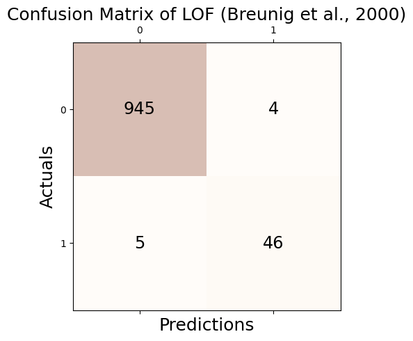
Accuracy: 0.991
Precision: 0.920
Recall: 0.902
F1 Score: 0.911# check
print('Accuracy(TP + TN / TP + TN + FP + FN): %.3f' % round((_conf.conf_matrix[0][0] + _conf.conf_matrix[1][1])/1000,3))
print('Precision(TP / TP + FP): %.3f' % round(_conf.conf_matrix[1][1]/(_conf.conf_matrix[0][1] + _conf.conf_matrix[1][1]),3))
print('Recall(TP / TP + FN): %.3f' % round(_conf.conf_matrix[1][1]/(_conf.conf_matrix[1][0] + _conf.conf_matrix[1][1]),3))
print('F1 Score(2*precision*recall/precision+recall): %.3f' % round((2*(_conf.conf_matrix[1][1]/(_conf.conf_matrix[0][1] + _conf.conf_matrix[1][1]))*(_conf.conf_matrix[1][1]/(_conf.conf_matrix[1][0] + _conf.conf_matrix[1][1]))) / (_conf.conf_matrix[1][1]/(_conf.conf_matrix[0][1] + _conf.conf_matrix[1][1]) + _conf.conf_matrix[1][1]/(_conf.conf_matrix[1][0] + _conf.conf_matrix[1][1])),3))Accuracy(TP + TN / TP + TN + FP + FN): 0.991
Precision(TP / TP + FP): 0.920
Recall(TP / TP + FN): 0.902
F1 Score(2*precision*recall/precision+recall): 0.911fpr, tpr, thresh = roc_curve(outlier_true_linear,clf.decision_function(_df))auc(fpr, tpr)0.9975412715138742tab_linear = pd.concat([tab_linear,
pd.DataFrame({"Accuracy":[_conf.acc],"Precision":[_conf.pre],"Recall":[_conf.rec],"F1":[_conf.f1],"AUC":[auc(fpr, tpr)]},index = [_conf.name])]);tab_linear| Accuracy | Precision | Recall | F1 | AUC | |
|---|---|---|---|---|---|
| GODE | 0.999 | 1.00 | 0.980392 | 0.990099 | 0.999979 |
| LOF (Breunig et al., 2000) | 0.991 | 0.92 | 0.901961 | 0.910891 | 0.997541 |
KNN_Linear
np.random.seed(77)
clf = KNN(contamination=0.05)
clf.fit(_df[['x', 'y']])KNN(algorithm='auto', contamination=0.05, leaf_size=30, method='largest',
metric='minkowski', metric_params=None, n_jobs=1, n_neighbors=5, p=2,
radius=1.0)outlier_KNN_one = list(clf.labels_)_conf = Conf_matrx(outlier_true_linear,outlier_KNN_one)
_conf.conf("kNN (Ramaswamy et al., 2000)")Accuracy: 0.991
Precision: 0.920
Recall: 0.902
F1 Score: 0.911# check
print('Accuracy(TP + TN / TP + TN + FP + FN): %.3f' % round((_conf.conf_matrix[0][0] + _conf.conf_matrix[1][1])/1000,3))
print('Precision(TP / TP + FP): %.3f' % round(_conf.conf_matrix[1][1]/(_conf.conf_matrix[0][1] + _conf.conf_matrix[1][1]),3))
print('Recall(TP / TP + FN): %.3f' % round(_conf.conf_matrix[1][1]/(_conf.conf_matrix[1][0] + _conf.conf_matrix[1][1]),3))
print('F1 Score(2*precision*recall/precision+recall): %.3f' % round((2*(_conf.conf_matrix[1][1]/(_conf.conf_matrix[0][1] + _conf.conf_matrix[1][1]))*(_conf.conf_matrix[1][1]/(_conf.conf_matrix[1][0] + _conf.conf_matrix[1][1]))) / (_conf.conf_matrix[1][1]/(_conf.conf_matrix[0][1] + _conf.conf_matrix[1][1]) + _conf.conf_matrix[1][1]/(_conf.conf_matrix[1][0] + _conf.conf_matrix[1][1])),3))Accuracy(TP + TN / TP + TN + FP + FN): 0.991
Precision(TP / TP + FP): 0.920
Recall(TP / TP + FN): 0.902
F1 Score(2*precision*recall/precision+recall): 0.911fpr, tpr, thresh = roc_curve(outlier_true_linear,clf.decision_function(_df))auc(fpr, tpr)0.9973656480505795tab_linear = pd.concat([tab_linear,
pd.DataFrame({"Accuracy":[_conf.acc],"Precision":[_conf.pre],"Recall":[_conf.rec],"F1":[_conf.f1],"AUC":[auc(fpr, tpr)]},index = [_conf.name])]);tab_linear| Accuracy | Precision | Recall | F1 | AUC | |
|---|---|---|---|---|---|
| GODE | 0.999 | 1.00 | 0.980392 | 0.990099 | 0.999979 |
| LOF (Breunig et al., 2000) | 0.991 | 0.92 | 0.901961 | 0.910891 | 0.997541 |
| kNN (Ramaswamy et al., 2000) | 0.991 | 0.92 | 0.901961 | 0.910891 | 0.997366 |
CBLOF_Linear
clf = CBLOF(contamination=0.05,random_state=77)
clf.fit(_df[['x', 'y']])/home/csy/anaconda3/envs/pygsp/lib/python3.10/site-packages/sklearn/cluster/_kmeans.py:1412: FutureWarning: The default value of `n_init` will change from 10 to 'auto' in 1.4. Set the value of `n_init` explicitly to suppress the warning
super()._check_params_vs_input(X, default_n_init=10)CBLOF(alpha=0.9, beta=5, check_estimator=False, clustering_estimator=None,
contamination=0.05, n_clusters=8, n_jobs=None, random_state=77,
use_weights=False)outlier_CBLOF_one = list(clf.labels_)_conf = Conf_matrx(outlier_true_linear,outlier_CBLOF_one)
_conf.conf("CBLOF (He et al., 2003)")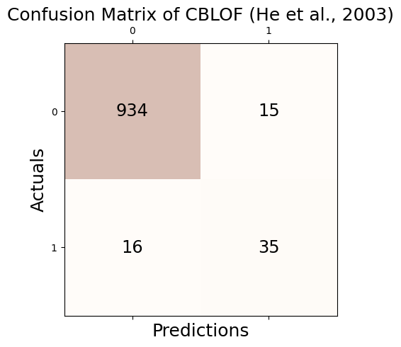
Accuracy: 0.969
Precision: 0.700
Recall: 0.686
F1 Score: 0.693# check
print('Accuracy(TP + TN / TP + TN + FP + FN): %.3f' % round((_conf.conf_matrix[0][0] + _conf.conf_matrix[1][1])/1000,3))
print('Precision(TP / TP + FP): %.3f' % round(_conf.conf_matrix[1][1]/(_conf.conf_matrix[0][1] + _conf.conf_matrix[1][1]),3))
print('Recall(TP / TP + FN): %.3f' % round(_conf.conf_matrix[1][1]/(_conf.conf_matrix[1][0] + _conf.conf_matrix[1][1]),3))
print('F1 Score(2*precision*recall/precision+recall): %.3f' % round((2*(_conf.conf_matrix[1][1]/(_conf.conf_matrix[0][1] + _conf.conf_matrix[1][1]))*(_conf.conf_matrix[1][1]/(_conf.conf_matrix[1][0] + _conf.conf_matrix[1][1]))) / (_conf.conf_matrix[1][1]/(_conf.conf_matrix[0][1] + _conf.conf_matrix[1][1]) + _conf.conf_matrix[1][1]/(_conf.conf_matrix[1][0] + _conf.conf_matrix[1][1])),3))Accuracy(TP + TN / TP + TN + FP + FN): 0.969
Precision(TP / TP + FP): 0.700
Recall(TP / TP + FN): 0.686
F1 Score(2*precision*recall/precision+recall): 0.693fpr, tpr, thresh = roc_curve(outlier_true_linear,clf.decision_function(_df))auc(fpr, tpr)0.9592140333477964tab_linear = pd.concat([tab_linear,
pd.DataFrame({"Accuracy":[_conf.acc],"Precision":[_conf.pre],"Recall":[_conf.rec],"F1":[_conf.f1],"AUC":[auc(fpr, tpr)]},index = [_conf.name])]);tab_linear| Accuracy | Precision | Recall | F1 | AUC | |
|---|---|---|---|---|---|
| GODE | 0.999 | 1.00 | 0.980392 | 0.990099 | 0.999979 |
| LOF (Breunig et al., 2000) | 0.991 | 0.92 | 0.901961 | 0.910891 | 0.997541 |
| kNN (Ramaswamy et al., 2000) | 0.991 | 0.92 | 0.901961 | 0.910891 | 0.997366 |
| CBLOF (He et al., 2003) | 0.969 | 0.70 | 0.686275 | 0.693069 | 0.959214 |
OCSVM_Linear
np.random.seed(77)
clf = OCSVM(nu=0.05)
clf.fit(_df)OCSVM(cache_size=200, coef0=0.0, contamination=0.1, degree=3, gamma='auto',
kernel='rbf', max_iter=-1, nu=0.05, shrinking=True, tol=0.001,
verbose=False)outlier_OSVM_one = list(clf.predict(_df))/home/csy/anaconda3/envs/pygsp/lib/python3.10/site-packages/sklearn/base.py:457: UserWarning: X has feature names, but OneClassSVM was fitted without feature names
warnings.warn(_conf = Conf_matrx(outlier_true_linear,outlier_OSVM_one)
_conf.conf("OCSVM (Sch ̈olkopf et al., 2001)")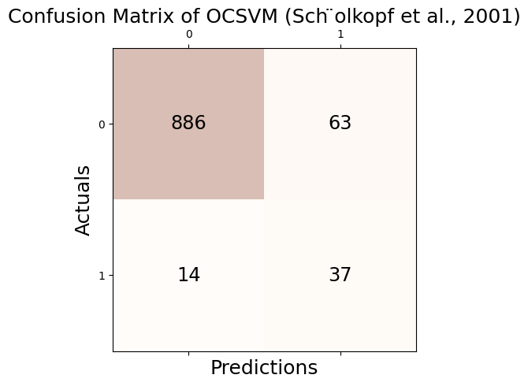
Accuracy: 0.923
Precision: 0.370
Recall: 0.725
F1 Score: 0.490# check
print('Accuracy(TP + TN / TP + TN + FP + FN): %.3f' % round((_conf.conf_matrix[0][0] + _conf.conf_matrix[1][1])/1000,3))
print('Precision(TP / TP + FP): %.3f' % round(_conf.conf_matrix[1][1]/(_conf.conf_matrix[0][1] + _conf.conf_matrix[1][1]),3))
print('Recall(TP / TP + FN): %.3f' % round(_conf.conf_matrix[1][1]/(_conf.conf_matrix[1][0] + _conf.conf_matrix[1][1]),3))
print('F1 Score(2*precision*recall/precision+recall): %.3f' % round((2*(_conf.conf_matrix[1][1]/(_conf.conf_matrix[0][1] + _conf.conf_matrix[1][1]))*(_conf.conf_matrix[1][1]/(_conf.conf_matrix[1][0] + _conf.conf_matrix[1][1]))) / (_conf.conf_matrix[1][1]/(_conf.conf_matrix[0][1] + _conf.conf_matrix[1][1]) + _conf.conf_matrix[1][1]/(_conf.conf_matrix[1][0] + _conf.conf_matrix[1][1])),3))Accuracy(TP + TN / TP + TN + FP + FN): 0.923
Precision(TP / TP + FP): 0.370
Recall(TP / TP + FN): 0.725
F1 Score(2*precision*recall/precision+recall): 0.490fpr, tpr, thresh = roc_curve(outlier_true_linear,clf.decision_function(_df))/home/csy/anaconda3/envs/pygsp/lib/python3.10/site-packages/sklearn/base.py:457: UserWarning: X has feature names, but OneClassSVM was fitted without feature names
warnings.warn(auc(fpr, tpr)0.8641500857455733tab_linear = pd.concat([tab_linear,
pd.DataFrame({"Accuracy":[_conf.acc],"Precision":[_conf.pre],"Recall":[_conf.rec],"F1":[_conf.f1],"AUC":[auc(fpr, tpr)]},index = [_conf.name])]);tab_linear| Accuracy | Precision | Recall | F1 | AUC | |
|---|---|---|---|---|---|
| GODE | 0.999 | 1.00 | 0.980392 | 0.990099 | 0.999979 |
| LOF (Breunig et al., 2000) | 0.991 | 0.92 | 0.901961 | 0.910891 | 0.997541 |
| kNN (Ramaswamy et al., 2000) | 0.991 | 0.92 | 0.901961 | 0.910891 | 0.997366 |
| CBLOF (He et al., 2003) | 0.969 | 0.70 | 0.686275 | 0.693069 | 0.959214 |
| OCSVM (Sch ̈olkopf et al., 2001) | 0.923 | 0.37 | 0.725490 | 0.490066 | 0.864150 |
MCD_Linear
clf = MCD(contamination=0.05, random_state = 77)
clf.fit(_df[['x', 'y']])MCD(assume_centered=False, contamination=0.05, random_state=77,
store_precision=True, support_fraction=None)outlier_MCD_one = list(clf.labels_)_conf = Conf_matrx(outlier_true_linear,outlier_MCD_one)
_conf.conf("MCD (Hardin and Rocke, 2004)")Accuracy: 0.999
Precision: 1.000
Recall: 0.980
F1 Score: 0.990# check
print('Accuracy(TP + TN / TP + TN + FP + FN): %.3f' % round((_conf.conf_matrix[0][0] + _conf.conf_matrix[1][1])/1000,3))
print('Precision(TP / TP + FP): %.3f' % round(_conf.conf_matrix[1][1]/(_conf.conf_matrix[0][1] + _conf.conf_matrix[1][1]),3))
print('Recall(TP / TP + FN): %.3f' % round(_conf.conf_matrix[1][1]/(_conf.conf_matrix[1][0] + _conf.conf_matrix[1][1]),3))
print('F1 Score(2*precision*recall/precision+recall): %.3f' % round((2*(_conf.conf_matrix[1][1]/(_conf.conf_matrix[0][1] + _conf.conf_matrix[1][1]))*(_conf.conf_matrix[1][1]/(_conf.conf_matrix[1][0] + _conf.conf_matrix[1][1]))) / (_conf.conf_matrix[1][1]/(_conf.conf_matrix[0][1] + _conf.conf_matrix[1][1]) + _conf.conf_matrix[1][1]/(_conf.conf_matrix[1][0] + _conf.conf_matrix[1][1])),3))Accuracy(TP + TN / TP + TN + FP + FN): 0.999
Precision(TP / TP + FP): 1.000
Recall(TP / TP + FN): 0.980
F1 Score(2*precision*recall/precision+recall): 0.990fpr, tpr, thresh = roc_curve(outlier_true_linear,clf.decision_function(_df))auc(fpr, tpr)0.999958676832166tab_linear = pd.concat([tab_linear,
pd.DataFrame({"Accuracy":[_conf.acc],"Precision":[_conf.pre],"Recall":[_conf.rec],"F1":[_conf.f1],"AUC":[auc(fpr, tpr)]},index = [_conf.name])]);tab_linear| Accuracy | Precision | Recall | F1 | AUC | |
|---|---|---|---|---|---|
| GODE | 0.999 | 1.00 | 0.980392 | 0.990099 | 0.999979 |
| LOF (Breunig et al., 2000) | 0.991 | 0.92 | 0.901961 | 0.910891 | 0.997541 |
| kNN (Ramaswamy et al., 2000) | 0.991 | 0.92 | 0.901961 | 0.910891 | 0.997366 |
| CBLOF (He et al., 2003) | 0.969 | 0.70 | 0.686275 | 0.693069 | 0.959214 |
| OCSVM (Sch ̈olkopf et al., 2001) | 0.923 | 0.37 | 0.725490 | 0.490066 | 0.864150 |
| MCD (Hardin and Rocke, 2004) | 0.999 | 1.00 | 0.980392 | 0.990099 | 0.999959 |
Feature Bagging_Linear
clf = FeatureBagging(contamination=0.05, random_state=77)
clf.fit(_df[['x', 'y']])FeatureBagging(base_estimator=None, bootstrap_features=False,
check_detector=True, check_estimator=False, combination='average',
contamination=0.05, estimator_params={}, max_features=1.0,
n_estimators=10, n_jobs=1, random_state=77, verbose=0)outlier_FeatureBagging_one = list(clf.labels_)_conf = Conf_matrx(outlier_true_linear,outlier_FeatureBagging_one)
_conf.conf("Feature Bagging (Lazarevic and Kumar, 2005)")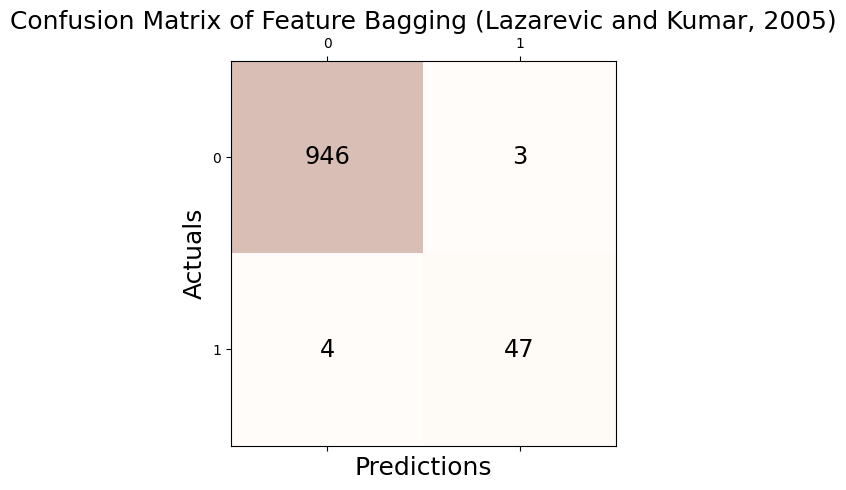
Accuracy: 0.993
Precision: 0.940
Recall: 0.922
F1 Score: 0.931# check
print('Accuracy(TP + TN / TP + TN + FP + FN): %.3f' % round((_conf.conf_matrix[0][0] + _conf.conf_matrix[1][1])/1000,3))
print('Precision(TP / TP + FP): %.3f' % round(_conf.conf_matrix[1][1]/(_conf.conf_matrix[0][1] + _conf.conf_matrix[1][1]),3))
print('Recall(TP / TP + FN): %.3f' % round(_conf.conf_matrix[1][1]/(_conf.conf_matrix[1][0] + _conf.conf_matrix[1][1]),3))
print('F1 Score(2*precision*recall/precision+recall): %.3f' % round((2*(_conf.conf_matrix[1][1]/(_conf.conf_matrix[0][1] + _conf.conf_matrix[1][1]))*(_conf.conf_matrix[1][1]/(_conf.conf_matrix[1][0] + _conf.conf_matrix[1][1]))) / (_conf.conf_matrix[1][1]/(_conf.conf_matrix[0][1] + _conf.conf_matrix[1][1]) + _conf.conf_matrix[1][1]/(_conf.conf_matrix[1][0] + _conf.conf_matrix[1][1])),3))Accuracy(TP + TN / TP + TN + FP + FN): 0.993
Precision(TP / TP + FP): 0.940
Recall(TP / TP + FN): 0.922
F1 Score(2*precision*recall/precision+recall): 0.931fpr, tpr, thresh = roc_curve(outlier_true_linear,clf.decision_function(_df))auc(fpr, tpr)0.9973966404264551tab_linear = pd.concat([tab_linear,
pd.DataFrame({"Accuracy":[_conf.acc],"Precision":[_conf.pre],"Recall":[_conf.rec],"F1":[_conf.f1],"AUC":[auc(fpr, tpr)]},index = [_conf.name])]);tab_linear| Accuracy | Precision | Recall | F1 | AUC | |
|---|---|---|---|---|---|
| GODE | 0.999 | 1.00 | 0.980392 | 0.990099 | 0.999979 |
| LOF (Breunig et al., 2000) | 0.991 | 0.92 | 0.901961 | 0.910891 | 0.997541 |
| kNN (Ramaswamy et al., 2000) | 0.991 | 0.92 | 0.901961 | 0.910891 | 0.997366 |
| CBLOF (He et al., 2003) | 0.969 | 0.70 | 0.686275 | 0.693069 | 0.959214 |
| OCSVM (Sch ̈olkopf et al., 2001) | 0.923 | 0.37 | 0.725490 | 0.490066 | 0.864150 |
| MCD (Hardin and Rocke, 2004) | 0.999 | 1.00 | 0.980392 | 0.990099 | 0.999959 |
| Feature Bagging (Lazarevic and Kumar, 2005) | 0.993 | 0.94 | 0.921569 | 0.930693 | 0.997397 |
ABOD_Linear
np.random.seed(77)
clf = ABOD(contamination=0.05)
clf.fit(_df[['x', 'y']])ABOD(contamination=0.05, method='fast', n_neighbors=5)outlier_ABOD_one = list(clf.labels_)_conf = Conf_matrx(outlier_true_linear,outlier_ABOD_one)
_conf.conf("ABOD (Kriegel et al., 2008)")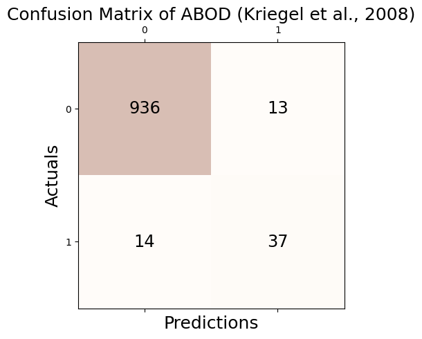
Accuracy: 0.973
Precision: 0.740
Recall: 0.725
F1 Score: 0.733# check
print('Accuracy(TP + TN / TP + TN + FP + FN): %.3f' % round((_conf.conf_matrix[0][0] + _conf.conf_matrix[1][1])/1000,3))
print('Precision(TP / TP + FP): %.3f' % round(_conf.conf_matrix[1][1]/(_conf.conf_matrix[0][1] + _conf.conf_matrix[1][1]),3))
print('Recall(TP / TP + FN): %.3f' % round(_conf.conf_matrix[1][1]/(_conf.conf_matrix[1][0] + _conf.conf_matrix[1][1]),3))
print('F1 Score(2*precision*recall/precision+recall): %.3f' % round((2*(_conf.conf_matrix[1][1]/(_conf.conf_matrix[0][1] + _conf.conf_matrix[1][1]))*(_conf.conf_matrix[1][1]/(_conf.conf_matrix[1][0] + _conf.conf_matrix[1][1]))) / (_conf.conf_matrix[1][1]/(_conf.conf_matrix[0][1] + _conf.conf_matrix[1][1]) + _conf.conf_matrix[1][1]/(_conf.conf_matrix[1][0] + _conf.conf_matrix[1][1])),3))Accuracy(TP + TN / TP + TN + FP + FN): 0.973
Precision(TP / TP + FP): 0.740
Recall(TP / TP + FN): 0.725
F1 Score(2*precision*recall/precision+recall): 0.733fpr, tpr, thresh = roc_curve(outlier_true_linear,clf.decision_function(_df))auc(fpr, tpr)0.9902064092233311tab_linear = pd.concat([tab_linear,
pd.DataFrame({"Accuracy":[_conf.acc],"Precision":[_conf.pre],"Recall":[_conf.rec],"F1":[_conf.f1],"AUC":[auc(fpr, tpr)]},index = [_conf.name])]);tab_linear| Accuracy | Precision | Recall | F1 | AUC | |
|---|---|---|---|---|---|
| GODE | 0.999 | 1.00 | 0.980392 | 0.990099 | 0.999979 |
| LOF (Breunig et al., 2000) | 0.991 | 0.92 | 0.901961 | 0.910891 | 0.997541 |
| kNN (Ramaswamy et al., 2000) | 0.991 | 0.92 | 0.901961 | 0.910891 | 0.997366 |
| CBLOF (He et al., 2003) | 0.969 | 0.70 | 0.686275 | 0.693069 | 0.959214 |
| OCSVM (Sch ̈olkopf et al., 2001) | 0.923 | 0.37 | 0.725490 | 0.490066 | 0.864150 |
| MCD (Hardin and Rocke, 2004) | 0.999 | 1.00 | 0.980392 | 0.990099 | 0.999959 |
| Feature Bagging (Lazarevic and Kumar, 2005) | 0.993 | 0.94 | 0.921569 | 0.930693 | 0.997397 |
| ABOD (Kriegel et al., 2008) | 0.973 | 0.74 | 0.725490 | 0.732673 | 0.990206 |
IForest_Linear
clf = IForest(contamination=0.05,random_state=77)
clf.fit(_df[['x', 'y']])IForest(behaviour='old', bootstrap=False, contamination=0.05,
max_features=1.0, max_samples='auto', n_estimators=100, n_jobs=1,
random_state=77, verbose=0)outlier_IForest_one = list(clf.labels_)_conf = Conf_matrx(outlier_true_linear,outlier_IForest_one)
_conf.conf("Isolation Forest (Liu et al., 2008)")Accuracy: 0.987
Precision: 0.880
Recall: 0.863
F1 Score: 0.871# check
print('Accuracy(TP + TN / TP + TN + FP + FN): %.3f' % round((_conf.conf_matrix[0][0] + _conf.conf_matrix[1][1])/1000,3))
print('Precision(TP / TP + FP): %.3f' % round(_conf.conf_matrix[1][1]/(_conf.conf_matrix[0][1] + _conf.conf_matrix[1][1]),3))
print('Recall(TP / TP + FN): %.3f' % round(_conf.conf_matrix[1][1]/(_conf.conf_matrix[1][0] + _conf.conf_matrix[1][1]),3))
print('F1 Score(2*precision*recall/precision+recall): %.3f' % round((2*(_conf.conf_matrix[1][1]/(_conf.conf_matrix[0][1] + _conf.conf_matrix[1][1]))*(_conf.conf_matrix[1][1]/(_conf.conf_matrix[1][0] + _conf.conf_matrix[1][1]))) / (_conf.conf_matrix[1][1]/(_conf.conf_matrix[0][1] + _conf.conf_matrix[1][1]) + _conf.conf_matrix[1][1]/(_conf.conf_matrix[1][0] + _conf.conf_matrix[1][1])),3))Accuracy(TP + TN / TP + TN + FP + FN): 0.987
Precision(TP / TP + FP): 0.880
Recall(TP / TP + FN): 0.863
F1 Score(2*precision*recall/precision+recall): 0.871fpr, tpr, thresh = roc_curve(outlier_true_linear,clf.decision_function(_df))/home/csy/anaconda3/envs/pygsp/lib/python3.10/site-packages/sklearn/base.py:457: UserWarning: X has feature names, but IsolationForest was fitted without feature names
warnings.warn(auc(fpr, tpr)0.9958263600487613tab_linear = pd.concat([tab_linear,
pd.DataFrame({"Accuracy":[_conf.acc],"Precision":[_conf.pre],"Recall":[_conf.rec],"F1":[_conf.f1],"AUC":[auc(fpr, tpr)]},index = [_conf.name])]);tab_linear| Accuracy | Precision | Recall | F1 | AUC | |
|---|---|---|---|---|---|
| GODE | 0.999 | 1.00 | 0.980392 | 0.990099 | 0.999979 |
| LOF (Breunig et al., 2000) | 0.991 | 0.92 | 0.901961 | 0.910891 | 0.997541 |
| kNN (Ramaswamy et al., 2000) | 0.991 | 0.92 | 0.901961 | 0.910891 | 0.997366 |
| CBLOF (He et al., 2003) | 0.969 | 0.70 | 0.686275 | 0.693069 | 0.959214 |
| OCSVM (Sch ̈olkopf et al., 2001) | 0.923 | 0.37 | 0.725490 | 0.490066 | 0.864150 |
| MCD (Hardin and Rocke, 2004) | 0.999 | 1.00 | 0.980392 | 0.990099 | 0.999959 |
| Feature Bagging (Lazarevic and Kumar, 2005) | 0.993 | 0.94 | 0.921569 | 0.930693 | 0.997397 |
| ABOD (Kriegel et al., 2008) | 0.973 | 0.74 | 0.725490 | 0.732673 | 0.990206 |
| Isolation Forest (Liu et al., 2008) | 0.987 | 0.88 | 0.862745 | 0.871287 | 0.995826 |
HBOS_Linear
np.random.seed(77)
clf = HBOS(contamination=0.05)
clf.fit(_df[['x', 'y']])HBOS(alpha=0.1, contamination=0.05, n_bins=10, tol=0.5)outlier_HBOS_one = list(clf.labels_)_conf = Conf_matrx(outlier_true_linear,outlier_HBOS_one)
_conf.conf("HBOS (Goldstein and Dengel, 2012)")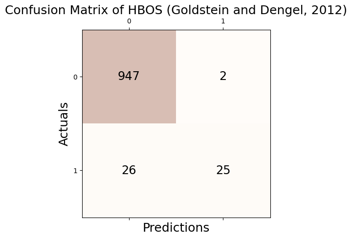
Accuracy: 0.972
Precision: 0.926
Recall: 0.490
F1 Score: 0.641# check
print('Accuracy(TP + TN / TP + TN + FP + FN): %.3f' % round((_conf.conf_matrix[0][0] + _conf.conf_matrix[1][1])/1000,3))
print('Precision(TP / TP + FP): %.3f' % round(_conf.conf_matrix[1][1]/(_conf.conf_matrix[0][1] + _conf.conf_matrix[1][1]),3))
print('Recall(TP / TP + FN): %.3f' % round(_conf.conf_matrix[1][1]/(_conf.conf_matrix[1][0] + _conf.conf_matrix[1][1]),3))
print('F1 Score(2*precision*recall/precision+recall): %.3f' % round((2*(_conf.conf_matrix[1][1]/(_conf.conf_matrix[0][1] + _conf.conf_matrix[1][1]))*(_conf.conf_matrix[1][1]/(_conf.conf_matrix[1][0] + _conf.conf_matrix[1][1]))) / (_conf.conf_matrix[1][1]/(_conf.conf_matrix[0][1] + _conf.conf_matrix[1][1]) + _conf.conf_matrix[1][1]/(_conf.conf_matrix[1][0] + _conf.conf_matrix[1][1])),3))Accuracy(TP + TN / TP + TN + FP + FN): 0.972
Precision(TP / TP + FP): 0.926
Recall(TP / TP + FN): 0.490
F1 Score(2*precision*recall/precision+recall): 0.641fpr, tpr, thresh = roc_curve(outlier_true_linear,clf.decision_function(_df))auc(fpr, tpr)0.8636438769396062tab_linear = pd.concat([tab_linear,
pd.DataFrame({"Accuracy":[_conf.acc],"Precision":[_conf.pre],"Recall":[_conf.rec],"F1":[_conf.f1],"AUC":[auc(fpr, tpr)]},index = [_conf.name])]);tab_linear| Accuracy | Precision | Recall | F1 | AUC | |
|---|---|---|---|---|---|
| GODE | 0.999 | 1.000000 | 0.980392 | 0.990099 | 0.999979 |
| LOF (Breunig et al., 2000) | 0.991 | 0.920000 | 0.901961 | 0.910891 | 0.997541 |
| kNN (Ramaswamy et al., 2000) | 0.991 | 0.920000 | 0.901961 | 0.910891 | 0.997366 |
| CBLOF (He et al., 2003) | 0.969 | 0.700000 | 0.686275 | 0.693069 | 0.959214 |
| OCSVM (Sch ̈olkopf et al., 2001) | 0.923 | 0.370000 | 0.725490 | 0.490066 | 0.864150 |
| MCD (Hardin and Rocke, 2004) | 0.999 | 1.000000 | 0.980392 | 0.990099 | 0.999959 |
| Feature Bagging (Lazarevic and Kumar, 2005) | 0.993 | 0.940000 | 0.921569 | 0.930693 | 0.997397 |
| ABOD (Kriegel et al., 2008) | 0.973 | 0.740000 | 0.725490 | 0.732673 | 0.990206 |
| Isolation Forest (Liu et al., 2008) | 0.987 | 0.880000 | 0.862745 | 0.871287 | 0.995826 |
| HBOS (Goldstein and Dengel, 2012) | 0.972 | 0.925926 | 0.490196 | 0.641026 | 0.863644 |
SOS_Linear
np.random.seed(77)
clf = SOS(contamination=0.05)
clf.fit(_df[['x', 'y']])SOS(contamination=0.05, eps=1e-05, metric='euclidean', perplexity=4.5)outlier_SOS_one = list(clf.labels_)_conf = Conf_matrx(outlier_true_linear,outlier_SOS_one)
_conf.conf("SOS (Janssens et al., 2012)")Accuracy: 0.907
Precision: 0.080
Recall: 0.078
F1 Score: 0.079# check
print('Accuracy(TP + TN / TP + TN + FP + FN): %.3f' % round((_conf.conf_matrix[0][0] + _conf.conf_matrix[1][1])/1000,3))
print('Precision(TP / TP + FP): %.3f' % round(_conf.conf_matrix[1][1]/(_conf.conf_matrix[0][1] + _conf.conf_matrix[1][1]),3))
print('Recall(TP / TP + FN): %.3f' % round(_conf.conf_matrix[1][1]/(_conf.conf_matrix[1][0] + _conf.conf_matrix[1][1]),3))
print('F1 Score(2*precision*recall/precision+recall): %.3f' % round((2*(_conf.conf_matrix[1][1]/(_conf.conf_matrix[0][1] + _conf.conf_matrix[1][1]))*(_conf.conf_matrix[1][1]/(_conf.conf_matrix[1][0] + _conf.conf_matrix[1][1]))) / (_conf.conf_matrix[1][1]/(_conf.conf_matrix[0][1] + _conf.conf_matrix[1][1]) + _conf.conf_matrix[1][1]/(_conf.conf_matrix[1][0] + _conf.conf_matrix[1][1])),3))Accuracy(TP + TN / TP + TN + FP + FN): 0.907
Precision(TP / TP + FP): 0.080
Recall(TP / TP + FN): 0.078
F1 Score(2*precision*recall/precision+recall): 0.079fpr, tpr, thresh = roc_curve(outlier_true_linear,clf.decision_function(_df))auc(fpr, tpr)0.5417054071365112tab_linear = pd.concat([tab_linear,
pd.DataFrame({"Accuracy":[_conf.acc],"Precision":[_conf.pre],"Recall":[_conf.rec],"F1":[_conf.f1],"AUC":[auc(fpr, tpr)]},index = [_conf.name])]);tab_linear| Accuracy | Precision | Recall | F1 | AUC | |
|---|---|---|---|---|---|
| GODE | 0.999 | 1.000000 | 0.980392 | 0.990099 | 0.999979 |
| LOF (Breunig et al., 2000) | 0.991 | 0.920000 | 0.901961 | 0.910891 | 0.997541 |
| kNN (Ramaswamy et al., 2000) | 0.991 | 0.920000 | 0.901961 | 0.910891 | 0.997366 |
| CBLOF (He et al., 2003) | 0.969 | 0.700000 | 0.686275 | 0.693069 | 0.959214 |
| OCSVM (Sch ̈olkopf et al., 2001) | 0.923 | 0.370000 | 0.725490 | 0.490066 | 0.864150 |
| MCD (Hardin and Rocke, 2004) | 0.999 | 1.000000 | 0.980392 | 0.990099 | 0.999959 |
| Feature Bagging (Lazarevic and Kumar, 2005) | 0.993 | 0.940000 | 0.921569 | 0.930693 | 0.997397 |
| ABOD (Kriegel et al., 2008) | 0.973 | 0.740000 | 0.725490 | 0.732673 | 0.990206 |
| Isolation Forest (Liu et al., 2008) | 0.987 | 0.880000 | 0.862745 | 0.871287 | 0.995826 |
| HBOS (Goldstein and Dengel, 2012) | 0.972 | 0.925926 | 0.490196 | 0.641026 | 0.863644 |
| SOS (Janssens et al., 2012) | 0.907 | 0.080000 | 0.078431 | 0.079208 | 0.541705 |
SO_GAAL_Linear
np.random.seed(77)
clf = SO_GAAL(contamination=0.05)
clf.fit(_df[['x', 'y']])/home/csy/anaconda3/envs/pygsp/lib/python3.10/site-packages/keras/src/optimizers/legacy/gradient_descent.py:114: UserWarning: The `lr` argument is deprecated, use `learning_rate` instead.
super().__init__(name, **kwargs)Epoch 1 of 60
Testing for epoch 1 index 1:
Testing for epoch 1 index 2:
Epoch 2 of 60
Testing for epoch 2 index 1:
Testing for epoch 2 index 2:
Epoch 3 of 60
Testing for epoch 3 index 1:
Testing for epoch 3 index 2:
Epoch 4 of 60
Testing for epoch 4 index 1:
Testing for epoch 4 index 2:
Epoch 5 of 60
Testing for epoch 5 index 1:
Testing for epoch 5 index 2:
Epoch 6 of 60
Testing for epoch 6 index 1:
Testing for epoch 6 index 2:
Epoch 7 of 60
Testing for epoch 7 index 1:
Testing for epoch 7 index 2:
Epoch 8 of 60
Testing for epoch 8 index 1:
Testing for epoch 8 index 2:
Epoch 9 of 60
Testing for epoch 9 index 1:
Testing for epoch 9 index 2:
Epoch 10 of 60
Testing for epoch 10 index 1:
Testing for epoch 10 index 2:
Epoch 11 of 60
Testing for epoch 11 index 1:
Testing for epoch 11 index 2:
Epoch 12 of 60
Testing for epoch 12 index 1:
Testing for epoch 12 index 2:
Epoch 13 of 60
Testing for epoch 13 index 1:
Testing for epoch 13 index 2:
Epoch 14 of 60
Testing for epoch 14 index 1:
Testing for epoch 14 index 2:
Epoch 15 of 60
Testing for epoch 15 index 1:
Testing for epoch 15 index 2:
Epoch 16 of 60
Testing for epoch 16 index 1:
Testing for epoch 16 index 2:
Epoch 17 of 60
Testing for epoch 17 index 1:
Testing for epoch 17 index 2:
Epoch 18 of 60
Testing for epoch 18 index 1:
Testing for epoch 18 index 2:
Epoch 19 of 60
Testing for epoch 19 index 1:
Testing for epoch 19 index 2:
Epoch 20 of 60
Testing for epoch 20 index 1:
Testing for epoch 20 index 2:
Epoch 21 of 60
Testing for epoch 21 index 1:
Testing for epoch 21 index 2:
Epoch 22 of 60
Testing for epoch 22 index 1:
16/16 [==============================] - 0s 2ms/step - loss: 1.1165
Testing for epoch 22 index 2:
16/16 [==============================] - 0s 1ms/step - loss: 1.1189
Epoch 23 of 60
Testing for epoch 23 index 1:
16/16 [==============================] - 0s 2ms/step - loss: 1.1783
Testing for epoch 23 index 2:
16/16 [==============================] - 0s 1ms/step - loss: 1.1937
Epoch 24 of 60
Testing for epoch 24 index 1:
16/16 [==============================] - 0s 2ms/step - loss: 1.2216
Testing for epoch 24 index 2:
16/16 [==============================] - 0s 1ms/step - loss: 1.2049
Epoch 25 of 60
Testing for epoch 25 index 1:
16/16 [==============================] - 0s 2ms/step - loss: 1.2399
Testing for epoch 25 index 2:
16/16 [==============================] - 0s 909us/step - loss: 1.2524
Epoch 26 of 60
Testing for epoch 26 index 1:
16/16 [==============================] - 0s 2ms/step - loss: 1.2894
Testing for epoch 26 index 2:
16/16 [==============================] - 0s 2ms/step - loss: 1.3202
Epoch 27 of 60
Testing for epoch 27 index 1:
16/16 [==============================] - 0s 811us/step - loss: 1.2910
Testing for epoch 27 index 2:
16/16 [==============================] - 0s 815us/step - loss: 1.3322
Epoch 28 of 60
Testing for epoch 28 index 1:
16/16 [==============================] - 0s 2ms/step - loss: 1.3269
Testing for epoch 28 index 2:
16/16 [==============================] - 0s 810us/step - loss: 1.3402
Epoch 29 of 60
Testing for epoch 29 index 1:
16/16 [==============================] - 0s 1ms/step - loss: 1.3536
Testing for epoch 29 index 2:
16/16 [==============================] - 0s 789us/step - loss: 1.4119
Epoch 30 of 60
Testing for epoch 30 index 1:
16/16 [==============================] - 0s 809us/step - loss: 1.4078
Testing for epoch 30 index 2:
16/16 [==============================] - 0s 793us/step - loss: 1.3819
Epoch 31 of 60
Testing for epoch 31 index 1:
16/16 [==============================] - 0s 1ms/step - loss: 1.4048
Testing for epoch 31 index 2:
16/16 [==============================] - 0s 1ms/step - loss: 1.4149
Epoch 32 of 60
Testing for epoch 32 index 1:
16/16 [==============================] - 0s 774us/step - loss: 1.4285
Testing for epoch 32 index 2:
16/16 [==============================] - 0s 2ms/step - loss: 1.4326
Epoch 33 of 60
Testing for epoch 33 index 1:
16/16 [==============================] - 0s 790us/step - loss: 1.4830
Testing for epoch 33 index 2:
16/16 [==============================] - 0s 844us/step - loss: 1.4463
Epoch 34 of 60
Testing for epoch 34 index 1:
16/16 [==============================] - 0s 2ms/step - loss: 1.4626
Testing for epoch 34 index 2:
16/16 [==============================] - 0s 2ms/step - loss: 1.4730
Epoch 35 of 60
Testing for epoch 35 index 1:
16/16 [==============================] - 0s 2ms/step - loss: 1.4690
Testing for epoch 35 index 2:
16/16 [==============================] - 0s 2ms/step - loss: 1.5170
Epoch 36 of 60
Testing for epoch 36 index 1:
16/16 [==============================] - 0s 841us/step - loss: 1.5280
Testing for epoch 36 index 2:
16/16 [==============================] - 0s 907us/step - loss: 1.5116
Epoch 37 of 60
Testing for epoch 37 index 1:
16/16 [==============================] - 0s 2ms/step - loss: 1.5294
Testing for epoch 37 index 2:
16/16 [==============================] - 0s 2ms/step - loss: 1.5397
Epoch 38 of 60
Testing for epoch 38 index 1:
16/16 [==============================] - 0s 2ms/step - loss: 1.5235
Testing for epoch 38 index 2:
16/16 [==============================] - 0s 1ms/step - loss: 1.5700
Epoch 39 of 60
Testing for epoch 39 index 1:
16/16 [==============================] - 0s 1ms/step - loss: 1.5820
Testing for epoch 39 index 2:
16/16 [==============================] - 0s 2ms/step - loss: 1.5393
Epoch 40 of 60
Testing for epoch 40 index 1:
16/16 [==============================] - 0s 2ms/step - loss: 1.5693
Testing for epoch 40 index 2:
16/16 [==============================] - 0s 959us/step - loss: 1.5822
Epoch 41 of 60
Testing for epoch 41 index 1:
16/16 [==============================] - 0s 869us/step - loss: 1.6224
Testing for epoch 41 index 2:
16/16 [==============================] - 0s 964us/step - loss: 1.6510
Epoch 42 of 60
Testing for epoch 42 index 1:
16/16 [==============================] - 0s 855us/step - loss: 1.6076
Testing for epoch 42 index 2:
16/16 [==============================] - 0s 1ms/step - loss: 1.5986
Epoch 43 of 60
Testing for epoch 43 index 1:
16/16 [==============================] - 0s 2ms/step - loss: 1.6366
Testing for epoch 43 index 2:
16/16 [==============================] - 0s 1ms/step - loss: 1.6675
Epoch 44 of 60
Testing for epoch 44 index 1:
16/16 [==============================] - 0s 839us/step - loss: 1.6276
Testing for epoch 44 index 2:
16/16 [==============================] - 0s 942us/step - loss: 1.6894
Epoch 45 of 60
Testing for epoch 45 index 1:
16/16 [==============================] - 0s 779us/step - loss: 1.7096
Testing for epoch 45 index 2:
16/16 [==============================] - 0s 2ms/step - loss: 1.7009
Epoch 46 of 60
Testing for epoch 46 index 1:
16/16 [==============================] - 0s 950us/step - loss: 1.7469
Testing for epoch 46 index 2:
16/16 [==============================] - 0s 802us/step - loss: 1.7162
Epoch 47 of 60
Testing for epoch 47 index 1:
16/16 [==============================] - 0s 2ms/step - loss: 1.6864
Testing for epoch 47 index 2:
16/16 [==============================] - 0s 2ms/step - loss: 1.7342
Epoch 48 of 60
Testing for epoch 48 index 1:
16/16 [==============================] - 0s 850us/step - loss: 1.7271
Testing for epoch 48 index 2:
16/16 [==============================] - 0s 2ms/step - loss: 1.8060
Epoch 49 of 60
Testing for epoch 49 index 1:
16/16 [==============================] - 0s 2ms/step - loss: 1.7241
Testing for epoch 49 index 2:
16/16 [==============================] - 0s 2ms/step - loss: 1.8112
Epoch 50 of 60
Testing for epoch 50 index 1:
16/16 [==============================] - 0s 1ms/step - loss: 1.7575
Testing for epoch 50 index 2:
16/16 [==============================] - 0s 797us/step - loss: 1.7625
Epoch 51 of 60
Testing for epoch 51 index 1:
16/16 [==============================] - 0s 1ms/step - loss: 1.7826
Testing for epoch 51 index 2:
16/16 [==============================] - 0s 852us/step - loss: 1.7773
Epoch 52 of 60
Testing for epoch 52 index 1:
16/16 [==============================] - 0s 845us/step - loss: 1.7978
Testing for epoch 52 index 2:
16/16 [==============================] - 0s 948us/step - loss: 1.8201
Epoch 53 of 60
Testing for epoch 53 index 1:
16/16 [==============================] - 0s 996us/step - loss: 1.8171
Testing for epoch 53 index 2:
16/16 [==============================] - 0s 2ms/step - loss: 1.8348
Epoch 54 of 60
Testing for epoch 54 index 1:
16/16 [==============================] - 0s 788us/step - loss: 1.8149
Testing for epoch 54 index 2:
16/16 [==============================] - 0s 795us/step - loss: 1.8123
Epoch 55 of 60
Testing for epoch 55 index 1:
16/16 [==============================] - 0s 1ms/step - loss: 1.8203
Testing for epoch 55 index 2:
16/16 [==============================] - 0s 759us/step - loss: 1.8700
Epoch 56 of 60
Testing for epoch 56 index 1:
16/16 [==============================] - 0s 822us/step - loss: 1.8608
Testing for epoch 56 index 2:
16/16 [==============================] - 0s 2ms/step - loss: 1.8683
Epoch 57 of 60
Testing for epoch 57 index 1:
16/16 [==============================] - 0s 810us/step - loss: 1.9068
Testing for epoch 57 index 2:
16/16 [==============================] - 0s 2ms/step - loss: 1.9222
Epoch 58 of 60
Testing for epoch 58 index 1:
16/16 [==============================] - 0s 2ms/step - loss: 1.8711
Testing for epoch 58 index 2:
16/16 [==============================] - 0s 995us/step - loss: 1.8794
Epoch 59 of 60
Testing for epoch 59 index 1:
16/16 [==============================] - 0s 784us/step - loss: 1.9300
Testing for epoch 59 index 2:
16/16 [==============================] - 0s 2ms/step - loss: 1.8748
Epoch 60 of 60
Testing for epoch 60 index 1:
16/16 [==============================] - 0s 2ms/step - loss: 1.9501
Testing for epoch 60 index 2:
16/16 [==============================] - 0s 2ms/step - loss: 1.9530
32/32 [==============================] - 0s 1ms/stepSO_GAAL(contamination=0.05, lr_d=0.01, lr_g=0.0001, momentum=0.9,
stop_epochs=20)outlier_SO_GAAL_one = list(clf.labels_)_conf = Conf_matrx(outlier_true_linear,outlier_SO_GAAL_one)
_conf.conf("SO-GAAL (Liu et al., 2019)")Accuracy: 0.946
Precision: 0.468
Recall: 0.431
F1 Score: 0.449# check
print('Accuracy(TP + TN / TP + TN + FP + FN): %.3f' % round((_conf.conf_matrix[0][0] + _conf.conf_matrix[1][1])/1000,3))
print('Precision(TP / TP + FP): %.3f' % round(_conf.conf_matrix[1][1]/(_conf.conf_matrix[0][1] + _conf.conf_matrix[1][1]),3))
print('Recall(TP / TP + FN): %.3f' % round(_conf.conf_matrix[1][1]/(_conf.conf_matrix[1][0] + _conf.conf_matrix[1][1]),3))
print('F1 Score(2*precision*recall/precision+recall): %.3f' % round((2*(_conf.conf_matrix[1][1]/(_conf.conf_matrix[0][1] + _conf.conf_matrix[1][1]))*(_conf.conf_matrix[1][1]/(_conf.conf_matrix[1][0] + _conf.conf_matrix[1][1]))) / (_conf.conf_matrix[1][1]/(_conf.conf_matrix[0][1] + _conf.conf_matrix[1][1]) + _conf.conf_matrix[1][1]/(_conf.conf_matrix[1][0] + _conf.conf_matrix[1][1])),3))Accuracy(TP + TN / TP + TN + FP + FN): 0.946
Precision(TP / TP + FP): 0.468
Recall(TP / TP + FN): 0.431
F1 Score(2*precision*recall/precision+recall): 0.449fpr, tpr, thresh = roc_curve(outlier_true_linear,clf.decision_function(_df))32/32 [==============================] - 0s 823us/stepauc(fpr, tpr)0.575208165457964tab_linear = pd.concat([tab_linear,
pd.DataFrame({"Accuracy":[_conf.acc],"Precision":[_conf.pre],"Recall":[_conf.rec],"F1":[_conf.f1],"AUC":[auc(fpr, tpr)]},index = [_conf.name])]);tab_linear| Accuracy | Precision | Recall | F1 | AUC | |
|---|---|---|---|---|---|
| GODE | 0.999 | 1.000000 | 0.980392 | 0.990099 | 0.999979 |
| LOF (Breunig et al., 2000) | 0.991 | 0.920000 | 0.901961 | 0.910891 | 0.997541 |
| kNN (Ramaswamy et al., 2000) | 0.991 | 0.920000 | 0.901961 | 0.910891 | 0.997366 |
| CBLOF (He et al., 2003) | 0.969 | 0.700000 | 0.686275 | 0.693069 | 0.959214 |
| OCSVM (Sch ̈olkopf et al., 2001) | 0.923 | 0.370000 | 0.725490 | 0.490066 | 0.864150 |
| MCD (Hardin and Rocke, 2004) | 0.999 | 1.000000 | 0.980392 | 0.990099 | 0.999959 |
| Feature Bagging (Lazarevic and Kumar, 2005) | 0.993 | 0.940000 | 0.921569 | 0.930693 | 0.997397 |
| ABOD (Kriegel et al., 2008) | 0.973 | 0.740000 | 0.725490 | 0.732673 | 0.990206 |
| Isolation Forest (Liu et al., 2008) | 0.987 | 0.880000 | 0.862745 | 0.871287 | 0.995826 |
| HBOS (Goldstein and Dengel, 2012) | 0.972 | 0.925926 | 0.490196 | 0.641026 | 0.863644 |
| SOS (Janssens et al., 2012) | 0.907 | 0.080000 | 0.078431 | 0.079208 | 0.541705 |
| SO-GAAL (Liu et al., 2019) | 0.946 | 0.468085 | 0.431373 | 0.448980 | 0.575208 |
MO_GAAL_Linear
np.random.seed(77)
clf = MO_GAAL(contamination=0.05)
clf.fit(_df[['x', 'y']])/home/csy/anaconda3/envs/pygsp/lib/python3.10/site-packages/keras/src/optimizers/legacy/gradient_descent.py:114: UserWarning: The `lr` argument is deprecated, use `learning_rate` instead.
super().__init__(name, **kwargs)Epoch 1 of 60
Testing for epoch 1 index 1:
WARNING:tensorflow:5 out of the last 74 calls to <function Model.make_predict_function.<locals>.predict_function at 0x7fd6d0525000> triggered tf.function retracing. Tracing is expensive and the excessive number of tracings could be due to (1) creating @tf.function repeatedly in a loop, (2) passing tensors with different shapes, (3) passing Python objects instead of tensors. For (1), please define your @tf.function outside of the loop. For (2), @tf.function has reduce_retracing=True option that can avoid unnecessary retracing. For (3), please refer to https://www.tensorflow.org/guide/function#controlling_retracing and https://www.tensorflow.org/api_docs/python/tf/function for more details.
WARNING:tensorflow:5 out of the last 12 calls to <function Model.make_predict_function.<locals>.predict_function at 0x7fd7f68d8e50> triggered tf.function retracing. Tracing is expensive and the excessive number of tracings could be due to (1) creating @tf.function repeatedly in a loop, (2) passing tensors with different shapes, (3) passing Python objects instead of tensors. For (1), please define your @tf.function outside of the loop. For (2), @tf.function has reduce_retracing=True option that can avoid unnecessary retracing. For (3), please refer to https://www.tensorflow.org/guide/function#controlling_retracing and https://www.tensorflow.org/api_docs/python/tf/function for more details.
32/32 [==============================] - 0s 1ms/step
WARNING:tensorflow:5 out of the last 165 calls to <function Model.make_train_function.<locals>.train_function at 0x7fd6d014c0d0> triggered tf.function retracing. Tracing is expensive and the excessive number of tracings could be due to (1) creating @tf.function repeatedly in a loop, (2) passing tensors with different shapes, (3) passing Python objects instead of tensors. For (1), please define your @tf.function outside of the loop. For (2), @tf.function has reduce_retracing=True option that can avoid unnecessary retracing. For (3), please refer to https://www.tensorflow.org/guide/function#controlling_retracing and https://www.tensorflow.org/api_docs/python/tf/function for more details.
WARNING:tensorflow:6 out of the last 166 calls to <function Model.make_train_function.<locals>.train_function at 0x7fd7ee5e8c10> triggered tf.function retracing. Tracing is expensive and the excessive number of tracings could be due to (1) creating @tf.function repeatedly in a loop, (2) passing tensors with different shapes, (3) passing Python objects instead of tensors. For (1), please define your @tf.function outside of the loop. For (2), @tf.function has reduce_retracing=True option that can avoid unnecessary retracing. For (3), please refer to https://www.tensorflow.org/guide/function#controlling_retracing and https://www.tensorflow.org/api_docs/python/tf/function for more details.
Testing for epoch 1 index 2:
32/32 [==============================] - 0s 1ms/step
Epoch 2 of 60
Testing for epoch 2 index 1:
32/32 [==============================] - 0s 1ms/step
Testing for epoch 2 index 2:
32/32 [==============================] - 0s 799us/step
Epoch 3 of 60
Testing for epoch 3 index 1:
32/32 [==============================] - 0s 590us/step
Testing for epoch 3 index 2:
32/32 [==============================] - 0s 799us/step
Epoch 4 of 60
Testing for epoch 4 index 1:
32/32 [==============================] - 0s 576us/step
Testing for epoch 4 index 2:
32/32 [==============================] - 0s 574us/step
Epoch 5 of 60
Testing for epoch 5 index 1:
32/32 [==============================] - 0s 1ms/step
Testing for epoch 5 index 2:
32/32 [==============================] - 0s 588us/step
Epoch 6 of 60
Testing for epoch 6 index 1:
32/32 [==============================] - 0s 590us/step
Testing for epoch 6 index 2:
32/32 [==============================] - 0s 1ms/step
Epoch 7 of 60
Testing for epoch 7 index 1:
32/32 [==============================] - 0s 773us/step
Testing for epoch 7 index 2:
32/32 [==============================] - 0s 1ms/step
Epoch 8 of 60
Testing for epoch 8 index 1:
32/32 [==============================] - 0s 1ms/step
Testing for epoch 8 index 2:
32/32 [==============================] - 0s 1ms/step
Epoch 9 of 60
Testing for epoch 9 index 1:
32/32 [==============================] - 0s 599us/step
Testing for epoch 9 index 2:
32/32 [==============================] - 0s 571us/step
Epoch 10 of 60
Testing for epoch 10 index 1:
32/32 [==============================] - 0s 1ms/step
Testing for epoch 10 index 2:
32/32 [==============================] - 0s 1ms/step
Epoch 11 of 60
Testing for epoch 11 index 1:
32/32 [==============================] - 0s 1ms/step
Testing for epoch 11 index 2:
32/32 [==============================] - 0s 1ms/step
Epoch 12 of 60
Testing for epoch 12 index 1:
32/32 [==============================] - 0s 1ms/step
Testing for epoch 12 index 2:
32/32 [==============================] - 0s 1ms/step
Epoch 13 of 60
Testing for epoch 13 index 1:
32/32 [==============================] - 0s 977us/step
Testing for epoch 13 index 2:
32/32 [==============================] - 0s 577us/step
Epoch 14 of 60
Testing for epoch 14 index 1:
32/32 [==============================] - 0s 1ms/step
Testing for epoch 14 index 2:
32/32 [==============================] - 0s 1ms/step
Epoch 15 of 60
Testing for epoch 15 index 1:
32/32 [==============================] - 0s 1ms/step
Testing for epoch 15 index 2:
32/32 [==============================] - 0s 1ms/step
Epoch 16 of 60
Testing for epoch 16 index 1:
32/32 [==============================] - 0s 1ms/step
Testing for epoch 16 index 2:
32/32 [==============================] - 0s 577us/step
Epoch 17 of 60
Testing for epoch 17 index 1:
32/32 [==============================] - 0s 570us/step
Testing for epoch 17 index 2:
32/32 [==============================] - 0s 564us/step
Epoch 18 of 60
Testing for epoch 18 index 1:
32/32 [==============================] - 0s 1ms/step
Testing for epoch 18 index 2:
32/32 [==============================] - 0s 737us/step
Epoch 19 of 60
Testing for epoch 19 index 1:
32/32 [==============================] - 0s 1ms/step
Testing for epoch 19 index 2:
32/32 [==============================] - 0s 1ms/step
Epoch 20 of 60
Testing for epoch 20 index 1:
32/32 [==============================] - 0s 1ms/step
Testing for epoch 20 index 2:
32/32 [==============================] - 0s 1ms/step
Epoch 21 of 60
Testing for epoch 21 index 1:
32/32 [==============================] - 0s 1ms/step
Testing for epoch 21 index 2:
32/32 [==============================] - 0s 1ms/step
16/16 [==============================] - 0s 1ms/step - loss: 0.4345
16/16 [==============================] - 0s 2ms/step - loss: 0.7133
16/16 [==============================] - 0s 2ms/step - loss: 0.9237
16/16 [==============================] - 0s 992us/step - loss: 1.0992
16/16 [==============================] - 0s 2ms/step - loss: 1.2285
16/16 [==============================] - 0s 2ms/step - loss: 1.2994
16/16 [==============================] - 0s 2ms/step - loss: 1.3332
16/16 [==============================] - 0s 2ms/step - loss: 1.3530
16/16 [==============================] - 0s 2ms/step - loss: 1.3618
16/16 [==============================] - 0s 844us/step - loss: 1.3663
Epoch 22 of 60
Testing for epoch 22 index 1:
32/32 [==============================] - 0s 566us/step
16/16 [==============================] - 0s 2ms/step - loss: 0.4261
16/16 [==============================] - 0s 2ms/step - loss: 0.7204
16/16 [==============================] - 0s 2ms/step - loss: 0.9432
16/16 [==============================] - 0s 990us/step - loss: 1.1288
16/16 [==============================] - 0s 1ms/step - loss: 1.2626
16/16 [==============================] - 0s 2ms/step - loss: 1.3345
16/16 [==============================] - 0s 2ms/step - loss: 1.3678
16/16 [==============================] - 0s 1ms/step - loss: 1.3869
16/16 [==============================] - 0s 2ms/step - loss: 1.3953
16/16 [==============================] - 0s 2ms/step - loss: 1.3994
Testing for epoch 22 index 2:
32/32 [==============================] - 0s 1ms/step
16/16 [==============================] - 0s 834us/step - loss: 0.4211
16/16 [==============================] - 0s 2ms/step - loss: 0.7245
16/16 [==============================] - 0s 1ms/step - loss: 0.9541
16/16 [==============================] - 0s 863us/step - loss: 1.1454
16/16 [==============================] - 0s 2ms/step - loss: 1.2804
16/16 [==============================] - 0s 868us/step - loss: 1.3515
16/16 [==============================] - 0s 2ms/step - loss: 1.3836
16/16 [==============================] - 0s 876us/step - loss: 1.4016
16/16 [==============================] - 0s 1ms/step - loss: 1.4093
16/16 [==============================] - 0s 901us/step - loss: 1.4131
Epoch 23 of 60
Testing for epoch 23 index 1:
32/32 [==============================] - 0s 1ms/step
16/16 [==============================] - 0s 1ms/step - loss: 0.4209
16/16 [==============================] - 0s 2ms/step - loss: 0.7261
16/16 [==============================] - 0s 2ms/step - loss: 0.9649
16/16 [==============================] - 0s 2ms/step - loss: 1.1574
16/16 [==============================] - 0s 1ms/step - loss: 1.2891
16/16 [==============================] - 0s 2ms/step - loss: 1.3559
16/16 [==============================] - 0s 2ms/step - loss: 1.3848
16/16 [==============================] - 0s 868us/step - loss: 1.4003
16/16 [==============================] - 0s 826us/step - loss: 1.4068
16/16 [==============================] - 0s 850us/step - loss: 1.4100
Testing for epoch 23 index 2:
32/32 [==============================] - 0s 1ms/step
16/16 [==============================] - 0s 2ms/step - loss: 0.4184
16/16 [==============================] - 0s 2ms/step - loss: 0.7292
16/16 [==============================] - 0s 2ms/step - loss: 0.9809
16/16 [==============================] - 0s 875us/step - loss: 1.1760
16/16 [==============================] - 0s 1ms/step - loss: 1.3069
16/16 [==============================] - 0s 2ms/step - loss: 1.3704
16/16 [==============================] - 0s 1ms/step - loss: 1.3970
16/16 [==============================] - 0s 947us/step - loss: 1.4107
16/16 [==============================] - 0s 2ms/step - loss: 1.4164
16/16 [==============================] - 0s 2ms/step - loss: 1.4191
Epoch 24 of 60
Testing for epoch 24 index 1:
32/32 [==============================] - 0s 575us/step
16/16 [==============================] - 0s 2ms/step - loss: 0.4212
16/16 [==============================] - 0s 1ms/step - loss: 0.7335
16/16 [==============================] - 0s 2ms/step - loss: 0.9945
16/16 [==============================] - 0s 2ms/step - loss: 1.1886
16/16 [==============================] - 0s 988us/step - loss: 1.3164
16/16 [==============================] - 0s 2ms/step - loss: 1.3739
16/16 [==============================] - 0s 1ms/step - loss: 1.3967
16/16 [==============================] - 0s 2ms/step - loss: 1.4083
16/16 [==============================] - 0s 894us/step - loss: 1.4130
16/16 [==============================] - 0s 847us/step - loss: 1.4152
Testing for epoch 24 index 2:
32/32 [==============================] - 0s 1ms/step
16/16 [==============================] - 0s 2ms/step - loss: 0.4112
16/16 [==============================] - 0s 826us/step - loss: 0.7397
16/16 [==============================] - 0s 2ms/step - loss: 1.0222
16/16 [==============================] - 0s 2ms/step - loss: 1.2268
16/16 [==============================] - 0s 2ms/step - loss: 1.3574
16/16 [==============================] - 0s 2ms/step - loss: 1.4137
16/16 [==============================] - 0s 914us/step - loss: 1.4346
16/16 [==============================] - 0s 1ms/step - loss: 1.4449
16/16 [==============================] - 0s 837us/step - loss: 1.4490
16/16 [==============================] - 0s 1ms/step - loss: 1.4509
Epoch 25 of 60
Testing for epoch 25 index 1:
32/32 [==============================] - 0s 690us/step
16/16 [==============================] - 0s 2ms/step - loss: 0.4111
16/16 [==============================] - 0s 2ms/step - loss: 0.7434
16/16 [==============================] - 0s 2ms/step - loss: 1.0359
16/16 [==============================] - 0s 923us/step - loss: 1.2430
16/16 [==============================] - 0s 2ms/step - loss: 1.3672
16/16 [==============================] - 0s 2ms/step - loss: 1.4166
16/16 [==============================] - 0s 2ms/step - loss: 1.4345
16/16 [==============================] - 0s 836us/step - loss: 1.4430
16/16 [==============================] - 0s 2ms/step - loss: 1.4463
16/16 [==============================] - 0s 813us/step - loss: 1.4479
Testing for epoch 25 index 2:
32/32 [==============================] - 0s 578us/step
16/16 [==============================] - 0s 794us/step - loss: 0.4204
16/16 [==============================] - 0s 786us/step - loss: 0.7453
16/16 [==============================] - 0s 2ms/step - loss: 1.0374
16/16 [==============================] - 0s 2ms/step - loss: 1.2369
16/16 [==============================] - 0s 802us/step - loss: 1.3520
16/16 [==============================] - 0s 772us/step - loss: 1.3951
16/16 [==============================] - 0s 774us/step - loss: 1.4104
16/16 [==============================] - 0s 1ms/step - loss: 1.4173
16/16 [==============================] - 0s 805us/step - loss: 1.4201
16/16 [==============================] - 0s 868us/step - loss: 1.4214
Epoch 26 of 60
Testing for epoch 26 index 1:
32/32 [==============================] - 0s 566us/step
16/16 [==============================] - 0s 2ms/step - loss: 0.4233
16/16 [==============================] - 0s 2ms/step - loss: 0.7493
16/16 [==============================] - 0s 2ms/step - loss: 1.0474
16/16 [==============================] - 0s 1ms/step - loss: 1.2468
16/16 [==============================] - 0s 1ms/step - loss: 1.3530
16/16 [==============================] - 0s 2ms/step - loss: 1.3921
16/16 [==============================] - 0s 839us/step - loss: 1.4053
16/16 [==============================] - 0s 2ms/step - loss: 1.4109
16/16 [==============================] - 0s 885us/step - loss: 1.4132
16/16 [==============================] - 0s 911us/step - loss: 1.4143
Testing for epoch 26 index 2:
32/32 [==============================] - 0s 569us/step
16/16 [==============================] - 0s 776us/step - loss: 0.4195
16/16 [==============================] - 0s 772us/step - loss: 0.7540
16/16 [==============================] - 0s 795us/step - loss: 1.0687
16/16 [==============================] - 0s 790us/step - loss: 1.2702
16/16 [==============================] - 0s 816us/step - loss: 1.3736
16/16 [==============================] - 0s 778us/step - loss: 1.4104
16/16 [==============================] - 0s 798us/step - loss: 1.4223
16/16 [==============================] - 0s 792us/step - loss: 1.4272
16/16 [==============================] - 0s 761us/step - loss: 1.4291
16/16 [==============================] - 0s 793us/step - loss: 1.4301
Epoch 27 of 60
Testing for epoch 27 index 1:
32/32 [==============================] - 0s 1ms/step
16/16 [==============================] - 0s 781us/step - loss: 0.4196
16/16 [==============================] - 0s 807us/step - loss: 0.7599
16/16 [==============================] - 0s 781us/step - loss: 1.0875
16/16 [==============================] - 0s 775us/step - loss: 1.2839
16/16 [==============================] - 0s 785us/step - loss: 1.3836
16/16 [==============================] - 0s 2ms/step - loss: 1.4168
16/16 [==============================] - 0s 2ms/step - loss: 1.4273
16/16 [==============================] - 0s 877us/step - loss: 1.4314
16/16 [==============================] - 0s 824us/step - loss: 1.4330
16/16 [==============================] - 0s 785us/step - loss: 1.4339
Testing for epoch 27 index 2:
32/32 [==============================] - 0s 565us/step
16/16 [==============================] - 0s 779us/step - loss: 0.4253
16/16 [==============================] - 0s 781us/step - loss: 0.7594
16/16 [==============================] - 0s 776us/step - loss: 1.0874
16/16 [==============================] - 0s 2ms/step - loss: 1.2752
16/16 [==============================] - 0s 798us/step - loss: 1.3672
16/16 [==============================] - 0s 1ms/step - loss: 1.3966
16/16 [==============================] - 0s 2ms/step - loss: 1.4057
16/16 [==============================] - 0s 1ms/step - loss: 1.4092
16/16 [==============================] - 0s 2ms/step - loss: 1.4106
16/16 [==============================] - 0s 2ms/step - loss: 1.4114
Epoch 28 of 60
Testing for epoch 28 index 1:
32/32 [==============================] - 0s 556us/step
16/16 [==============================] - 0s 788us/step - loss: 0.4191
16/16 [==============================] - 0s 797us/step - loss: 0.7672
16/16 [==============================] - 0s 802us/step - loss: 1.1148
16/16 [==============================] - 0s 825us/step - loss: 1.3046
16/16 [==============================] - 0s 2ms/step - loss: 1.3941
16/16 [==============================] - 0s 834us/step - loss: 1.4213
16/16 [==============================] - 0s 802us/step - loss: 1.4294
16/16 [==============================] - 0s 2ms/step - loss: 1.4325
16/16 [==============================] - 0s 2ms/step - loss: 1.4337
16/16 [==============================] - 0s 806us/step - loss: 1.4345
Testing for epoch 28 index 2:
32/32 [==============================] - 0s 577us/step
16/16 [==============================] - 0s 2ms/step - loss: 0.4230
16/16 [==============================] - 0s 1ms/step - loss: 0.7713
16/16 [==============================] - 0s 799us/step - loss: 1.1226
16/16 [==============================] - 0s 787us/step - loss: 1.3086
16/16 [==============================] - 0s 778us/step - loss: 1.3931
16/16 [==============================] - 0s 802us/step - loss: 1.4179
16/16 [==============================] - 0s 788us/step - loss: 1.4251
16/16 [==============================] - 0s 2ms/step - loss: 1.4278
16/16 [==============================] - 0s 834us/step - loss: 1.4288
16/16 [==============================] - 0s 788us/step - loss: 1.4296
Epoch 29 of 60
Testing for epoch 29 index 1:
32/32 [==============================] - 0s 661us/step
16/16 [==============================] - 0s 822us/step - loss: 0.4148
16/16 [==============================] - 0s 789us/step - loss: 0.7758
16/16 [==============================] - 0s 1ms/step - loss: 1.1424
16/16 [==============================] - 0s 793us/step - loss: 1.3333
16/16 [==============================] - 0s 774us/step - loss: 1.4154
16/16 [==============================] - 0s 842us/step - loss: 1.4387
16/16 [==============================] - 0s 2ms/step - loss: 1.4453
16/16 [==============================] - 0s 1ms/step - loss: 1.4477
16/16 [==============================] - 0s 2ms/step - loss: 1.4486
16/16 [==============================] - 0s 2ms/step - loss: 1.4493
Testing for epoch 29 index 2:
32/32 [==============================] - 0s 1ms/step
16/16 [==============================] - 0s 1ms/step - loss: 0.4225
16/16 [==============================] - 0s 2ms/step - loss: 0.7755
16/16 [==============================] - 0s 1ms/step - loss: 1.1337
16/16 [==============================] - 0s 871us/step - loss: 1.3172
16/16 [==============================] - 0s 793us/step - loss: 1.3930
16/16 [==============================] - 0s 779us/step - loss: 1.4138
16/16 [==============================] - 0s 777us/step - loss: 1.4195
16/16 [==============================] - 0s 2ms/step - loss: 1.4217
16/16 [==============================] - 0s 837us/step - loss: 1.4225
16/16 [==============================] - 0s 2ms/step - loss: 1.4232
Epoch 30 of 60
Testing for epoch 30 index 1:
32/32 [==============================] - 0s 1ms/step
16/16 [==============================] - 0s 2ms/step - loss: 0.4221
16/16 [==============================] - 0s 2ms/step - loss: 0.7804
16/16 [==============================] - 0s 2ms/step - loss: 1.1445
16/16 [==============================] - 0s 1ms/step - loss: 1.3280
16/16 [==============================] - 0s 2ms/step - loss: 1.4003
16/16 [==============================] - 0s 2ms/step - loss: 1.4195
16/16 [==============================] - 0s 2ms/step - loss: 1.4246
16/16 [==============================] - 0s 2ms/step - loss: 1.4266
16/16 [==============================] - 0s 2ms/step - loss: 1.4274
16/16 [==============================] - 0s 837us/step - loss: 1.4281
Testing for epoch 30 index 2:
32/32 [==============================] - 0s 555us/step
16/16 [==============================] - 0s 2ms/step - loss: 0.4129
16/16 [==============================] - 0s 1ms/step - loss: 0.7881
16/16 [==============================] - 0s 2ms/step - loss: 1.1734
16/16 [==============================] - 0s 2ms/step - loss: 1.3635
16/16 [==============================] - 0s 1ms/step - loss: 1.4366
16/16 [==============================] - 0s 2ms/step - loss: 1.4555
16/16 [==============================] - 0s 2ms/step - loss: 1.4605
16/16 [==============================] - 0s 2ms/step - loss: 1.4623
16/16 [==============================] - 0s 1ms/step - loss: 1.4630
16/16 [==============================] - 0s 1ms/step - loss: 1.4637
Epoch 31 of 60
Testing for epoch 31 index 1:
32/32 [==============================] - 0s 604us/step
16/16 [==============================] - 0s 2ms/step - loss: 0.4140
16/16 [==============================] - 0s 998us/step - loss: 0.7917
16/16 [==============================] - 0s 2ms/step - loss: 1.1828
16/16 [==============================] - 0s 1ms/step - loss: 1.3694
16/16 [==============================] - 0s 1ms/step - loss: 1.4394
16/16 [==============================] - 0s 823us/step - loss: 1.4570
16/16 [==============================] - 0s 2ms/step - loss: 1.4615
16/16 [==============================] - 0s 2ms/step - loss: 1.4631
16/16 [==============================] - 0s 825us/step - loss: 1.4638
16/16 [==============================] - 0s 2ms/step - loss: 1.4645
Testing for epoch 31 index 2:
32/32 [==============================] - 0s 568us/step
16/16 [==============================] - 0s 797us/step - loss: 0.4160
16/16 [==============================] - 0s 2ms/step - loss: 0.7876
16/16 [==============================] - 0s 2ms/step - loss: 1.1724
16/16 [==============================] - 0s 2ms/step - loss: 1.3533
16/16 [==============================] - 0s 864us/step - loss: 1.4196
16/16 [==============================] - 0s 968us/step - loss: 1.4358
16/16 [==============================] - 0s 2ms/step - loss: 1.4400
16/16 [==============================] - 0s 873us/step - loss: 1.4415
16/16 [==============================] - 0s 791us/step - loss: 1.4422
16/16 [==============================] - 0s 794us/step - loss: 1.4428
Epoch 32 of 60
Testing for epoch 32 index 1:
32/32 [==============================] - 0s 583us/step
16/16 [==============================] - 0s 788us/step - loss: 0.4174
16/16 [==============================] - 0s 2ms/step - loss: 0.7933
16/16 [==============================] - 0s 2ms/step - loss: 1.1831
16/16 [==============================] - 0s 2ms/step - loss: 1.3641
16/16 [==============================] - 0s 862us/step - loss: 1.4285
16/16 [==============================] - 0s 770us/step - loss: 1.4438
16/16 [==============================] - 0s 794us/step - loss: 1.4477
16/16 [==============================] - 0s 754us/step - loss: 1.4491
16/16 [==============================] - 0s 2ms/step - loss: 1.4497
16/16 [==============================] - 0s 785us/step - loss: 1.4504
Testing for epoch 32 index 2:
32/32 [==============================] - 0s 1ms/step
16/16 [==============================] - 0s 782us/step - loss: 0.4087
16/16 [==============================] - 0s 2ms/step - loss: 0.7935
16/16 [==============================] - 0s 964us/step - loss: 1.1935
16/16 [==============================] - 0s 2ms/step - loss: 1.3777
16/16 [==============================] - 0s 831us/step - loss: 1.4420
16/16 [==============================] - 0s 2ms/step - loss: 1.4570
16/16 [==============================] - 0s 1ms/step - loss: 1.4608
16/16 [==============================] - 0s 2ms/step - loss: 1.4621
16/16 [==============================] - 0s 930us/step - loss: 1.4628
16/16 [==============================] - 0s 1ms/step - loss: 1.4635
Epoch 33 of 60
Testing for epoch 33 index 1:
32/32 [==============================] - 0s 1ms/step
16/16 [==============================] - 0s 841us/step - loss: 0.4160
16/16 [==============================] - 0s 2ms/step - loss: 0.7925
16/16 [==============================] - 0s 2ms/step - loss: 1.1814
16/16 [==============================] - 0s 2ms/step - loss: 1.3582
16/16 [==============================] - 0s 1ms/step - loss: 1.4186
16/16 [==============================] - 0s 2ms/step - loss: 1.4324
16/16 [==============================] - 0s 853us/step - loss: 1.4358
16/16 [==============================] - 0s 786us/step - loss: 1.4370
16/16 [==============================] - 0s 788us/step - loss: 1.4377
16/16 [==============================] - 0s 798us/step - loss: 1.4384
Testing for epoch 33 index 2:
32/32 [==============================] - 0s 1ms/step
16/16 [==============================] - 0s 872us/step - loss: 0.4056
16/16 [==============================] - 0s 2ms/step - loss: 0.8016
16/16 [==============================] - 0s 800us/step - loss: 1.2083
16/16 [==============================] - 0s 2ms/step - loss: 1.3936
16/16 [==============================] - 0s 1ms/step - loss: 1.4561
16/16 [==============================] - 0s 2ms/step - loss: 1.4702
16/16 [==============================] - 0s 801us/step - loss: 1.4736
16/16 [==============================] - 0s 2ms/step - loss: 1.4749
16/16 [==============================] - 0s 817us/step - loss: 1.4755
16/16 [==============================] - 0s 2ms/step - loss: 1.4762
Epoch 34 of 60
Testing for epoch 34 index 1:
32/32 [==============================] - 0s 563us/step
16/16 [==============================] - 0s 802us/step - loss: 0.3972
16/16 [==============================] - 0s 813us/step - loss: 0.8100
16/16 [==============================] - 0s 793us/step - loss: 1.2301
16/16 [==============================] - 0s 2ms/step - loss: 1.4208
16/16 [==============================] - 0s 806us/step - loss: 1.4840
16/16 [==============================] - 0s 1ms/step - loss: 1.4980
16/16 [==============================] - 0s 765us/step - loss: 1.5014
16/16 [==============================] - 0s 786us/step - loss: 1.5026
16/16 [==============================] - 0s 775us/step - loss: 1.5032
16/16 [==============================] - 0s 1ms/step - loss: 1.5039
Testing for epoch 34 index 2:
32/32 [==============================] - 0s 1ms/step
16/16 [==============================] - 0s 2ms/step - loss: 0.3993
16/16 [==============================] - 0s 2ms/step - loss: 0.8090
16/16 [==============================] - 0s 865us/step - loss: 1.2207
16/16 [==============================] - 0s 846us/step - loss: 1.4083
16/16 [==============================] - 0s 837us/step - loss: 1.4698
16/16 [==============================] - 0s 2ms/step - loss: 1.4832
16/16 [==============================] - 0s 816us/step - loss: 1.4864
16/16 [==============================] - 0s 2ms/step - loss: 1.4876
16/16 [==============================] - 0s 915us/step - loss: 1.4882
16/16 [==============================] - 0s 844us/step - loss: 1.4889
Epoch 35 of 60
Testing for epoch 35 index 1:
32/32 [==============================] - 0s 1ms/step
16/16 [==============================] - 0s 858us/step - loss: 0.3885
16/16 [==============================] - 0s 2ms/step - loss: 0.8232
16/16 [==============================] - 0s 2ms/step - loss: 1.2556
16/16 [==============================] - 0s 801us/step - loss: 1.4530
16/16 [==============================] - 0s 2ms/step - loss: 1.5168
16/16 [==============================] - 0s 2ms/step - loss: 1.5306
16/16 [==============================] - 0s 2ms/step - loss: 1.5339
16/16 [==============================] - 0s 806us/step - loss: 1.5350
16/16 [==============================] - 0s 905us/step - loss: 1.5356
16/16 [==============================] - 0s 2ms/step - loss: 1.5363
Testing for epoch 35 index 2:
32/32 [==============================] - 0s 1ms/step
16/16 [==============================] - 0s 885us/step - loss: 0.3917
16/16 [==============================] - 0s 815us/step - loss: 0.8212
16/16 [==============================] - 0s 822us/step - loss: 1.2414
16/16 [==============================] - 0s 921us/step - loss: 1.4339
16/16 [==============================] - 0s 933us/step - loss: 1.4957
16/16 [==============================] - 0s 841us/step - loss: 1.5090
16/16 [==============================] - 0s 799us/step - loss: 1.5121
16/16 [==============================] - 0s 786us/step - loss: 1.5132
16/16 [==============================] - 0s 1ms/step - loss: 1.5138
16/16 [==============================] - 0s 801us/step - loss: 1.5145
Epoch 36 of 60
Testing for epoch 36 index 1:
32/32 [==============================] - 0s 1ms/step
16/16 [==============================] - 0s 1ms/step - loss: 0.3811
16/16 [==============================] - 0s 1ms/step - loss: 0.8277
16/16 [==============================] - 0s 2ms/step - loss: 1.2615
16/16 [==============================] - 0s 814us/step - loss: 1.4581
16/16 [==============================] - 0s 886us/step - loss: 1.5210
16/16 [==============================] - 0s 777us/step - loss: 1.5343
16/16 [==============================] - 0s 792us/step - loss: 1.5374
16/16 [==============================] - 0s 760us/step - loss: 1.5385
16/16 [==============================] - 0s 785us/step - loss: 1.5391
16/16 [==============================] - 0s 775us/step - loss: 1.5398
Testing for epoch 36 index 2:
32/32 [==============================] - 0s 574us/step
16/16 [==============================] - 0s 766us/step - loss: 0.3871
16/16 [==============================] - 0s 794us/step - loss: 0.8338
16/16 [==============================] - 0s 928us/step - loss: 1.2599
16/16 [==============================] - 0s 1ms/step - loss: 1.4551
16/16 [==============================] - 0s 1ms/step - loss: 1.5166
16/16 [==============================] - 0s 2ms/step - loss: 1.5297
16/16 [==============================] - 0s 2ms/step - loss: 1.5327
16/16 [==============================] - 0s 794us/step - loss: 1.5338
16/16 [==============================] - 0s 838us/step - loss: 1.5344
16/16 [==============================] - 0s 2ms/step - loss: 1.5351
Epoch 37 of 60
Testing for epoch 37 index 1:
32/32 [==============================] - 0s 1ms/step
16/16 [==============================] - 0s 807us/step - loss: 0.3797
16/16 [==============================] - 0s 812us/step - loss: 0.8402
16/16 [==============================] - 0s 778us/step - loss: 1.2755
16/16 [==============================] - 0s 789us/step - loss: 1.4745
16/16 [==============================] - 0s 800us/step - loss: 1.5370
16/16 [==============================] - 0s 798us/step - loss: 1.5501
16/16 [==============================] - 0s 795us/step - loss: 1.5531
16/16 [==============================] - 0s 785us/step - loss: 1.5542
16/16 [==============================] - 0s 767us/step - loss: 1.5548
16/16 [==============================] - 0s 864us/step - loss: 1.5555
Testing for epoch 37 index 2:
32/32 [==============================] - 0s 1ms/step
16/16 [==============================] - 0s 839us/step - loss: 0.3801
16/16 [==============================] - 0s 786us/step - loss: 0.8431
16/16 [==============================] - 0s 774us/step - loss: 1.2754
16/16 [==============================] - 0s 793us/step - loss: 1.4705
16/16 [==============================] - 0s 790us/step - loss: 1.5327
16/16 [==============================] - 0s 2ms/step - loss: 1.5457
16/16 [==============================] - 0s 2ms/step - loss: 1.5487
16/16 [==============================] - 0s 2ms/step - loss: 1.5497
16/16 [==============================] - 0s 979us/step - loss: 1.5504
16/16 [==============================] - 0s 906us/step - loss: 1.5511
Epoch 38 of 60
Testing for epoch 38 index 1:
32/32 [==============================] - 0s 1ms/step
16/16 [==============================] - 0s 799us/step - loss: 0.3624
16/16 [==============================] - 0s 776us/step - loss: 0.8601
16/16 [==============================] - 0s 2ms/step - loss: 1.3194
16/16 [==============================] - 0s 2ms/step - loss: 1.5287
16/16 [==============================] - 0s 1ms/step - loss: 1.5949
16/16 [==============================] - 0s 2ms/step - loss: 1.6086
16/16 [==============================] - 0s 1ms/step - loss: 1.6117
16/16 [==============================] - 0s 2ms/step - loss: 1.6128
16/16 [==============================] - 0s 877us/step - loss: 1.6134
16/16 [==============================] - 0s 847us/step - loss: 1.6141
Testing for epoch 38 index 2:
32/32 [==============================] - 0s 1ms/step
16/16 [==============================] - 0s 847us/step - loss: 0.3678
16/16 [==============================] - 0s 793us/step - loss: 0.8486
16/16 [==============================] - 0s 839us/step - loss: 1.2889
16/16 [==============================] - 0s 898us/step - loss: 1.4911
16/16 [==============================] - 0s 2ms/step - loss: 1.5547
16/16 [==============================] - 0s 1ms/step - loss: 1.5678
16/16 [==============================] - 0s 2ms/step - loss: 1.5708
16/16 [==============================] - 0s 2ms/step - loss: 1.5719
16/16 [==============================] - 0s 2ms/step - loss: 1.5725
16/16 [==============================] - 0s 944us/step - loss: 1.5733
Epoch 39 of 60
Testing for epoch 39 index 1:
32/32 [==============================] - 0s 1ms/step
16/16 [==============================] - 0s 829us/step - loss: 0.3676
16/16 [==============================] - 0s 2ms/step - loss: 0.8484
16/16 [==============================] - 0s 2ms/step - loss: 1.2921
16/16 [==============================] - 0s 2ms/step - loss: 1.4923
16/16 [==============================] - 0s 908us/step - loss: 1.5556
16/16 [==============================] - 0s 952us/step - loss: 1.5685
16/16 [==============================] - 0s 1ms/step - loss: 1.5714
16/16 [==============================] - 0s 862us/step - loss: 1.5725
16/16 [==============================] - 0s 811us/step - loss: 1.5731
16/16 [==============================] - 0s 1ms/step - loss: 1.5739
Testing for epoch 39 index 2:
32/32 [==============================] - 0s 568us/step
16/16 [==============================] - 0s 2ms/step - loss: 0.3635
16/16 [==============================] - 0s 2ms/step - loss: 0.8481
16/16 [==============================] - 0s 2ms/step - loss: 1.2943
16/16 [==============================] - 0s 2ms/step - loss: 1.4972
16/16 [==============================] - 0s 921us/step - loss: 1.5612
16/16 [==============================] - 0s 1ms/step - loss: 1.5742
16/16 [==============================] - 0s 2ms/step - loss: 1.5772
16/16 [==============================] - 0s 873us/step - loss: 1.5782
16/16 [==============================] - 0s 2ms/step - loss: 1.5789
16/16 [==============================] - 0s 815us/step - loss: 1.5796
Epoch 40 of 60
Testing for epoch 40 index 1:
32/32 [==============================] - 0s 1ms/step
16/16 [==============================] - 0s 799us/step - loss: 0.3622
16/16 [==============================] - 0s 2ms/step - loss: 0.8582
16/16 [==============================] - 0s 2ms/step - loss: 1.3106
16/16 [==============================] - 0s 2ms/step - loss: 1.5171
16/16 [==============================] - 0s 830us/step - loss: 1.5820
16/16 [==============================] - 0s 2ms/step - loss: 1.5952
16/16 [==============================] - 0s 1ms/step - loss: 1.5981
16/16 [==============================] - 0s 2ms/step - loss: 1.5991
16/16 [==============================] - 0s 817us/step - loss: 1.5997
16/16 [==============================] - 0s 769us/step - loss: 1.6004
Testing for epoch 40 index 2:
32/32 [==============================] - 0s 785us/step
16/16 [==============================] - 0s 804us/step - loss: 0.3578
16/16 [==============================] - 0s 2ms/step - loss: 0.8585
16/16 [==============================] - 0s 2ms/step - loss: 1.3090
16/16 [==============================] - 0s 869us/step - loss: 1.5148
16/16 [==============================] - 0s 826us/step - loss: 1.5799
16/16 [==============================] - 0s 2ms/step - loss: 1.5931
16/16 [==============================] - 0s 2ms/step - loss: 1.5960
16/16 [==============================] - 0s 887us/step - loss: 1.5971
16/16 [==============================] - 0s 2ms/step - loss: 1.5977
16/16 [==============================] - 0s 929us/step - loss: 1.5985
Epoch 41 of 60
Testing for epoch 41 index 1:
32/32 [==============================] - 0s 1ms/step
16/16 [==============================] - 0s 1ms/step - loss: 0.3466
16/16 [==============================] - 0s 2ms/step - loss: 0.8702
16/16 [==============================] - 0s 868us/step - loss: 1.3373
16/16 [==============================] - 0s 2ms/step - loss: 1.5541
16/16 [==============================] - 0s 2ms/step - loss: 1.6203
16/16 [==============================] - 0s 874us/step - loss: 1.6339
16/16 [==============================] - 0s 2ms/step - loss: 1.6369
16/16 [==============================] - 0s 1ms/step - loss: 1.6380
16/16 [==============================] - 0s 2ms/step - loss: 1.6386
16/16 [==============================] - 0s 891us/step - loss: 1.6393
Testing for epoch 41 index 2:
32/32 [==============================] - 0s 571us/step
16/16 [==============================] - 0s 1ms/step - loss: 0.3596
16/16 [==============================] - 0s 2ms/step - loss: 0.8626
16/16 [==============================] - 0s 2ms/step - loss: 1.3030
16/16 [==============================] - 0s 839us/step - loss: 1.5093
16/16 [==============================] - 0s 834us/step - loss: 1.5721
16/16 [==============================] - 0s 773us/step - loss: 1.5851
16/16 [==============================] - 0s 805us/step - loss: 1.5879
16/16 [==============================] - 0s 2ms/step - loss: 1.5889
16/16 [==============================] - 0s 1ms/step - loss: 1.5896
16/16 [==============================] - 0s 2ms/step - loss: 1.5904
Epoch 42 of 60
Testing for epoch 42 index 1:
32/32 [==============================] - 0s 1ms/step
16/16 [==============================] - 0s 2ms/step - loss: 0.3466
16/16 [==============================] - 0s 1ms/step - loss: 0.8730
16/16 [==============================] - 0s 2ms/step - loss: 1.3386
16/16 [==============================] - 0s 904us/step - loss: 1.5564
16/16 [==============================] - 0s 842us/step - loss: 1.6225
16/16 [==============================] - 0s 797us/step - loss: 1.6360
16/16 [==============================] - 0s 790us/step - loss: 1.6390
16/16 [==============================] - 0s 776us/step - loss: 1.6400
16/16 [==============================] - 0s 802us/step - loss: 1.6406
16/16 [==============================] - 0s 797us/step - loss: 1.6414
Testing for epoch 42 index 2:
32/32 [==============================] - 0s 1ms/step
16/16 [==============================] - 0s 812us/step - loss: 0.3347
16/16 [==============================] - 0s 793us/step - loss: 0.8792
16/16 [==============================] - 0s 811us/step - loss: 1.3648
16/16 [==============================] - 0s 820us/step - loss: 1.5920
16/16 [==============================] - 0s 837us/step - loss: 1.6609
16/16 [==============================] - 0s 2ms/step - loss: 1.6751
16/16 [==============================] - 0s 2ms/step - loss: 1.6781
16/16 [==============================] - 0s 823us/step - loss: 1.6792
16/16 [==============================] - 0s 759us/step - loss: 1.6798
16/16 [==============================] - 0s 807us/step - loss: 1.6806
Epoch 43 of 60
Testing for epoch 43 index 1:
32/32 [==============================] - 0s 680us/step
16/16 [==============================] - 0s 784us/step - loss: 0.3423
16/16 [==============================] - 0s 783us/step - loss: 0.8698
16/16 [==============================] - 0s 917us/step - loss: 1.3426
16/16 [==============================] - 0s 942us/step - loss: 1.5630
16/16 [==============================] - 0s 948us/step - loss: 1.6294
16/16 [==============================] - 0s 2ms/step - loss: 1.6429
16/16 [==============================] - 0s 2ms/step - loss: 1.6458
16/16 [==============================] - 0s 1ms/step - loss: 1.6469
16/16 [==============================] - 0s 938us/step - loss: 1.6475
16/16 [==============================] - 0s 1ms/step - loss: 1.6483
Testing for epoch 43 index 2:
32/32 [==============================] - 0s 1ms/step
16/16 [==============================] - 0s 2ms/step - loss: 0.3489
16/16 [==============================] - 0s 1ms/step - loss: 0.8556
16/16 [==============================] - 0s 780us/step - loss: 1.3105
16/16 [==============================] - 0s 828us/step - loss: 1.5222
16/16 [==============================] - 0s 931us/step - loss: 1.5859
16/16 [==============================] - 0s 2ms/step - loss: 1.5988
16/16 [==============================] - 0s 1ms/step - loss: 1.6016
16/16 [==============================] - 0s 2ms/step - loss: 1.6026
16/16 [==============================] - 0s 850us/step - loss: 1.6033
16/16 [==============================] - 0s 2ms/step - loss: 1.6041
Epoch 44 of 60
Testing for epoch 44 index 1:
32/32 [==============================] - 0s 1ms/step
16/16 [==============================] - 0s 2ms/step - loss: 0.3334
16/16 [==============================] - 0s 1ms/step - loss: 0.8738
16/16 [==============================] - 0s 1ms/step - loss: 1.3626
16/16 [==============================] - 0s 882us/step - loss: 1.5900
16/16 [==============================] - 0s 859us/step - loss: 1.6580
16/16 [==============================] - 0s 2ms/step - loss: 1.6717
16/16 [==============================] - 0s 2ms/step - loss: 1.6746
16/16 [==============================] - 0s 2ms/step - loss: 1.6757
16/16 [==============================] - 0s 2ms/step - loss: 1.6763
16/16 [==============================] - 0s 1ms/step - loss: 1.6771
Testing for epoch 44 index 2:
32/32 [==============================] - 0s 553us/step
16/16 [==============================] - 0s 2ms/step - loss: 0.3280
16/16 [==============================] - 0s 915us/step - loss: 0.8719
16/16 [==============================] - 0s 2ms/step - loss: 1.3668
16/16 [==============================] - 0s 756us/step - loss: 1.5971
16/16 [==============================] - 0s 791us/step - loss: 1.6658
16/16 [==============================] - 0s 781us/step - loss: 1.6796
16/16 [==============================] - 0s 809us/step - loss: 1.6825
16/16 [==============================] - 0s 804us/step - loss: 1.6835
16/16 [==============================] - 0s 1ms/step - loss: 1.6842
16/16 [==============================] - 0s 1ms/step - loss: 1.6850
Epoch 45 of 60
Testing for epoch 45 index 1:
32/32 [==============================] - 0s 1ms/step
16/16 [==============================] - 0s 805us/step - loss: 0.3312
16/16 [==============================] - 0s 2ms/step - loss: 0.8689
16/16 [==============================] - 0s 778us/step - loss: 1.3585
16/16 [==============================] - 0s 781us/step - loss: 1.5852
16/16 [==============================] - 0s 793us/step - loss: 1.6522
16/16 [==============================] - 0s 777us/step - loss: 1.6655
16/16 [==============================] - 0s 1ms/step - loss: 1.6683
16/16 [==============================] - 0s 792us/step - loss: 1.6693
16/16 [==============================] - 0s 778us/step - loss: 1.6700
16/16 [==============================] - 0s 1ms/step - loss: 1.6708
Testing for epoch 45 index 2:
32/32 [==============================] - 0s 617us/step
16/16 [==============================] - 0s 803us/step - loss: 0.3327
16/16 [==============================] - 0s 2ms/step - loss: 0.8664
16/16 [==============================] - 0s 2ms/step - loss: 1.3547
16/16 [==============================] - 0s 845us/step - loss: 1.5807
16/16 [==============================] - 0s 766us/step - loss: 1.6474
16/16 [==============================] - 0s 2ms/step - loss: 1.6606
16/16 [==============================] - 0s 2ms/step - loss: 1.6634
16/16 [==============================] - 0s 2ms/step - loss: 1.6644
16/16 [==============================] - 0s 903us/step - loss: 1.6650
16/16 [==============================] - 0s 2ms/step - loss: 1.6659
Epoch 46 of 60
Testing for epoch 46 index 1:
32/32 [==============================] - 0s 780us/step
16/16 [==============================] - 0s 2ms/step - loss: 0.3185
16/16 [==============================] - 0s 2ms/step - loss: 0.8798
16/16 [==============================] - 0s 1ms/step - loss: 1.3925
16/16 [==============================] - 0s 2ms/step - loss: 1.6304
16/16 [==============================] - 0s 760us/step - loss: 1.7001
16/16 [==============================] - 0s 2ms/step - loss: 1.7138
16/16 [==============================] - 0s 2ms/step - loss: 1.7166
16/16 [==============================] - 0s 810us/step - loss: 1.7176
16/16 [==============================] - 0s 788us/step - loss: 1.7183
16/16 [==============================] - 0s 1ms/step - loss: 1.7191
Testing for epoch 46 index 2:
32/32 [==============================] - 0s 1ms/step
16/16 [==============================] - 0s 843us/step - loss: 0.3095
16/16 [==============================] - 0s 2ms/step - loss: 0.8859
16/16 [==============================] - 0s 835us/step - loss: 1.4168
16/16 [==============================] - 0s 802us/step - loss: 1.6631
16/16 [==============================] - 0s 1ms/step - loss: 1.7351
16/16 [==============================] - 0s 882us/step - loss: 1.7492
16/16 [==============================] - 0s 912us/step - loss: 1.7521
16/16 [==============================] - 0s 862us/step - loss: 1.7531
16/16 [==============================] - 0s 803us/step - loss: 1.7538
16/16 [==============================] - 0s 2ms/step - loss: 1.7545
Epoch 47 of 60
Testing for epoch 47 index 1:
32/32 [==============================] - 0s 1ms/step
16/16 [==============================] - 0s 2ms/step - loss: 0.3166
16/16 [==============================] - 0s 2ms/step - loss: 0.8807
16/16 [==============================] - 0s 2ms/step - loss: 1.4012
16/16 [==============================] - 0s 2ms/step - loss: 1.6415
16/16 [==============================] - 0s 2ms/step - loss: 1.7109
16/16 [==============================] - 0s 2ms/step - loss: 1.7244
16/16 [==============================] - 0s 902us/step - loss: 1.7272
16/16 [==============================] - 0s 1ms/step - loss: 1.7282
16/16 [==============================] - 0s 1ms/step - loss: 1.7288
16/16 [==============================] - 0s 2ms/step - loss: 1.7296
Testing for epoch 47 index 2:
32/32 [==============================] - 0s 1ms/step
16/16 [==============================] - 0s 2ms/step - loss: 0.3071
16/16 [==============================] - 0s 2ms/step - loss: 0.8856
16/16 [==============================] - 0s 1ms/step - loss: 1.4225
16/16 [==============================] - 0s 941us/step - loss: 1.6700
16/16 [==============================] - 0s 2ms/step - loss: 1.7412
16/16 [==============================] - 0s 815us/step - loss: 1.7550
16/16 [==============================] - 0s 769us/step - loss: 1.7578
16/16 [==============================] - 0s 809us/step - loss: 1.7588
16/16 [==============================] - 0s 932us/step - loss: 1.7595
16/16 [==============================] - 0s 2ms/step - loss: 1.7603
Epoch 48 of 60
Testing for epoch 48 index 1:
32/32 [==============================] - 0s 573us/step
16/16 [==============================] - 0s 2ms/step - loss: 0.3016
16/16 [==============================] - 0s 2ms/step - loss: 0.8889
16/16 [==============================] - 0s 1ms/step - loss: 1.4374
16/16 [==============================] - 0s 1ms/step - loss: 1.6892
16/16 [==============================] - 0s 786us/step - loss: 1.7611
16/16 [==============================] - 0s 787us/step - loss: 1.7748
16/16 [==============================] - 0s 901us/step - loss: 1.7776
16/16 [==============================] - 0s 978us/step - loss: 1.7786
16/16 [==============================] - 0s 2ms/step - loss: 1.7792
16/16 [==============================] - 0s 817us/step - loss: 1.7800
Testing for epoch 48 index 2:
32/32 [==============================] - 0s 1ms/step
16/16 [==============================] - 0s 2ms/step - loss: 0.3078
16/16 [==============================] - 0s 2ms/step - loss: 0.8793
16/16 [==============================] - 0s 2ms/step - loss: 1.4145
16/16 [==============================] - 0s 2ms/step - loss: 1.6595
16/16 [==============================] - 0s 837us/step - loss: 1.7291
16/16 [==============================] - 0s 1ms/step - loss: 1.7423
16/16 [==============================] - 0s 889us/step - loss: 1.7449
16/16 [==============================] - 0s 833us/step - loss: 1.7459
16/16 [==============================] - 0s 777us/step - loss: 1.7466
16/16 [==============================] - 0s 2ms/step - loss: 1.7474
Epoch 49 of 60
Testing for epoch 49 index 1:
32/32 [==============================] - 0s 578us/step
16/16 [==============================] - 0s 902us/step - loss: 0.3141
16/16 [==============================] - 0s 2ms/step - loss: 0.8736
16/16 [==============================] - 0s 2ms/step - loss: 1.3976
16/16 [==============================] - 0s 2ms/step - loss: 1.6358
16/16 [==============================] - 0s 880us/step - loss: 1.7026
16/16 [==============================] - 0s 955us/step - loss: 1.7151
16/16 [==============================] - 0s 1ms/step - loss: 1.7176
16/16 [==============================] - 0s 1ms/step - loss: 1.7186
16/16 [==============================] - 0s 802us/step - loss: 1.7192
16/16 [==============================] - 0s 2ms/step - loss: 1.7201
Testing for epoch 49 index 2:
32/32 [==============================] - 0s 1ms/step
16/16 [==============================] - 0s 2ms/step - loss: 0.2951
16/16 [==============================] - 0s 833us/step - loss: 0.8939
16/16 [==============================] - 0s 823us/step - loss: 1.4599
16/16 [==============================] - 0s 2ms/step - loss: 1.7171
16/16 [==============================] - 0s 2ms/step - loss: 1.7890
16/16 [==============================] - 0s 2ms/step - loss: 1.8024
16/16 [==============================] - 0s 2ms/step - loss: 1.8051
16/16 [==============================] - 0s 921us/step - loss: 1.8060
16/16 [==============================] - 0s 863us/step - loss: 1.8067
16/16 [==============================] - 0s 787us/step - loss: 1.8075
Epoch 50 of 60
Testing for epoch 50 index 1:
32/32 [==============================] - 0s 1ms/step
16/16 [==============================] - 0s 793us/step - loss: 0.3033
16/16 [==============================] - 0s 1ms/step - loss: 0.8913
16/16 [==============================] - 0s 815us/step - loss: 1.4487
16/16 [==============================] - 0s 786us/step - loss: 1.7005
16/16 [==============================] - 0s 770us/step - loss: 1.7700
16/16 [==============================] - 0s 807us/step - loss: 1.7828
16/16 [==============================] - 0s 954us/step - loss: 1.7853
16/16 [==============================] - 0s 1ms/step - loss: 1.7862
16/16 [==============================] - 0s 790us/step - loss: 1.7868
16/16 [==============================] - 0s 769us/step - loss: 1.7876
Testing for epoch 50 index 2:
32/32 [==============================] - 0s 1ms/step
16/16 [==============================] - 0s 862us/step - loss: 0.2983
16/16 [==============================] - 0s 2ms/step - loss: 0.8872
16/16 [==============================] - 0s 794us/step - loss: 1.4445
16/16 [==============================] - 0s 1ms/step - loss: 1.6957
16/16 [==============================] - 0s 981us/step - loss: 1.7645
16/16 [==============================] - 0s 792us/step - loss: 1.7771
16/16 [==============================] - 0s 872us/step - loss: 1.7796
16/16 [==============================] - 0s 774us/step - loss: 1.7805
16/16 [==============================] - 0s 2ms/step - loss: 1.7811
16/16 [==============================] - 0s 1ms/step - loss: 1.7820
Epoch 51 of 60
Testing for epoch 51 index 1:
32/32 [==============================] - 0s 580us/step
16/16 [==============================] - 0s 809us/step - loss: 0.2901
16/16 [==============================] - 0s 2ms/step - loss: 0.8941
16/16 [==============================] - 0s 821us/step - loss: 1.4669
16/16 [==============================] - 0s 810us/step - loss: 1.7233
16/16 [==============================] - 0s 2ms/step - loss: 1.7926
16/16 [==============================] - 0s 2ms/step - loss: 1.8051
16/16 [==============================] - 0s 1ms/step - loss: 1.8075
16/16 [==============================] - 0s 793us/step - loss: 1.8084
16/16 [==============================] - 0s 818us/step - loss: 1.8091
16/16 [==============================] - 0s 788us/step - loss: 1.8099
Testing for epoch 51 index 2:
32/32 [==============================] - 0s 2ms/step
16/16 [==============================] - 0s 2ms/step - loss: 0.2951
16/16 [==============================] - 0s 1ms/step - loss: 0.8865
16/16 [==============================] - 0s 1ms/step - loss: 1.4489
16/16 [==============================] - 0s 2ms/step - loss: 1.6998
16/16 [==============================] - 0s 947us/step - loss: 1.7671
16/16 [==============================] - 0s 1ms/step - loss: 1.7791
16/16 [==============================] - 0s 797us/step - loss: 1.7814
16/16 [==============================] - 0s 2ms/step - loss: 1.7823
16/16 [==============================] - 0s 2ms/step - loss: 1.7830
16/16 [==============================] - 0s 997us/step - loss: 1.7839
Epoch 52 of 60
Testing for epoch 52 index 1:
32/32 [==============================] - 0s 1ms/step
16/16 [==============================] - 0s 793us/step - loss: 0.2874
16/16 [==============================] - 0s 920us/step - loss: 0.8992
16/16 [==============================] - 0s 2ms/step - loss: 1.4836
16/16 [==============================] - 0s 1ms/step - loss: 1.7430
16/16 [==============================] - 0s 2ms/step - loss: 1.8119
16/16 [==============================] - 0s 842us/step - loss: 1.8240
16/16 [==============================] - 0s 2ms/step - loss: 1.8263
16/16 [==============================] - 0s 2ms/step - loss: 1.8272
16/16 [==============================] - 0s 849us/step - loss: 1.8278
16/16 [==============================] - 0s 810us/step - loss: 1.8287
Testing for epoch 52 index 2:
32/32 [==============================] - 0s 663us/step
16/16 [==============================] - 0s 798us/step - loss: 0.2935
16/16 [==============================] - 0s 2ms/step - loss: 0.8916
16/16 [==============================] - 0s 2ms/step - loss: 1.4652
16/16 [==============================] - 0s 810us/step - loss: 1.7180
16/16 [==============================] - 0s 2ms/step - loss: 1.7850
16/16 [==============================] - 0s 1ms/step - loss: 1.7965
16/16 [==============================] - 0s 2ms/step - loss: 1.7987
16/16 [==============================] - 0s 2ms/step - loss: 1.7996
16/16 [==============================] - 0s 2ms/step - loss: 1.8002
16/16 [==============================] - 0s 916us/step - loss: 1.8011
Epoch 53 of 60
Testing for epoch 53 index 1:
32/32 [==============================] - 0s 1ms/step
16/16 [==============================] - 0s 814us/step - loss: 0.2903
16/16 [==============================] - 0s 2ms/step - loss: 0.8924
16/16 [==============================] - 0s 1ms/step - loss: 1.4727
16/16 [==============================] - 0s 2ms/step - loss: 1.7236
16/16 [==============================] - 0s 2ms/step - loss: 1.7899
16/16 [==============================] - 0s 2ms/step - loss: 1.8009
16/16 [==============================] - 0s 1ms/step - loss: 1.8031
16/16 [==============================] - 0s 840us/step - loss: 1.8039
16/16 [==============================] - 0s 2ms/step - loss: 1.8046
16/16 [==============================] - 0s 2ms/step - loss: 1.8054
Testing for epoch 53 index 2:
32/32 [==============================] - 0s 626us/step
16/16 [==============================] - 0s 774us/step - loss: 0.2955
16/16 [==============================] - 0s 2ms/step - loss: 0.8898
16/16 [==============================] - 0s 1ms/step - loss: 1.4673
16/16 [==============================] - 0s 2ms/step - loss: 1.7113
16/16 [==============================] - 0s 2ms/step - loss: 1.7764
16/16 [==============================] - 0s 2ms/step - loss: 1.7869
16/16 [==============================] - 0s 944us/step - loss: 1.7890
16/16 [==============================] - 0s 2ms/step - loss: 1.7898
16/16 [==============================] - 0s 892us/step - loss: 1.7905
16/16 [==============================] - 0s 2ms/step - loss: 1.7913
Epoch 54 of 60
Testing for epoch 54 index 1:
32/32 [==============================] - 0s 980us/step
16/16 [==============================] - 0s 2ms/step - loss: 0.2967
16/16 [==============================] - 0s 992us/step - loss: 0.8879
16/16 [==============================] - 0s 1ms/step - loss: 1.4623
16/16 [==============================] - 0s 770us/step - loss: 1.7019
16/16 [==============================] - 0s 786us/step - loss: 1.7649
16/16 [==============================] - 0s 803us/step - loss: 1.7749
16/16 [==============================] - 0s 2ms/step - loss: 1.7769
16/16 [==============================] - 0s 2ms/step - loss: 1.7777
16/16 [==============================] - 0s 982us/step - loss: 1.7784
16/16 [==============================] - 0s 2ms/step - loss: 1.7793
Testing for epoch 54 index 2:
32/32 [==============================] - 0s 1ms/step
16/16 [==============================] - 0s 2ms/step - loss: 0.2942
16/16 [==============================] - 0s 925us/step - loss: 0.8801
16/16 [==============================] - 0s 846us/step - loss: 1.4515
16/16 [==============================] - 0s 787us/step - loss: 1.6891
16/16 [==============================] - 0s 2ms/step - loss: 1.7511
16/16 [==============================] - 0s 832us/step - loss: 1.7609
16/16 [==============================] - 0s 2ms/step - loss: 1.7628
16/16 [==============================] - 0s 859us/step - loss: 1.7636
16/16 [==============================] - 0s 800us/step - loss: 1.7643
16/16 [==============================] - 0s 774us/step - loss: 1.7652
Epoch 55 of 60
Testing for epoch 55 index 1:
32/32 [==============================] - 0s 898us/step
16/16 [==============================] - 0s 2ms/step - loss: 0.2849
16/16 [==============================] - 0s 851us/step - loss: 0.9010
16/16 [==============================] - 0s 2ms/step - loss: 1.5057
16/16 [==============================] - 0s 2ms/step - loss: 1.7561
16/16 [==============================] - 0s 2ms/step - loss: 1.8207
16/16 [==============================] - 0s 2ms/step - loss: 1.8308
16/16 [==============================] - 0s 857us/step - loss: 1.8328
16/16 [==============================] - 0s 2ms/step - loss: 1.8336
16/16 [==============================] - 0s 1ms/step - loss: 1.8342
16/16 [==============================] - 0s 2ms/step - loss: 1.8350
Testing for epoch 55 index 2:
32/32 [==============================] - 0s 567us/step
16/16 [==============================] - 0s 2ms/step - loss: 0.2748
16/16 [==============================] - 0s 802us/step - loss: 0.9142
16/16 [==============================] - 0s 2ms/step - loss: 1.5455
16/16 [==============================] - 0s 833us/step - loss: 1.8067
16/16 [==============================] - 0s 2ms/step - loss: 1.8736
16/16 [==============================] - 0s 1ms/step - loss: 1.8841
16/16 [==============================] - 0s 2ms/step - loss: 1.8861
16/16 [==============================] - 0s 2ms/step - loss: 1.8869
16/16 [==============================] - 0s 2ms/step - loss: 1.8875
16/16 [==============================] - 0s 2ms/step - loss: 1.8883
Epoch 56 of 60
Testing for epoch 56 index 1:
32/32 [==============================] - 0s 562us/step
16/16 [==============================] - 0s 810us/step - loss: 0.2756
16/16 [==============================] - 0s 1ms/step - loss: 0.9080
16/16 [==============================] - 0s 771us/step - loss: 1.5313
16/16 [==============================] - 0s 2ms/step - loss: 1.7872
16/16 [==============================] - 0s 2ms/step - loss: 1.8517
16/16 [==============================] - 0s 866us/step - loss: 1.8617
16/16 [==============================] - 0s 793us/step - loss: 1.8636
16/16 [==============================] - 0s 2ms/step - loss: 1.8644
16/16 [==============================] - 0s 2ms/step - loss: 1.8650
16/16 [==============================] - 0s 1000us/step - loss: 1.8659
Testing for epoch 56 index 2:
32/32 [==============================] - 0s 585us/step
16/16 [==============================] - 0s 2ms/step - loss: 0.2767
16/16 [==============================] - 0s 2ms/step - loss: 0.9042
16/16 [==============================] - 0s 991us/step - loss: 1.5266
16/16 [==============================] - 0s 2ms/step - loss: 1.7809
16/16 [==============================] - 0s 781us/step - loss: 1.8447
16/16 [==============================] - 0s 1ms/step - loss: 1.8545
16/16 [==============================] - 0s 2ms/step - loss: 1.8563
16/16 [==============================] - 0s 812us/step - loss: 1.8571
16/16 [==============================] - 0s 2ms/step - loss: 1.8577
16/16 [==============================] - 0s 2ms/step - loss: 1.8586
Epoch 57 of 60
Testing for epoch 57 index 1:
32/32 [==============================] - 0s 566us/step
16/16 [==============================] - 0s 962us/step - loss: 0.2789
16/16 [==============================] - 0s 823us/step - loss: 0.9041
16/16 [==============================] - 0s 2ms/step - loss: 1.5242
16/16 [==============================] - 0s 2ms/step - loss: 1.7751
16/16 [==============================] - 0s 1ms/step - loss: 1.8372
16/16 [==============================] - 0s 2ms/step - loss: 1.8466
16/16 [==============================] - 0s 1ms/step - loss: 1.8484
16/16 [==============================] - 0s 817us/step - loss: 1.8491
16/16 [==============================] - 0s 799us/step - loss: 1.8497
16/16 [==============================] - 0s 805us/step - loss: 1.8506
Testing for epoch 57 index 2:
32/32 [==============================] - 0s 1ms/step
16/16 [==============================] - 0s 789us/step - loss: 0.2721
16/16 [==============================] - 0s 836us/step - loss: 0.9176
16/16 [==============================] - 0s 1ms/step - loss: 1.5615
16/16 [==============================] - 0s 799us/step - loss: 1.8203
16/16 [==============================] - 0s 2ms/step - loss: 1.8840
16/16 [==============================] - 0s 796us/step - loss: 1.8936
16/16 [==============================] - 0s 789us/step - loss: 1.8954
16/16 [==============================] - 0s 2ms/step - loss: 1.8961
16/16 [==============================] - 0s 798us/step - loss: 1.8967
16/16 [==============================] - 0s 2ms/step - loss: 1.8976
Epoch 58 of 60
Testing for epoch 58 index 1:
32/32 [==============================] - 0s 971us/step
16/16 [==============================] - 0s 2ms/step - loss: 0.2852
16/16 [==============================] - 0s 881us/step - loss: 0.9020
16/16 [==============================] - 0s 2ms/step - loss: 1.5168
16/16 [==============================] - 0s 922us/step - loss: 1.7593
16/16 [==============================] - 0s 828us/step - loss: 1.8184
16/16 [==============================] - 0s 771us/step - loss: 1.8271
16/16 [==============================] - 0s 815us/step - loss: 1.8288
16/16 [==============================] - 0s 958us/step - loss: 1.8295
16/16 [==============================] - 0s 787us/step - loss: 1.8301
16/16 [==============================] - 0s 788us/step - loss: 1.8310
Testing for epoch 58 index 2:
32/32 [==============================] - 0s 967us/step
16/16 [==============================] - 0s 876us/step - loss: 0.2818
16/16 [==============================] - 0s 2ms/step - loss: 0.9145
16/16 [==============================] - 0s 860us/step - loss: 1.5509
16/16 [==============================] - 0s 797us/step - loss: 1.7973
16/16 [==============================] - 0s 780us/step - loss: 1.8577
16/16 [==============================] - 0s 782us/step - loss: 1.8665
16/16 [==============================] - 0s 1ms/step - loss: 1.8682
16/16 [==============================] - 0s 951us/step - loss: 1.8689
16/16 [==============================] - 0s 764us/step - loss: 1.8695
16/16 [==============================] - 0s 777us/step - loss: 1.8704
Epoch 59 of 60
Testing for epoch 59 index 1:
32/32 [==============================] - 0s 591us/step
16/16 [==============================] - 0s 2ms/step - loss: 0.2787
16/16 [==============================] - 0s 2ms/step - loss: 0.9060
16/16 [==============================] - 0s 2ms/step - loss: 1.5380
16/16 [==============================] - 0s 892us/step - loss: 1.7782
16/16 [==============================] - 0s 864us/step - loss: 1.8366
16/16 [==============================] - 0s 2ms/step - loss: 1.8450
16/16 [==============================] - 0s 824us/step - loss: 1.8465
16/16 [==============================] - 0s 2ms/step - loss: 1.8472
16/16 [==============================] - 0s 2ms/step - loss: 1.8478
16/16 [==============================] - 0s 1ms/step - loss: 1.8488
Testing for epoch 59 index 2:
32/32 [==============================] - 0s 1ms/step
16/16 [==============================] - 0s 783us/step - loss: 0.2702
16/16 [==============================] - 0s 2ms/step - loss: 0.9158
16/16 [==============================] - 0s 930us/step - loss: 1.5716
16/16 [==============================] - 0s 2ms/step - loss: 1.8165
16/16 [==============================] - 0s 2ms/step - loss: 1.8763
16/16 [==============================] - 0s 2ms/step - loss: 1.8847
16/16 [==============================] - 0s 893us/step - loss: 1.8862
16/16 [==============================] - 0s 2ms/step - loss: 1.8869
16/16 [==============================] - 0s 2ms/step - loss: 1.8876
16/16 [==============================] - 0s 2ms/step - loss: 1.8885
Epoch 60 of 60
Testing for epoch 60 index 1:
32/32 [==============================] - 0s 564us/step
16/16 [==============================] - 0s 2ms/step - loss: 0.2713
16/16 [==============================] - 0s 874us/step - loss: 0.9090
16/16 [==============================] - 0s 2ms/step - loss: 1.5573
16/16 [==============================] - 0s 843us/step - loss: 1.7950
16/16 [==============================] - 0s 800us/step - loss: 1.8527
16/16 [==============================] - 0s 784us/step - loss: 1.8605
16/16 [==============================] - 0s 803us/step - loss: 1.8620
16/16 [==============================] - 0s 2ms/step - loss: 1.8627
16/16 [==============================] - 0s 930us/step - loss: 1.8633
16/16 [==============================] - 0s 772us/step - loss: 1.8642
Testing for epoch 60 index 2:
32/32 [==============================] - 0s 569us/step
16/16 [==============================] - 0s 2ms/step - loss: 0.2695
16/16 [==============================] - 0s 2ms/step - loss: 0.9206
16/16 [==============================] - 0s 830us/step - loss: 1.5858
16/16 [==============================] - 0s 880us/step - loss: 1.8277
16/16 [==============================] - 0s 820us/step - loss: 1.8862
16/16 [==============================] - 0s 820us/step - loss: 1.8940
16/16 [==============================] - 0s 784us/step - loss: 1.8955
16/16 [==============================] - 0s 2ms/step - loss: 1.8961
16/16 [==============================] - 0s 2ms/step - loss: 1.8968
16/16 [==============================] - 0s 2ms/step - loss: 1.8977
32/32 [==============================] - 0s 2ms/stepMO_GAAL(contamination=0.05, k=10, lr_d=0.01, lr_g=0.0001, momentum=0.9,
stop_epochs=20)outlier_MO_GAAL_one = list(clf.labels_)_conf = Conf_matrx(outlier_true_linear,outlier_MO_GAAL_one)
_conf.conf("MO-GAAL (Liu et al., 2019)")Accuracy: 0.947
Precision: 0.478
Recall: 0.431
F1 Score: 0.454# check
print('Accuracy(TP + TN / TP + TN + FP + FN): %.3f' % round((_conf.conf_matrix[0][0] + _conf.conf_matrix[1][1])/1000,3))
print('Precision(TP / TP + FP): %.3f' % round(_conf.conf_matrix[1][1]/(_conf.conf_matrix[0][1] + _conf.conf_matrix[1][1]),3))
print('Recall(TP / TP + FN): %.3f' % round(_conf.conf_matrix[1][1]/(_conf.conf_matrix[1][0] + _conf.conf_matrix[1][1]),3))
print('F1 Score(2*precision*recall/precision+recall): %.3f' % round((2*(_conf.conf_matrix[1][1]/(_conf.conf_matrix[0][1] + _conf.conf_matrix[1][1]))*(_conf.conf_matrix[1][1]/(_conf.conf_matrix[1][0] + _conf.conf_matrix[1][1]))) / (_conf.conf_matrix[1][1]/(_conf.conf_matrix[0][1] + _conf.conf_matrix[1][1]) + _conf.conf_matrix[1][1]/(_conf.conf_matrix[1][0] + _conf.conf_matrix[1][1])),3))Accuracy(TP + TN / TP + TN + FP + FN): 0.947
Precision(TP / TP + FP): 0.478
Recall(TP / TP + FN): 0.431
F1 Score(2*precision*recall/precision+recall): 0.454fpr, tpr, thresh = roc_curve(outlier_true_linear,clf.decision_function(_df))32/32 [==============================] - 0s 548us/stepauc(fpr, tpr)0.5756523895121799tab_linear = pd.concat([tab_linear,
pd.DataFrame({"Accuracy":[_conf.acc],"Precision":[_conf.pre],"Recall":[_conf.rec],"F1":[_conf.f1],"AUC":[auc(fpr, tpr)]},index = [_conf.name])]);tab_linear| Accuracy | Precision | Recall | F1 | AUC | |
|---|---|---|---|---|---|
| GODE | 0.999 | 1.000000 | 0.980392 | 0.990099 | 0.999979 |
| LOF (Breunig et al., 2000) | 0.991 | 0.920000 | 0.901961 | 0.910891 | 0.997541 |
| kNN (Ramaswamy et al., 2000) | 0.991 | 0.920000 | 0.901961 | 0.910891 | 0.997366 |
| CBLOF (He et al., 2003) | 0.969 | 0.700000 | 0.686275 | 0.693069 | 0.959214 |
| OCSVM (Sch ̈olkopf et al., 2001) | 0.923 | 0.370000 | 0.725490 | 0.490066 | 0.864150 |
| MCD (Hardin and Rocke, 2004) | 0.999 | 1.000000 | 0.980392 | 0.990099 | 0.999959 |
| Feature Bagging (Lazarevic and Kumar, 2005) | 0.993 | 0.940000 | 0.921569 | 0.930693 | 0.997397 |
| ABOD (Kriegel et al., 2008) | 0.973 | 0.740000 | 0.725490 | 0.732673 | 0.990206 |
| Isolation Forest (Liu et al., 2008) | 0.987 | 0.880000 | 0.862745 | 0.871287 | 0.995826 |
| HBOS (Goldstein and Dengel, 2012) | 0.972 | 0.925926 | 0.490196 | 0.641026 | 0.863644 |
| SOS (Janssens et al., 2012) | 0.907 | 0.080000 | 0.078431 | 0.079208 | 0.541705 |
| SO-GAAL (Liu et al., 2019) | 0.946 | 0.468085 | 0.431373 | 0.448980 | 0.575208 |
| MO-GAAL (Liu et al., 2019) | 0.947 | 0.478261 | 0.431373 | 0.453608 | 0.575652 |
LSCP_Linear
detectors = [KNN(), LOF(), OCSVM()]
clf = LSCP(detectors,contamination=0.05, random_state=77)
clf.fit(_df[['x', 'y']])/home/csy/anaconda3/envs/pygsp/lib/python3.10/site-packages/pyod/models/lscp.py:382: UserWarning: The number of histogram bins is greater than the number of classifiers, reducing n_bins to n_clf.
warnings.warn(
/home/csy/anaconda3/envs/pygsp/lib/python3.10/site-packages/scipy/stats/_stats_py.py:4068: PearsonRConstantInputWarning: An input array is constant; the correlation coefficient is not defined.
warnings.warn(PearsonRConstantInputWarning())
/home/csy/anaconda3/envs/pygsp/lib/python3.10/site-packages/scipy/stats/_stats_py.py:4068: PearsonRConstantInputWarning: An input array is constant; the correlation coefficient is not defined.
warnings.warn(PearsonRConstantInputWarning())LSCP(contamination=0.05,
detector_list=[KNN(algorithm='auto', contamination=0.1, leaf_size=30, method='largest',
metric='minkowski', metric_params=None, n_jobs=1, n_neighbors=5, p=2,
radius=1.0), LOF(algorithm='auto', contamination=0.1, leaf_size=30, metric='minkowski',
metric_params=None, n_jobs=1, n_neighbors=20, novelty=True, p=2), OCSVM(cache_size=200, coef0=0.0, contamination=0.1, degree=3, gamma='auto',
kernel='rbf', max_iter=-1, nu=0.5, shrinking=True, tol=0.001,
verbose=False)],
local_max_features=1.0, local_region_size=30, n_bins=3,
random_state=RandomState(MT19937) at 0x7FD69813D940)outlier_LSCP_one = list(clf.labels_)_conf = Conf_matrx(outlier_true_linear,outlier_LSCP_one)
_conf.conf("LSCP (Zhao et al., 2019)")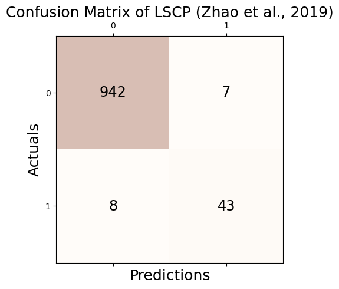
Accuracy: 0.985
Precision: 0.860
Recall: 0.843
F1 Score: 0.851# check
print('Accuracy(TP + TN / TP + TN + FP + FN): %.3f' % round((_conf.conf_matrix[0][0] + _conf.conf_matrix[1][1])/1000,3))
print('Precision(TP / TP + FP): %.3f' % round(_conf.conf_matrix[1][1]/(_conf.conf_matrix[0][1] + _conf.conf_matrix[1][1]),3))
print('Recall(TP / TP + FN): %.3f' % round(_conf.conf_matrix[1][1]/(_conf.conf_matrix[1][0] + _conf.conf_matrix[1][1]),3))
print('F1 Score(2*precision*recall/precision+recall): %.3f' % round((2*(_conf.conf_matrix[1][1]/(_conf.conf_matrix[0][1] + _conf.conf_matrix[1][1]))*(_conf.conf_matrix[1][1]/(_conf.conf_matrix[1][0] + _conf.conf_matrix[1][1]))) / (_conf.conf_matrix[1][1]/(_conf.conf_matrix[0][1] + _conf.conf_matrix[1][1]) + _conf.conf_matrix[1][1]/(_conf.conf_matrix[1][0] + _conf.conf_matrix[1][1])),3))Accuracy(TP + TN / TP + TN + FP + FN): 0.985
Precision(TP / TP + FP): 0.860
Recall(TP / TP + FN): 0.843
F1 Score(2*precision*recall/precision+recall): 0.851fpr, tpr, thresh = roc_curve(outlier_true_linear,clf.decision_function(_df))auc(fpr, tpr)0.9985330275418913tab_linear = pd.concat([tab_linear,
pd.DataFrame({"Accuracy":[_conf.acc],"Precision":[_conf.pre],"Recall":[_conf.rec],"F1":[_conf.f1],"AUC":[auc(fpr, tpr)]},index = [_conf.name])]);tab_linear| Accuracy | Precision | Recall | F1 | AUC | |
|---|---|---|---|---|---|
| GODE | 0.999 | 1.000000 | 0.980392 | 0.990099 | 0.999979 |
| LOF (Breunig et al., 2000) | 0.991 | 0.920000 | 0.901961 | 0.910891 | 0.997541 |
| kNN (Ramaswamy et al., 2000) | 0.991 | 0.920000 | 0.901961 | 0.910891 | 0.997366 |
| CBLOF (He et al., 2003) | 0.969 | 0.700000 | 0.686275 | 0.693069 | 0.959214 |
| OCSVM (Sch ̈olkopf et al., 2001) | 0.923 | 0.370000 | 0.725490 | 0.490066 | 0.864150 |
| MCD (Hardin and Rocke, 2004) | 0.999 | 1.000000 | 0.980392 | 0.990099 | 0.999959 |
| Feature Bagging (Lazarevic and Kumar, 2005) | 0.993 | 0.940000 | 0.921569 | 0.930693 | 0.997397 |
| ABOD (Kriegel et al., 2008) | 0.973 | 0.740000 | 0.725490 | 0.732673 | 0.990206 |
| Isolation Forest (Liu et al., 2008) | 0.987 | 0.880000 | 0.862745 | 0.871287 | 0.995826 |
| HBOS (Goldstein and Dengel, 2012) | 0.972 | 0.925926 | 0.490196 | 0.641026 | 0.863644 |
| SOS (Janssens et al., 2012) | 0.907 | 0.080000 | 0.078431 | 0.079208 | 0.541705 |
| SO-GAAL (Liu et al., 2019) | 0.946 | 0.468085 | 0.431373 | 0.448980 | 0.575208 |
| MO-GAAL (Liu et al., 2019) | 0.947 | 0.478261 | 0.431373 | 0.453608 | 0.575652 |
| LSCP (Zhao et al., 2019) | 0.985 | 0.860000 | 0.843137 | 0.851485 | 0.998533 |
tab_linear
round(tab_linear,3)| Accuracy | Precision | Recall | F1 | AUC | |
|---|---|---|---|---|---|
| GODE | 0.999 | 1.000 | 0.980 | 0.990 | 1.000 |
| LOF (Breunig et al., 2000) | 0.991 | 0.920 | 0.902 | 0.911 | 0.998 |
| kNN (Ramaswamy et al., 2000) | 0.991 | 0.920 | 0.902 | 0.911 | 0.997 |
| CBLOF (He et al., 2003) | 0.969 | 0.700 | 0.686 | 0.693 | 0.959 |
| OCSVM (Sch ̈olkopf et al., 2001) | 0.923 | 0.370 | 0.725 | 0.490 | 0.864 |
| MCD (Hardin and Rocke, 2004) | 0.999 | 1.000 | 0.980 | 0.990 | 1.000 |
| Feature Bagging (Lazarevic and Kumar, 2005) | 0.993 | 0.940 | 0.922 | 0.931 | 0.997 |
| ABOD (Kriegel et al., 2008) | 0.973 | 0.740 | 0.725 | 0.733 | 0.990 |
| Isolation Forest (Liu et al., 2008) | 0.987 | 0.880 | 0.863 | 0.871 | 0.996 |
| HBOS (Goldstein and Dengel, 2012) | 0.972 | 0.926 | 0.490 | 0.641 | 0.864 |
| SOS (Janssens et al., 2012) | 0.907 | 0.080 | 0.078 | 0.079 | 0.542 |
| SO-GAAL (Liu et al., 2019) | 0.946 | 0.468 | 0.431 | 0.449 | 0.575 |
| MO-GAAL (Liu et al., 2019) | 0.947 | 0.478 | 0.431 | 0.454 | 0.576 |
| LSCP (Zhao et al., 2019) | 0.985 | 0.860 | 0.843 | 0.851 | 0.999 |
Orbit
# np.random.seed(1212)
# epsilon = np.around(np.random.normal(size=1000),15)
# signal = np.random.choice(np.concatenate((np.random.uniform(-7, -5, 25).round(15), np.random.uniform(5, 7, 25).round(15), np.repeat(0, 950))), 1000)
# eta = signal + epsilon
# np.random.seed(777)
# pi=np.pi
# n=1000
# ang=np.linspace(-pi,pi-2*pi/n,n)
# r=5+np.cos(np.linspace(0,12*pi,n))
# vx=r*np.cos(ang)
# vy=r*np.sin(ang)
# f1=10*np.sin(np.linspace(0,6*pi,n))
# f = f1 + eta
# _df = pd.DataFrame({'x' : vx, 'y' : vy, 'f' : f})
# outlier_true_orbit = signal.copy()
# outlier_true_orbit = list(map(lambda x: 1 if x!=0 else 0,outlier_true_orbit))tab_orbit = pd.DataFrame(columns=["Accuracy","Precision","Recall","F1","AUC"])np.random.seed(777)
epsilon = np.around(np.random.normal(size=1000),15)
signal = np.random.choice(np.concatenate((np.random.uniform(-4, -1, 25).round(15), np.random.uniform(1, 4, 25).round(15), np.repeat(0, 950))), 1000)
eta = signal + epsilon
pi=np.pi
n=1000
ang=np.linspace(-pi,pi-2*pi/n,n)
r=5+np.cos(np.linspace(0,12*pi,n))
vx=r*np.cos(ang)
vy=r*np.sin(ang)
f1=10*np.sin(np.linspace(0,6*pi,n))
f = f1 + eta
_df = pd.DataFrame({'x' : vx, 'y' : vy, 'f' : f})
outlier_true_orbit = signal.copy()
outlier_true_orbit = list(map(lambda x: 1 if x!=0 else 0,outlier_true_orbit))GODE_Orbit
_Orbit = Orbit(_df)
_Orbit.get_distance()100%|██████████| 1000/1000 [00:01<00:00, 595.48it/s]_Orbit.get_weightmatrix(theta=(_Orbit.D[_Orbit.D>0].mean()),kappa=2500)
_Orbit.fit(sd=15,ref=20)outlier_GODE_one_old = (_Orbit.df['Residual']**2).tolist()
sorted_data = sorted(outlier_GODE_one_old,reverse=True)
index = int(len(sorted_data) * 0.05)
five_percent = sorted_data[index]
outlier_GODE_one = list(map(lambda x: 1 if x > five_percent else 0,outlier_GODE_one_old))_conf = Conf_matrx(outlier_true_orbit,outlier_GODE_one)
_conf.conf("GODE")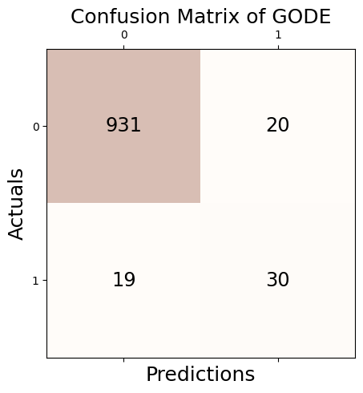
Accuracy: 0.961
Precision: 0.600
Recall: 0.612
F1 Score: 0.606# check
print('Accuracy(TP + TN / TP + TN + FP + FN): %.3f' % round((_conf.conf_matrix[0][0] + _conf.conf_matrix[1][1])/1000,3))
print('Precision(TP / TP + FP): %.3f' % round(_conf.conf_matrix[1][1]/(_conf.conf_matrix[0][1] + _conf.conf_matrix[1][1]),3))
print('Recall(TP / TP + FN): %.3f' % round(_conf.conf_matrix[1][1]/(_conf.conf_matrix[1][0] + _conf.conf_matrix[1][1]),3))
print('F1 Score(2*precision*recall/precision+recall): %.3f' % round((2*(_conf.conf_matrix[1][1]/(_conf.conf_matrix[0][1] + _conf.conf_matrix[1][1]))*(_conf.conf_matrix[1][1]/(_conf.conf_matrix[1][0] + _conf.conf_matrix[1][1]))) / (_conf.conf_matrix[1][1]/(_conf.conf_matrix[0][1] + _conf.conf_matrix[1][1]) + _conf.conf_matrix[1][1]/(_conf.conf_matrix[1][0] + _conf.conf_matrix[1][1])),3))Accuracy(TP + TN / TP + TN + FP + FN): 0.961
Precision(TP / TP + FP): 0.600
Recall(TP / TP + FN): 0.612
F1 Score(2*precision*recall/precision+recall): 0.606fpr, tpr, thresh = roc_curve(outlier_true_orbit,outlier_GODE_one_old)auc(fpr, tpr)0.893023455438958tab_orbit = pd.concat([tab_orbit,
pd.DataFrame({"Accuracy":[_conf.acc],"Precision":[_conf.pre],"Recall":[_conf.rec],"F1":[_conf.f1],"AUC":[auc(fpr, tpr)]},index = [_conf.name])]);tab_orbit| Accuracy | Precision | Recall | F1 | AUC | |
|---|---|---|---|---|---|
| GODE | 0.961 | 0.6 | 0.612245 | 0.606061 | 0.893023 |
LOF_Orbit
np.random.seed(77)
clf = LOF(contamination=0.05)
clf.fit(_df[['x', 'y','f']])LOF(algorithm='auto', contamination=0.05, leaf_size=30, metric='minkowski',
metric_params=None, n_jobs=1, n_neighbors=20, novelty=True, p=2)outlier_LOF_one = list(clf.labels_)_conf = Conf_matrx(outlier_true_orbit,clf.fit_predict(_df))
_conf.conf("LOF (Breunig et al., 2000)")/home/csy/anaconda3/envs/pygsp/lib/python3.10/site-packages/sklearn/utils/deprecation.py:86: FutureWarning: Function fit_predict is deprecated
warnings.warn(msg, category=FutureWarning)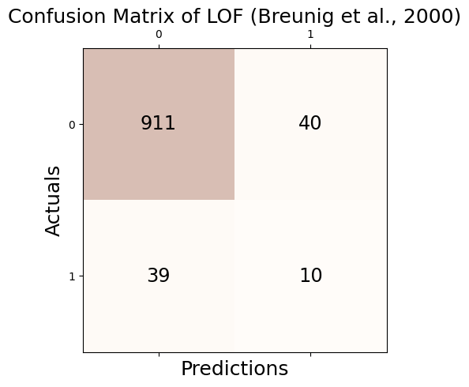
Accuracy: 0.921
Precision: 0.200
Recall: 0.204
F1 Score: 0.202# check
print('Accuracy(TP + TN / TP + TN + FP + FN): %.3f' % round((_conf.conf_matrix[0][0] + _conf.conf_matrix[1][1])/1000,3))
print('Precision(TP / TP + FP): %.3f' % round(_conf.conf_matrix[1][1]/(_conf.conf_matrix[0][1] + _conf.conf_matrix[1][1]),3))
print('Recall(TP / TP + FN): %.3f' % round(_conf.conf_matrix[1][1]/(_conf.conf_matrix[1][0] + _conf.conf_matrix[1][1]),3))
print('F1 Score(2*precision*recall/precision+recall): %.3f' % round((2*(_conf.conf_matrix[1][1]/(_conf.conf_matrix[0][1] + _conf.conf_matrix[1][1]))*(_conf.conf_matrix[1][1]/(_conf.conf_matrix[1][0] + _conf.conf_matrix[1][1]))) / (_conf.conf_matrix[1][1]/(_conf.conf_matrix[0][1] + _conf.conf_matrix[1][1]) + _conf.conf_matrix[1][1]/(_conf.conf_matrix[1][0] + _conf.conf_matrix[1][1])),3))Accuracy(TP + TN / TP + TN + FP + FN): 0.921
Precision(TP / TP + FP): 0.200
Recall(TP / TP + FN): 0.204
F1 Score(2*precision*recall/precision+recall): 0.202fpr, tpr, thresh = roc_curve(outlier_true_orbit,clf.decision_function(_df))auc(fpr, tpr)0.6641236936414945tab_orbit = pd.concat([tab_orbit,
pd.DataFrame({"Accuracy":[_conf.acc],"Precision":[_conf.pre],"Recall":[_conf.rec],"F1":[_conf.f1],"AUC":[auc(fpr, tpr)]},index = [_conf.name])]);tab_orbit| Accuracy | Precision | Recall | F1 | AUC | |
|---|---|---|---|---|---|
| GODE | 0.961 | 0.6 | 0.612245 | 0.606061 | 0.893023 |
| LOF (Breunig et al., 2000) | 0.921 | 0.2 | 0.204082 | 0.202020 | 0.664124 |
KNN_Orbit
np.random.seed(77)
clf = KNN(contamination=0.05)
clf.fit(_df[['x', 'y','f']])KNN(algorithm='auto', contamination=0.05, leaf_size=30, method='largest',
metric='minkowski', metric_params=None, n_jobs=1, n_neighbors=5, p=2,
radius=1.0)outlier_KNN_one = list(clf.labels_)_conf = Conf_matrx(outlier_true_orbit,outlier_KNN_one)
_conf.conf("kNN (Ramaswamy et al., 2000)")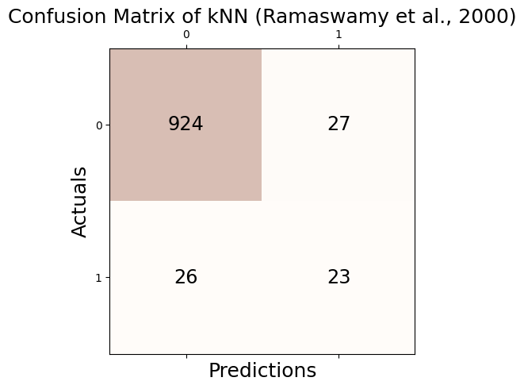
Accuracy: 0.947
Precision: 0.460
Recall: 0.469
F1 Score: 0.465# check
print('Accuracy(TP + TN / TP + TN + FP + FN): %.3f' % round((_conf.conf_matrix[0][0] + _conf.conf_matrix[1][1])/1000,3))
print('Precision(TP / TP + FP): %.3f' % round(_conf.conf_matrix[1][1]/(_conf.conf_matrix[0][1] + _conf.conf_matrix[1][1]),3))
print('Recall(TP / TP + FN): %.3f' % round(_conf.conf_matrix[1][1]/(_conf.conf_matrix[1][0] + _conf.conf_matrix[1][1]),3))
print('F1 Score(2*precision*recall/precision+recall): %.3f' % round((2*(_conf.conf_matrix[1][1]/(_conf.conf_matrix[0][1] + _conf.conf_matrix[1][1]))*(_conf.conf_matrix[1][1]/(_conf.conf_matrix[1][0] + _conf.conf_matrix[1][1]))) / (_conf.conf_matrix[1][1]/(_conf.conf_matrix[0][1] + _conf.conf_matrix[1][1]) + _conf.conf_matrix[1][1]/(_conf.conf_matrix[1][0] + _conf.conf_matrix[1][1])),3))Accuracy(TP + TN / TP + TN + FP + FN): 0.947
Precision(TP / TP + FP): 0.460
Recall(TP / TP + FN): 0.469
F1 Score(2*precision*recall/precision+recall): 0.465fpr, tpr, thresh = roc_curve(outlier_true_orbit,clf.decision_function(_df))auc(fpr, tpr)0.8479903002210347tab_orbit = pd.concat([tab_orbit,
pd.DataFrame({"Accuracy":[_conf.acc],"Precision":[_conf.pre],"Recall":[_conf.rec],"F1":[_conf.f1],"AUC":[auc(fpr, tpr)]},index = [_conf.name])]);tab_orbit| Accuracy | Precision | Recall | F1 | AUC | |
|---|---|---|---|---|---|
| GODE | 0.961 | 0.60 | 0.612245 | 0.606061 | 0.893023 |
| LOF (Breunig et al., 2000) | 0.921 | 0.20 | 0.204082 | 0.202020 | 0.664124 |
| kNN (Ramaswamy et al., 2000) | 0.947 | 0.46 | 0.469388 | 0.464646 | 0.847990 |
CBLOF_Orbit
clf = CBLOF(contamination=0.05,random_state=77)
clf.fit(_df[['x', 'y','f']])/home/csy/anaconda3/envs/pygsp/lib/python3.10/site-packages/sklearn/cluster/_kmeans.py:1412: FutureWarning: The default value of `n_init` will change from 10 to 'auto' in 1.4. Set the value of `n_init` explicitly to suppress the warning
super()._check_params_vs_input(X, default_n_init=10)CBLOF(alpha=0.9, beta=5, check_estimator=False, clustering_estimator=None,
contamination=0.05, n_clusters=8, n_jobs=None, random_state=77,
use_weights=False)outlier_CBLOF_one = list(clf.labels_)_conf = Conf_matrx(outlier_true_orbit,outlier_CBLOF_one)
_conf.conf("CBLOF (He et al., 2003)")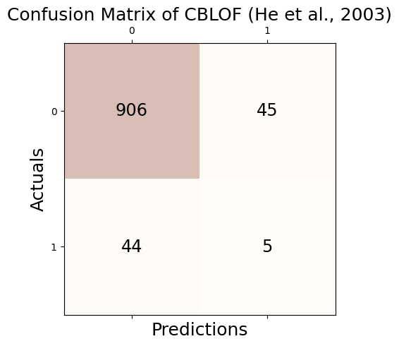
Accuracy: 0.911
Precision: 0.100
Recall: 0.102
F1 Score: 0.101# check
print('Accuracy(TP + TN / TP + TN + FP + FN): %.3f' % round((_conf.conf_matrix[0][0] + _conf.conf_matrix[1][1])/1000,3))
print('Precision(TP / TP + FP): %.3f' % round(_conf.conf_matrix[1][1]/(_conf.conf_matrix[0][1] + _conf.conf_matrix[1][1]),3))
print('Recall(TP / TP + FN): %.3f' % round(_conf.conf_matrix[1][1]/(_conf.conf_matrix[1][0] + _conf.conf_matrix[1][1]),3))
print('F1 Score(2*precision*recall/precision+recall): %.3f' % round((2*(_conf.conf_matrix[1][1]/(_conf.conf_matrix[0][1] + _conf.conf_matrix[1][1]))*(_conf.conf_matrix[1][1]/(_conf.conf_matrix[1][0] + _conf.conf_matrix[1][1]))) / (_conf.conf_matrix[1][1]/(_conf.conf_matrix[0][1] + _conf.conf_matrix[1][1]) + _conf.conf_matrix[1][1]/(_conf.conf_matrix[1][0] + _conf.conf_matrix[1][1])),3))Accuracy(TP + TN / TP + TN + FP + FN): 0.911
Precision(TP / TP + FP): 0.100
Recall(TP / TP + FN): 0.102
F1 Score(2*precision*recall/precision+recall): 0.101fpr, tpr, thresh = roc_curve(outlier_true_orbit,clf.decision_function(_df))auc(fpr, tpr)0.533402004334857tab_orbit = pd.concat([tab_orbit,
pd.DataFrame({"Accuracy":[_conf.acc],"Precision":[_conf.pre],"Recall":[_conf.rec],"F1":[_conf.f1],"AUC":[auc(fpr, tpr)]},index = [_conf.name])]);tab_orbit| Accuracy | Precision | Recall | F1 | AUC | |
|---|---|---|---|---|---|
| GODE | 0.961 | 0.60 | 0.612245 | 0.606061 | 0.893023 |
| LOF (Breunig et al., 2000) | 0.921 | 0.20 | 0.204082 | 0.202020 | 0.664124 |
| kNN (Ramaswamy et al., 2000) | 0.947 | 0.46 | 0.469388 | 0.464646 | 0.847990 |
| CBLOF (He et al., 2003) | 0.911 | 0.10 | 0.102041 | 0.101010 | 0.533402 |
OCSVM_Orbit
np.random.seed(77)
clf = OCSVM(nu=0.05)
clf.fit(_df)OCSVM(cache_size=200, coef0=0.0, contamination=0.1, degree=3, gamma='auto',
kernel='rbf', max_iter=-1, nu=0.05, shrinking=True, tol=0.001,
verbose=False)outlier_OSVM_one = list(clf.predict(_df))/home/csy/anaconda3/envs/pygsp/lib/python3.10/site-packages/sklearn/base.py:457: UserWarning: X has feature names, but OneClassSVM was fitted without feature names
warnings.warn(_conf = Conf_matrx(outlier_true_orbit,outlier_OSVM_one)
_conf.conf("OCSVM (Sch ̈olkopf et al., 2001)")Accuracy: 0.893
Precision: 0.210
Recall: 0.429
F1 Score: 0.282# check
print('Accuracy(TP + TN / TP + TN + FP + FN): %.3f' % round((_conf.conf_matrix[0][0] + _conf.conf_matrix[1][1])/1000,3))
print('Precision(TP / TP + FP): %.3f' % round(_conf.conf_matrix[1][1]/(_conf.conf_matrix[0][1] + _conf.conf_matrix[1][1]),3))
print('Recall(TP / TP + FN): %.3f' % round(_conf.conf_matrix[1][1]/(_conf.conf_matrix[1][0] + _conf.conf_matrix[1][1]),3))
print('F1 Score(2*precision*recall/precision+recall): %.3f' % round((2*(_conf.conf_matrix[1][1]/(_conf.conf_matrix[0][1] + _conf.conf_matrix[1][1]))*(_conf.conf_matrix[1][1]/(_conf.conf_matrix[1][0] + _conf.conf_matrix[1][1]))) / (_conf.conf_matrix[1][1]/(_conf.conf_matrix[0][1] + _conf.conf_matrix[1][1]) + _conf.conf_matrix[1][1]/(_conf.conf_matrix[1][0] + _conf.conf_matrix[1][1])),3))Accuracy(TP + TN / TP + TN + FP + FN): 0.893
Precision(TP / TP + FP): 0.210
Recall(TP / TP + FN): 0.429
F1 Score(2*precision*recall/precision+recall): 0.282fpr, tpr, thresh = roc_curve(outlier_true_orbit,clf.decision_function(_df))/home/csy/anaconda3/envs/pygsp/lib/python3.10/site-packages/sklearn/base.py:457: UserWarning: X has feature names, but OneClassSVM was fitted without feature names
warnings.warn(auc(fpr, tpr)0.7887508315629091tab_orbit = pd.concat([tab_orbit,
pd.DataFrame({"Accuracy":[_conf.acc],"Precision":[_conf.pre],"Recall":[_conf.rec],"F1":[_conf.f1],"AUC":[auc(fpr, tpr)]},index = [_conf.name])]);tab_orbit| Accuracy | Precision | Recall | F1 | AUC | |
|---|---|---|---|---|---|
| GODE | 0.961 | 0.60 | 0.612245 | 0.606061 | 0.893023 |
| LOF (Breunig et al., 2000) | 0.921 | 0.20 | 0.204082 | 0.202020 | 0.664124 |
| kNN (Ramaswamy et al., 2000) | 0.947 | 0.46 | 0.469388 | 0.464646 | 0.847990 |
| CBLOF (He et al., 2003) | 0.911 | 0.10 | 0.102041 | 0.101010 | 0.533402 |
| OCSVM (Sch ̈olkopf et al., 2001) | 0.893 | 0.21 | 0.428571 | 0.281879 | 0.788751 |
MCD_Orbit
clf = MCD(contamination=0.05 , random_state = 77)
clf.fit(_df[['x','y','f']])MCD(assume_centered=False, contamination=0.05, random_state=77,
store_precision=True, support_fraction=None)outlier_MCD_one = list(clf.labels_)_conf = Conf_matrx(outlier_true_orbit,outlier_MCD_one)
_conf.conf("MCD (Hardin and Rocke, 2004)")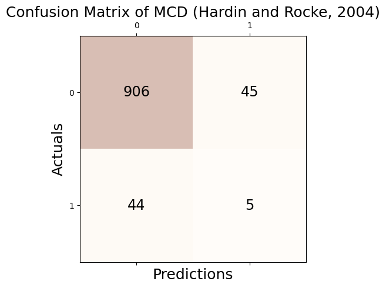
Accuracy: 0.911
Precision: 0.100
Recall: 0.102
F1 Score: 0.101# check
print('Accuracy(TP + TN / TP + TN + FP + FN): %.3f' % round((_conf.conf_matrix[0][0] + _conf.conf_matrix[1][1])/1000,3))
print('Precision(TP / TP + FP): %.3f' % round(_conf.conf_matrix[1][1]/(_conf.conf_matrix[0][1] + _conf.conf_matrix[1][1]),3))
print('Recall(TP / TP + FN): %.3f' % round(_conf.conf_matrix[1][1]/(_conf.conf_matrix[1][0] + _conf.conf_matrix[1][1]),3))
print('F1 Score(2*precision*recall/precision+recall): %.3f' % round((2*(_conf.conf_matrix[1][1]/(_conf.conf_matrix[0][1] + _conf.conf_matrix[1][1]))*(_conf.conf_matrix[1][1]/(_conf.conf_matrix[1][0] + _conf.conf_matrix[1][1]))) / (_conf.conf_matrix[1][1]/(_conf.conf_matrix[0][1] + _conf.conf_matrix[1][1]) + _conf.conf_matrix[1][1]/(_conf.conf_matrix[1][0] + _conf.conf_matrix[1][1])),3))Accuracy(TP + TN / TP + TN + FP + FN): 0.911
Precision(TP / TP + FP): 0.100
Recall(TP / TP + FN): 0.102
F1 Score(2*precision*recall/precision+recall): 0.101fpr, tpr, thresh = roc_curve(outlier_true_orbit,clf.decision_function(_df))auc(fpr, tpr)0.45400115882315073tab_orbit = pd.concat([tab_orbit,
pd.DataFrame({"Accuracy":[_conf.acc],"Precision":[_conf.pre],"Recall":[_conf.rec],"F1":[_conf.f1],"AUC":[auc(fpr, tpr)]},index = [_conf.name])]);tab_orbit| Accuracy | Precision | Recall | F1 | AUC | |
|---|---|---|---|---|---|
| GODE | 0.961 | 0.60 | 0.612245 | 0.606061 | 0.893023 |
| LOF (Breunig et al., 2000) | 0.921 | 0.20 | 0.204082 | 0.202020 | 0.664124 |
| kNN (Ramaswamy et al., 2000) | 0.947 | 0.46 | 0.469388 | 0.464646 | 0.847990 |
| CBLOF (He et al., 2003) | 0.911 | 0.10 | 0.102041 | 0.101010 | 0.533402 |
| OCSVM (Sch ̈olkopf et al., 2001) | 0.893 | 0.21 | 0.428571 | 0.281879 | 0.788751 |
| MCD (Hardin and Rocke, 2004) | 0.911 | 0.10 | 0.102041 | 0.101010 | 0.454001 |
Feature Bagging_Orbit
clf = FeatureBagging(contamination=0.05, random_state=77)
clf.fit(_df[['x', 'y','f']])FeatureBagging(base_estimator=None, bootstrap_features=False,
check_detector=True, check_estimator=False, combination='average',
contamination=0.05, estimator_params={}, max_features=1.0,
n_estimators=10, n_jobs=1, random_state=77, verbose=0)outlier_FeatureBagging_one = list(clf.labels_)_conf = Conf_matrx(outlier_true_orbit,outlier_FeatureBagging_one)
_conf.conf("Feature Bagging (Lazarevic and Kumar, 2005)")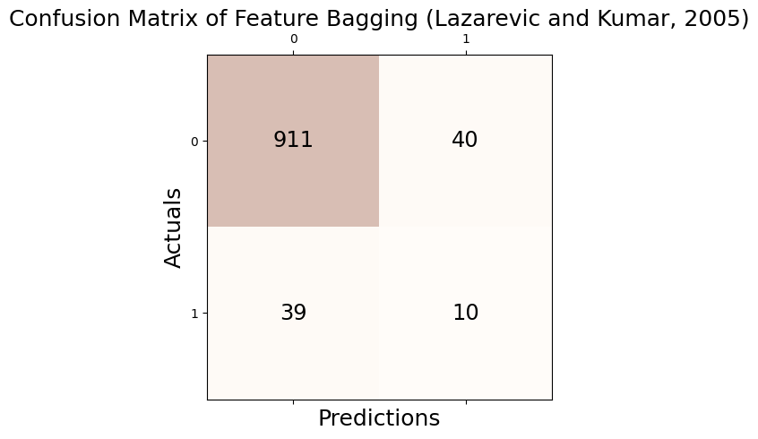
Accuracy: 0.921
Precision: 0.200
Recall: 0.204
F1 Score: 0.202# check
print('Accuracy(TP + TN / TP + TN + FP + FN): %.3f' % round((_conf.conf_matrix[0][0] + _conf.conf_matrix[1][1])/1000,3))
print('Precision(TP / TP + FP): %.3f' % round(_conf.conf_matrix[1][1]/(_conf.conf_matrix[0][1] + _conf.conf_matrix[1][1]),3))
print('Recall(TP / TP + FN): %.3f' % round(_conf.conf_matrix[1][1]/(_conf.conf_matrix[1][0] + _conf.conf_matrix[1][1]),3))
print('F1 Score(2*precision*recall/precision+recall): %.3f' % round((2*(_conf.conf_matrix[1][1]/(_conf.conf_matrix[0][1] + _conf.conf_matrix[1][1]))*(_conf.conf_matrix[1][1]/(_conf.conf_matrix[1][0] + _conf.conf_matrix[1][1]))) / (_conf.conf_matrix[1][1]/(_conf.conf_matrix[0][1] + _conf.conf_matrix[1][1]) + _conf.conf_matrix[1][1]/(_conf.conf_matrix[1][0] + _conf.conf_matrix[1][1])),3))Accuracy(TP + TN / TP + TN + FP + FN): 0.921
Precision(TP / TP + FP): 0.200
Recall(TP / TP + FN): 0.204
F1 Score(2*precision*recall/precision+recall): 0.202fpr, tpr, thresh = roc_curve(outlier_true_orbit,clf.decision_function(_df))auc(fpr, tpr)0.6779973819180669tab_orbit = pd.concat([tab_orbit,
pd.DataFrame({"Accuracy":[_conf.acc],"Precision":[_conf.pre],"Recall":[_conf.rec],"F1":[_conf.f1],"AUC":[auc(fpr, tpr)]},index = [_conf.name])]);tab_orbit| Accuracy | Precision | Recall | F1 | AUC | |
|---|---|---|---|---|---|
| GODE | 0.961 | 0.60 | 0.612245 | 0.606061 | 0.893023 |
| LOF (Breunig et al., 2000) | 0.921 | 0.20 | 0.204082 | 0.202020 | 0.664124 |
| kNN (Ramaswamy et al., 2000) | 0.947 | 0.46 | 0.469388 | 0.464646 | 0.847990 |
| CBLOF (He et al., 2003) | 0.911 | 0.10 | 0.102041 | 0.101010 | 0.533402 |
| OCSVM (Sch ̈olkopf et al., 2001) | 0.893 | 0.21 | 0.428571 | 0.281879 | 0.788751 |
| MCD (Hardin and Rocke, 2004) | 0.911 | 0.10 | 0.102041 | 0.101010 | 0.454001 |
| Feature Bagging (Lazarevic and Kumar, 2005) | 0.921 | 0.20 | 0.204082 | 0.202020 | 0.677997 |
ABOD_Orbit
np.random.seed(77)
clf = ABOD(contamination=0.05)
clf.fit(_df[['x', 'y','f']])ABOD(contamination=0.05, method='fast', n_neighbors=5)outlier_ABOD_one = list(clf.labels_)_conf = Conf_matrx(outlier_true_orbit,outlier_ABOD_one)
_conf.conf("ABOD (Kriegel et al., 2008)")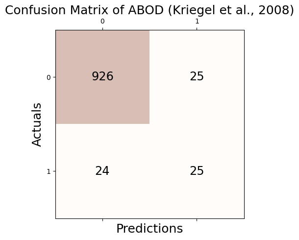
Accuracy: 0.951
Precision: 0.500
Recall: 0.510
F1 Score: 0.505# check
print('Accuracy(TP + TN / TP + TN + FP + FN): %.3f' % round((_conf.conf_matrix[0][0] + _conf.conf_matrix[1][1])/1000,3))
print('Precision(TP / TP + FP): %.3f' % round(_conf.conf_matrix[1][1]/(_conf.conf_matrix[0][1] + _conf.conf_matrix[1][1]),3))
print('Recall(TP / TP + FN): %.3f' % round(_conf.conf_matrix[1][1]/(_conf.conf_matrix[1][0] + _conf.conf_matrix[1][1]),3))
print('F1 Score(2*precision*recall/precision+recall): %.3f' % round((2*(_conf.conf_matrix[1][1]/(_conf.conf_matrix[0][1] + _conf.conf_matrix[1][1]))*(_conf.conf_matrix[1][1]/(_conf.conf_matrix[1][0] + _conf.conf_matrix[1][1]))) / (_conf.conf_matrix[1][1]/(_conf.conf_matrix[0][1] + _conf.conf_matrix[1][1]) + _conf.conf_matrix[1][1]/(_conf.conf_matrix[1][0] + _conf.conf_matrix[1][1])),3))Accuracy(TP + TN / TP + TN + FP + FN): 0.951
Precision(TP / TP + FP): 0.500
Recall(TP / TP + FN): 0.510
F1 Score(2*precision*recall/precision+recall): 0.505fpr, tpr, thresh = roc_curve(outlier_true_orbit,clf.decision_function(_df))auc(fpr, tpr)0.8639241185433164tab_orbit = pd.concat([tab_orbit,
pd.DataFrame({"Accuracy":[_conf.acc],"Precision":[_conf.pre],"Recall":[_conf.rec],"F1":[_conf.f1],"AUC":[auc(fpr, tpr)]},index = [_conf.name])]);tab_orbit| Accuracy | Precision | Recall | F1 | AUC | |
|---|---|---|---|---|---|
| GODE | 0.961 | 0.60 | 0.612245 | 0.606061 | 0.893023 |
| LOF (Breunig et al., 2000) | 0.921 | 0.20 | 0.204082 | 0.202020 | 0.664124 |
| kNN (Ramaswamy et al., 2000) | 0.947 | 0.46 | 0.469388 | 0.464646 | 0.847990 |
| CBLOF (He et al., 2003) | 0.911 | 0.10 | 0.102041 | 0.101010 | 0.533402 |
| OCSVM (Sch ̈olkopf et al., 2001) | 0.893 | 0.21 | 0.428571 | 0.281879 | 0.788751 |
| MCD (Hardin and Rocke, 2004) | 0.911 | 0.10 | 0.102041 | 0.101010 | 0.454001 |
| Feature Bagging (Lazarevic and Kumar, 2005) | 0.921 | 0.20 | 0.204082 | 0.202020 | 0.677997 |
| ABOD (Kriegel et al., 2008) | 0.951 | 0.50 | 0.510204 | 0.505051 | 0.863924 |
IForest_Orbit
clf = IForest(contamination=0.05,random_state=77)
clf.fit(_df[['x', 'y','f']])IForest(behaviour='old', bootstrap=False, contamination=0.05,
max_features=1.0, max_samples='auto', n_estimators=100, n_jobs=1,
random_state=77, verbose=0)outlier_IForest_one = list(clf.labels_)_conf = Conf_matrx(outlier_true_orbit,outlier_IForest_one)
_conf.conf("Isolation Forest (Liu et al., 2008)")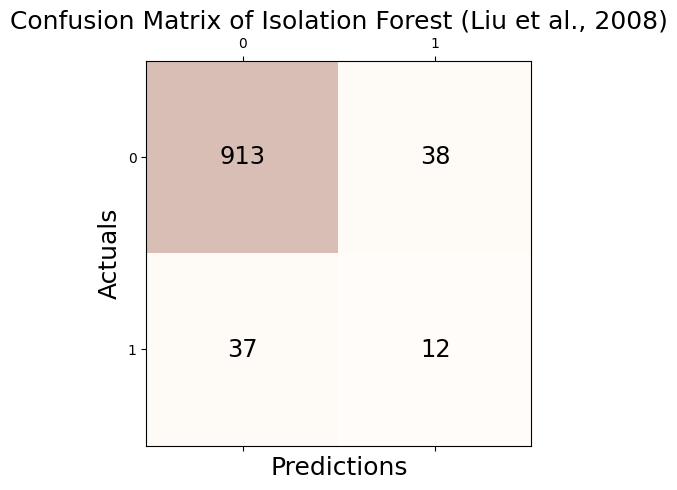
Accuracy: 0.925
Precision: 0.240
Recall: 0.245
F1 Score: 0.242# check
print('Accuracy(TP + TN / TP + TN + FP + FN): %.3f' % round((_conf.conf_matrix[0][0] + _conf.conf_matrix[1][1])/1000,3))
print('Precision(TP / TP + FP): %.3f' % round(_conf.conf_matrix[1][1]/(_conf.conf_matrix[0][1] + _conf.conf_matrix[1][1]),3))
print('Recall(TP / TP + FN): %.3f' % round(_conf.conf_matrix[1][1]/(_conf.conf_matrix[1][0] + _conf.conf_matrix[1][1]),3))
print('F1 Score(2*precision*recall/precision+recall): %.3f' % round((2*(_conf.conf_matrix[1][1]/(_conf.conf_matrix[0][1] + _conf.conf_matrix[1][1]))*(_conf.conf_matrix[1][1]/(_conf.conf_matrix[1][0] + _conf.conf_matrix[1][1]))) / (_conf.conf_matrix[1][1]/(_conf.conf_matrix[0][1] + _conf.conf_matrix[1][1]) + _conf.conf_matrix[1][1]/(_conf.conf_matrix[1][0] + _conf.conf_matrix[1][1])),3))Accuracy(TP + TN / TP + TN + FP + FN): 0.925
Precision(TP / TP + FP): 0.240
Recall(TP / TP + FN): 0.245
F1 Score(2*precision*recall/precision+recall): 0.242fpr, tpr, thresh = roc_curve(outlier_true_orbit,clf.decision_function(_df))/home/csy/anaconda3/envs/pygsp/lib/python3.10/site-packages/sklearn/base.py:457: UserWarning: X has feature names, but IsolationForest was fitted without feature names
warnings.warn(auc(fpr, tpr)0.6180175540247645tab_orbit = pd.concat([tab_orbit,
pd.DataFrame({"Accuracy":[_conf.acc],"Precision":[_conf.pre],"Recall":[_conf.rec],"F1":[_conf.f1],"AUC":[auc(fpr, tpr)]},index = [_conf.name])]);tab_orbit| Accuracy | Precision | Recall | F1 | AUC | |
|---|---|---|---|---|---|
| GODE | 0.961 | 0.60 | 0.612245 | 0.606061 | 0.893023 |
| LOF (Breunig et al., 2000) | 0.921 | 0.20 | 0.204082 | 0.202020 | 0.664124 |
| kNN (Ramaswamy et al., 2000) | 0.947 | 0.46 | 0.469388 | 0.464646 | 0.847990 |
| CBLOF (He et al., 2003) | 0.911 | 0.10 | 0.102041 | 0.101010 | 0.533402 |
| OCSVM (Sch ̈olkopf et al., 2001) | 0.893 | 0.21 | 0.428571 | 0.281879 | 0.788751 |
| MCD (Hardin and Rocke, 2004) | 0.911 | 0.10 | 0.102041 | 0.101010 | 0.454001 |
| Feature Bagging (Lazarevic and Kumar, 2005) | 0.921 | 0.20 | 0.204082 | 0.202020 | 0.677997 |
| ABOD (Kriegel et al., 2008) | 0.951 | 0.50 | 0.510204 | 0.505051 | 0.863924 |
| Isolation Forest (Liu et al., 2008) | 0.925 | 0.24 | 0.244898 | 0.242424 | 0.618018 |
HBOS_Orbit
np.random.seed(77)
clf = HBOS(contamination=0.05)
clf.fit(_df[['x', 'y','f']])HBOS(alpha=0.1, contamination=0.05, n_bins=10, tol=0.5)outlier_HBOS_one = list(clf.labels_)_conf = Conf_matrx(outlier_true_orbit,outlier_HBOS_one)
_conf.conf("HBOS (Goldstein and Dengel, 2012)")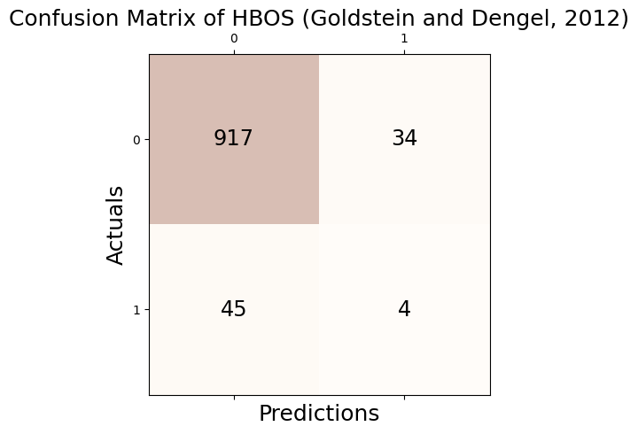
Accuracy: 0.921
Precision: 0.105
Recall: 0.082
F1 Score: 0.092# check
print('Accuracy(TP + TN / TP + TN + FP + FN): %.3f' % round((_conf.conf_matrix[0][0] + _conf.conf_matrix[1][1])/1000,3))
print('Precision(TP / TP + FP): %.3f' % round(_conf.conf_matrix[1][1]/(_conf.conf_matrix[0][1] + _conf.conf_matrix[1][1]),3))
print('Recall(TP / TP + FN): %.3f' % round(_conf.conf_matrix[1][1]/(_conf.conf_matrix[1][0] + _conf.conf_matrix[1][1]),3))
print('F1 Score(2*precision*recall/precision+recall): %.3f' % round((2*(_conf.conf_matrix[1][1]/(_conf.conf_matrix[0][1] + _conf.conf_matrix[1][1]))*(_conf.conf_matrix[1][1]/(_conf.conf_matrix[1][0] + _conf.conf_matrix[1][1]))) / (_conf.conf_matrix[1][1]/(_conf.conf_matrix[0][1] + _conf.conf_matrix[1][1]) + _conf.conf_matrix[1][1]/(_conf.conf_matrix[1][0] + _conf.conf_matrix[1][1])),3))Accuracy(TP + TN / TP + TN + FP + FN): 0.921
Precision(TP / TP + FP): 0.105
Recall(TP / TP + FN): 0.082
F1 Score(2*precision*recall/precision+recall): 0.092fpr, tpr, thresh = roc_curve(outlier_true_orbit,clf.decision_function(_df))auc(fpr, tpr)0.5297431275349256tab_orbit = pd.concat([tab_orbit,
pd.DataFrame({"Accuracy":[_conf.acc],"Precision":[_conf.pre],"Recall":[_conf.rec],"F1":[_conf.f1],"AUC":[auc(fpr, tpr)]},index = [_conf.name])]);tab_orbit| Accuracy | Precision | Recall | F1 | AUC | |
|---|---|---|---|---|---|
| GODE | 0.961 | 0.600000 | 0.612245 | 0.606061 | 0.893023 |
| LOF (Breunig et al., 2000) | 0.921 | 0.200000 | 0.204082 | 0.202020 | 0.664124 |
| kNN (Ramaswamy et al., 2000) | 0.947 | 0.460000 | 0.469388 | 0.464646 | 0.847990 |
| CBLOF (He et al., 2003) | 0.911 | 0.100000 | 0.102041 | 0.101010 | 0.533402 |
| OCSVM (Sch ̈olkopf et al., 2001) | 0.893 | 0.210000 | 0.428571 | 0.281879 | 0.788751 |
| MCD (Hardin and Rocke, 2004) | 0.911 | 0.100000 | 0.102041 | 0.101010 | 0.454001 |
| Feature Bagging (Lazarevic and Kumar, 2005) | 0.921 | 0.200000 | 0.204082 | 0.202020 | 0.677997 |
| ABOD (Kriegel et al., 2008) | 0.951 | 0.500000 | 0.510204 | 0.505051 | 0.863924 |
| Isolation Forest (Liu et al., 2008) | 0.925 | 0.240000 | 0.244898 | 0.242424 | 0.618018 |
| HBOS (Goldstein and Dengel, 2012) | 0.921 | 0.105263 | 0.081633 | 0.091954 | 0.529743 |
SOS_Orbit
np.random.seed(77)
clf = SOS(contamination=0.05)
clf.fit(_df[['x', 'y','f']])SOS(contamination=0.05, eps=1e-05, metric='euclidean', perplexity=4.5)outlier_SOS_one = list(clf.labels_)_conf = Conf_matrx(outlier_true_orbit,outlier_SOS_one)
_conf.conf("SOS (Janssens et al., 2012)")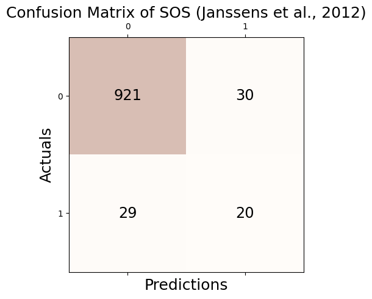
Accuracy: 0.941
Precision: 0.400
Recall: 0.408
F1 Score: 0.404# check
print('Accuracy(TP + TN / TP + TN + FP + FN): %.3f' % round((_conf.conf_matrix[0][0] + _conf.conf_matrix[1][1])/1000,3))
print('Precision(TP / TP + FP): %.3f' % round(_conf.conf_matrix[1][1]/(_conf.conf_matrix[0][1] + _conf.conf_matrix[1][1]),3))
print('Recall(TP / TP + FN): %.3f' % round(_conf.conf_matrix[1][1]/(_conf.conf_matrix[1][0] + _conf.conf_matrix[1][1]),3))
print('F1 Score(2*precision*recall/precision+recall): %.3f' % round((2*(_conf.conf_matrix[1][1]/(_conf.conf_matrix[0][1] + _conf.conf_matrix[1][1]))*(_conf.conf_matrix[1][1]/(_conf.conf_matrix[1][0] + _conf.conf_matrix[1][1]))) / (_conf.conf_matrix[1][1]/(_conf.conf_matrix[0][1] + _conf.conf_matrix[1][1]) + _conf.conf_matrix[1][1]/(_conf.conf_matrix[1][0] + _conf.conf_matrix[1][1])),3))Accuracy(TP + TN / TP + TN + FP + FN): 0.941
Precision(TP / TP + FP): 0.400
Recall(TP / TP + FN): 0.408
F1 Score(2*precision*recall/precision+recall): 0.404fpr, tpr, thresh = roc_curve(outlier_true_orbit,clf.decision_function(_df))auc(fpr, tpr)0.8442241249812228tab_orbit = pd.concat([tab_orbit,
pd.DataFrame({"Accuracy":[_conf.acc],"Precision":[_conf.pre],"Recall":[_conf.rec],"F1":[_conf.f1],"AUC":[auc(fpr, tpr)]},index = [_conf.name])]);tab_orbit| Accuracy | Precision | Recall | F1 | AUC | |
|---|---|---|---|---|---|
| GODE | 0.961 | 0.600000 | 0.612245 | 0.606061 | 0.893023 |
| LOF (Breunig et al., 2000) | 0.921 | 0.200000 | 0.204082 | 0.202020 | 0.664124 |
| kNN (Ramaswamy et al., 2000) | 0.947 | 0.460000 | 0.469388 | 0.464646 | 0.847990 |
| CBLOF (He et al., 2003) | 0.911 | 0.100000 | 0.102041 | 0.101010 | 0.533402 |
| OCSVM (Sch ̈olkopf et al., 2001) | 0.893 | 0.210000 | 0.428571 | 0.281879 | 0.788751 |
| MCD (Hardin and Rocke, 2004) | 0.911 | 0.100000 | 0.102041 | 0.101010 | 0.454001 |
| Feature Bagging (Lazarevic and Kumar, 2005) | 0.921 | 0.200000 | 0.204082 | 0.202020 | 0.677997 |
| ABOD (Kriegel et al., 2008) | 0.951 | 0.500000 | 0.510204 | 0.505051 | 0.863924 |
| Isolation Forest (Liu et al., 2008) | 0.925 | 0.240000 | 0.244898 | 0.242424 | 0.618018 |
| HBOS (Goldstein and Dengel, 2012) | 0.921 | 0.105263 | 0.081633 | 0.091954 | 0.529743 |
| SOS (Janssens et al., 2012) | 0.941 | 0.400000 | 0.408163 | 0.404040 | 0.844224 |
SO_GAAL_Orbit
np.random.seed(77)
clf = SO_GAAL(contamination=0.05)
clf.fit(_df[['x', 'y','f']])/home/csy/anaconda3/envs/pygsp/lib/python3.10/site-packages/keras/src/optimizers/legacy/gradient_descent.py:114: UserWarning: The `lr` argument is deprecated, use `learning_rate` instead.
super().__init__(name, **kwargs)Epoch 1 of 60
Testing for epoch 1 index 1:
Testing for epoch 1 index 2:
Epoch 2 of 60
Testing for epoch 2 index 1:
Testing for epoch 2 index 2:
Epoch 3 of 60
Testing for epoch 3 index 1:
Testing for epoch 3 index 2:
Epoch 4 of 60
Testing for epoch 4 index 1:
Testing for epoch 4 index 2:
Epoch 5 of 60
Testing for epoch 5 index 1:
Testing for epoch 5 index 2:
Epoch 6 of 60
Testing for epoch 6 index 1:
Testing for epoch 6 index 2:
Epoch 7 of 60
Testing for epoch 7 index 1:
Testing for epoch 7 index 2:
Epoch 8 of 60
Testing for epoch 8 index 1:
Testing for epoch 8 index 2:
Epoch 9 of 60
Testing for epoch 9 index 1:
Testing for epoch 9 index 2:
Epoch 10 of 60
Testing for epoch 10 index 1:
Testing for epoch 10 index 2:
Epoch 11 of 60
Testing for epoch 11 index 1:
Testing for epoch 11 index 2:
Epoch 12 of 60
Testing for epoch 12 index 1:
Testing for epoch 12 index 2:
Epoch 13 of 60
Testing for epoch 13 index 1:
Testing for epoch 13 index 2:
Epoch 14 of 60
Testing for epoch 14 index 1:
Testing for epoch 14 index 2:
Epoch 15 of 60
Testing for epoch 15 index 1:
Testing for epoch 15 index 2:
Epoch 16 of 60
Testing for epoch 16 index 1:
Testing for epoch 16 index 2:
Epoch 17 of 60
Testing for epoch 17 index 1:
Testing for epoch 17 index 2:
Epoch 18 of 60
Testing for epoch 18 index 1:
Testing for epoch 18 index 2:
Epoch 19 of 60
Testing for epoch 19 index 1:
Testing for epoch 19 index 2:
Epoch 20 of 60
Testing for epoch 20 index 1:
Testing for epoch 20 index 2:
Epoch 21 of 60
Testing for epoch 21 index 1:
Testing for epoch 21 index 2:
Epoch 22 of 60
Testing for epoch 22 index 1:
16/16 [==============================] - 0s 2ms/step - loss: 1.2682
Testing for epoch 22 index 2:
16/16 [==============================] - 0s 2ms/step - loss: 1.2809
Epoch 23 of 60
Testing for epoch 23 index 1:
16/16 [==============================] - 0s 2ms/step - loss: 1.2533
Testing for epoch 23 index 2:
16/16 [==============================] - 0s 2ms/step - loss: 1.2402
Epoch 24 of 60
Testing for epoch 24 index 1:
16/16 [==============================] - 0s 2ms/step - loss: 1.2311
Testing for epoch 24 index 2:
16/16 [==============================] - 0s 2ms/step - loss: 1.2195
Epoch 25 of 60
Testing for epoch 25 index 1:
16/16 [==============================] - 0s 2ms/step - loss: 1.2273
Testing for epoch 25 index 2:
16/16 [==============================] - 0s 2ms/step - loss: 1.2363
Epoch 26 of 60
Testing for epoch 26 index 1:
16/16 [==============================] - 0s 825us/step - loss: 1.2320
Testing for epoch 26 index 2:
16/16 [==============================] - 0s 2ms/step - loss: 1.2487
Epoch 27 of 60
Testing for epoch 27 index 1:
16/16 [==============================] - 0s 2ms/step - loss: 1.2435
Testing for epoch 27 index 2:
16/16 [==============================] - 0s 826us/step - loss: 1.2753
Epoch 28 of 60
Testing for epoch 28 index 1:
16/16 [==============================] - 0s 781us/step - loss: 1.2691
Testing for epoch 28 index 2:
16/16 [==============================] - 0s 1ms/step - loss: 1.2997
Epoch 29 of 60
Testing for epoch 29 index 1:
16/16 [==============================] - 0s 2ms/step - loss: 1.3105
Testing for epoch 29 index 2:
16/16 [==============================] - 0s 2ms/step - loss: 1.3315
Epoch 30 of 60
Testing for epoch 30 index 1:
16/16 [==============================] - 0s 1ms/step - loss: 1.3413
Testing for epoch 30 index 2:
16/16 [==============================] - 0s 1ms/step - loss: 1.3642
Epoch 31 of 60
Testing for epoch 31 index 1:
16/16 [==============================] - 0s 1ms/step - loss: 1.3953
Testing for epoch 31 index 2:
16/16 [==============================] - 0s 790us/step - loss: 1.4018
Epoch 32 of 60
Testing for epoch 32 index 1:
16/16 [==============================] - 0s 802us/step - loss: 1.4309
Testing for epoch 32 index 2:
16/16 [==============================] - 0s 1ms/step - loss: 1.4460
Epoch 33 of 60
Testing for epoch 33 index 1:
16/16 [==============================] - 0s 2ms/step - loss: 1.4762
Testing for epoch 33 index 2:
16/16 [==============================] - 0s 2ms/step - loss: 1.5035
Epoch 34 of 60
Testing for epoch 34 index 1:
16/16 [==============================] - 0s 834us/step - loss: 1.5015
Testing for epoch 34 index 2:
16/16 [==============================] - 0s 2ms/step - loss: 1.5210
Epoch 35 of 60
Testing for epoch 35 index 1:
16/16 [==============================] - 0s 937us/step - loss: 1.5350
Testing for epoch 35 index 2:
16/16 [==============================] - 0s 789us/step - loss: 1.5497
Epoch 36 of 60
Testing for epoch 36 index 1:
16/16 [==============================] - 0s 790us/step - loss: 1.5742
Testing for epoch 36 index 2:
16/16 [==============================] - 0s 842us/step - loss: 1.5749
Epoch 37 of 60
Testing for epoch 37 index 1:
16/16 [==============================] - 0s 2ms/step - loss: 1.5844
Testing for epoch 37 index 2:
16/16 [==============================] - 0s 1ms/step - loss: 1.5945
Epoch 38 of 60
Testing for epoch 38 index 1:
16/16 [==============================] - 0s 926us/step - loss: 1.6030
Testing for epoch 38 index 2:
16/16 [==============================] - 0s 866us/step - loss: 1.6226
Epoch 39 of 60
Testing for epoch 39 index 1:
16/16 [==============================] - 0s 1ms/step - loss: 1.6200
Testing for epoch 39 index 2:
16/16 [==============================] - 0s 801us/step - loss: 1.6314
Epoch 40 of 60
Testing for epoch 40 index 1:
16/16 [==============================] - 0s 2ms/step - loss: 1.6379
Testing for epoch 40 index 2:
16/16 [==============================] - 0s 2ms/step - loss: 1.6526
Epoch 41 of 60
Testing for epoch 41 index 1:
16/16 [==============================] - 0s 1ms/step - loss: 1.6465
Testing for epoch 41 index 2:
16/16 [==============================] - 0s 811us/step - loss: 1.6509
Epoch 42 of 60
Testing for epoch 42 index 1:
16/16 [==============================] - 0s 800us/step - loss: 1.6508
Testing for epoch 42 index 2:
16/16 [==============================] - 0s 799us/step - loss: 1.6638
Epoch 43 of 60
Testing for epoch 43 index 1:
16/16 [==============================] - 0s 953us/step - loss: 1.6715
Testing for epoch 43 index 2:
16/16 [==============================] - 0s 780us/step - loss: 1.6817
Epoch 44 of 60
Testing for epoch 44 index 1:
16/16 [==============================] - 0s 799us/step - loss: 1.6805
Testing for epoch 44 index 2:
16/16 [==============================] - 0s 783us/step - loss: 1.6850
Epoch 45 of 60
Testing for epoch 45 index 1:
16/16 [==============================] - 0s 1ms/step - loss: 1.7113
Testing for epoch 45 index 2:
16/16 [==============================] - 0s 2ms/step - loss: 1.7162
Epoch 46 of 60
Testing for epoch 46 index 1:
16/16 [==============================] - 0s 2ms/step - loss: 1.7183
Testing for epoch 46 index 2:
16/16 [==============================] - 0s 1ms/step - loss: 1.7208
Epoch 47 of 60
Testing for epoch 47 index 1:
16/16 [==============================] - 0s 2ms/step - loss: 1.7249
Testing for epoch 47 index 2:
16/16 [==============================] - 0s 1ms/step - loss: 1.7667
Epoch 48 of 60
Testing for epoch 48 index 1:
16/16 [==============================] - 0s 1ms/step - loss: 1.7558
Testing for epoch 48 index 2:
16/16 [==============================] - 0s 2ms/step - loss: 1.7659
Epoch 49 of 60
Testing for epoch 49 index 1:
16/16 [==============================] - 0s 863us/step - loss: 1.7905
Testing for epoch 49 index 2:
16/16 [==============================] - 0s 2ms/step - loss: 1.8042
Epoch 50 of 60
Testing for epoch 50 index 1:
16/16 [==============================] - 0s 818us/step - loss: 1.8058
Testing for epoch 50 index 2:
16/16 [==============================] - 0s 2ms/step - loss: 1.8257
Epoch 51 of 60
Testing for epoch 51 index 1:
16/16 [==============================] - 0s 2ms/step - loss: 1.8315
Testing for epoch 51 index 2:
16/16 [==============================] - 0s 930us/step - loss: 1.8521
Epoch 52 of 60
Testing for epoch 52 index 1:
16/16 [==============================] - 0s 814us/step - loss: 1.8571
Testing for epoch 52 index 2:
16/16 [==============================] - 0s 815us/step - loss: 1.8628
Epoch 53 of 60
Testing for epoch 53 index 1:
16/16 [==============================] - 0s 829us/step - loss: 1.8641
Testing for epoch 53 index 2:
16/16 [==============================] - 0s 2ms/step - loss: 1.8893
Epoch 54 of 60
Testing for epoch 54 index 1:
16/16 [==============================] - 0s 896us/step - loss: 1.8914
Testing for epoch 54 index 2:
16/16 [==============================] - 0s 2ms/step - loss: 1.9188
Epoch 55 of 60
Testing for epoch 55 index 1:
16/16 [==============================] - 0s 2ms/step - loss: 1.9080
Testing for epoch 55 index 2:
16/16 [==============================] - 0s 820us/step - loss: 1.9341
Epoch 56 of 60
Testing for epoch 56 index 1:
16/16 [==============================] - 0s 1ms/step - loss: 1.9327
Testing for epoch 56 index 2:
16/16 [==============================] - 0s 2ms/step - loss: 1.9627
Epoch 57 of 60
Testing for epoch 57 index 1:
16/16 [==============================] - 0s 2ms/step - loss: 1.9587
Testing for epoch 57 index 2:
16/16 [==============================] - 0s 2ms/step - loss: 1.9495
Epoch 58 of 60
Testing for epoch 58 index 1:
16/16 [==============================] - 0s 1ms/step - loss: 1.9537
Testing for epoch 58 index 2:
16/16 [==============================] - 0s 878us/step - loss: 1.9898
Epoch 59 of 60
Testing for epoch 59 index 1:
16/16 [==============================] - 0s 2ms/step - loss: 1.9983
Testing for epoch 59 index 2:
16/16 [==============================] - 0s 960us/step - loss: 2.0003
Epoch 60 of 60
Testing for epoch 60 index 1:
16/16 [==============================] - 0s 2ms/step - loss: 2.0136
Testing for epoch 60 index 2:
16/16 [==============================] - 0s 811us/step - loss: 2.0044
32/32 [==============================] - 0s 1ms/stepSO_GAAL(contamination=0.05, lr_d=0.01, lr_g=0.0001, momentum=0.9,
stop_epochs=20)outlier_SO_GAAL_one = list(clf.labels_)_conf = Conf_matrx(outlier_true_orbit,outlier_SO_GAAL_one)
_conf.conf("SO-GAAL (Liu et al., 2019)")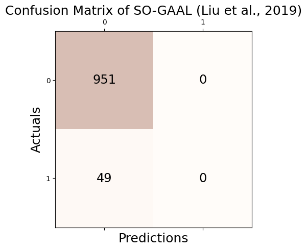
Accuracy: 0.951
Precision: 0.000
Recall: 0.000
F1 Score: 0.000/home/csy/anaconda3/envs/pygsp/lib/python3.10/site-packages/sklearn/metrics/_classification.py:1469: UndefinedMetricWarning: Precision is ill-defined and being set to 0.0 due to no predicted samples. Use `zero_division` parameter to control this behavior.
_warn_prf(average, modifier, msg_start, len(result))# check
print('Accuracy(TP + TN / TP + TN + FP + FN): %.3f' % round((_conf.conf_matrix[0][0] + _conf.conf_matrix[1][1])/1000,3))
print('Precision(TP / TP + FP): %.3f' % round(_conf.conf_matrix[1][1]/(_conf.conf_matrix[0][1] + _conf.conf_matrix[1][1]),3))
print('Recall(TP / TP + FN): %.3f' % round(_conf.conf_matrix[1][1]/(_conf.conf_matrix[1][0] + _conf.conf_matrix[1][1]),3))
print('F1 Score(2*precision*recall/precision+recall): %.3f' % round((2*(_conf.conf_matrix[1][1]/(_conf.conf_matrix[0][1] + _conf.conf_matrix[1][1]))*(_conf.conf_matrix[1][1]/(_conf.conf_matrix[1][0] + _conf.conf_matrix[1][1]))) / (_conf.conf_matrix[1][1]/(_conf.conf_matrix[0][1] + _conf.conf_matrix[1][1]) + _conf.conf_matrix[1][1]/(_conf.conf_matrix[1][0] + _conf.conf_matrix[1][1])),3))Accuracy(TP + TN / TP + TN + FP + FN): 0.951
Precision(TP / TP + FP): nan
Recall(TP / TP + FN): 0.000
F1 Score(2*precision*recall/precision+recall): nan/tmp/ipykernel_3852735/4166638268.py:3: RuntimeWarning: invalid value encountered in long_scalars
print('Precision(TP / TP + FP): %.3f' % round(_conf.conf_matrix[1][1]/(_conf.conf_matrix[0][1] + _conf.conf_matrix[1][1]),3))
/tmp/ipykernel_3852735/4166638268.py:5: RuntimeWarning: invalid value encountered in long_scalars
print('F1 Score(2*precision*recall/precision+recall): %.3f' % round((2*(_conf.conf_matrix[1][1]/(_conf.conf_matrix[0][1] + _conf.conf_matrix[1][1]))*(_conf.conf_matrix[1][1]/(_conf.conf_matrix[1][0] + _conf.conf_matrix[1][1]))) / (_conf.conf_matrix[1][1]/(_conf.conf_matrix[0][1] + _conf.conf_matrix[1][1]) + _conf.conf_matrix[1][1]/(_conf.conf_matrix[1][0] + _conf.conf_matrix[1][1])),3))fpr, tpr, thresh = roc_curve(outlier_true_orbit,clf.decision_function(_df))32/32 [==============================] - 0s 568us/stepauc(fpr, tpr)0.46434472842764857tab_orbit = pd.concat([tab_orbit,
pd.DataFrame({"Accuracy":[_conf.acc],"Precision":[_conf.pre],"Recall":[_conf.rec],"F1":[_conf.f1],"AUC":[auc(fpr, tpr)]},index = [_conf.name])]);tab_orbit| Accuracy | Precision | Recall | F1 | AUC | |
|---|---|---|---|---|---|
| GODE | 0.961 | 0.600000 | 0.612245 | 0.606061 | 0.893023 |
| LOF (Breunig et al., 2000) | 0.921 | 0.200000 | 0.204082 | 0.202020 | 0.664124 |
| kNN (Ramaswamy et al., 2000) | 0.947 | 0.460000 | 0.469388 | 0.464646 | 0.847990 |
| CBLOF (He et al., 2003) | 0.911 | 0.100000 | 0.102041 | 0.101010 | 0.533402 |
| OCSVM (Sch ̈olkopf et al., 2001) | 0.893 | 0.210000 | 0.428571 | 0.281879 | 0.788751 |
| MCD (Hardin and Rocke, 2004) | 0.911 | 0.100000 | 0.102041 | 0.101010 | 0.454001 |
| Feature Bagging (Lazarevic and Kumar, 2005) | 0.921 | 0.200000 | 0.204082 | 0.202020 | 0.677997 |
| ABOD (Kriegel et al., 2008) | 0.951 | 0.500000 | 0.510204 | 0.505051 | 0.863924 |
| Isolation Forest (Liu et al., 2008) | 0.925 | 0.240000 | 0.244898 | 0.242424 | 0.618018 |
| HBOS (Goldstein and Dengel, 2012) | 0.921 | 0.105263 | 0.081633 | 0.091954 | 0.529743 |
| SOS (Janssens et al., 2012) | 0.941 | 0.400000 | 0.408163 | 0.404040 | 0.844224 |
| SO-GAAL (Liu et al., 2019) | 0.951 | 0.000000 | 0.000000 | 0.000000 | 0.464345 |
MO_GAAL_Orbit
np.random.seed(77)
clf = MO_GAAL(contamination=0.05)
clf.fit(_df[['x', 'y','f']])/home/csy/anaconda3/envs/pygsp/lib/python3.10/site-packages/keras/src/optimizers/legacy/gradient_descent.py:114: UserWarning: The `lr` argument is deprecated, use `learning_rate` instead.
super().__init__(name, **kwargs)Epoch 1 of 60
Testing for epoch 1 index 1:
32/32 [==============================] - 0s 1ms/step
Testing for epoch 1 index 2:
32/32 [==============================] - 0s 1ms/step
Epoch 2 of 60
Testing for epoch 2 index 1:
32/32 [==============================] - 0s 1ms/step
Testing for epoch 2 index 2:
32/32 [==============================] - 0s 1ms/step
Epoch 3 of 60
Testing for epoch 3 index 1:
32/32 [==============================] - 0s 1ms/step
Testing for epoch 3 index 2:
32/32 [==============================] - 0s 581us/step
Epoch 4 of 60
Testing for epoch 4 index 1:
32/32 [==============================] - 0s 583us/step
Testing for epoch 4 index 2:
32/32 [==============================] - 0s 1ms/step
Epoch 5 of 60
Testing for epoch 5 index 1:
32/32 [==============================] - 0s 1ms/step
Testing for epoch 5 index 2:
32/32 [==============================] - 0s 1ms/step
Epoch 6 of 60
Testing for epoch 6 index 1:
32/32 [==============================] - 0s 561us/step
Testing for epoch 6 index 2:
32/32 [==============================] - 0s 601us/step
Epoch 7 of 60
Testing for epoch 7 index 1:
32/32 [==============================] - 0s 1ms/step
Testing for epoch 7 index 2:
32/32 [==============================] - 0s 1ms/step
Epoch 8 of 60
Testing for epoch 8 index 1:
32/32 [==============================] - 0s 1ms/step
Testing for epoch 8 index 2:
32/32 [==============================] - 0s 1ms/step
Epoch 9 of 60
Testing for epoch 9 index 1:
32/32 [==============================] - 0s 1ms/step
Testing for epoch 9 index 2:
32/32 [==============================] - 0s 807us/step
Epoch 10 of 60
Testing for epoch 10 index 1:
32/32 [==============================] - 0s 1ms/step
Testing for epoch 10 index 2:
32/32 [==============================] - 0s 575us/step
Epoch 11 of 60
Testing for epoch 11 index 1:
32/32 [==============================] - 0s 1ms/step
Testing for epoch 11 index 2:
32/32 [==============================] - 0s 1ms/step
Epoch 12 of 60
Testing for epoch 12 index 1:
32/32 [==============================] - 0s 564us/step
Testing for epoch 12 index 2:
32/32 [==============================] - 0s 1ms/step
Epoch 13 of 60
Testing for epoch 13 index 1:
32/32 [==============================] - 0s 1ms/step
Testing for epoch 13 index 2:
32/32 [==============================] - 0s 1ms/step
Epoch 14 of 60
Testing for epoch 14 index 1:
32/32 [==============================] - 0s 1ms/step
Testing for epoch 14 index 2:
32/32 [==============================] - 0s 575us/step
Epoch 15 of 60
Testing for epoch 15 index 1:
32/32 [==============================] - 0s 1ms/step
Testing for epoch 15 index 2:
32/32 [==============================] - 0s 565us/step
Epoch 16 of 60
Testing for epoch 16 index 1:
32/32 [==============================] - 0s 562us/step
Testing for epoch 16 index 2:
32/32 [==============================] - 0s 1ms/step
Epoch 17 of 60
Testing for epoch 17 index 1:
32/32 [==============================] - 0s 1ms/step
Testing for epoch 17 index 2:
32/32 [==============================] - 0s 1ms/step
Epoch 18 of 60
Testing for epoch 18 index 1:
32/32 [==============================] - 0s 1ms/step
Testing for epoch 18 index 2:
32/32 [==============================] - 0s 1ms/step
Epoch 19 of 60
Testing for epoch 19 index 1:
32/32 [==============================] - 0s 1ms/step
Testing for epoch 19 index 2:
32/32 [==============================] - 0s 1ms/step
Epoch 20 of 60
Testing for epoch 20 index 1:
32/32 [==============================] - 0s 581us/step
Testing for epoch 20 index 2:
32/32 [==============================] - 0s 595us/step
Epoch 21 of 60
Testing for epoch 21 index 1:
32/32 [==============================] - 0s 1ms/step
Testing for epoch 21 index 2:
32/32 [==============================] - 0s 615us/step
16/16 [==============================] - 0s 976us/step - loss: 0.6211
16/16 [==============================] - 0s 864us/step - loss: 1.0813
16/16 [==============================] - 0s 847us/step - loss: 1.1397
16/16 [==============================] - 0s 1ms/step - loss: 1.1436
16/16 [==============================] - 0s 1ms/step - loss: 1.1446
16/16 [==============================] - 0s 979us/step - loss: 1.1448
16/16 [==============================] - 0s 2ms/step - loss: 1.1448
16/16 [==============================] - 0s 2ms/step - loss: 1.1447
16/16 [==============================] - 0s 2ms/step - loss: 1.1446
16/16 [==============================] - 0s 2ms/step - loss: 1.1446
Epoch 22 of 60
Testing for epoch 22 index 1:
32/32 [==============================] - 0s 888us/step
16/16 [==============================] - 0s 936us/step - loss: 0.6128
16/16 [==============================] - 0s 2ms/step - loss: 1.1006
16/16 [==============================] - 0s 2ms/step - loss: 1.1618
16/16 [==============================] - 0s 967us/step - loss: 1.1658
16/16 [==============================] - 0s 865us/step - loss: 1.1669
16/16 [==============================] - 0s 2ms/step - loss: 1.1671
16/16 [==============================] - 0s 1ms/step - loss: 1.1671
16/16 [==============================] - 0s 1ms/step - loss: 1.1670
16/16 [==============================] - 0s 2ms/step - loss: 1.1669
16/16 [==============================] - 0s 2ms/step - loss: 1.1669
Testing for epoch 22 index 2:
32/32 [==============================] - 0s 1ms/step
16/16 [==============================] - 0s 2ms/step - loss: 0.6131
16/16 [==============================] - 0s 907us/step - loss: 1.1060
16/16 [==============================] - 0s 947us/step - loss: 1.1673
16/16 [==============================] - 0s 2ms/step - loss: 1.1713
16/16 [==============================] - 0s 916us/step - loss: 1.1723
16/16 [==============================] - 0s 983us/step - loss: 1.1725
16/16 [==============================] - 0s 2ms/step - loss: 1.1725
16/16 [==============================] - 0s 886us/step - loss: 1.1724
16/16 [==============================] - 0s 861us/step - loss: 1.1723
16/16 [==============================] - 0s 841us/step - loss: 1.1723
Epoch 23 of 60
Testing for epoch 23 index 1:
32/32 [==============================] - 0s 1ms/step
16/16 [==============================] - 0s 2ms/step - loss: 0.6029
16/16 [==============================] - 0s 2ms/step - loss: 1.1322
16/16 [==============================] - 0s 897us/step - loss: 1.2002
16/16 [==============================] - 0s 1ms/step - loss: 1.2044
16/16 [==============================] - 0s 2ms/step - loss: 1.2055
16/16 [==============================] - 0s 1ms/step - loss: 1.2057
16/16 [==============================] - 0s 2ms/step - loss: 1.2057
16/16 [==============================] - 0s 2ms/step - loss: 1.2056
16/16 [==============================] - 0s 948us/step - loss: 1.2055
16/16 [==============================] - 0s 892us/step - loss: 1.2055
Testing for epoch 23 index 2:
32/32 [==============================] - 0s 826us/step
16/16 [==============================] - 0s 2ms/step - loss: 0.6025
16/16 [==============================] - 0s 869us/step - loss: 1.1440
16/16 [==============================] - 0s 2ms/step - loss: 1.2117
16/16 [==============================] - 0s 854us/step - loss: 1.2159
16/16 [==============================] - 0s 2ms/step - loss: 1.2169
16/16 [==============================] - 0s 875us/step - loss: 1.2171
16/16 [==============================] - 0s 1ms/step - loss: 1.2171
16/16 [==============================] - 0s 2ms/step - loss: 1.2170
16/16 [==============================] - 0s 863us/step - loss: 1.2170
16/16 [==============================] - 0s 867us/step - loss: 1.2170
Epoch 24 of 60
Testing for epoch 24 index 1:
32/32 [==============================] - 0s 1ms/step
16/16 [==============================] - 0s 1ms/step - loss: 0.5927
16/16 [==============================] - 0s 2ms/step - loss: 1.1665
16/16 [==============================] - 0s 998us/step - loss: 1.2374
16/16 [==============================] - 0s 823us/step - loss: 1.2419
16/16 [==============================] - 0s 934us/step - loss: 1.2430
16/16 [==============================] - 0s 829us/step - loss: 1.2432
16/16 [==============================] - 0s 2ms/step - loss: 1.2432
16/16 [==============================] - 0s 2ms/step - loss: 1.2431
16/16 [==============================] - 0s 2ms/step - loss: 1.2431
16/16 [==============================] - 0s 2ms/step - loss: 1.2431
Testing for epoch 24 index 2:
32/32 [==============================] - 0s 729us/step
16/16 [==============================] - 0s 2ms/step - loss: 0.5934
16/16 [==============================] - 0s 1ms/step - loss: 1.1691
16/16 [==============================] - 0s 871us/step - loss: 1.2400
16/16 [==============================] - 0s 2ms/step - loss: 1.2445
16/16 [==============================] - 0s 2ms/step - loss: 1.2456
16/16 [==============================] - 0s 852us/step - loss: 1.2458
16/16 [==============================] - 0s 821us/step - loss: 1.2457
16/16 [==============================] - 0s 888us/step - loss: 1.2457
16/16 [==============================] - 0s 2ms/step - loss: 1.2456
16/16 [==============================] - 0s 848us/step - loss: 1.2456
Epoch 25 of 60
Testing for epoch 25 index 1:
32/32 [==============================] - 0s 614us/step
16/16 [==============================] - 0s 2ms/step - loss: 0.5848
16/16 [==============================] - 0s 1ms/step - loss: 1.1934
16/16 [==============================] - 0s 2ms/step - loss: 1.2693
16/16 [==============================] - 0s 2ms/step - loss: 1.2739
16/16 [==============================] - 0s 1ms/step - loss: 1.2751
16/16 [==============================] - 0s 2ms/step - loss: 1.2753
16/16 [==============================] - 0s 2ms/step - loss: 1.2752
16/16 [==============================] - 0s 1ms/step - loss: 1.2751
16/16 [==============================] - 0s 874us/step - loss: 1.2750
16/16 [==============================] - 0s 822us/step - loss: 1.2750
Testing for epoch 25 index 2:
32/32 [==============================] - 0s 982us/step
16/16 [==============================] - 0s 2ms/step - loss: 0.5871
16/16 [==============================] - 0s 2ms/step - loss: 1.2078
16/16 [==============================] - 0s 2ms/step - loss: 1.2829
16/16 [==============================] - 0s 2ms/step - loss: 1.2877
16/16 [==============================] - 0s 2ms/step - loss: 1.2888
16/16 [==============================] - 0s 2ms/step - loss: 1.2890
16/16 [==============================] - 0s 2ms/step - loss: 1.2890
16/16 [==============================] - 0s 2ms/step - loss: 1.2888
16/16 [==============================] - 0s 2ms/step - loss: 1.2888
16/16 [==============================] - 0s 888us/step - loss: 1.2888
Epoch 26 of 60
Testing for epoch 26 index 1:
32/32 [==============================] - 0s 606us/step
16/16 [==============================] - 0s 2ms/step - loss: 0.5805
16/16 [==============================] - 0s 822us/step - loss: 1.2290
16/16 [==============================] - 0s 815us/step - loss: 1.3099
16/16 [==============================] - 0s 2ms/step - loss: 1.3149
16/16 [==============================] - 0s 790us/step - loss: 1.3161
16/16 [==============================] - 0s 815us/step - loss: 1.3163
16/16 [==============================] - 0s 2ms/step - loss: 1.3163
16/16 [==============================] - 0s 814us/step - loss: 1.3162
16/16 [==============================] - 0s 869us/step - loss: 1.3161
16/16 [==============================] - 0s 852us/step - loss: 1.3161
Testing for epoch 26 index 2:
32/32 [==============================] - 0s 1ms/step
16/16 [==============================] - 0s 1ms/step - loss: 0.5851
16/16 [==============================] - 0s 1ms/step - loss: 1.2332
16/16 [==============================] - 0s 2ms/step - loss: 1.3115
16/16 [==============================] - 0s 824us/step - loss: 1.3164
16/16 [==============================] - 0s 1ms/step - loss: 1.3176
16/16 [==============================] - 0s 986us/step - loss: 1.3178
16/16 [==============================] - 0s 790us/step - loss: 1.3178
16/16 [==============================] - 0s 2ms/step - loss: 1.3177
16/16 [==============================] - 0s 2ms/step - loss: 1.3176
16/16 [==============================] - 0s 2ms/step - loss: 1.3176
Epoch 27 of 60
Testing for epoch 27 index 1:
32/32 [==============================] - 0s 574us/step
16/16 [==============================] - 0s 802us/step - loss: 0.5827
16/16 [==============================] - 0s 792us/step - loss: 1.2418
16/16 [==============================] - 0s 2ms/step - loss: 1.3207
16/16 [==============================] - 0s 774us/step - loss: 1.3257
16/16 [==============================] - 0s 807us/step - loss: 1.3269
16/16 [==============================] - 0s 791us/step - loss: 1.3271
16/16 [==============================] - 0s 964us/step - loss: 1.3270
16/16 [==============================] - 0s 2ms/step - loss: 1.3270
16/16 [==============================] - 0s 821us/step - loss: 1.3269
16/16 [==============================] - 0s 802us/step - loss: 1.3269
Testing for epoch 27 index 2:
32/32 [==============================] - 0s 580us/step
16/16 [==============================] - 0s 812us/step - loss: 0.5894
16/16 [==============================] - 0s 782us/step - loss: 1.2669
16/16 [==============================] - 0s 794us/step - loss: 1.3451
16/16 [==============================] - 0s 2ms/step - loss: 1.3501
16/16 [==============================] - 0s 843us/step - loss: 1.3513
16/16 [==============================] - 0s 792us/step - loss: 1.3515
16/16 [==============================] - 0s 773us/step - loss: 1.3515
16/16 [==============================] - 0s 802us/step - loss: 1.3514
16/16 [==============================] - 0s 2ms/step - loss: 1.3513
16/16 [==============================] - 0s 1ms/step - loss: 1.3513
Epoch 28 of 60
Testing for epoch 28 index 1:
32/32 [==============================] - 0s 1ms/step
16/16 [==============================] - 0s 799us/step - loss: 0.5895
16/16 [==============================] - 0s 774us/step - loss: 1.2747
16/16 [==============================] - 0s 1ms/step - loss: 1.3543
16/16 [==============================] - 0s 861us/step - loss: 1.3594
16/16 [==============================] - 0s 2ms/step - loss: 1.3606
16/16 [==============================] - 0s 801us/step - loss: 1.3607
16/16 [==============================] - 0s 803us/step - loss: 1.3607
16/16 [==============================] - 0s 779us/step - loss: 1.3606
16/16 [==============================] - 0s 786us/step - loss: 1.3606
16/16 [==============================] - 0s 2ms/step - loss: 1.3605
Testing for epoch 28 index 2:
32/32 [==============================] - 0s 584us/step
16/16 [==============================] - 0s 820us/step - loss: 0.6016
16/16 [==============================] - 0s 2ms/step - loss: 1.2951
16/16 [==============================] - 0s 2ms/step - loss: 1.3737
16/16 [==============================] - 0s 2ms/step - loss: 1.3786
16/16 [==============================] - 0s 849us/step - loss: 1.3798
16/16 [==============================] - 0s 1ms/step - loss: 1.3800
16/16 [==============================] - 0s 853us/step - loss: 1.3799
16/16 [==============================] - 0s 980us/step - loss: 1.3798
16/16 [==============================] - 0s 2ms/step - loss: 1.3798
16/16 [==============================] - 0s 880us/step - loss: 1.3797
Epoch 29 of 60
Testing for epoch 29 index 1:
32/32 [==============================] - 0s 1ms/step
16/16 [==============================] - 0s 1ms/step - loss: 0.6046
16/16 [==============================] - 0s 2ms/step - loss: 1.2864
16/16 [==============================] - 0s 1ms/step - loss: 1.3632
16/16 [==============================] - 0s 1ms/step - loss: 1.3680
16/16 [==============================] - 0s 804us/step - loss: 1.3690
16/16 [==============================] - 0s 2ms/step - loss: 1.3692
16/16 [==============================] - 0s 810us/step - loss: 1.3692
16/16 [==============================] - 0s 848us/step - loss: 1.3691
16/16 [==============================] - 0s 859us/step - loss: 1.3690
16/16 [==============================] - 0s 1ms/step - loss: 1.3690
Testing for epoch 29 index 2:
32/32 [==============================] - 0s 1ms/step
16/16 [==============================] - 0s 1ms/step - loss: 0.6195
16/16 [==============================] - 0s 2ms/step - loss: 1.3102
16/16 [==============================] - 0s 2ms/step - loss: 1.3850
16/16 [==============================] - 0s 2ms/step - loss: 1.3898
16/16 [==============================] - 0s 2ms/step - loss: 1.3909
16/16 [==============================] - 0s 890us/step - loss: 1.3910
16/16 [==============================] - 0s 1ms/step - loss: 1.3910
16/16 [==============================] - 0s 789us/step - loss: 1.3909
16/16 [==============================] - 0s 783us/step - loss: 1.3908
16/16 [==============================] - 0s 773us/step - loss: 1.3908
Epoch 30 of 60
Testing for epoch 30 index 1:
32/32 [==============================] - 0s 608us/step
16/16 [==============================] - 0s 810us/step - loss: 0.6259
16/16 [==============================] - 0s 782us/step - loss: 1.3218
16/16 [==============================] - 0s 819us/step - loss: 1.3959
16/16 [==============================] - 0s 941us/step - loss: 1.4007
16/16 [==============================] - 0s 1ms/step - loss: 1.4018
16/16 [==============================] - 0s 2ms/step - loss: 1.4020
16/16 [==============================] - 0s 2ms/step - loss: 1.4020
16/16 [==============================] - 0s 2ms/step - loss: 1.4019
16/16 [==============================] - 0s 2ms/step - loss: 1.4018
16/16 [==============================] - 0s 2ms/step - loss: 1.4018
Testing for epoch 30 index 2:
32/32 [==============================] - 0s 568us/step
16/16 [==============================] - 0s 2ms/step - loss: 0.6424
16/16 [==============================] - 0s 790us/step - loss: 1.3256
16/16 [==============================] - 0s 804us/step - loss: 1.3954
16/16 [==============================] - 0s 783us/step - loss: 1.4000
16/16 [==============================] - 0s 789us/step - loss: 1.4011
16/16 [==============================] - 0s 794us/step - loss: 1.4012
16/16 [==============================] - 0s 799us/step - loss: 1.4012
16/16 [==============================] - 0s 1ms/step - loss: 1.4011
16/16 [==============================] - 0s 2ms/step - loss: 1.4010
16/16 [==============================] - 0s 974us/step - loss: 1.4010
Epoch 31 of 60
Testing for epoch 31 index 1:
32/32 [==============================] - 0s 977us/step
16/16 [==============================] - 0s 1ms/step - loss: 0.6505
16/16 [==============================] - 0s 2ms/step - loss: 1.3458
16/16 [==============================] - 0s 2ms/step - loss: 1.4158
16/16 [==============================] - 0s 2ms/step - loss: 1.4204
16/16 [==============================] - 0s 2ms/step - loss: 1.4214
16/16 [==============================] - 0s 2ms/step - loss: 1.4216
16/16 [==============================] - 0s 2ms/step - loss: 1.4216
16/16 [==============================] - 0s 2ms/step - loss: 1.4215
16/16 [==============================] - 0s 2ms/step - loss: 1.4214
16/16 [==============================] - 0s 878us/step - loss: 1.4214
Testing for epoch 31 index 2:
32/32 [==============================] - 0s 1ms/step
16/16 [==============================] - 0s 2ms/step - loss: 0.6688
16/16 [==============================] - 0s 2ms/step - loss: 1.3557
16/16 [==============================] - 0s 1ms/step - loss: 1.4234
16/16 [==============================] - 0s 1ms/step - loss: 1.4278
16/16 [==============================] - 0s 2ms/step - loss: 1.4288
16/16 [==============================] - 0s 2ms/step - loss: 1.4289
16/16 [==============================] - 0s 2ms/step - loss: 1.4289
16/16 [==============================] - 0s 825us/step - loss: 1.4288
16/16 [==============================] - 0s 2ms/step - loss: 1.4287
16/16 [==============================] - 0s 2ms/step - loss: 1.4287
Epoch 32 of 60
Testing for epoch 32 index 1:
32/32 [==============================] - 0s 564us/step
16/16 [==============================] - 0s 807us/step - loss: 0.6780
16/16 [==============================] - 0s 814us/step - loss: 1.3703
16/16 [==============================] - 0s 2ms/step - loss: 1.4374
16/16 [==============================] - 0s 2ms/step - loss: 1.4417
16/16 [==============================] - 0s 865us/step - loss: 1.4426
16/16 [==============================] - 0s 813us/step - loss: 1.4428
16/16 [==============================] - 0s 800us/step - loss: 1.4427
16/16 [==============================] - 0s 807us/step - loss: 1.4426
16/16 [==============================] - 0s 828us/step - loss: 1.4425
16/16 [==============================] - 0s 852us/step - loss: 1.4425
Testing for epoch 32 index 2:
32/32 [==============================] - 0s 591us/step
16/16 [==============================] - 0s 2ms/step - loss: 0.6965
16/16 [==============================] - 0s 2ms/step - loss: 1.3779
16/16 [==============================] - 0s 2ms/step - loss: 1.4427
16/16 [==============================] - 0s 844us/step - loss: 1.4469
16/16 [==============================] - 0s 813us/step - loss: 1.4479
16/16 [==============================] - 0s 801us/step - loss: 1.4480
16/16 [==============================] - 0s 1ms/step - loss: 1.4480
16/16 [==============================] - 0s 2ms/step - loss: 1.4478
16/16 [==============================] - 0s 814us/step - loss: 1.4477
16/16 [==============================] - 0s 804us/step - loss: 1.4477
Epoch 33 of 60
Testing for epoch 33 index 1:
32/32 [==============================] - 0s 1ms/step
16/16 [==============================] - 0s 2ms/step - loss: 0.7056
16/16 [==============================] - 0s 1ms/step - loss: 1.3908
16/16 [==============================] - 0s 989us/step - loss: 1.4549
16/16 [==============================] - 0s 2ms/step - loss: 1.4591
16/16 [==============================] - 0s 791us/step - loss: 1.4600
16/16 [==============================] - 0s 2ms/step - loss: 1.4602
16/16 [==============================] - 0s 1ms/step - loss: 1.4601
16/16 [==============================] - 0s 2ms/step - loss: 1.4600
16/16 [==============================] - 0s 2ms/step - loss: 1.4599
16/16 [==============================] - 0s 834us/step - loss: 1.4599
Testing for epoch 33 index 2:
32/32 [==============================] - 0s 1ms/step
16/16 [==============================] - 0s 2ms/step - loss: 0.7234
16/16 [==============================] - 0s 1ms/step - loss: 1.3958
16/16 [==============================] - 0s 2ms/step - loss: 1.4578
16/16 [==============================] - 0s 2ms/step - loss: 1.4617
16/16 [==============================] - 0s 880us/step - loss: 1.4626
16/16 [==============================] - 0s 848us/step - loss: 1.4628
16/16 [==============================] - 0s 2ms/step - loss: 1.4627
16/16 [==============================] - 0s 782us/step - loss: 1.4626
16/16 [==============================] - 0s 758us/step - loss: 1.4625
16/16 [==============================] - 0s 814us/step - loss: 1.4625
Epoch 34 of 60
Testing for epoch 34 index 1:
32/32 [==============================] - 0s 1ms/step
16/16 [==============================] - 0s 1ms/step - loss: 0.7344
16/16 [==============================] - 0s 841us/step - loss: 1.4243
16/16 [==============================] - 0s 805us/step - loss: 1.4870
16/16 [==============================] - 0s 2ms/step - loss: 1.4910
16/16 [==============================] - 0s 1ms/step - loss: 1.4919
16/16 [==============================] - 0s 1ms/step - loss: 1.4921
16/16 [==============================] - 0s 969us/step - loss: 1.4920
16/16 [==============================] - 0s 801us/step - loss: 1.4919
16/16 [==============================] - 0s 809us/step - loss: 1.4918
16/16 [==============================] - 0s 796us/step - loss: 1.4918
Testing for epoch 34 index 2:
32/32 [==============================] - 0s 1ms/step
16/16 [==============================] - 0s 822us/step - loss: 0.7494
16/16 [==============================] - 0s 1ms/step - loss: 1.4233
16/16 [==============================] - 0s 846us/step - loss: 1.4838
16/16 [==============================] - 0s 1ms/step - loss: 1.4875
16/16 [==============================] - 0s 2ms/step - loss: 1.4883
16/16 [==============================] - 0s 2ms/step - loss: 1.4885
16/16 [==============================] - 0s 1ms/step - loss: 1.4884
16/16 [==============================] - 0s 2ms/step - loss: 1.4883
16/16 [==============================] - 0s 1ms/step - loss: 1.4882
16/16 [==============================] - 0s 2ms/step - loss: 1.4882
Epoch 35 of 60
Testing for epoch 35 index 1:
32/32 [==============================] - 0s 617us/step
16/16 [==============================] - 0s 780us/step - loss: 0.7594
16/16 [==============================] - 0s 785us/step - loss: 1.4475
16/16 [==============================] - 0s 786us/step - loss: 1.5084
16/16 [==============================] - 0s 790us/step - loss: 1.5122
16/16 [==============================] - 0s 2ms/step - loss: 1.5131
16/16 [==============================] - 0s 1ms/step - loss: 1.5132
16/16 [==============================] - 0s 2ms/step - loss: 1.5132
16/16 [==============================] - 0s 805us/step - loss: 1.5131
16/16 [==============================] - 0s 861us/step - loss: 1.5130
16/16 [==============================] - 0s 816us/step - loss: 1.5130
Testing for epoch 35 index 2:
32/32 [==============================] - 0s 574us/step
16/16 [==============================] - 0s 2ms/step - loss: 0.7732
16/16 [==============================] - 0s 953us/step - loss: 1.4459
16/16 [==============================] - 0s 2ms/step - loss: 1.5047
16/16 [==============================] - 0s 1ms/step - loss: 1.5082
16/16 [==============================] - 0s 2ms/step - loss: 1.5090
16/16 [==============================] - 0s 2ms/step - loss: 1.5092
16/16 [==============================] - 0s 1ms/step - loss: 1.5091
16/16 [==============================] - 0s 2ms/step - loss: 1.5090
16/16 [==============================] - 0s 2ms/step - loss: 1.5089
16/16 [==============================] - 0s 2ms/step - loss: 1.5089
Epoch 36 of 60
Testing for epoch 36 index 1:
32/32 [==============================] - 0s 1ms/step
16/16 [==============================] - 0s 2ms/step - loss: 0.7800
16/16 [==============================] - 0s 2ms/step - loss: 1.4588
16/16 [==============================] - 0s 2ms/step - loss: 1.5175
16/16 [==============================] - 0s 1ms/step - loss: 1.5209
16/16 [==============================] - 0s 832us/step - loss: 1.5218
16/16 [==============================] - 0s 2ms/step - loss: 1.5219
16/16 [==============================] - 0s 2ms/step - loss: 1.5219
16/16 [==============================] - 0s 869us/step - loss: 1.5217
16/16 [==============================] - 0s 875us/step - loss: 1.5216
16/16 [==============================] - 0s 791us/step - loss: 1.5216
Testing for epoch 36 index 2:
32/32 [==============================] - 0s 1ms/step
16/16 [==============================] - 0s 2ms/step - loss: 0.7930
16/16 [==============================] - 0s 861us/step - loss: 1.4608
16/16 [==============================] - 0s 2ms/step - loss: 1.5175
16/16 [==============================] - 0s 932us/step - loss: 1.5209
16/16 [==============================] - 0s 827us/step - loss: 1.5217
16/16 [==============================] - 0s 2ms/step - loss: 1.5218
16/16 [==============================] - 0s 2ms/step - loss: 1.5218
16/16 [==============================] - 0s 2ms/step - loss: 1.5216
16/16 [==============================] - 0s 845us/step - loss: 1.5215
16/16 [==============================] - 0s 797us/step - loss: 1.5215
Epoch 37 of 60
Testing for epoch 37 index 1:
32/32 [==============================] - 0s 1ms/step
16/16 [==============================] - 0s 2ms/step - loss: 0.8025
16/16 [==============================] - 0s 1ms/step - loss: 1.4900
16/16 [==============================] - 0s 815us/step - loss: 1.5481
16/16 [==============================] - 0s 2ms/step - loss: 1.5516
16/16 [==============================] - 0s 1ms/step - loss: 1.5524
16/16 [==============================] - 0s 802us/step - loss: 1.5526
16/16 [==============================] - 0s 2ms/step - loss: 1.5526
16/16 [==============================] - 0s 825us/step - loss: 1.5524
16/16 [==============================] - 0s 794us/step - loss: 1.5524
16/16 [==============================] - 0s 2ms/step - loss: 1.5523
Testing for epoch 37 index 2:
32/32 [==============================] - 0s 2ms/step
16/16 [==============================] - 0s 2ms/step - loss: 0.8189
16/16 [==============================] - 0s 1ms/step - loss: 1.5094
16/16 [==============================] - 0s 987us/step - loss: 1.5667
16/16 [==============================] - 0s 863us/step - loss: 1.5701
16/16 [==============================] - 0s 2ms/step - loss: 1.5710
16/16 [==============================] - 0s 2ms/step - loss: 1.5712
16/16 [==============================] - 0s 2ms/step - loss: 1.5711
16/16 [==============================] - 0s 2ms/step - loss: 1.5710
16/16 [==============================] - 0s 2ms/step - loss: 1.5709
16/16 [==============================] - 0s 938us/step - loss: 1.5709
Epoch 38 of 60
Testing for epoch 38 index 1:
32/32 [==============================] - 0s 745us/step
16/16 [==============================] - 0s 2ms/step - loss: 0.8213
16/16 [==============================] - 0s 784us/step - loss: 1.5145
16/16 [==============================] - 0s 802us/step - loss: 1.5717
16/16 [==============================] - 0s 941us/step - loss: 1.5751
16/16 [==============================] - 0s 784us/step - loss: 1.5759
16/16 [==============================] - 0s 2ms/step - loss: 1.5761
16/16 [==============================] - 0s 823us/step - loss: 1.5760
16/16 [==============================] - 0s 956us/step - loss: 1.5759
16/16 [==============================] - 0s 2ms/step - loss: 1.5758
16/16 [==============================] - 0s 1ms/step - loss: 1.5758
Testing for epoch 38 index 2:
32/32 [==============================] - 0s 1ms/step
16/16 [==============================] - 0s 840us/step - loss: 0.8398
16/16 [==============================] - 0s 813us/step - loss: 1.5413
16/16 [==============================] - 0s 2ms/step - loss: 1.5982
16/16 [==============================] - 0s 1ms/step - loss: 1.6017
16/16 [==============================] - 0s 2ms/step - loss: 1.6026
16/16 [==============================] - 0s 2ms/step - loss: 1.6027
16/16 [==============================] - 0s 2ms/step - loss: 1.6027
16/16 [==============================] - 0s 936us/step - loss: 1.6025
16/16 [==============================] - 0s 887us/step - loss: 1.6024
16/16 [==============================] - 0s 2ms/step - loss: 1.6024
Epoch 39 of 60
Testing for epoch 39 index 1:
32/32 [==============================] - 0s 1ms/step
16/16 [==============================] - 0s 856us/step - loss: 0.8385
16/16 [==============================] - 0s 936us/step - loss: 1.5376
16/16 [==============================] - 0s 2ms/step - loss: 1.5940
16/16 [==============================] - 0s 2ms/step - loss: 1.5974
16/16 [==============================] - 0s 1ms/step - loss: 1.5982
16/16 [==============================] - 0s 2ms/step - loss: 1.5984
16/16 [==============================] - 0s 837us/step - loss: 1.5983
16/16 [==============================] - 0s 2ms/step - loss: 1.5982
16/16 [==============================] - 0s 1ms/step - loss: 1.5981
16/16 [==============================] - 0s 868us/step - loss: 1.5981
Testing for epoch 39 index 2:
32/32 [==============================] - 0s 1ms/step
16/16 [==============================] - 0s 2ms/step - loss: 0.8519
16/16 [==============================] - 0s 923us/step - loss: 1.5491
16/16 [==============================] - 0s 2ms/step - loss: 1.6051
16/16 [==============================] - 0s 1ms/step - loss: 1.6085
16/16 [==============================] - 0s 2ms/step - loss: 1.6094
16/16 [==============================] - 0s 2ms/step - loss: 1.6095
16/16 [==============================] - 0s 2ms/step - loss: 1.6095
16/16 [==============================] - 0s 2ms/step - loss: 1.6093
16/16 [==============================] - 0s 879us/step - loss: 1.6093
16/16 [==============================] - 0s 832us/step - loss: 1.6092
Epoch 40 of 60
Testing for epoch 40 index 1:
32/32 [==============================] - 0s 2ms/step
16/16 [==============================] - 0s 1ms/step - loss: 0.8560
16/16 [==============================] - 0s 2ms/step - loss: 1.5641
16/16 [==============================] - 0s 849us/step - loss: 1.6209
16/16 [==============================] - 0s 886us/step - loss: 1.6243
16/16 [==============================] - 0s 2ms/step - loss: 1.6252
16/16 [==============================] - 0s 2ms/step - loss: 1.6253
16/16 [==============================] - 0s 872us/step - loss: 1.6253
16/16 [==============================] - 0s 1ms/step - loss: 1.6252
16/16 [==============================] - 0s 1ms/step - loss: 1.6251
16/16 [==============================] - 0s 2ms/step - loss: 1.6251
Testing for epoch 40 index 2:
32/32 [==============================] - 0s 1ms/step
16/16 [==============================] - 0s 821us/step - loss: 0.8741
16/16 [==============================] - 0s 940us/step - loss: 1.5890
16/16 [==============================] - 0s 1ms/step - loss: 1.6459
16/16 [==============================] - 0s 1ms/step - loss: 1.6493
16/16 [==============================] - 0s 2ms/step - loss: 1.6501
16/16 [==============================] - 0s 914us/step - loss: 1.6503
16/16 [==============================] - 0s 810us/step - loss: 1.6502
16/16 [==============================] - 0s 811us/step - loss: 1.6501
16/16 [==============================] - 0s 2ms/step - loss: 1.6500
16/16 [==============================] - 0s 809us/step - loss: 1.6500
Epoch 41 of 60
Testing for epoch 41 index 1:
32/32 [==============================] - 0s 1ms/step
16/16 [==============================] - 0s 799us/step - loss: 0.8705
16/16 [==============================] - 0s 2ms/step - loss: 1.5800
16/16 [==============================] - 0s 2ms/step - loss: 1.6359
16/16 [==============================] - 0s 824us/step - loss: 1.6392
16/16 [==============================] - 0s 2ms/step - loss: 1.6400
16/16 [==============================] - 0s 900us/step - loss: 1.6402
16/16 [==============================] - 0s 2ms/step - loss: 1.6401
16/16 [==============================] - 0s 800us/step - loss: 1.6400
16/16 [==============================] - 0s 759us/step - loss: 1.6399
16/16 [==============================] - 0s 774us/step - loss: 1.6399
Testing for epoch 41 index 2:
32/32 [==============================] - 0s 1ms/step
16/16 [==============================] - 0s 2ms/step - loss: 0.8865
16/16 [==============================] - 0s 844us/step - loss: 1.5977
16/16 [==============================] - 0s 813us/step - loss: 1.6532
16/16 [==============================] - 0s 2ms/step - loss: 1.6564
16/16 [==============================] - 0s 811us/step - loss: 1.6572
16/16 [==============================] - 0s 782us/step - loss: 1.6573
16/16 [==============================] - 0s 772us/step - loss: 1.6573
16/16 [==============================] - 0s 1ms/step - loss: 1.6572
16/16 [==============================] - 0s 786us/step - loss: 1.6571
16/16 [==============================] - 0s 783us/step - loss: 1.6570
Epoch 42 of 60
Testing for epoch 42 index 1:
32/32 [==============================] - 0s 1ms/step
16/16 [==============================] - 0s 2ms/step - loss: 0.8909
16/16 [==============================] - 0s 1ms/step - loss: 1.6130
16/16 [==============================] - 0s 1ms/step - loss: 1.6692
16/16 [==============================] - 0s 1ms/step - loss: 1.6724
16/16 [==============================] - 0s 811us/step - loss: 1.6733
16/16 [==============================] - 0s 2ms/step - loss: 1.6734
16/16 [==============================] - 0s 800us/step - loss: 1.6734
16/16 [==============================] - 0s 2ms/step - loss: 1.6733
16/16 [==============================] - 0s 805us/step - loss: 1.6732
16/16 [==============================] - 0s 760us/step - loss: 1.6732
Testing for epoch 42 index 2:
32/32 [==============================] - 0s 1ms/step
16/16 [==============================] - 0s 2ms/step - loss: 0.9051
16/16 [==============================] - 0s 842us/step - loss: 1.6254
16/16 [==============================] - 0s 785us/step - loss: 1.6811
16/16 [==============================] - 0s 796us/step - loss: 1.6842
16/16 [==============================] - 0s 1ms/step - loss: 1.6851
16/16 [==============================] - 0s 2ms/step - loss: 1.6852
16/16 [==============================] - 0s 787us/step - loss: 1.6852
16/16 [==============================] - 0s 761us/step - loss: 1.6850
16/16 [==============================] - 0s 780us/step - loss: 1.6849
16/16 [==============================] - 0s 799us/step - loss: 1.6849
Epoch 43 of 60
Testing for epoch 43 index 1:
32/32 [==============================] - 0s 1ms/step
16/16 [==============================] - 0s 828us/step - loss: 0.9117
16/16 [==============================] - 0s 951us/step - loss: 1.6455
16/16 [==============================] - 0s 2ms/step - loss: 1.7019
16/16 [==============================] - 0s 803us/step - loss: 1.7050
16/16 [==============================] - 0s 2ms/step - loss: 1.7059
16/16 [==============================] - 0s 2ms/step - loss: 1.7060
16/16 [==============================] - 0s 965us/step - loss: 1.7060
16/16 [==============================] - 0s 757us/step - loss: 1.7058
16/16 [==============================] - 0s 776us/step - loss: 1.7057
16/16 [==============================] - 0s 758us/step - loss: 1.7057
Testing for epoch 43 index 2:
32/32 [==============================] - 0s 1ms/step
16/16 [==============================] - 0s 802us/step - loss: 0.9275
16/16 [==============================] - 0s 2ms/step - loss: 1.6609
16/16 [==============================] - 0s 843us/step - loss: 1.7168
16/16 [==============================] - 0s 785us/step - loss: 1.7199
16/16 [==============================] - 0s 800us/step - loss: 1.7208
16/16 [==============================] - 0s 1ms/step - loss: 1.7209
16/16 [==============================] - 0s 2ms/step - loss: 1.7209
16/16 [==============================] - 0s 855us/step - loss: 1.7208
16/16 [==============================] - 0s 812us/step - loss: 1.7207
16/16 [==============================] - 0s 803us/step - loss: 1.7207
Epoch 44 of 60
Testing for epoch 44 index 1:
32/32 [==============================] - 0s 1ms/step
16/16 [==============================] - 0s 809us/step - loss: 0.9290
16/16 [==============================] - 0s 775us/step - loss: 1.6631
16/16 [==============================] - 0s 759us/step - loss: 1.7187
16/16 [==============================] - 0s 814us/step - loss: 1.7217
16/16 [==============================] - 0s 807us/step - loss: 1.7225
16/16 [==============================] - 0s 796us/step - loss: 1.7227
16/16 [==============================] - 0s 2ms/step - loss: 1.7226
16/16 [==============================] - 0s 1ms/step - loss: 1.7225
16/16 [==============================] - 0s 811us/step - loss: 1.7224
16/16 [==============================] - 0s 1ms/step - loss: 1.7224
Testing for epoch 44 index 2:
32/32 [==============================] - 0s 584us/step
16/16 [==============================] - 0s 2ms/step - loss: 0.9455
16/16 [==============================] - 0s 1ms/step - loss: 1.6770
16/16 [==============================] - 0s 812us/step - loss: 1.7319
16/16 [==============================] - 0s 800us/step - loss: 1.7349
16/16 [==============================] - 0s 2ms/step - loss: 1.7358
16/16 [==============================] - 0s 2ms/step - loss: 1.7359
16/16 [==============================] - 0s 887us/step - loss: 1.7359
16/16 [==============================] - 0s 2ms/step - loss: 1.7358
16/16 [==============================] - 0s 2ms/step - loss: 1.7357
16/16 [==============================] - 0s 2ms/step - loss: 1.7357
Epoch 45 of 60
Testing for epoch 45 index 1:
32/32 [==============================] - 0s 1ms/step
16/16 [==============================] - 0s 870us/step - loss: 0.9540
16/16 [==============================] - 0s 1ms/step - loss: 1.6976
16/16 [==============================] - 0s 2ms/step - loss: 1.7538
16/16 [==============================] - 0s 2ms/step - loss: 1.7569
16/16 [==============================] - 0s 2ms/step - loss: 1.7578
16/16 [==============================] - 0s 2ms/step - loss: 1.7580
16/16 [==============================] - 0s 2ms/step - loss: 1.7579
16/16 [==============================] - 0s 2ms/step - loss: 1.7578
16/16 [==============================] - 0s 2ms/step - loss: 1.7577
16/16 [==============================] - 0s 2ms/step - loss: 1.7577
Testing for epoch 45 index 2:
32/32 [==============================] - 0s 564us/step
16/16 [==============================] - 0s 787us/step - loss: 0.9649
16/16 [==============================] - 0s 790us/step - loss: 1.6943
16/16 [==============================] - 0s 2ms/step - loss: 1.7489
16/16 [==============================] - 0s 809us/step - loss: 1.7519
16/16 [==============================] - 0s 2ms/step - loss: 1.7527
16/16 [==============================] - 0s 2ms/step - loss: 1.7528
16/16 [==============================] - 0s 2ms/step - loss: 1.7528
16/16 [==============================] - 0s 2ms/step - loss: 1.7526
16/16 [==============================] - 0s 943us/step - loss: 1.7525
16/16 [==============================] - 0s 2ms/step - loss: 1.7525
Epoch 46 of 60
Testing for epoch 46 index 1:
32/32 [==============================] - 0s 876us/step
16/16 [==============================] - 0s 788us/step - loss: 0.9785
16/16 [==============================] - 0s 773us/step - loss: 1.7240
16/16 [==============================] - 0s 1ms/step - loss: 1.7800
16/16 [==============================] - 0s 2ms/step - loss: 1.7831
16/16 [==============================] - 0s 2ms/step - loss: 1.7839
16/16 [==============================] - 0s 859us/step - loss: 1.7840
16/16 [==============================] - 0s 773us/step - loss: 1.7840
16/16 [==============================] - 0s 2ms/step - loss: 1.7839
16/16 [==============================] - 0s 799us/step - loss: 1.7838
16/16 [==============================] - 0s 787us/step - loss: 1.7837
Testing for epoch 46 index 2:
32/32 [==============================] - 0s 1ms/step
16/16 [==============================] - 0s 2ms/step - loss: 0.9940
16/16 [==============================] - 0s 2ms/step - loss: 1.7282
16/16 [==============================] - 0s 2ms/step - loss: 1.7828
16/16 [==============================] - 0s 982us/step - loss: 1.7858
16/16 [==============================] - 0s 894us/step - loss: 1.7866
16/16 [==============================] - 0s 809us/step - loss: 1.7867
16/16 [==============================] - 0s 2ms/step - loss: 1.7867
16/16 [==============================] - 0s 876us/step - loss: 1.7865
16/16 [==============================] - 0s 1ms/step - loss: 1.7864
16/16 [==============================] - 0s 2ms/step - loss: 1.7864
Epoch 47 of 60
Testing for epoch 47 index 1:
32/32 [==============================] - 0s 745us/step
16/16 [==============================] - 0s 2ms/step - loss: 1.0030
16/16 [==============================] - 0s 811us/step - loss: 1.7424
16/16 [==============================] - 0s 1ms/step - loss: 1.7977
16/16 [==============================] - 0s 2ms/step - loss: 1.8007
16/16 [==============================] - 0s 1ms/step - loss: 1.8015
16/16 [==============================] - 0s 827us/step - loss: 1.8017
16/16 [==============================] - 0s 2ms/step - loss: 1.8016
16/16 [==============================] - 0s 808us/step - loss: 1.8015
16/16 [==============================] - 0s 776us/step - loss: 1.8014
16/16 [==============================] - 0s 2ms/step - loss: 1.8014
Testing for epoch 47 index 2:
32/32 [==============================] - 0s 581us/step
16/16 [==============================] - 0s 784us/step - loss: 1.0184
16/16 [==============================] - 0s 2ms/step - loss: 1.7455
16/16 [==============================] - 0s 842us/step - loss: 1.7992
16/16 [==============================] - 0s 2ms/step - loss: 1.8021
16/16 [==============================] - 0s 827us/step - loss: 1.8028
16/16 [==============================] - 0s 2ms/step - loss: 1.8030
16/16 [==============================] - 0s 796us/step - loss: 1.8029
16/16 [==============================] - 0s 2ms/step - loss: 1.8028
16/16 [==============================] - 0s 2ms/step - loss: 1.8027
16/16 [==============================] - 0s 843us/step - loss: 1.8026
Epoch 48 of 60
Testing for epoch 48 index 1:
32/32 [==============================] - 0s 1ms/step
16/16 [==============================] - 0s 791us/step - loss: 1.0233
16/16 [==============================] - 0s 788us/step - loss: 1.7481
16/16 [==============================] - 0s 772us/step - loss: 1.8019
16/16 [==============================] - 0s 2ms/step - loss: 1.8047
16/16 [==============================] - 0s 2ms/step - loss: 1.8055
16/16 [==============================] - 0s 2ms/step - loss: 1.8056
16/16 [==============================] - 0s 2ms/step - loss: 1.8056
16/16 [==============================] - 0s 2ms/step - loss: 1.8054
16/16 [==============================] - 0s 873us/step - loss: 1.8053
16/16 [==============================] - 0s 2ms/step - loss: 1.8053
Testing for epoch 48 index 2:
32/32 [==============================] - 0s 1ms/step
16/16 [==============================] - 0s 843us/step - loss: 1.0415
16/16 [==============================] - 0s 879us/step - loss: 1.7551
16/16 [==============================] - 0s 1ms/step - loss: 1.8074
16/16 [==============================] - 0s 2ms/step - loss: 1.8102
16/16 [==============================] - 0s 1ms/step - loss: 1.8109
16/16 [==============================] - 0s 2ms/step - loss: 1.8110
16/16 [==============================] - 0s 2ms/step - loss: 1.8110
16/16 [==============================] - 0s 1ms/step - loss: 1.8108
16/16 [==============================] - 0s 2ms/step - loss: 1.8107
16/16 [==============================] - 0s 2ms/step - loss: 1.8107
Epoch 49 of 60
Testing for epoch 49 index 1:
32/32 [==============================] - 0s 1ms/step
16/16 [==============================] - 0s 794us/step - loss: 1.0581
16/16 [==============================] - 0s 1ms/step - loss: 1.7845
16/16 [==============================] - 0s 864us/step - loss: 1.8379
16/16 [==============================] - 0s 913us/step - loss: 1.8407
16/16 [==============================] - 0s 2ms/step - loss: 1.8415
16/16 [==============================] - 0s 830us/step - loss: 1.8416
16/16 [==============================] - 0s 2ms/step - loss: 1.8416
16/16 [==============================] - 0s 950us/step - loss: 1.8414
16/16 [==============================] - 0s 1ms/step - loss: 1.8413
16/16 [==============================] - 0s 2ms/step - loss: 1.8413
Testing for epoch 49 index 2:
32/32 [==============================] - 0s 1ms/step
16/16 [==============================] - 0s 972us/step - loss: 1.0727
16/16 [==============================] - 0s 2ms/step - loss: 1.7840
16/16 [==============================] - 0s 955us/step - loss: 1.8360
16/16 [==============================] - 0s 792us/step - loss: 1.8388
16/16 [==============================] - 0s 2ms/step - loss: 1.8395
16/16 [==============================] - 0s 2ms/step - loss: 1.8397
16/16 [==============================] - 0s 2ms/step - loss: 1.8396
16/16 [==============================] - 0s 894us/step - loss: 1.8395
16/16 [==============================] - 0s 2ms/step - loss: 1.8394
16/16 [==============================] - 0s 2ms/step - loss: 1.8394
Epoch 50 of 60
Testing for epoch 50 index 1:
32/32 [==============================] - 0s 612us/step
16/16 [==============================] - 0s 814us/step - loss: 1.0911
16/16 [==============================] - 0s 799us/step - loss: 1.8158
16/16 [==============================] - 0s 792us/step - loss: 1.8689
16/16 [==============================] - 0s 832us/step - loss: 1.8717
16/16 [==============================] - 0s 2ms/step - loss: 1.8724
16/16 [==============================] - 0s 2ms/step - loss: 1.8725
16/16 [==============================] - 0s 805us/step - loss: 1.8725
16/16 [==============================] - 0s 2ms/step - loss: 1.8724
16/16 [==============================] - 0s 2ms/step - loss: 1.8723
16/16 [==============================] - 0s 2ms/step - loss: 1.8722
Testing for epoch 50 index 2:
32/32 [==============================] - 0s 1ms/step
16/16 [==============================] - 0s 852us/step - loss: 1.1092
16/16 [==============================] - 0s 2ms/step - loss: 1.8231
16/16 [==============================] - 0s 788us/step - loss: 1.8750
16/16 [==============================] - 0s 805us/step - loss: 1.8778
16/16 [==============================] - 0s 2ms/step - loss: 1.8785
16/16 [==============================] - 0s 884us/step - loss: 1.8786
16/16 [==============================] - 0s 2ms/step - loss: 1.8786
16/16 [==============================] - 0s 2ms/step - loss: 1.8785
16/16 [==============================] - 0s 853us/step - loss: 1.8784
16/16 [==============================] - 0s 805us/step - loss: 1.8784
Epoch 51 of 60
Testing for epoch 51 index 1:
32/32 [==============================] - 0s 1ms/step
16/16 [==============================] - 0s 848us/step - loss: 1.1099
16/16 [==============================] - 0s 2ms/step - loss: 1.8169
16/16 [==============================] - 0s 2ms/step - loss: 1.8684
16/16 [==============================] - 0s 2ms/step - loss: 1.8711
16/16 [==============================] - 0s 894us/step - loss: 1.8718
16/16 [==============================] - 0s 1ms/step - loss: 1.8720
16/16 [==============================] - 0s 1ms/step - loss: 1.8719
16/16 [==============================] - 0s 1ms/step - loss: 1.8718
16/16 [==============================] - 0s 1ms/step - loss: 1.8718
16/16 [==============================] - 0s 2ms/step - loss: 1.8717
Testing for epoch 51 index 2:
32/32 [==============================] - 0s 1ms/step
16/16 [==============================] - 0s 2ms/step - loss: 1.1318
16/16 [==============================] - 0s 939us/step - loss: 1.8340
16/16 [==============================] - 0s 2ms/step - loss: 1.8847
16/16 [==============================] - 0s 904us/step - loss: 1.8874
16/16 [==============================] - 0s 854us/step - loss: 1.8880
16/16 [==============================] - 0s 894us/step - loss: 1.8882
16/16 [==============================] - 0s 2ms/step - loss: 1.8882
16/16 [==============================] - 0s 981us/step - loss: 1.8880
16/16 [==============================] - 0s 2ms/step - loss: 1.8879
16/16 [==============================] - 0s 951us/step - loss: 1.8879
Epoch 52 of 60
Testing for epoch 52 index 1:
32/32 [==============================] - 0s 1ms/step
16/16 [==============================] - 0s 933us/step - loss: 1.1444
16/16 [==============================] - 0s 1ms/step - loss: 1.8546
16/16 [==============================] - 0s 2ms/step - loss: 1.9062
16/16 [==============================] - 0s 2ms/step - loss: 1.9089
16/16 [==============================] - 0s 2ms/step - loss: 1.9096
16/16 [==============================] - 0s 2ms/step - loss: 1.9097
16/16 [==============================] - 0s 2ms/step - loss: 1.9097
16/16 [==============================] - 0s 935us/step - loss: 1.9096
16/16 [==============================] - 0s 2ms/step - loss: 1.9095
16/16 [==============================] - 0s 2ms/step - loss: 1.9095
Testing for epoch 52 index 2:
32/32 [==============================] - 0s 1ms/step
16/16 [==============================] - 0s 1ms/step - loss: 1.1574
16/16 [==============================] - 0s 912us/step - loss: 1.8545
16/16 [==============================] - 0s 1ms/step - loss: 1.9046
16/16 [==============================] - 0s 2ms/step - loss: 1.9072
16/16 [==============================] - 0s 779us/step - loss: 1.9078
16/16 [==============================] - 0s 782us/step - loss: 1.9079
16/16 [==============================] - 0s 1ms/step - loss: 1.9079
16/16 [==============================] - 0s 994us/step - loss: 1.9077
16/16 [==============================] - 0s 2ms/step - loss: 1.9076
16/16 [==============================] - 0s 2ms/step - loss: 1.9076
Epoch 53 of 60
Testing for epoch 53 index 1:
32/32 [==============================] - 0s 920us/step
16/16 [==============================] - 0s 2ms/step - loss: 1.1652
16/16 [==============================] - 0s 2ms/step - loss: 1.8650
16/16 [==============================] - 0s 2ms/step - loss: 1.9154
16/16 [==============================] - 0s 2ms/step - loss: 1.9180
16/16 [==============================] - 0s 919us/step - loss: 1.9186
16/16 [==============================] - 0s 1ms/step - loss: 1.9187
16/16 [==============================] - 0s 935us/step - loss: 1.9187
16/16 [==============================] - 0s 2ms/step - loss: 1.9185
16/16 [==============================] - 0s 897us/step - loss: 1.9184
16/16 [==============================] - 0s 836us/step - loss: 1.9184
Testing for epoch 53 index 2:
32/32 [==============================] - 0s 647us/step
16/16 [==============================] - 0s 812us/step - loss: 1.1824
16/16 [==============================] - 0s 769us/step - loss: 1.8743
16/16 [==============================] - 0s 2ms/step - loss: 1.9238
16/16 [==============================] - 0s 796us/step - loss: 1.9264
16/16 [==============================] - 0s 2ms/step - loss: 1.9270
16/16 [==============================] - 0s 812us/step - loss: 1.9272
16/16 [==============================] - 0s 813us/step - loss: 1.9271
16/16 [==============================] - 0s 1ms/step - loss: 1.9270
16/16 [==============================] - 0s 856us/step - loss: 1.9269
16/16 [==============================] - 0s 810us/step - loss: 1.9268
Epoch 54 of 60
Testing for epoch 54 index 1:
32/32 [==============================] - 0s 1ms/step
16/16 [==============================] - 0s 844us/step - loss: 1.1988
16/16 [==============================] - 0s 1ms/step - loss: 1.9035
16/16 [==============================] - 0s 932us/step - loss: 1.9535
16/16 [==============================] - 0s 787us/step - loss: 1.9561
16/16 [==============================] - 0s 792us/step - loss: 1.9568
16/16 [==============================] - 0s 794us/step - loss: 1.9570
16/16 [==============================] - 0s 1ms/step - loss: 1.9569
16/16 [==============================] - 0s 814us/step - loss: 1.9568
16/16 [==============================] - 0s 1ms/step - loss: 1.9567
16/16 [==============================] - 0s 2ms/step - loss: 1.9567
Testing for epoch 54 index 2:
32/32 [==============================] - 0s 553us/step
16/16 [==============================] - 0s 2ms/step - loss: 1.2127
16/16 [==============================] - 0s 822us/step - loss: 1.9062
16/16 [==============================] - 0s 811us/step - loss: 1.9551
16/16 [==============================] - 0s 2ms/step - loss: 1.9577
16/16 [==============================] - 0s 803us/step - loss: 1.9584
16/16 [==============================] - 0s 798us/step - loss: 1.9585
16/16 [==============================] - 0s 773us/step - loss: 1.9585
16/16 [==============================] - 0s 796us/step - loss: 1.9584
16/16 [==============================] - 0s 806us/step - loss: 1.9583
16/16 [==============================] - 0s 808us/step - loss: 1.9583
Epoch 55 of 60
Testing for epoch 55 index 1:
32/32 [==============================] - 0s 636us/step
16/16 [==============================] - 0s 897us/step - loss: 1.2206
16/16 [==============================] - 0s 805us/step - loss: 1.9180
16/16 [==============================] - 0s 787us/step - loss: 1.9664
16/16 [==============================] - 0s 1ms/step - loss: 1.9689
16/16 [==============================] - 0s 2ms/step - loss: 1.9695
16/16 [==============================] - 0s 800us/step - loss: 1.9697
16/16 [==============================] - 0s 1ms/step - loss: 1.9696
16/16 [==============================] - 0s 2ms/step - loss: 1.9695
16/16 [==============================] - 0s 913us/step - loss: 1.9694
16/16 [==============================] - 0s 2ms/step - loss: 1.9694
Testing for epoch 55 index 2:
32/32 [==============================] - 0s 563us/step
16/16 [==============================] - 0s 809us/step - loss: 1.2428
16/16 [==============================] - 0s 839us/step - loss: 1.9369
16/16 [==============================] - 0s 818us/step - loss: 1.9851
16/16 [==============================] - 0s 1ms/step - loss: 1.9876
16/16 [==============================] - 0s 2ms/step - loss: 1.9883
16/16 [==============================] - 0s 2ms/step - loss: 1.9884
16/16 [==============================] - 0s 1ms/step - loss: 1.9884
16/16 [==============================] - 0s 1ms/step - loss: 1.9883
16/16 [==============================] - 0s 2ms/step - loss: 1.9882
16/16 [==============================] - 0s 1ms/step - loss: 1.9882
Epoch 56 of 60
Testing for epoch 56 index 1:
32/32 [==============================] - 0s 1ms/step
16/16 [==============================] - 0s 2ms/step - loss: 1.2530
16/16 [==============================] - 0s 2ms/step - loss: 1.9526
16/16 [==============================] - 0s 1ms/step - loss: 2.0011
16/16 [==============================] - 0s 892us/step - loss: 2.0036
16/16 [==============================] - 0s 805us/step - loss: 2.0042
16/16 [==============================] - 0s 782us/step - loss: 2.0044
16/16 [==============================] - 0s 788us/step - loss: 2.0043
16/16 [==============================] - 0s 2ms/step - loss: 2.0042
16/16 [==============================] - 0s 2ms/step - loss: 2.0041
16/16 [==============================] - 0s 854us/step - loss: 2.0040
Testing for epoch 56 index 2:
32/32 [==============================] - 0s 1ms/step
16/16 [==============================] - 0s 2ms/step - loss: 1.2613
16/16 [==============================] - 0s 2ms/step - loss: 1.9478
16/16 [==============================] - 0s 2ms/step - loss: 1.9951
16/16 [==============================] - 0s 2ms/step - loss: 1.9976
16/16 [==============================] - 0s 882us/step - loss: 1.9982
16/16 [==============================] - 0s 1ms/step - loss: 1.9984
16/16 [==============================] - 0s 1ms/step - loss: 1.9984
16/16 [==============================] - 0s 793us/step - loss: 1.9982
16/16 [==============================] - 0s 2ms/step - loss: 1.9981
16/16 [==============================] - 0s 821us/step - loss: 1.9981
Epoch 57 of 60
Testing for epoch 57 index 1:
32/32 [==============================] - 0s 621us/step
16/16 [==============================] - 0s 1ms/step - loss: 1.2723
16/16 [==============================] - 0s 2ms/step - loss: 1.9662
16/16 [==============================] - 0s 2ms/step - loss: 2.0142
16/16 [==============================] - 0s 1ms/step - loss: 2.0167
16/16 [==============================] - 0s 821us/step - loss: 2.0173
16/16 [==============================] - 0s 789us/step - loss: 2.0175
16/16 [==============================] - 0s 2ms/step - loss: 2.0174
16/16 [==============================] - 0s 803us/step - loss: 2.0173
16/16 [==============================] - 0s 2ms/step - loss: 2.0172
16/16 [==============================] - 0s 2ms/step - loss: 2.0172
Testing for epoch 57 index 2:
32/32 [==============================] - 0s 1ms/step
16/16 [==============================] - 0s 835us/step - loss: 1.2890
16/16 [==============================] - 0s 2ms/step - loss: 1.9763
16/16 [==============================] - 0s 2ms/step - loss: 2.0236
16/16 [==============================] - 0s 2ms/step - loss: 2.0261
16/16 [==============================] - 0s 1ms/step - loss: 2.0267
16/16 [==============================] - 0s 910us/step - loss: 2.0268
16/16 [==============================] - 0s 885us/step - loss: 2.0268
16/16 [==============================] - 0s 2ms/step - loss: 2.0267
16/16 [==============================] - 0s 974us/step - loss: 2.0266
16/16 [==============================] - 0s 864us/step - loss: 2.0266
Epoch 58 of 60
Testing for epoch 58 index 1:
32/32 [==============================] - 0s 1ms/step
16/16 [==============================] - 0s 802us/step - loss: 1.2869
16/16 [==============================] - 0s 1ms/step - loss: 1.9705
16/16 [==============================] - 0s 2ms/step - loss: 2.0173
16/16 [==============================] - 0s 2ms/step - loss: 2.0197
16/16 [==============================] - 0s 2ms/step - loss: 2.0203
16/16 [==============================] - 0s 1ms/step - loss: 2.0204
16/16 [==============================] - 0s 2ms/step - loss: 2.0203
16/16 [==============================] - 0s 2ms/step - loss: 2.0202
16/16 [==============================] - 0s 2ms/step - loss: 2.0201
16/16 [==============================] - 0s 833us/step - loss: 2.0201
Testing for epoch 58 index 2:
32/32 [==============================] - 0s 584us/step
16/16 [==============================] - 0s 791us/step - loss: 1.3158
16/16 [==============================] - 0s 818us/step - loss: 2.0032
16/16 [==============================] - 0s 785us/step - loss: 2.0502
16/16 [==============================] - 0s 1ms/step - loss: 2.0527
16/16 [==============================] - 0s 1ms/step - loss: 2.0533
16/16 [==============================] - 0s 847us/step - loss: 2.0535
16/16 [==============================] - 0s 790us/step - loss: 2.0535
16/16 [==============================] - 0s 2ms/step - loss: 2.0534
16/16 [==============================] - 0s 831us/step - loss: 2.0533
16/16 [==============================] - 0s 2ms/step - loss: 2.0533
Epoch 59 of 60
Testing for epoch 59 index 1:
32/32 [==============================] - 0s 591us/step
16/16 [==============================] - 0s 803us/step - loss: 1.3201
16/16 [==============================] - 0s 811us/step - loss: 2.0086
16/16 [==============================] - 0s 783us/step - loss: 2.0555
16/16 [==============================] - 0s 792us/step - loss: 2.0580
16/16 [==============================] - 0s 2ms/step - loss: 2.0585
16/16 [==============================] - 0s 828us/step - loss: 2.0587
16/16 [==============================] - 0s 2ms/step - loss: 2.0586
16/16 [==============================] - 0s 2ms/step - loss: 2.0585
16/16 [==============================] - 0s 803us/step - loss: 2.0584
16/16 [==============================] - 0s 778us/step - loss: 2.0584
Testing for epoch 59 index 2:
32/32 [==============================] - 0s 1ms/step
16/16 [==============================] - 0s 853us/step - loss: 1.3376
16/16 [==============================] - 0s 2ms/step - loss: 2.0187
16/16 [==============================] - 0s 891us/step - loss: 2.0651
16/16 [==============================] - 0s 2ms/step - loss: 2.0675
16/16 [==============================] - 0s 2ms/step - loss: 2.0681
16/16 [==============================] - 0s 2ms/step - loss: 2.0683
16/16 [==============================] - 0s 1ms/step - loss: 2.0682
16/16 [==============================] - 0s 2ms/step - loss: 2.0681
16/16 [==============================] - 0s 2ms/step - loss: 2.0680
16/16 [==============================] - 0s 2ms/step - loss: 2.0680
Epoch 60 of 60
Testing for epoch 60 index 1:
32/32 [==============================] - 0s 1ms/step
16/16 [==============================] - 0s 2ms/step - loss: 1.3388
16/16 [==============================] - 0s 830us/step - loss: 2.0171
16/16 [==============================] - 0s 1ms/step - loss: 2.0632
16/16 [==============================] - 0s 788us/step - loss: 2.0656
16/16 [==============================] - 0s 847us/step - loss: 2.0662
16/16 [==============================] - 0s 1ms/step - loss: 2.0663
16/16 [==============================] - 0s 2ms/step - loss: 2.0662
16/16 [==============================] - 0s 948us/step - loss: 2.0661
16/16 [==============================] - 0s 2ms/step - loss: 2.0660
16/16 [==============================] - 0s 2ms/step - loss: 2.0660
Testing for epoch 60 index 2:
32/32 [==============================] - 0s 585us/step
16/16 [==============================] - 0s 791us/step - loss: 1.3679
16/16 [==============================] - 0s 2ms/step - loss: 2.0481
16/16 [==============================] - 0s 791us/step - loss: 2.0943
16/16 [==============================] - 0s 785us/step - loss: 2.0968
16/16 [==============================] - 0s 784us/step - loss: 2.0974
16/16 [==============================] - 0s 788us/step - loss: 2.0976
16/16 [==============================] - 0s 823us/step - loss: 2.0975
16/16 [==============================] - 0s 786us/step - loss: 2.0974
16/16 [==============================] - 0s 803us/step - loss: 2.0973
16/16 [==============================] - 0s 812us/step - loss: 2.0973
32/32 [==============================] - 0s 572us/stepMO_GAAL(contamination=0.05, k=10, lr_d=0.01, lr_g=0.0001, momentum=0.9,
stop_epochs=20)outlier_MO_GAAL_one = list(clf.labels_)_conf = Conf_matrx(outlier_true_orbit,outlier_MO_GAAL_one)
_conf.conf("MO-GAAL (Liu et al., 2019)")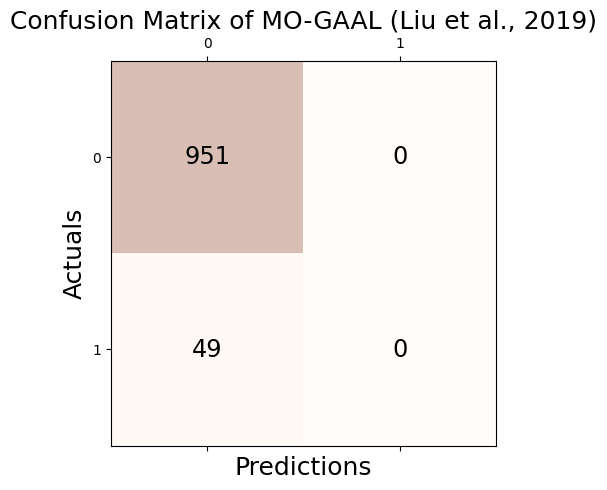
Accuracy: 0.951
Precision: 0.000
Recall: 0.000
F1 Score: 0.000/home/csy/anaconda3/envs/pygsp/lib/python3.10/site-packages/sklearn/metrics/_classification.py:1469: UndefinedMetricWarning: Precision is ill-defined and being set to 0.0 due to no predicted samples. Use `zero_division` parameter to control this behavior.
_warn_prf(average, modifier, msg_start, len(result))# check
print('Accuracy(TP + TN / TP + TN + FP + FN): %.3f' % round((_conf.conf_matrix[0][0] + _conf.conf_matrix[1][1])/1000,3))
print('Precision(TP / TP + FP): %.3f' % round(_conf.conf_matrix[1][1]/(_conf.conf_matrix[0][1] + _conf.conf_matrix[1][1]),3))
print('Recall(TP / TP + FN): %.3f' % round(_conf.conf_matrix[1][1]/(_conf.conf_matrix[1][0] + _conf.conf_matrix[1][1]),3))
print('F1 Score(2*precision*recall/precision+recall): %.3f' % round((2*(_conf.conf_matrix[1][1]/(_conf.conf_matrix[0][1] + _conf.conf_matrix[1][1]))*(_conf.conf_matrix[1][1]/(_conf.conf_matrix[1][0] + _conf.conf_matrix[1][1]))) / (_conf.conf_matrix[1][1]/(_conf.conf_matrix[0][1] + _conf.conf_matrix[1][1]) + _conf.conf_matrix[1][1]/(_conf.conf_matrix[1][0] + _conf.conf_matrix[1][1])),3))Accuracy(TP + TN / TP + TN + FP + FN): 0.951
Precision(TP / TP + FP): nan
Recall(TP / TP + FN): 0.000
F1 Score(2*precision*recall/precision+recall): nan/tmp/ipykernel_3852735/4166638268.py:3: RuntimeWarning: invalid value encountered in long_scalars
print('Precision(TP / TP + FP): %.3f' % round(_conf.conf_matrix[1][1]/(_conf.conf_matrix[0][1] + _conf.conf_matrix[1][1]),3))
/tmp/ipykernel_3852735/4166638268.py:5: RuntimeWarning: invalid value encountered in long_scalars
print('F1 Score(2*precision*recall/precision+recall): %.3f' % round((2*(_conf.conf_matrix[1][1]/(_conf.conf_matrix[0][1] + _conf.conf_matrix[1][1]))*(_conf.conf_matrix[1][1]/(_conf.conf_matrix[1][0] + _conf.conf_matrix[1][1]))) / (_conf.conf_matrix[1][1]/(_conf.conf_matrix[0][1] + _conf.conf_matrix[1][1]) + _conf.conf_matrix[1][1]/(_conf.conf_matrix[1][0] + _conf.conf_matrix[1][1])),3))fpr, tpr, thresh = roc_curve(outlier_true_orbit,clf.decision_function(_df))32/32 [==============================] - 0s 557us/stepauc(fpr, tpr)0.5095924805253332tab_orbit = pd.concat([tab_orbit,
pd.DataFrame({"Accuracy":[_conf.acc],"Precision":[_conf.pre],"Recall":[_conf.rec],"F1":[_conf.f1],"AUC":[auc(fpr, tpr)]},index = [_conf.name])]);tab_orbit| Accuracy | Precision | Recall | F1 | AUC | |
|---|---|---|---|---|---|
| GODE | 0.961 | 0.600000 | 0.612245 | 0.606061 | 0.893023 |
| LOF (Breunig et al., 2000) | 0.921 | 0.200000 | 0.204082 | 0.202020 | 0.664124 |
| kNN (Ramaswamy et al., 2000) | 0.947 | 0.460000 | 0.469388 | 0.464646 | 0.847990 |
| CBLOF (He et al., 2003) | 0.911 | 0.100000 | 0.102041 | 0.101010 | 0.533402 |
| OCSVM (Sch ̈olkopf et al., 2001) | 0.893 | 0.210000 | 0.428571 | 0.281879 | 0.788751 |
| MCD (Hardin and Rocke, 2004) | 0.911 | 0.100000 | 0.102041 | 0.101010 | 0.454001 |
| Feature Bagging (Lazarevic and Kumar, 2005) | 0.921 | 0.200000 | 0.204082 | 0.202020 | 0.677997 |
| ABOD (Kriegel et al., 2008) | 0.951 | 0.500000 | 0.510204 | 0.505051 | 0.863924 |
| Isolation Forest (Liu et al., 2008) | 0.925 | 0.240000 | 0.244898 | 0.242424 | 0.618018 |
| HBOS (Goldstein and Dengel, 2012) | 0.921 | 0.105263 | 0.081633 | 0.091954 | 0.529743 |
| SOS (Janssens et al., 2012) | 0.941 | 0.400000 | 0.408163 | 0.404040 | 0.844224 |
| SO-GAAL (Liu et al., 2019) | 0.951 | 0.000000 | 0.000000 | 0.000000 | 0.464345 |
| MO-GAAL (Liu et al., 2019) | 0.951 | 0.000000 | 0.000000 | 0.000000 | 0.509592 |
LSCP_Orbit
detectors = [KNN(), LOF(), OCSVM()]
clf = LSCP(detectors,contamination=0.05, random_state=77)
clf.fit(_df[['x', 'y','f']])/home/csy/anaconda3/envs/pygsp/lib/python3.10/site-packages/pyod/models/lscp.py:382: UserWarning: The number of histogram bins is greater than the number of classifiers, reducing n_bins to n_clf.
warnings.warn(LSCP(contamination=0.05,
detector_list=[KNN(algorithm='auto', contamination=0.1, leaf_size=30, method='largest',
metric='minkowski', metric_params=None, n_jobs=1, n_neighbors=5, p=2,
radius=1.0), LOF(algorithm='auto', contamination=0.1, leaf_size=30, metric='minkowski',
metric_params=None, n_jobs=1, n_neighbors=20, novelty=True, p=2), OCSVM(cache_size=200, coef0=0.0, contamination=0.1, degree=3, gamma='auto',
kernel='rbf', max_iter=-1, nu=0.5, shrinking=True, tol=0.001,
verbose=False)],
local_max_features=1.0, local_region_size=30, n_bins=3,
random_state=RandomState(MT19937) at 0x7FD5F8280640)outlier_LSCP_one = list(clf.labels_)_conf = Conf_matrx(outlier_true_orbit,outlier_LSCP_one)
_conf.conf("LSCP (Zhao et al., 2019)")Accuracy: 0.947
Precision: 0.460
Recall: 0.469
F1 Score: 0.465# check
print('Accuracy(TP + TN / TP + TN + FP + FN): %.3f' % round((_conf.conf_matrix[0][0] + _conf.conf_matrix[1][1])/1000,3))
print('Precision(TP / TP + FP): %.3f' % round(_conf.conf_matrix[1][1]/(_conf.conf_matrix[0][1] + _conf.conf_matrix[1][1]),3))
print('Recall(TP / TP + FN): %.3f' % round(_conf.conf_matrix[1][1]/(_conf.conf_matrix[1][0] + _conf.conf_matrix[1][1]),3))
print('F1 Score(2*precision*recall/precision+recall): %.3f' % round((2*(_conf.conf_matrix[1][1]/(_conf.conf_matrix[0][1] + _conf.conf_matrix[1][1]))*(_conf.conf_matrix[1][1]/(_conf.conf_matrix[1][0] + _conf.conf_matrix[1][1]))) / (_conf.conf_matrix[1][1]/(_conf.conf_matrix[0][1] + _conf.conf_matrix[1][1]) + _conf.conf_matrix[1][1]/(_conf.conf_matrix[1][0] + _conf.conf_matrix[1][1])),3))Accuracy(TP + TN / TP + TN + FP + FN): 0.947
Precision(TP / TP + FP): 0.460
Recall(TP / TP + FN): 0.469
F1 Score(2*precision*recall/precision+recall): 0.465fpr, tpr, thresh = roc_curve(outlier_true_orbit,clf.decision_function(_df))auc(fpr, tpr)0.849288611343591tab_orbit = pd.concat([tab_orbit,
pd.DataFrame({"Accuracy":[_conf.acc],"Precision":[_conf.pre],"Recall":[_conf.rec],"F1":[_conf.f1],"AUC":[auc(fpr, tpr)]},index = [_conf.name])]);tab_orbit| Accuracy | Precision | Recall | F1 | AUC | |
|---|---|---|---|---|---|
| GODE | 0.961 | 0.600000 | 0.612245 | 0.606061 | 0.893023 |
| LOF (Breunig et al., 2000) | 0.921 | 0.200000 | 0.204082 | 0.202020 | 0.664124 |
| kNN (Ramaswamy et al., 2000) | 0.947 | 0.460000 | 0.469388 | 0.464646 | 0.847990 |
| CBLOF (He et al., 2003) | 0.911 | 0.100000 | 0.102041 | 0.101010 | 0.533402 |
| OCSVM (Sch ̈olkopf et al., 2001) | 0.893 | 0.210000 | 0.428571 | 0.281879 | 0.788751 |
| MCD (Hardin and Rocke, 2004) | 0.911 | 0.100000 | 0.102041 | 0.101010 | 0.454001 |
| Feature Bagging (Lazarevic and Kumar, 2005) | 0.921 | 0.200000 | 0.204082 | 0.202020 | 0.677997 |
| ABOD (Kriegel et al., 2008) | 0.951 | 0.500000 | 0.510204 | 0.505051 | 0.863924 |
| Isolation Forest (Liu et al., 2008) | 0.925 | 0.240000 | 0.244898 | 0.242424 | 0.618018 |
| HBOS (Goldstein and Dengel, 2012) | 0.921 | 0.105263 | 0.081633 | 0.091954 | 0.529743 |
| SOS (Janssens et al., 2012) | 0.941 | 0.400000 | 0.408163 | 0.404040 | 0.844224 |
| SO-GAAL (Liu et al., 2019) | 0.951 | 0.000000 | 0.000000 | 0.000000 | 0.464345 |
| MO-GAAL (Liu et al., 2019) | 0.951 | 0.000000 | 0.000000 | 0.000000 | 0.509592 |
| LSCP (Zhao et al., 2019) | 0.947 | 0.460000 | 0.469388 | 0.464646 | 0.849289 |
tab_orbit
round(tab_orbit,3)| Accuracy | Precision | Recall | F1 | AUC | |
|---|---|---|---|---|---|
| GODE | 0.961 | 0.600 | 0.612 | 0.606 | 0.893 |
| LOF (Breunig et al., 2000) | 0.921 | 0.200 | 0.204 | 0.202 | 0.664 |
| kNN (Ramaswamy et al., 2000) | 0.947 | 0.460 | 0.469 | 0.465 | 0.848 |
| CBLOF (He et al., 2003) | 0.911 | 0.100 | 0.102 | 0.101 | 0.533 |
| OCSVM (Sch ̈olkopf et al., 2001) | 0.893 | 0.210 | 0.429 | 0.282 | 0.789 |
| MCD (Hardin and Rocke, 2004) | 0.911 | 0.100 | 0.102 | 0.101 | 0.454 |
| Feature Bagging (Lazarevic and Kumar, 2005) | 0.921 | 0.200 | 0.204 | 0.202 | 0.678 |
| ABOD (Kriegel et al., 2008) | 0.951 | 0.500 | 0.510 | 0.505 | 0.864 |
| Isolation Forest (Liu et al., 2008) | 0.925 | 0.240 | 0.245 | 0.242 | 0.618 |
| HBOS (Goldstein and Dengel, 2012) | 0.921 | 0.105 | 0.082 | 0.092 | 0.530 |
| SOS (Janssens et al., 2012) | 0.941 | 0.400 | 0.408 | 0.404 | 0.844 |
| SO-GAAL (Liu et al., 2019) | 0.951 | 0.000 | 0.000 | 0.000 | 0.464 |
| MO-GAAL (Liu et al., 2019) | 0.951 | 0.000 | 0.000 | 0.000 | 0.510 |
| LSCP (Zhao et al., 2019) | 0.947 | 0.460 | 0.469 | 0.465 | 0.849 |
Bunny
G = graphs.Bunny()
n = G.N
g = filters.Heat(G, tau=75)
n=2503
np.random.seed(1212)
normal = np.around(np.random.normal(size=n),15)
unif = np.concatenate([np.random.uniform(low=3,high=7,size=60), np.random.uniform(low=-7,high=-3,size=60),np.zeros(n-120)]); np.random.shuffle(unif)
noise = normal + unif
f = np.zeros(n)
f[1000] = -3234
f = g.filter(f, method='chebyshev') 2023-11-27 13:28:42,553:[WARNING](pygsp.graphs.graph.lmax): The largest eigenvalue G.lmax is not available, we need to estimate it. Explicitly call G.estimate_lmax() or G.compute_fourier_basis() once beforehand to suppress the warning.G.coords.shape
_W = G.W.toarray()
_x = G.coords[:,0]
_y = G.coords[:,1]
_z = -G.coords[:,2]
_df1 = {'W':_W,'x':_x,'y':_y,'z':_z, 'fnoise':f+noise,'f' : f, 'noise': noise,'unif':unif}
_df = pd.DataFrame({'x': _df1['x'],'y':_df1['y'],'z':_df1['z'],'fnoise':_df1['fnoise'],'f':_df1['f'],'noise':_df1['noise']})
unif = _df1['unif']
outlier_true_bunny = unif.copy()
outlier_true_bunny = list(map(lambda x: 1 if x !=0 else 0,outlier_true_bunny))
X = np.array(_df)[:,:4]GODE_Bunny
_W = _df1['W']
_BUNNY = BUNNY(_df)
_BUNNY.fit(sd=20,ref=10)outlier_GODE_one_old = (_BUNNY.df['Residual']**2).tolist()
sorted_data = sorted(outlier_GODE_one_old,reverse=True)
index = int(len(sorted_data) * 0.05)
five_percent = sorted_data[index]
outlier_GODE_one = list(map(lambda x: 1 if x > five_percent else 0,outlier_GODE_one_old))_conf = Conf_matrx(outlier_true_bunny,outlier_GODE_one)
_conf.conf("GODE")Accuracy: 0.988
Precision: 0.864
Recall: 0.900
F1 Score: 0.882# check
print('Accuracy(TP + TN / TP + TN + FP + FN): %.3f' % round((_conf.conf_matrix[0][0] + _conf.conf_matrix[1][1])/1000,3))
print('Precision(TP / TP + FP): %.3f' % round(_conf.conf_matrix[1][1]/(_conf.conf_matrix[0][1] + _conf.conf_matrix[1][1]),3))
print('Recall(TP / TP + FN): %.3f' % round(_conf.conf_matrix[1][1]/(_conf.conf_matrix[1][0] + _conf.conf_matrix[1][1]),3))
print('F1 Score(2*precision*recall/precision+recall): %.3f' % round((2*(_conf.conf_matrix[1][1]/(_conf.conf_matrix[0][1] + _conf.conf_matrix[1][1]))*(_conf.conf_matrix[1][1]/(_conf.conf_matrix[1][0] + _conf.conf_matrix[1][1]))) / (_conf.conf_matrix[1][1]/(_conf.conf_matrix[0][1] + _conf.conf_matrix[1][1]) + _conf.conf_matrix[1][1]/(_conf.conf_matrix[1][0] + _conf.conf_matrix[1][1])),3))Accuracy(TP + TN / TP + TN + FP + FN): 2.474
Precision(TP / TP + FP): 0.864
Recall(TP / TP + FN): 0.900
F1 Score(2*precision*recall/precision+recall): 0.882fpr, tpr, thresh = roc_curve(outlier_true_bunny,outlier_GODE_one_old)auc(fpr, tpr)0.9962267449993005tab_bunny = pd.concat([tab_bunny,
pd.DataFrame({"Accuracy":[_conf.acc],"Precision":[_conf.pre],"Recall":[_conf.rec],"F1":[_conf.f1],"AUC":[auc(fpr, tpr)]},index = [_conf.name])]);tab_bunny| Accuracy | Precision | Recall | F1 | AUC | |
|---|---|---|---|---|---|
| GODE | 0.988414 | 0.864 | 0.9 | 0.881633 | 0.996227 |
LOF_Bunny
np.random.seed(77)
clf = LOF(contamination=0.05)
clf.fit(_df[['x', 'y','fnoise']])LOF(algorithm='auto', contamination=0.05, leaf_size=30, metric='minkowski',
metric_params=None, n_jobs=1, n_neighbors=20, novelty=True, p=2)outlier_LOF_one = list(clf.labels_)_conf = Conf_matrx(outlier_true_bunny,clf.fit_predict(X))
_conf.conf("LOF (Breunig et al., 2000)")/home/csy/anaconda3/envs/pygsp/lib/python3.10/site-packages/sklearn/utils/deprecation.py:86: FutureWarning: Function fit_predict is deprecated
warnings.warn(msg, category=FutureWarning)Accuracy: 0.943
Precision: 0.413
Recall: 0.433
F1 Score: 0.423# check
print('Accuracy(TP + TN / TP + TN + FP + FN): %.3f' % round((_conf.conf_matrix[0][0] + _conf.conf_matrix[1][1])/1000,3))
print('Precision(TP / TP + FP): %.3f' % round(_conf.conf_matrix[1][1]/(_conf.conf_matrix[0][1] + _conf.conf_matrix[1][1]),3))
print('Recall(TP / TP + FN): %.3f' % round(_conf.conf_matrix[1][1]/(_conf.conf_matrix[1][0] + _conf.conf_matrix[1][1]),3))
print('F1 Score(2*precision*recall/precision+recall): %.3f' % round((2*(_conf.conf_matrix[1][1]/(_conf.conf_matrix[0][1] + _conf.conf_matrix[1][1]))*(_conf.conf_matrix[1][1]/(_conf.conf_matrix[1][0] + _conf.conf_matrix[1][1]))) / (_conf.conf_matrix[1][1]/(_conf.conf_matrix[0][1] + _conf.conf_matrix[1][1]) + _conf.conf_matrix[1][1]/(_conf.conf_matrix[1][0] + _conf.conf_matrix[1][1])),3))Accuracy(TP + TN / TP + TN + FP + FN): 2.361
Precision(TP / TP + FP): 0.413
Recall(TP / TP + FN): 0.433
F1 Score(2*precision*recall/precision+recall): 0.423fpr, tpr, thresh = roc_curve(outlier_true_bunny,clf.decision_function(X))auc(fpr, tpr)0.8191110644845433tab_bunny = pd.concat([tab_bunny,
pd.DataFrame({"Accuracy":[_conf.acc],"Precision":[_conf.pre],"Recall":[_conf.rec],"F1":[_conf.f1],"AUC":[auc(fpr, tpr)]},index = [_conf.name])]);tab_bunny| Accuracy | Precision | Recall | F1 | AUC | |
|---|---|---|---|---|---|
| GODE | 0.988414 | 0.864000 | 0.900000 | 0.881633 | 0.996227 |
| LOF (Breunig et al., 2000) | 0.943268 | 0.412698 | 0.433333 | 0.422764 | 0.819111 |
KNN_Bunny
np.random.seed(77)
clf = KNN(contamination=0.05)
clf.fit(_df[['x', 'y','fnoise']])KNN(algorithm='auto', contamination=0.05, leaf_size=30, method='largest',
metric='minkowski', metric_params=None, n_jobs=1, n_neighbors=5, p=2,
radius=1.0)outlier_KNN_one = list(clf.labels_)_conf = Conf_matrx(outlier_true_bunny,outlier_KNN_one)
_conf.conf("kNN (Ramaswamy et al., 2000)")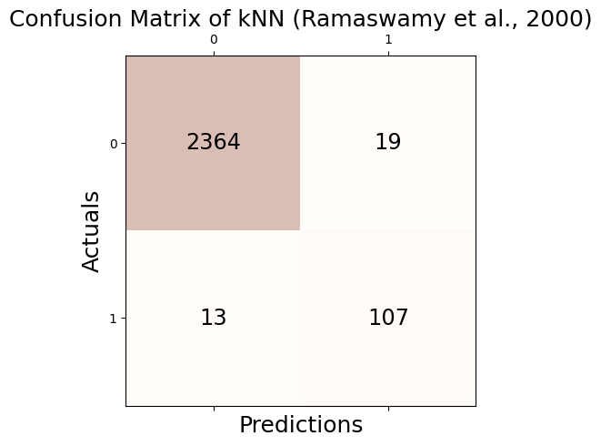
Accuracy: 0.987
Precision: 0.849
Recall: 0.892
F1 Score: 0.870# check
print('Accuracy(TP + TN / TP + TN + FP + FN): %.3f' % round((_conf.conf_matrix[0][0] + _conf.conf_matrix[1][1])/1000,3))
print('Precision(TP / TP + FP): %.3f' % round(_conf.conf_matrix[1][1]/(_conf.conf_matrix[0][1] + _conf.conf_matrix[1][1]),3))
print('Recall(TP / TP + FN): %.3f' % round(_conf.conf_matrix[1][1]/(_conf.conf_matrix[1][0] + _conf.conf_matrix[1][1]),3))
print('F1 Score(2*precision*recall/precision+recall): %.3f' % round((2*(_conf.conf_matrix[1][1]/(_conf.conf_matrix[0][1] + _conf.conf_matrix[1][1]))*(_conf.conf_matrix[1][1]/(_conf.conf_matrix[1][0] + _conf.conf_matrix[1][1]))) / (_conf.conf_matrix[1][1]/(_conf.conf_matrix[0][1] + _conf.conf_matrix[1][1]) + _conf.conf_matrix[1][1]/(_conf.conf_matrix[1][0] + _conf.conf_matrix[1][1])),3))Accuracy(TP + TN / TP + TN + FP + FN): 2.471
Precision(TP / TP + FP): 0.849
Recall(TP / TP + FN): 0.892
F1 Score(2*precision*recall/precision+recall): 0.870fpr, tpr, thresh = roc_curve(outlier_true_bunny,clf.decision_function(_df[['x', 'y','fnoise']]))auc(fpr, tpr)0.984438382990628tab_bunny = pd.concat([tab_bunny,
pd.DataFrame({"Accuracy":[_conf.acc],"Precision":[_conf.pre],"Recall":[_conf.rec],"F1":[_conf.f1],"AUC":[auc(fpr, tpr)]},index = [_conf.name])]);tab_bunny| Accuracy | Precision | Recall | F1 | AUC | |
|---|---|---|---|---|---|
| GODE | 0.988414 | 0.864000 | 0.900000 | 0.881633 | 0.996227 |
| LOF (Breunig et al., 2000) | 0.943268 | 0.412698 | 0.433333 | 0.422764 | 0.819111 |
| kNN (Ramaswamy et al., 2000) | 0.987215 | 0.849206 | 0.891667 | 0.869919 | 0.984438 |
CBLOF_Bunny
clf = CBLOF(contamination=0.05,random_state=77)
clf.fit(_df[['x', 'y','fnoise']])/home/csy/anaconda3/envs/pygsp/lib/python3.10/site-packages/sklearn/cluster/_kmeans.py:1412: FutureWarning: The default value of `n_init` will change from 10 to 'auto' in 1.4. Set the value of `n_init` explicitly to suppress the warning
super()._check_params_vs_input(X, default_n_init=10)CBLOF(alpha=0.9, beta=5, check_estimator=False, clustering_estimator=None,
contamination=0.05, n_clusters=8, n_jobs=None, random_state=77,
use_weights=False)outlier_CBLOF_one = list(clf.labels_)_conf = Conf_matrx(outlier_true_bunny,outlier_CBLOF_one)
_conf.conf("CBLOF (He et al., 2003)")Accuracy: 0.981
Precision: 0.786
Recall: 0.825
F1 Score: 0.805# check
print('Accuracy(TP + TN / TP + TN + FP + FN): %.3f' % round((_conf.conf_matrix[0][0] + _conf.conf_matrix[1][1])/1000,3))
print('Precision(TP / TP + FP): %.3f' % round(_conf.conf_matrix[1][1]/(_conf.conf_matrix[0][1] + _conf.conf_matrix[1][1]),3))
print('Recall(TP / TP + FN): %.3f' % round(_conf.conf_matrix[1][1]/(_conf.conf_matrix[1][0] + _conf.conf_matrix[1][1]),3))
print('F1 Score(2*precision*recall/precision+recall): %.3f' % round((2*(_conf.conf_matrix[1][1]/(_conf.conf_matrix[0][1] + _conf.conf_matrix[1][1]))*(_conf.conf_matrix[1][1]/(_conf.conf_matrix[1][0] + _conf.conf_matrix[1][1]))) / (_conf.conf_matrix[1][1]/(_conf.conf_matrix[0][1] + _conf.conf_matrix[1][1]) + _conf.conf_matrix[1][1]/(_conf.conf_matrix[1][0] + _conf.conf_matrix[1][1])),3))Accuracy(TP + TN / TP + TN + FP + FN): 2.455
Precision(TP / TP + FP): 0.786
Recall(TP / TP + FN): 0.825
F1 Score(2*precision*recall/precision+recall): 0.805fpr, tpr, thresh = roc_curve(outlier_true_bunny,clf.decision_function(_df[['x', 'y','fnoise']]))auc(fpr, tpr)0.9705448314449574tab_bunny = pd.concat([tab_bunny,
pd.DataFrame({"Accuracy":[_conf.acc],"Precision":[_conf.pre],"Recall":[_conf.rec],"F1":[_conf.f1],"AUC":[auc(fpr, tpr)]},index = [_conf.name])]);tab_bunny| Accuracy | Precision | Recall | F1 | AUC | |
|---|---|---|---|---|---|
| GODE | 0.988414 | 0.864000 | 0.900000 | 0.881633 | 0.996227 |
| LOF (Breunig et al., 2000) | 0.943268 | 0.412698 | 0.433333 | 0.422764 | 0.819111 |
| kNN (Ramaswamy et al., 2000) | 0.987215 | 0.849206 | 0.891667 | 0.869919 | 0.984438 |
| CBLOF (He et al., 2003) | 0.980823 | 0.785714 | 0.825000 | 0.804878 | 0.970545 |
OCSVM_Bunny
np.random.seed(77)
clf = OCSVM(nu=0.05)
clf.fit(X)OCSVM(cache_size=200, coef0=0.0, contamination=0.1, degree=3, gamma='auto',
kernel='rbf', max_iter=-1, nu=0.05, shrinking=True, tol=0.001,
verbose=False)outlier_OSVM_one = list(clf.predict(X))_conf = Conf_matrx(outlier_true_bunny,outlier_OSVM_one)
_conf.conf("OCSVM (Sch ̈olkopf et al., 2001)")Accuracy: 0.917
Precision: 0.323
Recall: 0.675
F1 Score: 0.437# check
print('Accuracy(TP + TN / TP + TN + FP + FN): %.3f' % round((_conf.conf_matrix[0][0] + _conf.conf_matrix[1][1])/1000,3))
print('Precision(TP / TP + FP): %.3f' % round(_conf.conf_matrix[1][1]/(_conf.conf_matrix[0][1] + _conf.conf_matrix[1][1]),3))
print('Recall(TP / TP + FN): %.3f' % round(_conf.conf_matrix[1][1]/(_conf.conf_matrix[1][0] + _conf.conf_matrix[1][1]),3))
print('F1 Score(2*precision*recall/precision+recall): %.3f' % round((2*(_conf.conf_matrix[1][1]/(_conf.conf_matrix[0][1] + _conf.conf_matrix[1][1]))*(_conf.conf_matrix[1][1]/(_conf.conf_matrix[1][0] + _conf.conf_matrix[1][1]))) / (_conf.conf_matrix[1][1]/(_conf.conf_matrix[0][1] + _conf.conf_matrix[1][1]) + _conf.conf_matrix[1][1]/(_conf.conf_matrix[1][0] + _conf.conf_matrix[1][1])),3))Accuracy(TP + TN / TP + TN + FP + FN): 2.294
Precision(TP / TP + FP): 0.323
Recall(TP / TP + FN): 0.675
F1 Score(2*precision*recall/precision+recall): 0.437fpr, tpr, thresh = roc_curve(outlier_true_bunny,clf.decision_function(X))auc(fpr, tpr)0.8575500069939852tab_bunny = pd.concat([tab_bunny,
pd.DataFrame({"Accuracy":[_conf.acc],"Precision":[_conf.pre],"Recall":[_conf.rec],"F1":[_conf.f1],"AUC":[auc(fpr, tpr)]},index = [_conf.name])]);tab_bunny| Accuracy | Precision | Recall | F1 | AUC | |
|---|---|---|---|---|---|
| GODE | 0.988414 | 0.864000 | 0.900000 | 0.881633 | 0.996227 |
| LOF (Breunig et al., 2000) | 0.943268 | 0.412698 | 0.433333 | 0.422764 | 0.819111 |
| kNN (Ramaswamy et al., 2000) | 0.987215 | 0.849206 | 0.891667 | 0.869919 | 0.984438 |
| CBLOF (He et al., 2003) | 0.980823 | 0.785714 | 0.825000 | 0.804878 | 0.970545 |
| OCSVM (Sch ̈olkopf et al., 2001) | 0.916500 | 0.322709 | 0.675000 | 0.436658 | 0.857550 |
MCD_Bunny
clf = MCD(contamination=0.05 , random_state = 77)
clf.fit(_df[['x', 'y','fnoise']])MCD(assume_centered=False, contamination=0.05, random_state=77,
store_precision=True, support_fraction=None)outlier_MCD_one = list(clf.labels_)_conf = Conf_matrx(outlier_true_bunny,outlier_MCD_one)
_conf.conf("MCD (Hardin and Rocke, 2004)")Accuracy: 0.978
Precision: 0.762
Recall: 0.800
F1 Score: 0.780# check
print('Accuracy(TP + TN / TP + TN + FP + FN): %.3f' % round((_conf.conf_matrix[0][0] + _conf.conf_matrix[1][1])/1000,3))
print('Precision(TP / TP + FP): %.3f' % round(_conf.conf_matrix[1][1]/(_conf.conf_matrix[0][1] + _conf.conf_matrix[1][1]),3))
print('Recall(TP / TP + FN): %.3f' % round(_conf.conf_matrix[1][1]/(_conf.conf_matrix[1][0] + _conf.conf_matrix[1][1]),3))
print('F1 Score(2*precision*recall/precision+recall): %.3f' % round((2*(_conf.conf_matrix[1][1]/(_conf.conf_matrix[0][1] + _conf.conf_matrix[1][1]))*(_conf.conf_matrix[1][1]/(_conf.conf_matrix[1][0] + _conf.conf_matrix[1][1]))) / (_conf.conf_matrix[1][1]/(_conf.conf_matrix[0][1] + _conf.conf_matrix[1][1]) + _conf.conf_matrix[1][1]/(_conf.conf_matrix[1][0] + _conf.conf_matrix[1][1])),3))Accuracy(TP + TN / TP + TN + FP + FN): 2.449
Precision(TP / TP + FP): 0.762
Recall(TP / TP + FN): 0.800
F1 Score(2*precision*recall/precision+recall): 0.780fpr, tpr, thresh = roc_curve(outlier_true_bunny,clf.decision_function(_df[['x', 'y','fnoise']]))auc(fpr, tpr)0.9723982375157364tab_bunny = pd.concat([tab_bunny,
pd.DataFrame({"Accuracy":[_conf.acc],"Precision":[_conf.pre],"Recall":[_conf.rec],"F1":[_conf.f1],"AUC":[auc(fpr, tpr)]},index = [_conf.name])]);tab_bunny| Accuracy | Precision | Recall | F1 | AUC | |
|---|---|---|---|---|---|
| GODE | 0.988414 | 0.864000 | 0.900000 | 0.881633 | 0.996227 |
| LOF (Breunig et al., 2000) | 0.943268 | 0.412698 | 0.433333 | 0.422764 | 0.819111 |
| kNN (Ramaswamy et al., 2000) | 0.987215 | 0.849206 | 0.891667 | 0.869919 | 0.984438 |
| CBLOF (He et al., 2003) | 0.980823 | 0.785714 | 0.825000 | 0.804878 | 0.970545 |
| OCSVM (Sch ̈olkopf et al., 2001) | 0.916500 | 0.322709 | 0.675000 | 0.436658 | 0.857550 |
| MCD (Hardin and Rocke, 2004) | 0.978426 | 0.761905 | 0.800000 | 0.780488 | 0.972398 |
Feature Bagging_Bunny
clf = FeatureBagging(contamination=0.05, random_state=77)
clf.fit(_df[['x', 'y','fnoise']])FeatureBagging(base_estimator=None, bootstrap_features=False,
check_detector=True, check_estimator=False, combination='average',
contamination=0.05, estimator_params={}, max_features=1.0,
n_estimators=10, n_jobs=1, random_state=77, verbose=0)outlier_FeatureBagging_one = list(clf.labels_)_conf = Conf_matrx(outlier_true_bunny,outlier_FeatureBagging_one)
_conf.conf("Feature Bagging (Lazarevic and Kumar, 2005)")Accuracy: 0.949
Precision: 0.468
Recall: 0.492
F1 Score: 0.480# check
print('Accuracy(TP + TN / TP + TN + FP + FN): %.3f' % round((_conf.conf_matrix[0][0] + _conf.conf_matrix[1][1])/1000,3))
print('Precision(TP / TP + FP): %.3f' % round(_conf.conf_matrix[1][1]/(_conf.conf_matrix[0][1] + _conf.conf_matrix[1][1]),3))
print('Recall(TP / TP + FN): %.3f' % round(_conf.conf_matrix[1][1]/(_conf.conf_matrix[1][0] + _conf.conf_matrix[1][1]),3))
print('F1 Score(2*precision*recall/precision+recall): %.3f' % round((2*(_conf.conf_matrix[1][1]/(_conf.conf_matrix[0][1] + _conf.conf_matrix[1][1]))*(_conf.conf_matrix[1][1]/(_conf.conf_matrix[1][0] + _conf.conf_matrix[1][1]))) / (_conf.conf_matrix[1][1]/(_conf.conf_matrix[0][1] + _conf.conf_matrix[1][1]) + _conf.conf_matrix[1][1]/(_conf.conf_matrix[1][0] + _conf.conf_matrix[1][1])),3))Accuracy(TP + TN / TP + TN + FP + FN): 2.375
Precision(TP / TP + FP): 0.468
Recall(TP / TP + FN): 0.492
F1 Score(2*precision*recall/precision+recall): 0.480fpr, tpr, thresh = roc_curve(outlier_true_bunny,clf.decision_function(_df[['x', 'y','fnoise']]))auc(fpr, tpr)0.8338089243250805tab_bunny = pd.concat([tab_bunny,
pd.DataFrame({"Accuracy":[_conf.acc],"Precision":[_conf.pre],"Recall":[_conf.rec],"F1":[_conf.f1],"AUC":[auc(fpr, tpr)]},index = [_conf.name])]);tab_bunny| Accuracy | Precision | Recall | F1 | AUC | |
|---|---|---|---|---|---|
| GODE | 0.988414 | 0.864000 | 0.900000 | 0.881633 | 0.996227 |
| LOF (Breunig et al., 2000) | 0.943268 | 0.412698 | 0.433333 | 0.422764 | 0.819111 |
| kNN (Ramaswamy et al., 2000) | 0.987215 | 0.849206 | 0.891667 | 0.869919 | 0.984438 |
| CBLOF (He et al., 2003) | 0.980823 | 0.785714 | 0.825000 | 0.804878 | 0.970545 |
| OCSVM (Sch ̈olkopf et al., 2001) | 0.916500 | 0.322709 | 0.675000 | 0.436658 | 0.857550 |
| MCD (Hardin and Rocke, 2004) | 0.978426 | 0.761905 | 0.800000 | 0.780488 | 0.972398 |
| Feature Bagging (Lazarevic and Kumar, 2005) | 0.948861 | 0.468254 | 0.491667 | 0.479675 | 0.833809 |
ABOD_Bunny
np.random.seed(77)
clf = ABOD(contamination=0.05)
clf.fit(_df[['x', 'y','fnoise']])ABOD(contamination=0.05, method='fast', n_neighbors=5)outlier_ABOD_one = list(clf.labels_)_conf = Conf_matrx(outlier_true_bunny,outlier_ABOD_one)
_conf.conf("ABOD (Kriegel et al., 2008)")Accuracy: 0.979
Precision: 0.770
Recall: 0.808
F1 Score: 0.789# check
print('Accuracy(TP + TN / TP + TN + FP + FN): %.3f' % round((_conf.conf_matrix[0][0] + _conf.conf_matrix[1][1])/1000,3))
print('Precision(TP / TP + FP): %.3f' % round(_conf.conf_matrix[1][1]/(_conf.conf_matrix[0][1] + _conf.conf_matrix[1][1]),3))
print('Recall(TP / TP + FN): %.3f' % round(_conf.conf_matrix[1][1]/(_conf.conf_matrix[1][0] + _conf.conf_matrix[1][1]),3))
print('F1 Score(2*precision*recall/precision+recall): %.3f' % round((2*(_conf.conf_matrix[1][1]/(_conf.conf_matrix[0][1] + _conf.conf_matrix[1][1]))*(_conf.conf_matrix[1][1]/(_conf.conf_matrix[1][0] + _conf.conf_matrix[1][1]))) / (_conf.conf_matrix[1][1]/(_conf.conf_matrix[0][1] + _conf.conf_matrix[1][1]) + _conf.conf_matrix[1][1]/(_conf.conf_matrix[1][0] + _conf.conf_matrix[1][1])),3))Accuracy(TP + TN / TP + TN + FP + FN): 2.451
Precision(TP / TP + FP): 0.770
Recall(TP / TP + FN): 0.808
F1 Score(2*precision*recall/precision+recall): 0.789fpr, tpr, thresh = roc_curve(outlier_true_bunny,clf.decision_function(_df[['x', 'y','fnoise']]))auc(fpr, tpr)0.9715764442579382tab_bunny = pd.concat([tab_bunny,
pd.DataFrame({"Accuracy":[_conf.acc],"Precision":[_conf.pre],"Recall":[_conf.rec],"F1":[_conf.f1],"AUC":[auc(fpr, tpr)]},index = [_conf.name])]);tab_bunny| Accuracy | Precision | Recall | F1 | AUC | |
|---|---|---|---|---|---|
| GODE | 0.988414 | 0.864000 | 0.900000 | 0.881633 | 0.996227 |
| LOF (Breunig et al., 2000) | 0.943268 | 0.412698 | 0.433333 | 0.422764 | 0.819111 |
| kNN (Ramaswamy et al., 2000) | 0.987215 | 0.849206 | 0.891667 | 0.869919 | 0.984438 |
| CBLOF (He et al., 2003) | 0.980823 | 0.785714 | 0.825000 | 0.804878 | 0.970545 |
| OCSVM (Sch ̈olkopf et al., 2001) | 0.916500 | 0.322709 | 0.675000 | 0.436658 | 0.857550 |
| MCD (Hardin and Rocke, 2004) | 0.978426 | 0.761905 | 0.800000 | 0.780488 | 0.972398 |
| Feature Bagging (Lazarevic and Kumar, 2005) | 0.948861 | 0.468254 | 0.491667 | 0.479675 | 0.833809 |
| ABOD (Kriegel et al., 2008) | 0.979225 | 0.769841 | 0.808333 | 0.788618 | 0.971576 |
IForest_Bunny
clf = IForest(contamination=0.05,random_state=77)
clf.fit(_df[['x', 'y','fnoise']])IForest(behaviour='old', bootstrap=False, contamination=0.05,
max_features=1.0, max_samples='auto', n_estimators=100, n_jobs=1,
random_state=77, verbose=0)outlier_IForest_one = list(clf.labels_)_conf = Conf_matrx(outlier_true_bunny,outlier_IForest_one)
_conf.conf("Isolation Forest (Liu et al., 2008)")Accuracy: 0.972
Precision: 0.698
Recall: 0.733
F1 Score: 0.715# check
print('Accuracy(TP + TN / TP + TN + FP + FN): %.3f' % round((_conf.conf_matrix[0][0] + _conf.conf_matrix[1][1])/1000,3))
print('Precision(TP / TP + FP): %.3f' % round(_conf.conf_matrix[1][1]/(_conf.conf_matrix[0][1] + _conf.conf_matrix[1][1]),3))
print('Recall(TP / TP + FN): %.3f' % round(_conf.conf_matrix[1][1]/(_conf.conf_matrix[1][0] + _conf.conf_matrix[1][1]),3))
print('F1 Score(2*precision*recall/precision+recall): %.3f' % round((2*(_conf.conf_matrix[1][1]/(_conf.conf_matrix[0][1] + _conf.conf_matrix[1][1]))*(_conf.conf_matrix[1][1]/(_conf.conf_matrix[1][0] + _conf.conf_matrix[1][1]))) / (_conf.conf_matrix[1][1]/(_conf.conf_matrix[0][1] + _conf.conf_matrix[1][1]) + _conf.conf_matrix[1][1]/(_conf.conf_matrix[1][0] + _conf.conf_matrix[1][1])),3))Accuracy(TP + TN / TP + TN + FP + FN): 2.433
Precision(TP / TP + FP): 0.698
Recall(TP / TP + FN): 0.733
F1 Score(2*precision*recall/precision+recall): 0.715fpr, tpr, thresh = roc_curve(outlier_true_bunny,clf.decision_function(_df[['x', 'y','fnoise']]))/home/csy/anaconda3/envs/pygsp/lib/python3.10/site-packages/sklearn/base.py:457: UserWarning: X has feature names, but IsolationForest was fitted without feature names
warnings.warn(auc(fpr, tpr)0.967953559938453tab_bunny = pd.concat([tab_bunny,
pd.DataFrame({"Accuracy":[_conf.acc],"Precision":[_conf.pre],"Recall":[_conf.rec],"F1":[_conf.f1],"AUC":[auc(fpr, tpr)]},index = [_conf.name])]);tab_bunny| Accuracy | Precision | Recall | F1 | AUC | |
|---|---|---|---|---|---|
| GODE | 0.988414 | 0.864000 | 0.900000 | 0.881633 | 0.996227 |
| LOF (Breunig et al., 2000) | 0.943268 | 0.412698 | 0.433333 | 0.422764 | 0.819111 |
| kNN (Ramaswamy et al., 2000) | 0.987215 | 0.849206 | 0.891667 | 0.869919 | 0.984438 |
| CBLOF (He et al., 2003) | 0.980823 | 0.785714 | 0.825000 | 0.804878 | 0.970545 |
| OCSVM (Sch ̈olkopf et al., 2001) | 0.916500 | 0.322709 | 0.675000 | 0.436658 | 0.857550 |
| MCD (Hardin and Rocke, 2004) | 0.978426 | 0.761905 | 0.800000 | 0.780488 | 0.972398 |
| Feature Bagging (Lazarevic and Kumar, 2005) | 0.948861 | 0.468254 | 0.491667 | 0.479675 | 0.833809 |
| ABOD (Kriegel et al., 2008) | 0.979225 | 0.769841 | 0.808333 | 0.788618 | 0.971576 |
| Isolation Forest (Liu et al., 2008) | 0.972034 | 0.698413 | 0.733333 | 0.715447 | 0.967954 |
HBOS_Bunny
np.random.seed(77)
clf = HBOS(contamination=0.05)
clf.fit(_df[['x', 'y','fnoise']])HBOS(alpha=0.1, contamination=0.05, n_bins=10, tol=0.5)outlier_HBOS_one = list(clf.labels_)_conf = Conf_matrx(outlier_true_bunny,outlier_HBOS_one)
_conf.conf("HBOS (Goldstein and Dengel, 2012)")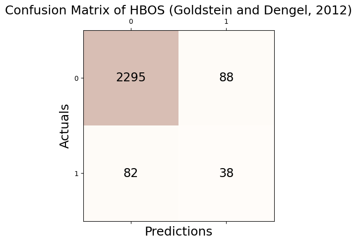
Accuracy: 0.932
Precision: 0.302
Recall: 0.317
F1 Score: 0.309# check
print('Accuracy(TP + TN / TP + TN + FP + FN): %.3f' % round((_conf.conf_matrix[0][0] + _conf.conf_matrix[1][1])/1000,3))
print('Precision(TP / TP + FP): %.3f' % round(_conf.conf_matrix[1][1]/(_conf.conf_matrix[0][1] + _conf.conf_matrix[1][1]),3))
print('Recall(TP / TP + FN): %.3f' % round(_conf.conf_matrix[1][1]/(_conf.conf_matrix[1][0] + _conf.conf_matrix[1][1]),3))
print('F1 Score(2*precision*recall/precision+recall): %.3f' % round((2*(_conf.conf_matrix[1][1]/(_conf.conf_matrix[0][1] + _conf.conf_matrix[1][1]))*(_conf.conf_matrix[1][1]/(_conf.conf_matrix[1][0] + _conf.conf_matrix[1][1]))) / (_conf.conf_matrix[1][1]/(_conf.conf_matrix[0][1] + _conf.conf_matrix[1][1]) + _conf.conf_matrix[1][1]/(_conf.conf_matrix[1][0] + _conf.conf_matrix[1][1])),3))Accuracy(TP + TN / TP + TN + FP + FN): 2.333
Precision(TP / TP + FP): 0.302
Recall(TP / TP + FN): 0.317
F1 Score(2*precision*recall/precision+recall): 0.309fpr, tpr, thresh = roc_curve(outlier_true_bunny,clf.decision_function(_df[['x', 'y','fnoise']]))auc(fpr, tpr)0.8591918450132886tab_bunny = pd.concat([tab_bunny,
pd.DataFrame({"Accuracy":[_conf.acc],"Precision":[_conf.pre],"Recall":[_conf.rec],"F1":[_conf.f1],"AUC":[auc(fpr, tpr)]},index = [_conf.name])]);tab_bunny| Accuracy | Precision | Recall | F1 | AUC | |
|---|---|---|---|---|---|
| GODE | 0.988414 | 0.864000 | 0.900000 | 0.881633 | 0.996227 |
| LOF (Breunig et al., 2000) | 0.943268 | 0.412698 | 0.433333 | 0.422764 | 0.819111 |
| kNN (Ramaswamy et al., 2000) | 0.987215 | 0.849206 | 0.891667 | 0.869919 | 0.984438 |
| CBLOF (He et al., 2003) | 0.980823 | 0.785714 | 0.825000 | 0.804878 | 0.970545 |
| OCSVM (Sch ̈olkopf et al., 2001) | 0.916500 | 0.322709 | 0.675000 | 0.436658 | 0.857550 |
| MCD (Hardin and Rocke, 2004) | 0.978426 | 0.761905 | 0.800000 | 0.780488 | 0.972398 |
| Feature Bagging (Lazarevic and Kumar, 2005) | 0.948861 | 0.468254 | 0.491667 | 0.479675 | 0.833809 |
| ABOD (Kriegel et al., 2008) | 0.979225 | 0.769841 | 0.808333 | 0.788618 | 0.971576 |
| Isolation Forest (Liu et al., 2008) | 0.972034 | 0.698413 | 0.733333 | 0.715447 | 0.967954 |
| HBOS (Goldstein and Dengel, 2012) | 0.932082 | 0.301587 | 0.316667 | 0.308943 | 0.859192 |
SOS_Bunny
np.random.seed(77)
clf = SOS(contamination=0.05)
clf.fit(_df[['x', 'y','fnoise']])SOS(contamination=0.05, eps=1e-05, metric='euclidean', perplexity=4.5)outlier_SOS_one = list(clf.labels_)_conf = Conf_matrx(outlier_true_bunny,outlier_SOS_one)
_conf.conf("SOS (Janssens et al., 2012)")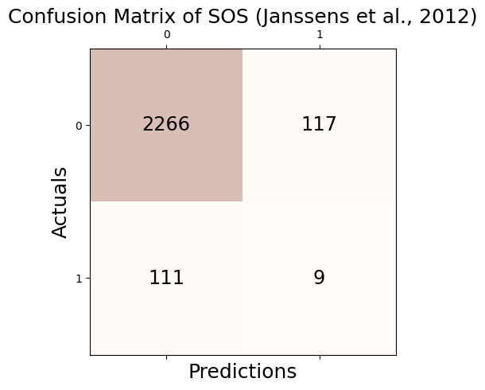
Accuracy: 0.909
Precision: 0.071
Recall: 0.075
F1 Score: 0.073# check
print('Accuracy(TP + TN / TP + TN + FP + FN): %.3f' % round((_conf.conf_matrix[0][0] + _conf.conf_matrix[1][1])/1000,3))
print('Precision(TP / TP + FP): %.3f' % round(_conf.conf_matrix[1][1]/(_conf.conf_matrix[0][1] + _conf.conf_matrix[1][1]),3))
print('Recall(TP / TP + FN): %.3f' % round(_conf.conf_matrix[1][1]/(_conf.conf_matrix[1][0] + _conf.conf_matrix[1][1]),3))
print('F1 Score(2*precision*recall/precision+recall): %.3f' % round((2*(_conf.conf_matrix[1][1]/(_conf.conf_matrix[0][1] + _conf.conf_matrix[1][1]))*(_conf.conf_matrix[1][1]/(_conf.conf_matrix[1][0] + _conf.conf_matrix[1][1]))) / (_conf.conf_matrix[1][1]/(_conf.conf_matrix[0][1] + _conf.conf_matrix[1][1]) + _conf.conf_matrix[1][1]/(_conf.conf_matrix[1][0] + _conf.conf_matrix[1][1])),3))Accuracy(TP + TN / TP + TN + FP + FN): 2.275
Precision(TP / TP + FP): 0.071
Recall(TP / TP + FN): 0.075
F1 Score(2*precision*recall/precision+recall): 0.073fpr, tpr, thresh = roc_curve(outlier_true_bunny,clf.decision_function(_df[['x', 'y','fnoise']]))auc(fpr, tpr)0.5574311092460484tab_bunny = pd.concat([tab_bunny,
pd.DataFrame({"Accuracy":[_conf.acc],"Precision":[_conf.pre],"Recall":[_conf.rec],"F1":[_conf.f1],"AUC":[auc(fpr, tpr)]},index = [_conf.name])]);tab_bunny| Accuracy | Precision | Recall | F1 | AUC | |
|---|---|---|---|---|---|
| GODE | 0.988414 | 0.864000 | 0.900000 | 0.881633 | 0.996227 |
| LOF (Breunig et al., 2000) | 0.943268 | 0.412698 | 0.433333 | 0.422764 | 0.819111 |
| kNN (Ramaswamy et al., 2000) | 0.987215 | 0.849206 | 0.891667 | 0.869919 | 0.984438 |
| CBLOF (He et al., 2003) | 0.980823 | 0.785714 | 0.825000 | 0.804878 | 0.970545 |
| OCSVM (Sch ̈olkopf et al., 2001) | 0.916500 | 0.322709 | 0.675000 | 0.436658 | 0.857550 |
| MCD (Hardin and Rocke, 2004) | 0.978426 | 0.761905 | 0.800000 | 0.780488 | 0.972398 |
| Feature Bagging (Lazarevic and Kumar, 2005) | 0.948861 | 0.468254 | 0.491667 | 0.479675 | 0.833809 |
| ABOD (Kriegel et al., 2008) | 0.979225 | 0.769841 | 0.808333 | 0.788618 | 0.971576 |
| Isolation Forest (Liu et al., 2008) | 0.972034 | 0.698413 | 0.733333 | 0.715447 | 0.967954 |
| HBOS (Goldstein and Dengel, 2012) | 0.932082 | 0.301587 | 0.316667 | 0.308943 | 0.859192 |
| SOS (Janssens et al., 2012) | 0.908909 | 0.071429 | 0.075000 | 0.073171 | 0.557431 |
SO_GAAL_Bunny
np.random.seed(77)
clf = SO_GAAL(contamination=0.05)
clf.fit(_df[['x', 'y','fnoise']])/home/csy/anaconda3/envs/pygsp/lib/python3.10/site-packages/keras/src/optimizers/legacy/gradient_descent.py:114: UserWarning: The `lr` argument is deprecated, use `learning_rate` instead.
super().__init__(name, **kwargs)Epoch 1 of 60
Testing for epoch 1 index 1:
Testing for epoch 1 index 2:
Testing for epoch 1 index 3:
Testing for epoch 1 index 4:
Testing for epoch 1 index 5:
Epoch 2 of 60
Testing for epoch 2 index 1:
Testing for epoch 2 index 2:
Testing for epoch 2 index 3:
Testing for epoch 2 index 4:
Testing for epoch 2 index 5:
Epoch 3 of 60
Testing for epoch 3 index 1:
Testing for epoch 3 index 2:
Testing for epoch 3 index 3:
Testing for epoch 3 index 4:
Testing for epoch 3 index 5:
Epoch 4 of 60
Testing for epoch 4 index 1:
Testing for epoch 4 index 2:
Testing for epoch 4 index 3:
Testing for epoch 4 index 4:
Testing for epoch 4 index 5:
Epoch 5 of 60
Testing for epoch 5 index 1:
Testing for epoch 5 index 2:
Testing for epoch 5 index 3:
Testing for epoch 5 index 4:
Testing for epoch 5 index 5:
Epoch 6 of 60
Testing for epoch 6 index 1:
Testing for epoch 6 index 2:
Testing for epoch 6 index 3:
Testing for epoch 6 index 4:
Testing for epoch 6 index 5:
Epoch 7 of 60
Testing for epoch 7 index 1:
Testing for epoch 7 index 2:
Testing for epoch 7 index 3:
Testing for epoch 7 index 4:
Testing for epoch 7 index 5:
Epoch 8 of 60
Testing for epoch 8 index 1:
Testing for epoch 8 index 2:
Testing for epoch 8 index 3:
Testing for epoch 8 index 4:
Testing for epoch 8 index 5:
Epoch 9 of 60
Testing for epoch 9 index 1:
Testing for epoch 9 index 2:
Testing for epoch 9 index 3:
Testing for epoch 9 index 4:
Testing for epoch 9 index 5:
Epoch 10 of 60
Testing for epoch 10 index 1:
Testing for epoch 10 index 2:
Testing for epoch 10 index 3:
Testing for epoch 10 index 4:
Testing for epoch 10 index 5:
Epoch 11 of 60
Testing for epoch 11 index 1:
Testing for epoch 11 index 2:
Testing for epoch 11 index 3:
Testing for epoch 11 index 4:
Testing for epoch 11 index 5:
Epoch 12 of 60
Testing for epoch 12 index 1:
Testing for epoch 12 index 2:
Testing for epoch 12 index 3:
Testing for epoch 12 index 4:
Testing for epoch 12 index 5:
Epoch 13 of 60
Testing for epoch 13 index 1:
Testing for epoch 13 index 2:
Testing for epoch 13 index 3:
Testing for epoch 13 index 4:
Testing for epoch 13 index 5:
Epoch 14 of 60
Testing for epoch 14 index 1:
Testing for epoch 14 index 2:
Testing for epoch 14 index 3:
Testing for epoch 14 index 4:
Testing for epoch 14 index 5:
Epoch 15 of 60
Testing for epoch 15 index 1:
Testing for epoch 15 index 2:
Testing for epoch 15 index 3:
Testing for epoch 15 index 4:
Testing for epoch 15 index 5:
Epoch 16 of 60
Testing for epoch 16 index 1:
Testing for epoch 16 index 2:
Testing for epoch 16 index 3:
Testing for epoch 16 index 4:
Testing for epoch 16 index 5:
Epoch 17 of 60
Testing for epoch 17 index 1:
Testing for epoch 17 index 2:
Testing for epoch 17 index 3:
Testing for epoch 17 index 4:
Testing for epoch 17 index 5:
Epoch 18 of 60
Testing for epoch 18 index 1:
Testing for epoch 18 index 2:
Testing for epoch 18 index 3:
Testing for epoch 18 index 4:
Testing for epoch 18 index 5:
Epoch 19 of 60
Testing for epoch 19 index 1:
Testing for epoch 19 index 2:
Testing for epoch 19 index 3:
Testing for epoch 19 index 4:
Testing for epoch 19 index 5:
Epoch 20 of 60
Testing for epoch 20 index 1:
Testing for epoch 20 index 2:
Testing for epoch 20 index 3:
Testing for epoch 20 index 4:
Testing for epoch 20 index 5:
Epoch 21 of 60
Testing for epoch 21 index 1:
Testing for epoch 21 index 2:
Testing for epoch 21 index 3:
Testing for epoch 21 index 4:
Testing for epoch 21 index 5:
Epoch 22 of 60
Testing for epoch 22 index 1:
16/16 [==============================] - 0s 2ms/step - loss: 1.8892
Testing for epoch 22 index 2:
16/16 [==============================] - 0s 2ms/step - loss: 1.8773
Testing for epoch 22 index 3:
16/16 [==============================] - 0s 968us/step - loss: 1.8953
Testing for epoch 22 index 4:
16/16 [==============================] - 0s 1ms/step - loss: 1.8628
Testing for epoch 22 index 5:
16/16 [==============================] - 0s 841us/step - loss: 1.9471
Epoch 23 of 60
Testing for epoch 23 index 1:
16/16 [==============================] - 0s 2ms/step - loss: 1.9137
Testing for epoch 23 index 2:
16/16 [==============================] - 0s 854us/step - loss: 1.9870
Testing for epoch 23 index 3:
16/16 [==============================] - 0s 2ms/step - loss: 1.9878
Testing for epoch 23 index 4:
16/16 [==============================] - 0s 1ms/step - loss: 1.9311
Testing for epoch 23 index 5:
16/16 [==============================] - 0s 2ms/step - loss: 1.9295
Epoch 24 of 60
Testing for epoch 24 index 1:
16/16 [==============================] - 0s 888us/step - loss: 1.9993
Testing for epoch 24 index 2:
16/16 [==============================] - 0s 807us/step - loss: 1.9489
Testing for epoch 24 index 3:
16/16 [==============================] - 0s 1ms/step - loss: 1.9849
Testing for epoch 24 index 4:
16/16 [==============================] - 0s 813us/step - loss: 1.9797
Testing for epoch 24 index 5:
16/16 [==============================] - 0s 2ms/step - loss: 1.9702
Epoch 25 of 60
Testing for epoch 25 index 1:
16/16 [==============================] - 0s 869us/step - loss: 2.0650
Testing for epoch 25 index 2:
16/16 [==============================] - 0s 798us/step - loss: 2.0078
Testing for epoch 25 index 3:
16/16 [==============================] - 0s 1ms/step - loss: 2.0171
Testing for epoch 25 index 4:
16/16 [==============================] - 0s 922us/step - loss: 2.0466
Testing for epoch 25 index 5:
16/16 [==============================] - 0s 2ms/step - loss: 2.0635
Epoch 26 of 60
Testing for epoch 26 index 1:
16/16 [==============================] - 0s 956us/step - loss: 2.0758
Testing for epoch 26 index 2:
16/16 [==============================] - 0s 834us/step - loss: 2.0865
Testing for epoch 26 index 3:
16/16 [==============================] - 0s 2ms/step - loss: 2.0039
Testing for epoch 26 index 4:
16/16 [==============================] - 0s 2ms/step - loss: 2.0798
Testing for epoch 26 index 5:
16/16 [==============================] - 0s 2ms/step - loss: 2.0561
Epoch 27 of 60
Testing for epoch 27 index 1:
16/16 [==============================] - 0s 950us/step - loss: 2.1265
Testing for epoch 27 index 2:
16/16 [==============================] - 0s 801us/step - loss: 2.0775
Testing for epoch 27 index 3:
16/16 [==============================] - 0s 792us/step - loss: 2.0951
Testing for epoch 27 index 4:
16/16 [==============================] - 0s 805us/step - loss: 2.1185
Testing for epoch 27 index 5:
16/16 [==============================] - 0s 2ms/step - loss: 2.1396
Epoch 28 of 60
Testing for epoch 28 index 1:
16/16 [==============================] - 0s 807us/step - loss: 2.1326
Testing for epoch 28 index 2:
16/16 [==============================] - 0s 2ms/step - loss: 2.1569
Testing for epoch 28 index 3:
16/16 [==============================] - 0s 849us/step - loss: 2.0954
Testing for epoch 28 index 4:
16/16 [==============================] - 0s 2ms/step - loss: 2.0795
Testing for epoch 28 index 5:
16/16 [==============================] - 0s 1ms/step - loss: 2.1101
Epoch 29 of 60
Testing for epoch 29 index 1:
16/16 [==============================] - 0s 1ms/step - loss: 2.1282
Testing for epoch 29 index 2:
16/16 [==============================] - 0s 830us/step - loss: 2.0985
Testing for epoch 29 index 3:
16/16 [==============================] - 0s 2ms/step - loss: 2.0946
Testing for epoch 29 index 4:
16/16 [==============================] - 0s 1ms/step - loss: 2.0580
Testing for epoch 29 index 5:
16/16 [==============================] - 0s 1ms/step - loss: 2.0928
Epoch 30 of 60
Testing for epoch 30 index 1:
16/16 [==============================] - 0s 2ms/step - loss: 2.1236
Testing for epoch 30 index 2:
16/16 [==============================] - 0s 800us/step - loss: 2.1554
Testing for epoch 30 index 3:
16/16 [==============================] - 0s 1ms/step - loss: 2.1987
Testing for epoch 30 index 4:
16/16 [==============================] - 0s 793us/step - loss: 2.1537
Testing for epoch 30 index 5:
16/16 [==============================] - 0s 870us/step - loss: 2.1312
Epoch 31 of 60
Testing for epoch 31 index 1:
16/16 [==============================] - 0s 1ms/step - loss: 2.1679
Testing for epoch 31 index 2:
16/16 [==============================] - 0s 2ms/step - loss: 2.2280
Testing for epoch 31 index 3:
16/16 [==============================] - 0s 834us/step - loss: 2.1869
Testing for epoch 31 index 4:
16/16 [==============================] - 0s 808us/step - loss: 2.1695
Testing for epoch 31 index 5:
16/16 [==============================] - 0s 2ms/step - loss: 2.2448
Epoch 32 of 60
Testing for epoch 32 index 1:
16/16 [==============================] - 0s 2ms/step - loss: 2.1599
Testing for epoch 32 index 2:
16/16 [==============================] - 0s 1ms/step - loss: 2.2401
Testing for epoch 32 index 3:
16/16 [==============================] - 0s 755us/step - loss: 2.2098
Testing for epoch 32 index 4:
16/16 [==============================] - 0s 840us/step - loss: 2.2194
Testing for epoch 32 index 5:
16/16 [==============================] - 0s 2ms/step - loss: 2.2362
Epoch 33 of 60
Testing for epoch 33 index 1:
16/16 [==============================] - 0s 793us/step - loss: 2.2603
Testing for epoch 33 index 2:
16/16 [==============================] - 0s 939us/step - loss: 2.1833
Testing for epoch 33 index 3:
16/16 [==============================] - 0s 2ms/step - loss: 2.2989
Testing for epoch 33 index 4:
16/16 [==============================] - 0s 823us/step - loss: 2.2219
Testing for epoch 33 index 5:
16/16 [==============================] - 0s 801us/step - loss: 2.2803
Epoch 34 of 60
Testing for epoch 34 index 1:
16/16 [==============================] - 0s 784us/step - loss: 2.2164
Testing for epoch 34 index 2:
16/16 [==============================] - 0s 2ms/step - loss: 2.2358
Testing for epoch 34 index 3:
16/16 [==============================] - 0s 2ms/step - loss: 2.1974
Testing for epoch 34 index 4:
16/16 [==============================] - 0s 889us/step - loss: 2.2659
Testing for epoch 34 index 5:
16/16 [==============================] - 0s 2ms/step - loss: 2.2727
Epoch 35 of 60
Testing for epoch 35 index 1:
16/16 [==============================] - 0s 2ms/step - loss: 2.2802
Testing for epoch 35 index 2:
16/16 [==============================] - 0s 2ms/step - loss: 2.2867
Testing for epoch 35 index 3:
16/16 [==============================] - 0s 1ms/step - loss: 2.2722
Testing for epoch 35 index 4:
16/16 [==============================] - 0s 857us/step - loss: 2.2683
Testing for epoch 35 index 5:
16/16 [==============================] - 0s 883us/step - loss: 2.3110
Epoch 36 of 60
Testing for epoch 36 index 1:
16/16 [==============================] - 0s 781us/step - loss: 2.2822
Testing for epoch 36 index 2:
16/16 [==============================] - 0s 2ms/step - loss: 2.3013
Testing for epoch 36 index 3:
16/16 [==============================] - 0s 2ms/step - loss: 2.3260
Testing for epoch 36 index 4:
16/16 [==============================] - 0s 911us/step - loss: 2.3637
Testing for epoch 36 index 5:
16/16 [==============================] - 0s 814us/step - loss: 2.2913
Epoch 37 of 60
Testing for epoch 37 index 1:
16/16 [==============================] - 0s 814us/step - loss: 2.3133
Testing for epoch 37 index 2:
16/16 [==============================] - 0s 1ms/step - loss: 2.2731
Testing for epoch 37 index 3:
16/16 [==============================] - 0s 971us/step - loss: 2.3091
Testing for epoch 37 index 4:
16/16 [==============================] - 0s 2ms/step - loss: 2.3101
Testing for epoch 37 index 5:
16/16 [==============================] - 0s 2ms/step - loss: 2.2987
Epoch 38 of 60
Testing for epoch 38 index 1:
16/16 [==============================] - 0s 1ms/step - loss: 2.3002
Testing for epoch 38 index 2:
16/16 [==============================] - 0s 1ms/step - loss: 2.2867
Testing for epoch 38 index 3:
16/16 [==============================] - 0s 843us/step - loss: 2.2980
Testing for epoch 38 index 4:
16/16 [==============================] - 0s 806us/step - loss: 2.3380
Testing for epoch 38 index 5:
16/16 [==============================] - 0s 1ms/step - loss: 2.2815
Epoch 39 of 60
Testing for epoch 39 index 1:
16/16 [==============================] - 0s 1ms/step - loss: 2.3563
Testing for epoch 39 index 2:
16/16 [==============================] - 0s 2ms/step - loss: 2.3031
Testing for epoch 39 index 3:
16/16 [==============================] - 0s 868us/step - loss: 2.3611
Testing for epoch 39 index 4:
16/16 [==============================] - 0s 1ms/step - loss: 2.3812
Testing for epoch 39 index 5:
16/16 [==============================] - 0s 2ms/step - loss: 2.3761
Epoch 40 of 60
Testing for epoch 40 index 1:
16/16 [==============================] - 0s 838us/step - loss: 2.3955
Testing for epoch 40 index 2:
16/16 [==============================] - 0s 796us/step - loss: 2.4065
Testing for epoch 40 index 3:
16/16 [==============================] - 0s 1ms/step - loss: 2.4450
Testing for epoch 40 index 4:
16/16 [==============================] - 0s 840us/step - loss: 2.3389
Testing for epoch 40 index 5:
16/16 [==============================] - 0s 2ms/step - loss: 2.3475
Epoch 41 of 60
Testing for epoch 41 index 1:
16/16 [==============================] - 0s 821us/step - loss: 2.3851
Testing for epoch 41 index 2:
16/16 [==============================] - 0s 2ms/step - loss: 2.3873
Testing for epoch 41 index 3:
16/16 [==============================] - 0s 2ms/step - loss: 2.3659
Testing for epoch 41 index 4:
16/16 [==============================] - 0s 2ms/step - loss: 2.3792
Testing for epoch 41 index 5:
16/16 [==============================] - 0s 1ms/step - loss: 2.3896
Epoch 42 of 60
Testing for epoch 42 index 1:
16/16 [==============================] - 0s 985us/step - loss: 2.4595
Testing for epoch 42 index 2:
16/16 [==============================] - 0s 821us/step - loss: 2.4335
Testing for epoch 42 index 3:
16/16 [==============================] - 0s 1ms/step - loss: 2.3803
Testing for epoch 42 index 4:
16/16 [==============================] - 0s 827us/step - loss: 2.3513
Testing for epoch 42 index 5:
16/16 [==============================] - 0s 809us/step - loss: 2.4367
Epoch 43 of 60
Testing for epoch 43 index 1:
16/16 [==============================] - 0s 2ms/step - loss: 2.3864
Testing for epoch 43 index 2:
16/16 [==============================] - 0s 795us/step - loss: 2.3912
Testing for epoch 43 index 3:
16/16 [==============================] - 0s 2ms/step - loss: 2.4194
Testing for epoch 43 index 4:
16/16 [==============================] - 0s 799us/step - loss: 2.5205
Testing for epoch 43 index 5:
16/16 [==============================] - 0s 815us/step - loss: 2.4733
Epoch 44 of 60
Testing for epoch 44 index 1:
16/16 [==============================] - 0s 2ms/step - loss: 2.4465
Testing for epoch 44 index 2:
16/16 [==============================] - 0s 1ms/step - loss: 2.4298
Testing for epoch 44 index 3:
16/16 [==============================] - 0s 2ms/step - loss: 2.4497
Testing for epoch 44 index 4:
16/16 [==============================] - 0s 821us/step - loss: 2.4719
Testing for epoch 44 index 5:
16/16 [==============================] - 0s 2ms/step - loss: 2.4463
Epoch 45 of 60
Testing for epoch 45 index 1:
16/16 [==============================] - 0s 824us/step - loss: 2.5313
Testing for epoch 45 index 2:
16/16 [==============================] - 0s 2ms/step - loss: 2.4766
Testing for epoch 45 index 3:
16/16 [==============================] - 0s 956us/step - loss: 2.4820
Testing for epoch 45 index 4:
16/16 [==============================] - 0s 2ms/step - loss: 2.4411
Testing for epoch 45 index 5:
16/16 [==============================] - 0s 813us/step - loss: 2.4633
Epoch 46 of 60
Testing for epoch 46 index 1:
16/16 [==============================] - 0s 2ms/step - loss: 2.4844
Testing for epoch 46 index 2:
16/16 [==============================] - 0s 2ms/step - loss: 2.4777
Testing for epoch 46 index 3:
16/16 [==============================] - 0s 826us/step - loss: 2.4881
Testing for epoch 46 index 4:
16/16 [==============================] - 0s 800us/step - loss: 2.5910
Testing for epoch 46 index 5:
16/16 [==============================] - 0s 810us/step - loss: 2.3987
Epoch 47 of 60
Testing for epoch 47 index 1:
16/16 [==============================] - 0s 2ms/step - loss: 2.5073
Testing for epoch 47 index 2:
16/16 [==============================] - 0s 2ms/step - loss: 2.4767
Testing for epoch 47 index 3:
16/16 [==============================] - 0s 1ms/step - loss: 2.5076
Testing for epoch 47 index 4:
16/16 [==============================] - 0s 820us/step - loss: 2.4839
Testing for epoch 47 index 5:
16/16 [==============================] - 0s 822us/step - loss: 2.4424
Epoch 48 of 60
Testing for epoch 48 index 1:
16/16 [==============================] - 0s 2ms/step - loss: 2.4959
Testing for epoch 48 index 2:
16/16 [==============================] - 0s 2ms/step - loss: 2.5135
Testing for epoch 48 index 3:
16/16 [==============================] - 0s 2ms/step - loss: 2.4452
Testing for epoch 48 index 4:
16/16 [==============================] - 0s 2ms/step - loss: 2.5420
Testing for epoch 48 index 5:
16/16 [==============================] - 0s 812us/step - loss: 2.5427
Epoch 49 of 60
Testing for epoch 49 index 1:
16/16 [==============================] - 0s 2ms/step - loss: 2.4873
Testing for epoch 49 index 2:
16/16 [==============================] - 0s 2ms/step - loss: 2.5430
Testing for epoch 49 index 3:
16/16 [==============================] - 0s 838us/step - loss: 2.4718
Testing for epoch 49 index 4:
16/16 [==============================] - 0s 2ms/step - loss: 2.5524
Testing for epoch 49 index 5:
16/16 [==============================] - 0s 2ms/step - loss: 2.4794
Epoch 50 of 60
Testing for epoch 50 index 1:
16/16 [==============================] - 0s 2ms/step - loss: 2.5831
Testing for epoch 50 index 2:
16/16 [==============================] - 0s 2ms/step - loss: 2.5607
Testing for epoch 50 index 3:
16/16 [==============================] - 0s 835us/step - loss: 2.5869
Testing for epoch 50 index 4:
16/16 [==============================] - 0s 820us/step - loss: 2.5292
Testing for epoch 50 index 5:
16/16 [==============================] - 0s 818us/step - loss: 2.5355
Epoch 51 of 60
Testing for epoch 51 index 1:
16/16 [==============================] - 0s 794us/step - loss: 2.6074
Testing for epoch 51 index 2:
16/16 [==============================] - 0s 2ms/step - loss: 2.5498
Testing for epoch 51 index 3:
16/16 [==============================] - 0s 798us/step - loss: 2.5585
Testing for epoch 51 index 4:
16/16 [==============================] - 0s 1ms/step - loss: 2.5851
Testing for epoch 51 index 5:
16/16 [==============================] - 0s 810us/step - loss: 2.5378
Epoch 52 of 60
Testing for epoch 52 index 1:
16/16 [==============================] - 0s 805us/step - loss: 2.5224
Testing for epoch 52 index 2:
16/16 [==============================] - 0s 2ms/step - loss: 2.5417
Testing for epoch 52 index 3:
16/16 [==============================] - 0s 2ms/step - loss: 2.5603
Testing for epoch 52 index 4:
16/16 [==============================] - 0s 2ms/step - loss: 2.5464
Testing for epoch 52 index 5:
16/16 [==============================] - 0s 1ms/step - loss: 2.5803
Epoch 53 of 60
Testing for epoch 53 index 1:
16/16 [==============================] - 0s 819us/step - loss: 2.5619
Testing for epoch 53 index 2:
16/16 [==============================] - 0s 797us/step - loss: 2.5412
Testing for epoch 53 index 3:
16/16 [==============================] - 0s 1ms/step - loss: 2.6601
Testing for epoch 53 index 4:
16/16 [==============================] - 0s 813us/step - loss: 2.4935
Testing for epoch 53 index 5:
16/16 [==============================] - 0s 1ms/step - loss: 2.5908
Epoch 54 of 60
Testing for epoch 54 index 1:
16/16 [==============================] - 0s 839us/step - loss: 2.5420
Testing for epoch 54 index 2:
16/16 [==============================] - 0s 2ms/step - loss: 2.6080
Testing for epoch 54 index 3:
16/16 [==============================] - 0s 935us/step - loss: 2.5973
Testing for epoch 54 index 4:
16/16 [==============================] - 0s 820us/step - loss: 2.6289
Testing for epoch 54 index 5:
16/16 [==============================] - 0s 811us/step - loss: 2.6870
Epoch 55 of 60
Testing for epoch 55 index 1:
16/16 [==============================] - 0s 2ms/step - loss: 2.5925
Testing for epoch 55 index 2:
16/16 [==============================] - 0s 2ms/step - loss: 2.6485
Testing for epoch 55 index 3:
16/16 [==============================] - 0s 2ms/step - loss: 2.6448
Testing for epoch 55 index 4:
16/16 [==============================] - 0s 1ms/step - loss: 2.5929
Testing for epoch 55 index 5:
16/16 [==============================] - 0s 2ms/step - loss: 2.5843
Epoch 56 of 60
Testing for epoch 56 index 1:
16/16 [==============================] - 0s 2ms/step - loss: 2.6255
Testing for epoch 56 index 2:
16/16 [==============================] - 0s 2ms/step - loss: 2.6109
Testing for epoch 56 index 3:
16/16 [==============================] - 0s 2ms/step - loss: 2.5776
Testing for epoch 56 index 4:
16/16 [==============================] - 0s 1ms/step - loss: 2.5939
Testing for epoch 56 index 5:
16/16 [==============================] - 0s 2ms/step - loss: 2.6101
Epoch 57 of 60
Testing for epoch 57 index 1:
16/16 [==============================] - 0s 869us/step - loss: 2.6185
Testing for epoch 57 index 2:
16/16 [==============================] - 0s 811us/step - loss: 2.5944
Testing for epoch 57 index 3:
16/16 [==============================] - 0s 845us/step - loss: 2.6853
Testing for epoch 57 index 4:
16/16 [==============================] - 0s 808us/step - loss: 2.6887
Testing for epoch 57 index 5:
16/16 [==============================] - 0s 2ms/step - loss: 2.5760
Epoch 58 of 60
Testing for epoch 58 index 1:
16/16 [==============================] - 0s 2ms/step - loss: 2.7048
Testing for epoch 58 index 2:
16/16 [==============================] - 0s 939us/step - loss: 2.6857
Testing for epoch 58 index 3:
16/16 [==============================] - 0s 2ms/step - loss: 2.7510
Testing for epoch 58 index 4:
16/16 [==============================] - 0s 2ms/step - loss: 2.6191
Testing for epoch 58 index 5:
16/16 [==============================] - 0s 812us/step - loss: 2.6330
Epoch 59 of 60
Testing for epoch 59 index 1:
16/16 [==============================] - 0s 2ms/step - loss: 2.6354
Testing for epoch 59 index 2:
16/16 [==============================] - 0s 806us/step - loss: 2.6133
Testing for epoch 59 index 3:
16/16 [==============================] - 0s 895us/step - loss: 2.6335
Testing for epoch 59 index 4:
16/16 [==============================] - 0s 2ms/step - loss: 2.6475
Testing for epoch 59 index 5:
16/16 [==============================] - 0s 2ms/step - loss: 2.6326
Epoch 60 of 60
Testing for epoch 60 index 1:
16/16 [==============================] - 0s 2ms/step - loss: 2.7069
Testing for epoch 60 index 2:
16/16 [==============================] - 0s 2ms/step - loss: 2.7578
Testing for epoch 60 index 3:
16/16 [==============================] - 0s 2ms/step - loss: 2.7084
Testing for epoch 60 index 4:
16/16 [==============================] - 0s 2ms/step - loss: 2.6440
Testing for epoch 60 index 5:
16/16 [==============================] - 0s 914us/step - loss: 2.6770
79/79 [==============================] - 0s 732us/stepSO_GAAL(contamination=0.05, lr_d=0.01, lr_g=0.0001, momentum=0.9,
stop_epochs=20)outlier_SO_GAAL_one = list(clf.labels_)_conf = Conf_matrx(outlier_true_bunny,outlier_SO_GAAL_one)
_conf.conf("SO-GAAL (Liu et al., 2019)")Accuracy: 0.952
Precision: 0.000
Recall: 0.000
F1 Score: 0.000/home/csy/anaconda3/envs/pygsp/lib/python3.10/site-packages/sklearn/metrics/_classification.py:1469: UndefinedMetricWarning: Precision is ill-defined and being set to 0.0 due to no predicted samples. Use `zero_division` parameter to control this behavior.
_warn_prf(average, modifier, msg_start, len(result))# check
print('Accuracy(TP + TN / TP + TN + FP + FN): %.3f' % round((_conf.conf_matrix[0][0] + _conf.conf_matrix[1][1])/1000,3))
print('Precision(TP / TP + FP): %.3f' % round(_conf.conf_matrix[1][1]/(_conf.conf_matrix[0][1] + _conf.conf_matrix[1][1]),3))
print('Recall(TP / TP + FN): %.3f' % round(_conf.conf_matrix[1][1]/(_conf.conf_matrix[1][0] + _conf.conf_matrix[1][1]),3))
print('F1 Score(2*precision*recall/precision+recall): %.3f' % round((2*(_conf.conf_matrix[1][1]/(_conf.conf_matrix[0][1] + _conf.conf_matrix[1][1]))*(_conf.conf_matrix[1][1]/(_conf.conf_matrix[1][0] + _conf.conf_matrix[1][1]))) / (_conf.conf_matrix[1][1]/(_conf.conf_matrix[0][1] + _conf.conf_matrix[1][1]) + _conf.conf_matrix[1][1]/(_conf.conf_matrix[1][0] + _conf.conf_matrix[1][1])),3))Accuracy(TP + TN / TP + TN + FP + FN): 2.383
Precision(TP / TP + FP): nan
Recall(TP / TP + FN): 0.000
F1 Score(2*precision*recall/precision+recall): nan/tmp/ipykernel_3852735/4166638268.py:3: RuntimeWarning: invalid value encountered in long_scalars
print('Precision(TP / TP + FP): %.3f' % round(_conf.conf_matrix[1][1]/(_conf.conf_matrix[0][1] + _conf.conf_matrix[1][1]),3))
/tmp/ipykernel_3852735/4166638268.py:5: RuntimeWarning: invalid value encountered in long_scalars
print('F1 Score(2*precision*recall/precision+recall): %.3f' % round((2*(_conf.conf_matrix[1][1]/(_conf.conf_matrix[0][1] + _conf.conf_matrix[1][1]))*(_conf.conf_matrix[1][1]/(_conf.conf_matrix[1][0] + _conf.conf_matrix[1][1]))) / (_conf.conf_matrix[1][1]/(_conf.conf_matrix[0][1] + _conf.conf_matrix[1][1]) + _conf.conf_matrix[1][1]/(_conf.conf_matrix[1][0] + _conf.conf_matrix[1][1])),3))fpr, tpr, thresh = roc_curve(outlier_true_bunny,clf.decision_function(_df[['x', 'y','fnoise']]))79/79 [==============================] - 0s 527us/stepauc(fpr, tpr)0.6730102112183523tab_bunny = pd.concat([tab_bunny,
pd.DataFrame({"Accuracy":[_conf.acc],"Precision":[_conf.pre],"Recall":[_conf.rec],"F1":[_conf.f1],"AUC":[auc(fpr, tpr)]},index = [_conf.name])]);tab_bunny| Accuracy | Precision | Recall | F1 | AUC | |
|---|---|---|---|---|---|
| GODE | 0.988414 | 0.864000 | 0.900000 | 0.881633 | 0.996227 |
| LOF (Breunig et al., 2000) | 0.943268 | 0.412698 | 0.433333 | 0.422764 | 0.819111 |
| kNN (Ramaswamy et al., 2000) | 0.987215 | 0.849206 | 0.891667 | 0.869919 | 0.984438 |
| CBLOF (He et al., 2003) | 0.980823 | 0.785714 | 0.825000 | 0.804878 | 0.970545 |
| OCSVM (Sch ̈olkopf et al., 2001) | 0.916500 | 0.322709 | 0.675000 | 0.436658 | 0.857550 |
| MCD (Hardin and Rocke, 2004) | 0.978426 | 0.761905 | 0.800000 | 0.780488 | 0.972398 |
| Feature Bagging (Lazarevic and Kumar, 2005) | 0.948861 | 0.468254 | 0.491667 | 0.479675 | 0.833809 |
| ABOD (Kriegel et al., 2008) | 0.979225 | 0.769841 | 0.808333 | 0.788618 | 0.971576 |
| Isolation Forest (Liu et al., 2008) | 0.972034 | 0.698413 | 0.733333 | 0.715447 | 0.967954 |
| HBOS (Goldstein and Dengel, 2012) | 0.932082 | 0.301587 | 0.316667 | 0.308943 | 0.859192 |
| SOS (Janssens et al., 2012) | 0.908909 | 0.071429 | 0.075000 | 0.073171 | 0.557431 |
| SO-GAAL (Liu et al., 2019) | 0.952058 | 0.000000 | 0.000000 | 0.000000 | 0.673010 |
MO_GAAL_Bunny
np.random.seed(77)
clf = MO_GAAL(contamination=0.05)
clf.fit(_df[['x', 'y','fnoise']])/home/csy/anaconda3/envs/pygsp/lib/python3.10/site-packages/keras/src/optimizers/legacy/gradient_descent.py:114: UserWarning: The `lr` argument is deprecated, use `learning_rate` instead.
super().__init__(name, **kwargs)Epoch 1 of 60
Testing for epoch 1 index 1:
79/79 [==============================] - 0s 1ms/step
Testing for epoch 1 index 2:
79/79 [==============================] - 0s 2ms/step
Testing for epoch 1 index 3:
79/79 [==============================] - 0s 1ms/step
Testing for epoch 1 index 4:
79/79 [==============================] - 0s 1ms/step
Testing for epoch 1 index 5:
79/79 [==============================] - 0s 822us/step
Epoch 2 of 60
Testing for epoch 2 index 1:
79/79 [==============================] - 0s 556us/step
Testing for epoch 2 index 2:
79/79 [==============================] - 0s 1ms/step
Testing for epoch 2 index 3:
79/79 [==============================] - 0s 1ms/step
Testing for epoch 2 index 4:
79/79 [==============================] - 0s 1ms/step
Testing for epoch 2 index 5:
79/79 [==============================] - 0s 1ms/step
Epoch 3 of 60
Testing for epoch 3 index 1:
79/79 [==============================] - 0s 1ms/step
Testing for epoch 3 index 2:
79/79 [==============================] - 0s 1ms/step
Testing for epoch 3 index 3:
79/79 [==============================] - 0s 1ms/step
Testing for epoch 3 index 4:
79/79 [==============================] - 0s 1ms/step
Testing for epoch 3 index 5:
79/79 [==============================] - 0s 1ms/step
Epoch 4 of 60
Testing for epoch 4 index 1:
79/79 [==============================] - 0s 1ms/step
Testing for epoch 4 index 2:
79/79 [==============================] - 0s 832us/step
Testing for epoch 4 index 3:
79/79 [==============================] - 0s 1ms/step
Testing for epoch 4 index 4:
79/79 [==============================] - 0s 1ms/step
Testing for epoch 4 index 5:
79/79 [==============================] - 0s 2ms/step
Epoch 5 of 60
Testing for epoch 5 index 1:
79/79 [==============================] - 0s 540us/step
Testing for epoch 5 index 2:
79/79 [==============================] - 0s 539us/step
Testing for epoch 5 index 3:
79/79 [==============================] - 0s 1ms/step
Testing for epoch 5 index 4:
79/79 [==============================] - 0s 1ms/step
Testing for epoch 5 index 5:
79/79 [==============================] - 0s 792us/step
Epoch 6 of 60
Testing for epoch 6 index 1:
79/79 [==============================] - 0s 1ms/step
Testing for epoch 6 index 2:
79/79 [==============================] - 0s 527us/step
Testing for epoch 6 index 3:
79/79 [==============================] - 0s 1ms/step
Testing for epoch 6 index 4:
79/79 [==============================] - 0s 928us/step
Testing for epoch 6 index 5:
79/79 [==============================] - 0s 1ms/step
Epoch 7 of 60
Testing for epoch 7 index 1:
79/79 [==============================] - 0s 2ms/step
Testing for epoch 7 index 2:
79/79 [==============================] - 0s 994us/step
Testing for epoch 7 index 3:
79/79 [==============================] - 0s 2ms/step
Testing for epoch 7 index 4:
79/79 [==============================] - 0s 1ms/step
Testing for epoch 7 index 5:
79/79 [==============================] - 0s 612us/step
Epoch 8 of 60
Testing for epoch 8 index 1:
79/79 [==============================] - 0s 919us/step
Testing for epoch 8 index 2:
79/79 [==============================] - 0s 990us/step
Testing for epoch 8 index 3:
79/79 [==============================] - 0s 1ms/step
Testing for epoch 8 index 4:
79/79 [==============================] - 0s 1ms/step
Testing for epoch 8 index 5:
79/79 [==============================] - 0s 901us/step
Epoch 9 of 60
Testing for epoch 9 index 1:
79/79 [==============================] - 0s 1ms/step
Testing for epoch 9 index 2:
79/79 [==============================] - 0s 567us/step
Testing for epoch 9 index 3:
79/79 [==============================] - 0s 1ms/step
Testing for epoch 9 index 4:
79/79 [==============================] - 0s 1ms/step
Testing for epoch 9 index 5:
79/79 [==============================] - 0s 568us/step
Epoch 10 of 60
Testing for epoch 10 index 1:
79/79 [==============================] - 0s 6ms/step
Testing for epoch 10 index 2:
79/79 [==============================] - 0s 534us/step
Testing for epoch 10 index 3:
79/79 [==============================] - 0s 541us/step
Testing for epoch 10 index 4:
79/79 [==============================] - 0s 1ms/step
Testing for epoch 10 index 5:
79/79 [==============================] - 0s 527us/step
Epoch 11 of 60
Testing for epoch 11 index 1:
79/79 [==============================] - 0s 1ms/step
Testing for epoch 11 index 2:
79/79 [==============================] - 0s 1ms/step
Testing for epoch 11 index 3:
79/79 [==============================] - 0s 1ms/step
Testing for epoch 11 index 4:
79/79 [==============================] - 0s 999us/step
Testing for epoch 11 index 5:
79/79 [==============================] - 0s 2ms/step
Epoch 12 of 60
Testing for epoch 12 index 1:
79/79 [==============================] - 0s 1ms/step
Testing for epoch 12 index 2:
79/79 [==============================] - 0s 2ms/step
Testing for epoch 12 index 3:
79/79 [==============================] - 0s 927us/step
Testing for epoch 12 index 4:
79/79 [==============================] - 0s 2ms/step
Testing for epoch 12 index 5:
79/79 [==============================] - 0s 544us/step
Epoch 13 of 60
Testing for epoch 13 index 1:
79/79 [==============================] - 0s 1ms/step
Testing for epoch 13 index 2:
79/79 [==============================] - 0s 999us/step
Testing for epoch 13 index 3:
79/79 [==============================] - 0s 1ms/step
Testing for epoch 13 index 4:
79/79 [==============================] - 0s 1ms/step
Testing for epoch 13 index 5:
79/79 [==============================] - 0s 538us/step
Epoch 14 of 60
Testing for epoch 14 index 1:
79/79 [==============================] - 0s 533us/step
Testing for epoch 14 index 2:
79/79 [==============================] - 0s 1ms/step
Testing for epoch 14 index 3:
79/79 [==============================] - 0s 521us/step
Testing for epoch 14 index 4:
79/79 [==============================] - 0s 1ms/step
Testing for epoch 14 index 5:
79/79 [==============================] - 0s 535us/step
Epoch 15 of 60
Testing for epoch 15 index 1:
79/79 [==============================] - 0s 1ms/step
Testing for epoch 15 index 2:
79/79 [==============================] - 0s 2ms/step
Testing for epoch 15 index 3:
79/79 [==============================] - 0s 1ms/step
Testing for epoch 15 index 4:
79/79 [==============================] - 0s 534us/step
Testing for epoch 15 index 5:
79/79 [==============================] - 0s 1ms/step
Epoch 16 of 60
Testing for epoch 16 index 1:
79/79 [==============================] - 0s 1ms/step
Testing for epoch 16 index 2:
79/79 [==============================] - 0s 1ms/step
Testing for epoch 16 index 3:
79/79 [==============================] - 0s 2ms/step
Testing for epoch 16 index 4:
79/79 [==============================] - 0s 2ms/step
Testing for epoch 16 index 5:
79/79 [==============================] - 0s 533us/step
Epoch 17 of 60
Testing for epoch 17 index 1:
79/79 [==============================] - 0s 1ms/step
Testing for epoch 17 index 2:
79/79 [==============================] - 0s 1ms/step
Testing for epoch 17 index 3:
79/79 [==============================] - 0s 532us/step
Testing for epoch 17 index 4:
79/79 [==============================] - 0s 1ms/step
Testing for epoch 17 index 5:
79/79 [==============================] - 0s 812us/step
Epoch 18 of 60
Testing for epoch 18 index 1:
79/79 [==============================] - 0s 1ms/step
Testing for epoch 18 index 2:
79/79 [==============================] - 0s 1ms/step
Testing for epoch 18 index 3:
79/79 [==============================] - 0s 1ms/step
Testing for epoch 18 index 4:
79/79 [==============================] - 0s 1ms/step
Testing for epoch 18 index 5:
79/79 [==============================] - 0s 1ms/step
Epoch 19 of 60
Testing for epoch 19 index 1:
79/79 [==============================] - 0s 989us/step
Testing for epoch 19 index 2:
79/79 [==============================] - 0s 531us/step
Testing for epoch 19 index 3:
79/79 [==============================] - 0s 969us/step
Testing for epoch 19 index 4:
79/79 [==============================] - 0s 2ms/step
Testing for epoch 19 index 5:
79/79 [==============================] - 0s 1ms/step
Epoch 20 of 60
Testing for epoch 20 index 1:
79/79 [==============================] - 0s 672us/step
Testing for epoch 20 index 2:
79/79 [==============================] - 0s 1ms/step
Testing for epoch 20 index 3:
79/79 [==============================] - 0s 1ms/step
Testing for epoch 20 index 4:
79/79 [==============================] - 0s 965us/step
Testing for epoch 20 index 5:
79/79 [==============================] - 0s 2ms/step
Epoch 21 of 60
Testing for epoch 21 index 1:
79/79 [==============================] - 0s 1ms/step
Testing for epoch 21 index 2:
79/79 [==============================] - 0s 1ms/step
16/16 [==============================] - 0s 2ms/step - loss: 0.1840
16/16 [==============================] - 0s 861us/step - loss: 1.4152
16/16 [==============================] - 0s 2ms/step - loss: 1.6292
16/16 [==============================] - 0s 2ms/step - loss: 1.6820
16/16 [==============================] - 0s 2ms/step - loss: 1.6830
16/16 [==============================] - 0s 863us/step - loss: 1.6735
16/16 [==============================] - 0s 2ms/step - loss: 1.6625
16/16 [==============================] - 0s 2ms/step - loss: 1.6544
16/16 [==============================] - 0s 2ms/step - loss: 1.6507
16/16 [==============================] - 0s 2ms/step - loss: 1.6493
Testing for epoch 21 index 3:
79/79 [==============================] - 0s 1ms/step
16/16 [==============================] - 0s 1ms/step - loss: 0.1812
16/16 [==============================] - 0s 900us/step - loss: 1.4503
16/16 [==============================] - 0s 853us/step - loss: 1.6832
16/16 [==============================] - 0s 846us/step - loss: 1.7404
16/16 [==============================] - 0s 1ms/step - loss: 1.7416
16/16 [==============================] - 0s 848us/step - loss: 1.7307
16/16 [==============================] - 0s 859us/step - loss: 1.7183
16/16 [==============================] - 0s 869us/step - loss: 1.7096
16/16 [==============================] - 0s 857us/step - loss: 1.7057
16/16 [==============================] - 0s 864us/step - loss: 1.7044
Testing for epoch 21 index 4:
79/79 [==============================] - 0s 1ms/step
16/16 [==============================] - 0s 2ms/step - loss: 0.1766
16/16 [==============================] - 0s 915us/step - loss: 1.4131
16/16 [==============================] - 0s 2ms/step - loss: 1.6342
16/16 [==============================] - 0s 890us/step - loss: 1.6873
16/16 [==============================] - 0s 1ms/step - loss: 1.6871
16/16 [==============================] - 0s 1ms/step - loss: 1.6767
16/16 [==============================] - 0s 1ms/step - loss: 1.6644
16/16 [==============================] - 0s 2ms/step - loss: 1.6559
16/16 [==============================] - 0s 2ms/step - loss: 1.6521
16/16 [==============================] - 0s 1ms/step - loss: 1.6509
Testing for epoch 21 index 5:
79/79 [==============================] - 0s 927us/step
16/16 [==============================] - 0s 1ms/step - loss: 0.1745
16/16 [==============================] - 0s 2ms/step - loss: 1.4735
16/16 [==============================] - 0s 2ms/step - loss: 1.7117
16/16 [==============================] - 0s 1ms/step - loss: 1.7696
16/16 [==============================] - 0s 864us/step - loss: 1.7706
16/16 [==============================] - 0s 2ms/step - loss: 1.7616
16/16 [==============================] - 0s 2ms/step - loss: 1.7494
16/16 [==============================] - 0s 2ms/step - loss: 1.7407
16/16 [==============================] - 0s 889us/step - loss: 1.7368
16/16 [==============================] - 0s 2ms/step - loss: 1.7354
Epoch 22 of 60
Testing for epoch 22 index 1:
79/79 [==============================] - 0s 678us/step
16/16 [==============================] - 0s 1ms/step - loss: 0.1723
16/16 [==============================] - 0s 2ms/step - loss: 1.4294
16/16 [==============================] - 0s 901us/step - loss: 1.6597
16/16 [==============================] - 0s 2ms/step - loss: 1.7140
16/16 [==============================] - 0s 833us/step - loss: 1.7139
16/16 [==============================] - 0s 833us/step - loss: 1.7050
16/16 [==============================] - 0s 2ms/step - loss: 1.6925
16/16 [==============================] - 0s 2ms/step - loss: 1.6839
16/16 [==============================] - 0s 1ms/step - loss: 1.6801
16/16 [==============================] - 0s 1ms/step - loss: 1.6788
Testing for epoch 22 index 2:
79/79 [==============================] - 0s 1ms/step
16/16 [==============================] - 0s 2ms/step - loss: 0.1642
16/16 [==============================] - 0s 937us/step - loss: 1.5060
16/16 [==============================] - 0s 1ms/step - loss: 1.7582
16/16 [==============================] - 0s 2ms/step - loss: 1.8145
16/16 [==============================] - 0s 1ms/step - loss: 1.8126
16/16 [==============================] - 0s 2ms/step - loss: 1.8008
16/16 [==============================] - 0s 1ms/step - loss: 1.7866
16/16 [==============================] - 0s 1ms/step - loss: 1.7772
16/16 [==============================] - 0s 2ms/step - loss: 1.7731
16/16 [==============================] - 0s 2ms/step - loss: 1.7717
Testing for epoch 22 index 3:
79/79 [==============================] - 0s 1ms/step
16/16 [==============================] - 0s 2ms/step - loss: 0.1661
16/16 [==============================] - 0s 860us/step - loss: 1.4501
16/16 [==============================] - 0s 2ms/step - loss: 1.6971
16/16 [==============================] - 0s 925us/step - loss: 1.7575
16/16 [==============================] - 0s 2ms/step - loss: 1.7591
16/16 [==============================] - 0s 2ms/step - loss: 1.7501
16/16 [==============================] - 0s 2ms/step - loss: 1.7368
16/16 [==============================] - 0s 969us/step - loss: 1.7276
16/16 [==============================] - 0s 2ms/step - loss: 1.7235
16/16 [==============================] - 0s 2ms/step - loss: 1.7221
Testing for epoch 22 index 4:
79/79 [==============================] - 0s 1ms/step
16/16 [==============================] - 0s 1ms/step - loss: 0.1628
16/16 [==============================] - 0s 2ms/step - loss: 1.4725
16/16 [==============================] - 0s 2ms/step - loss: 1.7223
16/16 [==============================] - 0s 869us/step - loss: 1.7835
16/16 [==============================] - 0s 2ms/step - loss: 1.7839
16/16 [==============================] - 0s 2ms/step - loss: 1.7738
16/16 [==============================] - 0s 2ms/step - loss: 1.7600
16/16 [==============================] - 0s 886us/step - loss: 1.7510
16/16 [==============================] - 0s 2ms/step - loss: 1.7470
16/16 [==============================] - 0s 899us/step - loss: 1.7457
Testing for epoch 22 index 5:
79/79 [==============================] - 0s 2ms/step
16/16 [==============================] - 0s 2ms/step - loss: 0.1607
16/16 [==============================] - 0s 2ms/step - loss: 1.4542
16/16 [==============================] - 0s 995us/step - loss: 1.7067
16/16 [==============================] - 0s 830us/step - loss: 1.7676
16/16 [==============================] - 0s 804us/step - loss: 1.7679
16/16 [==============================] - 0s 802us/step - loss: 1.7587
16/16 [==============================] - 0s 827us/step - loss: 1.7455
16/16 [==============================] - 0s 2ms/step - loss: 1.7365
16/16 [==============================] - 0s 811us/step - loss: 1.7324
16/16 [==============================] - 0s 790us/step - loss: 1.7309
Epoch 23 of 60
Testing for epoch 23 index 1:
79/79 [==============================] - 0s 1ms/step
16/16 [==============================] - 0s 893us/step - loss: 0.1558
16/16 [==============================] - 0s 2ms/step - loss: 1.4940
16/16 [==============================] - 0s 2ms/step - loss: 1.7608
16/16 [==============================] - 0s 2ms/step - loss: 1.8229
16/16 [==============================] - 0s 2ms/step - loss: 1.8213
16/16 [==============================] - 0s 857us/step - loss: 1.8105
16/16 [==============================] - 0s 792us/step - loss: 1.7952
16/16 [==============================] - 0s 2ms/step - loss: 1.7854
16/16 [==============================] - 0s 2ms/step - loss: 1.7812
16/16 [==============================] - 0s 1ms/step - loss: 1.7798
Testing for epoch 23 index 2:
79/79 [==============================] - 0s 529us/step
16/16 [==============================] - 0s 780us/step - loss: 0.1554
16/16 [==============================] - 0s 806us/step - loss: 1.4708
16/16 [==============================] - 0s 777us/step - loss: 1.7371
16/16 [==============================] - 0s 2ms/step - loss: 1.8014
16/16 [==============================] - 0s 1ms/step - loss: 1.8023
16/16 [==============================] - 0s 821us/step - loss: 1.7935
16/16 [==============================] - 0s 841us/step - loss: 1.7807
16/16 [==============================] - 0s 803us/step - loss: 1.7715
16/16 [==============================] - 0s 792us/step - loss: 1.7674
16/16 [==============================] - 0s 792us/step - loss: 1.7659
Testing for epoch 23 index 3:
79/79 [==============================] - 0s 1ms/step
16/16 [==============================] - 0s 921us/step - loss: 0.1535
16/16 [==============================] - 0s 2ms/step - loss: 1.4858
16/16 [==============================] - 0s 820us/step - loss: 1.7596
16/16 [==============================] - 0s 800us/step - loss: 1.8211
16/16 [==============================] - 0s 793us/step - loss: 1.8196
16/16 [==============================] - 0s 2ms/step - loss: 1.8077
16/16 [==============================] - 0s 840us/step - loss: 1.7924
16/16 [==============================] - 0s 870us/step - loss: 1.7827
16/16 [==============================] - 0s 1ms/step - loss: 1.7786
16/16 [==============================] - 0s 2ms/step - loss: 1.7772
Testing for epoch 23 index 4:
79/79 [==============================] - 0s 1ms/step
16/16 [==============================] - 0s 849us/step - loss: 0.1485
16/16 [==============================] - 0s 2ms/step - loss: 1.4917
16/16 [==============================] - 0s 1ms/step - loss: 1.7753
16/16 [==============================] - 0s 901us/step - loss: 1.8377
16/16 [==============================] - 0s 1ms/step - loss: 1.8375
16/16 [==============================] - 0s 1ms/step - loss: 1.8268
16/16 [==============================] - 0s 2ms/step - loss: 1.8121
16/16 [==============================] - 0s 901us/step - loss: 1.8024
16/16 [==============================] - 0s 909us/step - loss: 1.7981
16/16 [==============================] - 0s 815us/step - loss: 1.7966
Testing for epoch 23 index 5:
79/79 [==============================] - 0s 1ms/step
16/16 [==============================] - 0s 2ms/step - loss: 0.1484
16/16 [==============================] - 0s 1ms/step - loss: 1.4544
16/16 [==============================] - 0s 846us/step - loss: 1.7244
16/16 [==============================] - 0s 2ms/step - loss: 1.7837
16/16 [==============================] - 0s 2ms/step - loss: 1.7832
16/16 [==============================] - 0s 856us/step - loss: 1.7717
16/16 [==============================] - 0s 811us/step - loss: 1.7570
16/16 [==============================] - 0s 2ms/step - loss: 1.7477
16/16 [==============================] - 0s 2ms/step - loss: 1.7438
16/16 [==============================] - 0s 2ms/step - loss: 1.7425
Epoch 24 of 60
Testing for epoch 24 index 1:
79/79 [==============================] - 0s 1ms/step
16/16 [==============================] - 0s 1ms/step - loss: 0.1439
16/16 [==============================] - 0s 2ms/step - loss: 1.4811
16/16 [==============================] - 0s 876us/step - loss: 1.7631
16/16 [==============================] - 0s 793us/step - loss: 1.8232
16/16 [==============================] - 0s 2ms/step - loss: 1.8216
16/16 [==============================] - 0s 2ms/step - loss: 1.8096
16/16 [==============================] - 0s 2ms/step - loss: 1.7938
16/16 [==============================] - 0s 2ms/step - loss: 1.7839
16/16 [==============================] - 0s 2ms/step - loss: 1.7796
16/16 [==============================] - 0s 826us/step - loss: 1.7781
Testing for epoch 24 index 2:
79/79 [==============================] - 0s 1ms/step
16/16 [==============================] - 0s 941us/step - loss: 0.1409
16/16 [==============================] - 0s 997us/step - loss: 1.5099
16/16 [==============================] - 0s 2ms/step - loss: 1.8010
16/16 [==============================] - 0s 2ms/step - loss: 1.8576
16/16 [==============================] - 0s 861us/step - loss: 1.8541
16/16 [==============================] - 0s 1ms/step - loss: 1.8404
16/16 [==============================] - 0s 2ms/step - loss: 1.8234
16/16 [==============================] - 0s 828us/step - loss: 1.8131
16/16 [==============================] - 0s 1ms/step - loss: 1.8088
16/16 [==============================] - 0s 850us/step - loss: 1.8075
Testing for epoch 24 index 3:
79/79 [==============================] - 0s 1ms/step
16/16 [==============================] - 0s 825us/step - loss: 0.1407
16/16 [==============================] - 0s 784us/step - loss: 1.5069
16/16 [==============================] - 0s 802us/step - loss: 1.8032
16/16 [==============================] - 0s 1ms/step - loss: 1.8644
16/16 [==============================] - 0s 2ms/step - loss: 1.8632
16/16 [==============================] - 0s 835us/step - loss: 1.8512
16/16 [==============================] - 0s 836us/step - loss: 1.8357
16/16 [==============================] - 0s 2ms/step - loss: 1.8259
16/16 [==============================] - 0s 2ms/step - loss: 1.8218
16/16 [==============================] - 0s 966us/step - loss: 1.8204
Testing for epoch 24 index 4:
79/79 [==============================] - 0s 1ms/step
16/16 [==============================] - 0s 2ms/step - loss: 0.1394
16/16 [==============================] - 0s 844us/step - loss: 1.4794
16/16 [==============================] - 0s 804us/step - loss: 1.7777
16/16 [==============================] - 0s 740us/step - loss: 1.8444
16/16 [==============================] - 0s 774us/step - loss: 1.8460
16/16 [==============================] - 0s 799us/step - loss: 1.8363
16/16 [==============================] - 0s 795us/step - loss: 1.8218
16/16 [==============================] - 0s 774us/step - loss: 1.8121
16/16 [==============================] - 0s 805us/step - loss: 1.8078
16/16 [==============================] - 0s 791us/step - loss: 1.8063
Testing for epoch 24 index 5:
79/79 [==============================] - 0s 1ms/step
16/16 [==============================] - 0s 834us/step - loss: 0.1379
16/16 [==============================] - 0s 814us/step - loss: 1.5212
16/16 [==============================] - 0s 1ms/step - loss: 1.8264
16/16 [==============================] - 0s 2ms/step - loss: 1.8886
16/16 [==============================] - 0s 801us/step - loss: 1.8851
16/16 [==============================] - 0s 798us/step - loss: 1.8698
16/16 [==============================] - 0s 1ms/step - loss: 1.8519
16/16 [==============================] - 0s 816us/step - loss: 1.8410
16/16 [==============================] - 0s 799us/step - loss: 1.8365
16/16 [==============================] - 0s 2ms/step - loss: 1.8350
Epoch 25 of 60
Testing for epoch 25 index 1:
79/79 [==============================] - 0s 2ms/step
16/16 [==============================] - 0s 2ms/step - loss: 0.1387
16/16 [==============================] - 0s 944us/step - loss: 1.5261
16/16 [==============================] - 0s 789us/step - loss: 1.8311
16/16 [==============================] - 0s 2ms/step - loss: 1.8989
16/16 [==============================] - 0s 822us/step - loss: 1.8986
16/16 [==============================] - 0s 811us/step - loss: 1.8862
16/16 [==============================] - 0s 784us/step - loss: 1.8695
16/16 [==============================] - 0s 783us/step - loss: 1.8590
16/16 [==============================] - 0s 807us/step - loss: 1.8545
16/16 [==============================] - 0s 806us/step - loss: 1.8530
Testing for epoch 25 index 2:
79/79 [==============================] - 0s 1ms/step
16/16 [==============================] - 0s 2ms/step - loss: 0.1400
16/16 [==============================] - 0s 879us/step - loss: 1.5416
16/16 [==============================] - 0s 2ms/step - loss: 1.8371
16/16 [==============================] - 0s 877us/step - loss: 1.8998
16/16 [==============================] - 0s 2ms/step - loss: 1.8958
16/16 [==============================] - 0s 1ms/step - loss: 1.8811
16/16 [==============================] - 0s 1ms/step - loss: 1.8632
16/16 [==============================] - 0s 813us/step - loss: 1.8526
16/16 [==============================] - 0s 2ms/step - loss: 1.8483
16/16 [==============================] - 0s 2ms/step - loss: 1.8469
Testing for epoch 25 index 3:
79/79 [==============================] - 0s 1ms/step
16/16 [==============================] - 0s 881us/step - loss: 0.1348
16/16 [==============================] - 0s 922us/step - loss: 1.5746
16/16 [==============================] - 0s 867us/step - loss: 1.8787
16/16 [==============================] - 0s 2ms/step - loss: 1.9429
16/16 [==============================] - 0s 1ms/step - loss: 1.9376
16/16 [==============================] - 0s 2ms/step - loss: 1.9217
16/16 [==============================] - 0s 825us/step - loss: 1.9027
16/16 [==============================] - 0s 2ms/step - loss: 1.8917
16/16 [==============================] - 0s 2ms/step - loss: 1.8873
16/16 [==============================] - 0s 970us/step - loss: 1.8860
Testing for epoch 25 index 4:
79/79 [==============================] - 0s 1ms/step
16/16 [==============================] - 0s 1ms/step - loss: 0.1318
16/16 [==============================] - 0s 2ms/step - loss: 1.5680
16/16 [==============================] - 0s 937us/step - loss: 1.8780
16/16 [==============================] - 0s 2ms/step - loss: 1.9470
16/16 [==============================] - 0s 937us/step - loss: 1.9437
16/16 [==============================] - 0s 2ms/step - loss: 1.9288
16/16 [==============================] - 0s 1ms/step - loss: 1.9096
16/16 [==============================] - 0s 2ms/step - loss: 1.8985
16/16 [==============================] - 0s 1ms/step - loss: 1.8940
16/16 [==============================] - 0s 2ms/step - loss: 1.8925
Testing for epoch 25 index 5:
79/79 [==============================] - 0s 1ms/step
16/16 [==============================] - 0s 1ms/step - loss: 0.1323
16/16 [==============================] - 0s 785us/step - loss: 1.5430
16/16 [==============================] - 0s 2ms/step - loss: 1.8371
16/16 [==============================] - 0s 2ms/step - loss: 1.9035
16/16 [==============================] - 0s 1ms/step - loss: 1.9006
16/16 [==============================] - 0s 891us/step - loss: 1.8875
16/16 [==============================] - 0s 1ms/step - loss: 1.8704
16/16 [==============================] - 0s 2ms/step - loss: 1.8601
16/16 [==============================] - 0s 788us/step - loss: 1.8559
16/16 [==============================] - 0s 785us/step - loss: 1.8545
Epoch 26 of 60
Testing for epoch 26 index 1:
79/79 [==============================] - 0s 548us/step
16/16 [==============================] - 0s 808us/step - loss: 0.1312
16/16 [==============================] - 0s 2ms/step - loss: 1.5662
16/16 [==============================] - 0s 1ms/step - loss: 1.8601
16/16 [==============================] - 0s 1ms/step - loss: 1.9226
16/16 [==============================] - 0s 797us/step - loss: 1.9149
16/16 [==============================] - 0s 2ms/step - loss: 1.8993
16/16 [==============================] - 0s 791us/step - loss: 1.8800
16/16 [==============================] - 0s 2ms/step - loss: 1.8689
16/16 [==============================] - 0s 779us/step - loss: 1.8644
16/16 [==============================] - 0s 2ms/step - loss: 1.8630
Testing for epoch 26 index 2:
79/79 [==============================] - 0s 1ms/step
16/16 [==============================] - 0s 2ms/step - loss: 0.1308
16/16 [==============================] - 0s 2ms/step - loss: 1.5812
16/16 [==============================] - 0s 1ms/step - loss: 1.8801
16/16 [==============================] - 0s 831us/step - loss: 1.9452
16/16 [==============================] - 0s 828us/step - loss: 1.9388
16/16 [==============================] - 0s 2ms/step - loss: 1.9232
16/16 [==============================] - 0s 1ms/step - loss: 1.9043
16/16 [==============================] - 0s 2ms/step - loss: 1.8934
16/16 [==============================] - 0s 2ms/step - loss: 1.8890
16/16 [==============================] - 0s 2ms/step - loss: 1.8877
Testing for epoch 26 index 3:
79/79 [==============================] - 0s 1ms/step
16/16 [==============================] - 0s 2ms/step - loss: 0.1296
16/16 [==============================] - 0s 920us/step - loss: 1.5545
16/16 [==============================] - 0s 2ms/step - loss: 1.8535
16/16 [==============================] - 0s 2ms/step - loss: 1.9218
16/16 [==============================] - 0s 866us/step - loss: 1.9171
16/16 [==============================] - 0s 2ms/step - loss: 1.9035
16/16 [==============================] - 0s 894us/step - loss: 1.8858
16/16 [==============================] - 0s 839us/step - loss: 1.8753
16/16 [==============================] - 0s 2ms/step - loss: 1.8710
16/16 [==============================] - 0s 1ms/step - loss: 1.8696
Testing for epoch 26 index 4:
79/79 [==============================] - 0s 1ms/step
16/16 [==============================] - 0s 930us/step - loss: 0.1253
16/16 [==============================] - 0s 784us/step - loss: 1.5799
16/16 [==============================] - 0s 2ms/step - loss: 1.8860
16/16 [==============================] - 0s 859us/step - loss: 1.9532
16/16 [==============================] - 0s 797us/step - loss: 1.9468
16/16 [==============================] - 0s 792us/step - loss: 1.9325
16/16 [==============================] - 0s 2ms/step - loss: 1.9138
16/16 [==============================] - 0s 827us/step - loss: 1.9027
16/16 [==============================] - 0s 2ms/step - loss: 1.8982
16/16 [==============================] - 0s 2ms/step - loss: 1.8967
Testing for epoch 26 index 5:
79/79 [==============================] - 0s 1ms/step
16/16 [==============================] - 0s 1ms/step - loss: 0.1269
16/16 [==============================] - 0s 1ms/step - loss: 1.5803
16/16 [==============================] - 0s 1ms/step - loss: 1.8920
16/16 [==============================] - 0s 970us/step - loss: 1.9613
16/16 [==============================] - 0s 2ms/step - loss: 1.9560
16/16 [==============================] - 0s 834us/step - loss: 1.9420
16/16 [==============================] - 0s 837us/step - loss: 1.9229
16/16 [==============================] - 0s 2ms/step - loss: 1.9119
16/16 [==============================] - 0s 1ms/step - loss: 1.9075
16/16 [==============================] - 0s 2ms/step - loss: 1.9061
Epoch 27 of 60
Testing for epoch 27 index 1:
79/79 [==============================] - 0s 2ms/step
16/16 [==============================] - 0s 2ms/step - loss: 0.1268
16/16 [==============================] - 0s 928us/step - loss: 1.5500
16/16 [==============================] - 0s 2ms/step - loss: 1.8525
16/16 [==============================] - 0s 2ms/step - loss: 1.9169
16/16 [==============================] - 0s 852us/step - loss: 1.9095
16/16 [==============================] - 0s 2ms/step - loss: 1.8953
16/16 [==============================] - 0s 896us/step - loss: 1.8767
16/16 [==============================] - 0s 1ms/step - loss: 1.8661
16/16 [==============================] - 0s 2ms/step - loss: 1.8618
16/16 [==============================] - 0s 848us/step - loss: 1.8605
Testing for epoch 27 index 2:
79/79 [==============================] - 0s 532us/step
16/16 [==============================] - 0s 1ms/step - loss: 0.1281
16/16 [==============================] - 0s 796us/step - loss: 1.5308
16/16 [==============================] - 0s 798us/step - loss: 1.8295
16/16 [==============================] - 0s 807us/step - loss: 1.8894
16/16 [==============================] - 0s 2ms/step - loss: 1.8819
16/16 [==============================] - 0s 861us/step - loss: 1.8655
16/16 [==============================] - 0s 2ms/step - loss: 1.8453
16/16 [==============================] - 0s 1ms/step - loss: 1.8344
16/16 [==============================] - 0s 813us/step - loss: 1.8300
16/16 [==============================] - 0s 898us/step - loss: 1.8287
Testing for epoch 27 index 3:
79/79 [==============================] - 0s 2ms/step
16/16 [==============================] - 0s 945us/step - loss: 0.1295
16/16 [==============================] - 0s 857us/step - loss: 1.5644
16/16 [==============================] - 0s 803us/step - loss: 1.8682
16/16 [==============================] - 0s 830us/step - loss: 1.9264
16/16 [==============================] - 0s 2ms/step - loss: 1.9168
16/16 [==============================] - 0s 2ms/step - loss: 1.8978
16/16 [==============================] - 0s 2ms/step - loss: 1.8759
16/16 [==============================] - 0s 1ms/step - loss: 1.8643
16/16 [==============================] - 0s 1ms/step - loss: 1.8598
16/16 [==============================] - 0s 2ms/step - loss: 1.8584
Testing for epoch 27 index 4:
79/79 [==============================] - 0s 838us/step
16/16 [==============================] - 0s 893us/step - loss: 0.1229
16/16 [==============================] - 0s 843us/step - loss: 1.6017
16/16 [==============================] - 0s 2ms/step - loss: 1.9158
16/16 [==============================] - 0s 1ms/step - loss: 1.9750
16/16 [==============================] - 0s 842us/step - loss: 1.9655
16/16 [==============================] - 0s 1ms/step - loss: 1.9476
16/16 [==============================] - 0s 864us/step - loss: 1.9272
16/16 [==============================] - 0s 1ms/step - loss: 1.9159
16/16 [==============================] - 0s 2ms/step - loss: 1.9113
16/16 [==============================] - 0s 1ms/step - loss: 1.9099
Testing for epoch 27 index 5:
79/79 [==============================] - 0s 623us/step
16/16 [==============================] - 0s 2ms/step - loss: 0.1209
16/16 [==============================] - 0s 2ms/step - loss: 1.6582
16/16 [==============================] - 0s 1ms/step - loss: 1.9963
16/16 [==============================] - 0s 815us/step - loss: 2.0588
16/16 [==============================] - 0s 809us/step - loss: 2.0491
16/16 [==============================] - 0s 902us/step - loss: 2.0283
16/16 [==============================] - 0s 2ms/step - loss: 2.0048
16/16 [==============================] - 0s 785us/step - loss: 1.9922
16/16 [==============================] - 0s 2ms/step - loss: 1.9874
16/16 [==============================] - 0s 794us/step - loss: 1.9860
Epoch 28 of 60
Testing for epoch 28 index 1:
79/79 [==============================] - 0s 1ms/step
16/16 [==============================] - 0s 2ms/step - loss: 0.1205
16/16 [==============================] - 0s 2ms/step - loss: 1.6297
16/16 [==============================] - 0s 1ms/step - loss: 1.9572
16/16 [==============================] - 0s 2ms/step - loss: 2.0155
16/16 [==============================] - 0s 2ms/step - loss: 2.0083
16/16 [==============================] - 0s 1ms/step - loss: 1.9886
16/16 [==============================] - 0s 2ms/step - loss: 1.9666
16/16 [==============================] - 0s 845us/step - loss: 1.9547
16/16 [==============================] - 0s 813us/step - loss: 1.9500
16/16 [==============================] - 0s 819us/step - loss: 1.9486
Testing for epoch 28 index 2:
79/79 [==============================] - 0s 965us/step
16/16 [==============================] - 0s 2ms/step - loss: 0.1231
16/16 [==============================] - 0s 2ms/step - loss: 1.5918
16/16 [==============================] - 0s 2ms/step - loss: 1.9122
16/16 [==============================] - 0s 2ms/step - loss: 1.9660
16/16 [==============================] - 0s 990us/step - loss: 1.9574
16/16 [==============================] - 0s 1ms/step - loss: 1.9368
16/16 [==============================] - 0s 2ms/step - loss: 1.9143
16/16 [==============================] - 0s 2ms/step - loss: 1.9024
16/16 [==============================] - 0s 864us/step - loss: 1.8977
16/16 [==============================] - 0s 841us/step - loss: 1.8962
Testing for epoch 28 index 3:
79/79 [==============================] - 0s 952us/step
16/16 [==============================] - 0s 806us/step - loss: 0.1199
16/16 [==============================] - 0s 2ms/step - loss: 1.6289
16/16 [==============================] - 0s 807us/step - loss: 1.9569
16/16 [==============================] - 0s 791us/step - loss: 2.0083
16/16 [==============================] - 0s 808us/step - loss: 1.9981
16/16 [==============================] - 0s 2ms/step - loss: 1.9776
16/16 [==============================] - 0s 829us/step - loss: 1.9548
16/16 [==============================] - 0s 2ms/step - loss: 1.9428
16/16 [==============================] - 0s 822us/step - loss: 1.9382
16/16 [==============================] - 0s 962us/step - loss: 1.9368
Testing for epoch 28 index 4:
79/79 [==============================] - 0s 1ms/step
16/16 [==============================] - 0s 885us/step - loss: 0.1181
16/16 [==============================] - 0s 2ms/step - loss: 1.6031
16/16 [==============================] - 0s 2ms/step - loss: 1.9313
16/16 [==============================] - 0s 2ms/step - loss: 1.9866
16/16 [==============================] - 0s 2ms/step - loss: 1.9794
16/16 [==============================] - 0s 925us/step - loss: 1.9606
16/16 [==============================] - 0s 807us/step - loss: 1.9384
16/16 [==============================] - 0s 920us/step - loss: 1.9267
16/16 [==============================] - 0s 2ms/step - loss: 1.9220
16/16 [==============================] - 0s 800us/step - loss: 1.9206
Testing for epoch 28 index 5:
79/79 [==============================] - 0s 1ms/step
16/16 [==============================] - 0s 814us/step - loss: 0.1194
16/16 [==============================] - 0s 2ms/step - loss: 1.6061
16/16 [==============================] - 0s 2ms/step - loss: 1.9314
16/16 [==============================] - 0s 2ms/step - loss: 1.9818
16/16 [==============================] - 0s 2ms/step - loss: 1.9704
16/16 [==============================] - 0s 872us/step - loss: 1.9494
16/16 [==============================] - 0s 2ms/step - loss: 1.9268
16/16 [==============================] - 0s 857us/step - loss: 1.9151
16/16 [==============================] - 0s 2ms/step - loss: 1.9106
16/16 [==============================] - 0s 873us/step - loss: 1.9093
Epoch 29 of 60
Testing for epoch 29 index 1:
79/79 [==============================] - 0s 1ms/step
16/16 [==============================] - 0s 2ms/step - loss: 0.1170
16/16 [==============================] - 0s 1ms/step - loss: 1.5952
16/16 [==============================] - 0s 2ms/step - loss: 1.9156
16/16 [==============================] - 0s 2ms/step - loss: 1.9670
16/16 [==============================] - 0s 1ms/step - loss: 1.9563
16/16 [==============================] - 0s 962us/step - loss: 1.9371
16/16 [==============================] - 0s 2ms/step - loss: 1.9153
16/16 [==============================] - 0s 849us/step - loss: 1.9039
16/16 [==============================] - 0s 1ms/step - loss: 1.8994
16/16 [==============================] - 0s 2ms/step - loss: 1.8980
Testing for epoch 29 index 2:
79/79 [==============================] - 0s 2ms/step
16/16 [==============================] - 0s 2ms/step - loss: 0.1179
16/16 [==============================] - 0s 2ms/step - loss: 1.6545
16/16 [==============================] - 0s 2ms/step - loss: 1.9932
16/16 [==============================] - 0s 2ms/step - loss: 2.0482
16/16 [==============================] - 0s 920us/step - loss: 2.0365
16/16 [==============================] - 0s 2ms/step - loss: 2.0159
16/16 [==============================] - 0s 1ms/step - loss: 1.9922
16/16 [==============================] - 0s 816us/step - loss: 1.9800
16/16 [==============================] - 0s 804us/step - loss: 1.9752
16/16 [==============================] - 0s 911us/step - loss: 1.9737
Testing for epoch 29 index 3:
79/79 [==============================] - 0s 1ms/step
16/16 [==============================] - 0s 1ms/step - loss: 0.1166
16/16 [==============================] - 0s 820us/step - loss: 1.6659
16/16 [==============================] - 0s 2ms/step - loss: 2.0026
16/16 [==============================] - 0s 2ms/step - loss: 2.0614
16/16 [==============================] - 0s 2ms/step - loss: 2.0491
16/16 [==============================] - 0s 897us/step - loss: 2.0274
16/16 [==============================] - 0s 1ms/step - loss: 2.0028
16/16 [==============================] - 0s 2ms/step - loss: 1.9905
16/16 [==============================] - 0s 1ms/step - loss: 1.9859
16/16 [==============================] - 0s 867us/step - loss: 1.9846
Testing for epoch 29 index 4:
79/79 [==============================] - 0s 544us/step
16/16 [==============================] - 0s 2ms/step - loss: 0.1145
16/16 [==============================] - 0s 803us/step - loss: 1.6746
16/16 [==============================] - 0s 953us/step - loss: 2.0219
16/16 [==============================] - 0s 2ms/step - loss: 2.0813
16/16 [==============================] - 0s 1ms/step - loss: 2.0677
16/16 [==============================] - 0s 2ms/step - loss: 2.0448
16/16 [==============================] - 0s 2ms/step - loss: 2.0186
16/16 [==============================] - 0s 2ms/step - loss: 2.0056
16/16 [==============================] - 0s 791us/step - loss: 2.0007
16/16 [==============================] - 0s 1ms/step - loss: 1.9992
Testing for epoch 29 index 5:
79/79 [==============================] - 0s 1ms/step
16/16 [==============================] - 0s 958us/step - loss: 0.1158
16/16 [==============================] - 0s 797us/step - loss: 1.6228
16/16 [==============================] - 0s 912us/step - loss: 1.9529
16/16 [==============================] - 0s 822us/step - loss: 2.0115
16/16 [==============================] - 0s 2ms/step - loss: 1.9991
16/16 [==============================] - 0s 834us/step - loss: 1.9784
16/16 [==============================] - 0s 2ms/step - loss: 1.9536
16/16 [==============================] - 0s 2ms/step - loss: 1.9414
16/16 [==============================] - 0s 858us/step - loss: 1.9367
16/16 [==============================] - 0s 783us/step - loss: 1.9354
Epoch 30 of 60
Testing for epoch 30 index 1:
79/79 [==============================] - 0s 1ms/step
16/16 [==============================] - 0s 2ms/step - loss: 0.1159
16/16 [==============================] - 0s 2ms/step - loss: 1.6216
16/16 [==============================] - 0s 1ms/step - loss: 1.9505
16/16 [==============================] - 0s 2ms/step - loss: 2.0062
16/16 [==============================] - 0s 885us/step - loss: 1.9926
16/16 [==============================] - 0s 998us/step - loss: 1.9723
16/16 [==============================] - 0s 850us/step - loss: 1.9478
16/16 [==============================] - 0s 772us/step - loss: 1.9356
16/16 [==============================] - 0s 786us/step - loss: 1.9310
16/16 [==============================] - 0s 787us/step - loss: 1.9297
Testing for epoch 30 index 2:
79/79 [==============================] - 0s 1ms/step
16/16 [==============================] - 0s 898us/step - loss: 0.1135
16/16 [==============================] - 0s 1ms/step - loss: 1.6538
16/16 [==============================] - 0s 849us/step - loss: 1.9883
16/16 [==============================] - 0s 794us/step - loss: 2.0417
16/16 [==============================] - 0s 797us/step - loss: 2.0248
16/16 [==============================] - 0s 811us/step - loss: 2.0018
16/16 [==============================] - 0s 803us/step - loss: 1.9755
16/16 [==============================] - 0s 788us/step - loss: 1.9627
16/16 [==============================] - 0s 847us/step - loss: 1.9580
16/16 [==============================] - 0s 858us/step - loss: 1.9566
Testing for epoch 30 index 3:
79/79 [==============================] - 0s 904us/step
16/16 [==============================] - 0s 819us/step - loss: 0.1135
16/16 [==============================] - 0s 814us/step - loss: 1.6788
16/16 [==============================] - 0s 794us/step - loss: 2.0212
16/16 [==============================] - 0s 784us/step - loss: 2.0796
16/16 [==============================] - 0s 794us/step - loss: 2.0633
16/16 [==============================] - 0s 778us/step - loss: 2.0402
16/16 [==============================] - 0s 778us/step - loss: 2.0132
16/16 [==============================] - 0s 778us/step - loss: 2.0001
16/16 [==============================] - 0s 776us/step - loss: 1.9951
16/16 [==============================] - 0s 796us/step - loss: 1.9937
Testing for epoch 30 index 4:
79/79 [==============================] - 0s 1ms/step
16/16 [==============================] - 0s 810us/step - loss: 0.1126
16/16 [==============================] - 0s 800us/step - loss: 1.6895
16/16 [==============================] - 0s 808us/step - loss: 2.0271
16/16 [==============================] - 0s 997us/step - loss: 2.0808
16/16 [==============================] - 0s 785us/step - loss: 2.0617
16/16 [==============================] - 0s 810us/step - loss: 2.0363
16/16 [==============================] - 0s 1ms/step - loss: 2.0086
16/16 [==============================] - 0s 796us/step - loss: 1.9954
16/16 [==============================] - 0s 2ms/step - loss: 1.9906
16/16 [==============================] - 0s 1ms/step - loss: 1.9892
Testing for epoch 30 index 5:
79/79 [==============================] - 0s 537us/step
16/16 [==============================] - 0s 2ms/step - loss: 0.1123
16/16 [==============================] - 0s 814us/step - loss: 1.6778
16/16 [==============================] - 0s 2ms/step - loss: 2.0144
16/16 [==============================] - 0s 2ms/step - loss: 2.0707
16/16 [==============================] - 0s 1ms/step - loss: 2.0538
16/16 [==============================] - 0s 1ms/step - loss: 2.0315
16/16 [==============================] - 0s 854us/step - loss: 2.0061
16/16 [==============================] - 0s 818us/step - loss: 1.9937
16/16 [==============================] - 0s 2ms/step - loss: 1.9890
16/16 [==============================] - 0s 2ms/step - loss: 1.9876
Epoch 31 of 60
Testing for epoch 31 index 1:
79/79 [==============================] - 0s 1ms/step
16/16 [==============================] - 0s 890us/step - loss: 0.1101
16/16 [==============================] - 0s 808us/step - loss: 1.6815
16/16 [==============================] - 0s 792us/step - loss: 2.0160
16/16 [==============================] - 0s 811us/step - loss: 2.0706
16/16 [==============================] - 0s 798us/step - loss: 2.0509
16/16 [==============================] - 0s 2ms/step - loss: 2.0265
16/16 [==============================] - 0s 2ms/step - loss: 2.0000
16/16 [==============================] - 0s 845us/step - loss: 1.9874
16/16 [==============================] - 0s 796us/step - loss: 1.9828
16/16 [==============================] - 0s 2ms/step - loss: 1.9814
Testing for epoch 31 index 2:
79/79 [==============================] - 0s 1ms/step
16/16 [==============================] - 0s 973us/step - loss: 0.1125
16/16 [==============================] - 0s 849us/step - loss: 1.6742
16/16 [==============================] - 0s 1ms/step - loss: 2.0050
16/16 [==============================] - 0s 895us/step - loss: 2.0596
16/16 [==============================] - 0s 795us/step - loss: 2.0400
16/16 [==============================] - 0s 1ms/step - loss: 2.0148
16/16 [==============================] - 0s 2ms/step - loss: 1.9884
16/16 [==============================] - 0s 2ms/step - loss: 1.9757
16/16 [==============================] - 0s 802us/step - loss: 1.9711
16/16 [==============================] - 0s 796us/step - loss: 1.9697
Testing for epoch 31 index 3:
79/79 [==============================] - 0s 1ms/step
16/16 [==============================] - 0s 932us/step - loss: 0.1094
16/16 [==============================] - 0s 1ms/step - loss: 1.6789
16/16 [==============================] - 0s 2ms/step - loss: 2.0053
16/16 [==============================] - 0s 824us/step - loss: 2.0575
16/16 [==============================] - 0s 787us/step - loss: 2.0375
16/16 [==============================] - 0s 824us/step - loss: 2.0138
16/16 [==============================] - 0s 2ms/step - loss: 1.9874
16/16 [==============================] - 0s 2ms/step - loss: 1.9748
16/16 [==============================] - 0s 1ms/step - loss: 1.9702
16/16 [==============================] - 0s 858us/step - loss: 1.9689
Testing for epoch 31 index 4:
79/79 [==============================] - 0s 1ms/step
16/16 [==============================] - 0s 2ms/step - loss: 0.1056
16/16 [==============================] - 0s 2ms/step - loss: 1.6807
16/16 [==============================] - 0s 2ms/step - loss: 2.0141
16/16 [==============================] - 0s 2ms/step - loss: 2.0715
16/16 [==============================] - 0s 2ms/step - loss: 2.0530
16/16 [==============================] - 0s 2ms/step - loss: 2.0299
16/16 [==============================] - 0s 2ms/step - loss: 2.0042
16/16 [==============================] - 0s 2ms/step - loss: 1.9918
16/16 [==============================] - 0s 1ms/step - loss: 1.9873
16/16 [==============================] - 0s 891us/step - loss: 1.9860
Testing for epoch 31 index 5:
79/79 [==============================] - 0s 1ms/step
16/16 [==============================] - 0s 843us/step - loss: 0.1083
16/16 [==============================] - 0s 1ms/step - loss: 1.6546
16/16 [==============================] - 0s 804us/step - loss: 1.9743
16/16 [==============================] - 0s 2ms/step - loss: 2.0268
16/16 [==============================] - 0s 2ms/step - loss: 2.0072
16/16 [==============================] - 0s 812us/step - loss: 1.9828
16/16 [==============================] - 0s 803us/step - loss: 1.9560
16/16 [==============================] - 0s 1ms/step - loss: 1.9432
16/16 [==============================] - 0s 813us/step - loss: 1.9386
16/16 [==============================] - 0s 1ms/step - loss: 1.9372
Epoch 32 of 60
Testing for epoch 32 index 1:
79/79 [==============================] - 0s 522us/step
16/16 [==============================] - 0s 823us/step - loss: 0.1059
16/16 [==============================] - 0s 825us/step - loss: 1.7084
16/16 [==============================] - 0s 802us/step - loss: 2.0421
16/16 [==============================] - 0s 2ms/step - loss: 2.0994
16/16 [==============================] - 0s 848us/step - loss: 2.0779
16/16 [==============================] - 0s 798us/step - loss: 2.0520
16/16 [==============================] - 0s 767us/step - loss: 2.0243
16/16 [==============================] - 0s 789us/step - loss: 2.0112
16/16 [==============================] - 0s 804us/step - loss: 2.0065
16/16 [==============================] - 0s 806us/step - loss: 2.0051
Testing for epoch 32 index 2:
79/79 [==============================] - 0s 806us/step
16/16 [==============================] - 0s 789us/step - loss: 0.1044
16/16 [==============================] - 0s 789us/step - loss: 1.7390
16/16 [==============================] - 0s 790us/step - loss: 2.0806
16/16 [==============================] - 0s 801us/step - loss: 2.1353
16/16 [==============================] - 0s 1ms/step - loss: 2.1106
16/16 [==============================] - 0s 2ms/step - loss: 2.0819
16/16 [==============================] - 0s 2ms/step - loss: 2.0526
16/16 [==============================] - 0s 1ms/step - loss: 2.0390
16/16 [==============================] - 0s 2ms/step - loss: 2.0340
16/16 [==============================] - 0s 2ms/step - loss: 2.0326
Testing for epoch 32 index 3:
79/79 [==============================] - 0s 1ms/step
16/16 [==============================] - 0s 2ms/step - loss: 0.1093
16/16 [==============================] - 0s 2ms/step - loss: 1.6886
16/16 [==============================] - 0s 2ms/step - loss: 2.0213
16/16 [==============================] - 0s 2ms/step - loss: 2.0751
16/16 [==============================] - 0s 2ms/step - loss: 2.0513
16/16 [==============================] - 0s 2ms/step - loss: 2.0243
16/16 [==============================] - 0s 1ms/step - loss: 1.9958
16/16 [==============================] - 0s 1ms/step - loss: 1.9825
16/16 [==============================] - 0s 842us/step - loss: 1.9776
16/16 [==============================] - 0s 803us/step - loss: 1.9762
Testing for epoch 32 index 4:
79/79 [==============================] - 0s 1ms/step
16/16 [==============================] - 0s 2ms/step - loss: 0.1047
16/16 [==============================] - 0s 834us/step - loss: 1.7320
16/16 [==============================] - 0s 870us/step - loss: 2.0796
16/16 [==============================] - 0s 2ms/step - loss: 2.1341
16/16 [==============================] - 0s 2ms/step - loss: 2.1104
16/16 [==============================] - 0s 820us/step - loss: 2.0836
16/16 [==============================] - 0s 2ms/step - loss: 2.0549
16/16 [==============================] - 0s 951us/step - loss: 2.0415
16/16 [==============================] - 0s 812us/step - loss: 2.0367
16/16 [==============================] - 0s 2ms/step - loss: 2.0354
Testing for epoch 32 index 5:
79/79 [==============================] - 0s 1ms/step
16/16 [==============================] - 0s 2ms/step - loss: 0.1053
16/16 [==============================] - 0s 2ms/step - loss: 1.7510
16/16 [==============================] - 0s 2ms/step - loss: 2.1031
16/16 [==============================] - 0s 897us/step - loss: 2.1564
16/16 [==============================] - 0s 901us/step - loss: 2.1313
16/16 [==============================] - 0s 2ms/step - loss: 2.1030
16/16 [==============================] - 0s 2ms/step - loss: 2.0735
16/16 [==============================] - 0s 1ms/step - loss: 2.0597
16/16 [==============================] - 0s 799us/step - loss: 2.0548
16/16 [==============================] - 0s 2ms/step - loss: 2.0533
Epoch 33 of 60
Testing for epoch 33 index 1:
79/79 [==============================] - 0s 1ms/step
16/16 [==============================] - 0s 2ms/step - loss: 0.1042
16/16 [==============================] - 0s 2ms/step - loss: 1.7352
16/16 [==============================] - 0s 925us/step - loss: 2.0848
16/16 [==============================] - 0s 2ms/step - loss: 2.1397
16/16 [==============================] - 0s 2ms/step - loss: 2.1162
16/16 [==============================] - 0s 2ms/step - loss: 2.0905
16/16 [==============================] - 0s 2ms/step - loss: 2.0623
16/16 [==============================] - 0s 2ms/step - loss: 2.0489
16/16 [==============================] - 0s 1ms/step - loss: 2.0440
16/16 [==============================] - 0s 910us/step - loss: 2.0426
Testing for epoch 33 index 2:
79/79 [==============================] - 0s 868us/step
16/16 [==============================] - 0s 2ms/step - loss: 0.1036
16/16 [==============================] - 0s 2ms/step - loss: 1.6918
16/16 [==============================] - 0s 837us/step - loss: 2.0308
16/16 [==============================] - 0s 2ms/step - loss: 2.0838
16/16 [==============================] - 0s 2ms/step - loss: 2.0615
16/16 [==============================] - 0s 837us/step - loss: 2.0372
16/16 [==============================] - 0s 915us/step - loss: 2.0101
16/16 [==============================] - 0s 2ms/step - loss: 1.9973
16/16 [==============================] - 0s 2ms/step - loss: 1.9927
16/16 [==============================] - 0s 2ms/step - loss: 1.9914
Testing for epoch 33 index 3:
79/79 [==============================] - 0s 1ms/step
16/16 [==============================] - 0s 2ms/step - loss: 0.1041
16/16 [==============================] - 0s 791us/step - loss: 1.7168
16/16 [==============================] - 0s 2ms/step - loss: 2.0616
16/16 [==============================] - 0s 805us/step - loss: 2.1092
16/16 [==============================] - 0s 799us/step - loss: 2.0820
16/16 [==============================] - 0s 812us/step - loss: 2.0542
16/16 [==============================] - 0s 799us/step - loss: 2.0252
16/16 [==============================] - 0s 784us/step - loss: 2.0118
16/16 [==============================] - 0s 791us/step - loss: 2.0070
16/16 [==============================] - 0s 781us/step - loss: 2.0057
Testing for epoch 33 index 4:
79/79 [==============================] - 0s 547us/step
16/16 [==============================] - 0s 822us/step - loss: 0.1023
16/16 [==============================] - 0s 2ms/step - loss: 1.7233
16/16 [==============================] - 0s 808us/step - loss: 2.0734
16/16 [==============================] - 0s 796us/step - loss: 2.1271
16/16 [==============================] - 0s 803us/step - loss: 2.1028
16/16 [==============================] - 0s 796us/step - loss: 2.0779
16/16 [==============================] - 0s 2ms/step - loss: 2.0499
16/16 [==============================] - 0s 783us/step - loss: 2.0367
16/16 [==============================] - 0s 829us/step - loss: 2.0319
16/16 [==============================] - 0s 875us/step - loss: 2.0305
Testing for epoch 33 index 5:
79/79 [==============================] - 0s 1ms/step
16/16 [==============================] - 0s 2ms/step - loss: 0.1024
16/16 [==============================] - 0s 2ms/step - loss: 1.7279
16/16 [==============================] - 0s 943us/step - loss: 2.0767
16/16 [==============================] - 0s 837us/step - loss: 2.1247
16/16 [==============================] - 0s 2ms/step - loss: 2.0985
16/16 [==============================] - 0s 2ms/step - loss: 2.0716
16/16 [==============================] - 0s 2ms/step - loss: 2.0428
16/16 [==============================] - 0s 934us/step - loss: 2.0295
16/16 [==============================] - 0s 2ms/step - loss: 2.0247
16/16 [==============================] - 0s 911us/step - loss: 2.0233
Epoch 34 of 60
Testing for epoch 34 index 1:
79/79 [==============================] - 0s 1ms/step
16/16 [==============================] - 0s 2ms/step - loss: 0.1033
16/16 [==============================] - 0s 2ms/step - loss: 1.6971
16/16 [==============================] - 0s 2ms/step - loss: 2.0431
16/16 [==============================] - 0s 2ms/step - loss: 2.0937
16/16 [==============================] - 0s 1ms/step - loss: 2.0696
16/16 [==============================] - 0s 1ms/step - loss: 2.0442
16/16 [==============================] - 0s 811us/step - loss: 2.0163
16/16 [==============================] - 0s 769us/step - loss: 2.0032
16/16 [==============================] - 0s 2ms/step - loss: 1.9984
16/16 [==============================] - 0s 830us/step - loss: 1.9969
Testing for epoch 34 index 2:
79/79 [==============================] - 0s 1ms/step
16/16 [==============================] - 0s 809us/step - loss: 0.1011
16/16 [==============================] - 0s 2ms/step - loss: 1.7431
16/16 [==============================] - 0s 1ms/step - loss: 2.0892
16/16 [==============================] - 0s 2ms/step - loss: 2.1349
16/16 [==============================] - 0s 878us/step - loss: 2.1070
16/16 [==============================] - 0s 2ms/step - loss: 2.0785
16/16 [==============================] - 0s 1ms/step - loss: 2.0484
16/16 [==============================] - 0s 2ms/step - loss: 2.0346
16/16 [==============================] - 0s 2ms/step - loss: 2.0298
16/16 [==============================] - 0s 882us/step - loss: 2.0284
Testing for epoch 34 index 3:
79/79 [==============================] - 0s 527us/step
16/16 [==============================] - 0s 1ms/step - loss: 0.0980
16/16 [==============================] - 0s 1ms/step - loss: 1.7630
16/16 [==============================] - 0s 2ms/step - loss: 2.1150
16/16 [==============================] - 0s 2ms/step - loss: 2.1627
16/16 [==============================] - 0s 2ms/step - loss: 2.1348
16/16 [==============================] - 0s 1ms/step - loss: 2.1076
16/16 [==============================] - 0s 944us/step - loss: 2.0785
16/16 [==============================] - 0s 1ms/step - loss: 2.0650
16/16 [==============================] - 0s 1ms/step - loss: 2.0601
16/16 [==============================] - 0s 837us/step - loss: 2.0587
Testing for epoch 34 index 4:
79/79 [==============================] - 0s 1ms/step
16/16 [==============================] - 0s 805us/step - loss: 0.1000
16/16 [==============================] - 0s 1ms/step - loss: 1.7837
16/16 [==============================] - 0s 836us/step - loss: 2.1409
16/16 [==============================] - 0s 768us/step - loss: 2.1874
16/16 [==============================] - 0s 795us/step - loss: 2.1579
16/16 [==============================] - 0s 838us/step - loss: 2.1286
16/16 [==============================] - 0s 1ms/step - loss: 2.0982
16/16 [==============================] - 0s 1ms/step - loss: 2.0842
16/16 [==============================] - 0s 2ms/step - loss: 2.0792
16/16 [==============================] - 0s 2ms/step - loss: 2.0778
Testing for epoch 34 index 5:
79/79 [==============================] - 0s 1ms/step
16/16 [==============================] - 0s 2ms/step - loss: 0.0980
16/16 [==============================] - 0s 998us/step - loss: 1.7543
16/16 [==============================] - 0s 847us/step - loss: 2.1009
16/16 [==============================] - 0s 919us/step - loss: 2.1467
16/16 [==============================] - 0s 2ms/step - loss: 2.1179
16/16 [==============================] - 0s 818us/step - loss: 2.0890
16/16 [==============================] - 0s 2ms/step - loss: 2.0592
16/16 [==============================] - 0s 2ms/step - loss: 2.0457
16/16 [==============================] - 0s 827us/step - loss: 2.0409
16/16 [==============================] - 0s 1ms/step - loss: 2.0396
Epoch 35 of 60
Testing for epoch 35 index 1:
79/79 [==============================] - 0s 967us/step
16/16 [==============================] - 0s 2ms/step - loss: 0.0996
16/16 [==============================] - 0s 2ms/step - loss: 1.7749
16/16 [==============================] - 0s 1ms/step - loss: 2.1228
16/16 [==============================] - 0s 835us/step - loss: 2.1664
16/16 [==============================] - 0s 2ms/step - loss: 2.1358
16/16 [==============================] - 0s 942us/step - loss: 2.1046
16/16 [==============================] - 0s 1ms/step - loss: 2.0731
16/16 [==============================] - 0s 2ms/step - loss: 2.0590
16/16 [==============================] - 0s 2ms/step - loss: 2.0540
16/16 [==============================] - 0s 878us/step - loss: 2.0527
Testing for epoch 35 index 2:
79/79 [==============================] - 0s 1ms/step
16/16 [==============================] - 0s 1ms/step - loss: 0.0994
16/16 [==============================] - 0s 2ms/step - loss: 1.7644
16/16 [==============================] - 0s 788us/step - loss: 2.1129
16/16 [==============================] - 0s 800us/step - loss: 2.1556
16/16 [==============================] - 0s 2ms/step - loss: 2.1258
16/16 [==============================] - 0s 991us/step - loss: 2.0959
16/16 [==============================] - 0s 802us/step - loss: 2.0654
16/16 [==============================] - 0s 809us/step - loss: 2.0517
16/16 [==============================] - 0s 964us/step - loss: 2.0469
16/16 [==============================] - 0s 821us/step - loss: 2.0457
Testing for epoch 35 index 3:
79/79 [==============================] - 0s 957us/step
16/16 [==============================] - 0s 809us/step - loss: 0.0977
16/16 [==============================] - 0s 2ms/step - loss: 1.7360
16/16 [==============================] - 0s 776us/step - loss: 2.0806
16/16 [==============================] - 0s 821us/step - loss: 2.1208
16/16 [==============================] - 0s 797us/step - loss: 2.0925
16/16 [==============================] - 0s 806us/step - loss: 2.0644
16/16 [==============================] - 0s 835us/step - loss: 2.0354
16/16 [==============================] - 0s 794us/step - loss: 2.0221
16/16 [==============================] - 0s 2ms/step - loss: 2.0172
16/16 [==============================] - 0s 2ms/step - loss: 2.0158
Testing for epoch 35 index 4:
79/79 [==============================] - 0s 1ms/step
16/16 [==============================] - 0s 1ms/step - loss: 0.0945
16/16 [==============================] - 0s 825us/step - loss: 1.7867
16/16 [==============================] - 0s 2ms/step - loss: 2.1448
16/16 [==============================] - 0s 2ms/step - loss: 2.1815
16/16 [==============================] - 0s 2ms/step - loss: 2.1496
16/16 [==============================] - 0s 946us/step - loss: 2.1162
16/16 [==============================] - 0s 2ms/step - loss: 2.0834
16/16 [==============================] - 0s 862us/step - loss: 2.0689
16/16 [==============================] - 0s 881us/step - loss: 2.0639
16/16 [==============================] - 0s 817us/step - loss: 2.0626
Testing for epoch 35 index 5:
79/79 [==============================] - 0s 1ms/step
16/16 [==============================] - 0s 807us/step - loss: 0.0977
16/16 [==============================] - 0s 2ms/step - loss: 1.7696
16/16 [==============================] - 0s 856us/step - loss: 2.1303
16/16 [==============================] - 0s 814us/step - loss: 2.1687
16/16 [==============================] - 0s 821us/step - loss: 2.1397
16/16 [==============================] - 0s 803us/step - loss: 2.1090
16/16 [==============================] - 0s 795us/step - loss: 2.0780
16/16 [==============================] - 0s 886us/step - loss: 2.0639
16/16 [==============================] - 0s 2ms/step - loss: 2.0589
16/16 [==============================] - 0s 801us/step - loss: 2.0574
Epoch 36 of 60
Testing for epoch 36 index 1:
79/79 [==============================] - 0s 541us/step
16/16 [==============================] - 0s 1ms/step - loss: 0.0936
16/16 [==============================] - 0s 2ms/step - loss: 1.8110
16/16 [==============================] - 0s 2ms/step - loss: 2.1813
16/16 [==============================] - 0s 1ms/step - loss: 2.2172
16/16 [==============================] - 0s 2ms/step - loss: 2.1861
16/16 [==============================] - 0s 2ms/step - loss: 2.1521
16/16 [==============================] - 0s 1ms/step - loss: 2.1186
16/16 [==============================] - 0s 1ms/step - loss: 2.1038
16/16 [==============================] - 0s 1ms/step - loss: 2.0988
16/16 [==============================] - 0s 849us/step - loss: 2.0975
Testing for epoch 36 index 2:
79/79 [==============================] - 0s 906us/step
16/16 [==============================] - 0s 752us/step - loss: 0.0995
16/16 [==============================] - 0s 1ms/step - loss: 1.7250
16/16 [==============================] - 0s 2ms/step - loss: 2.0750
16/16 [==============================] - 0s 796us/step - loss: 2.1095
16/16 [==============================] - 0s 2ms/step - loss: 2.0832
16/16 [==============================] - 0s 2ms/step - loss: 2.0545
16/16 [==============================] - 0s 820us/step - loss: 2.0250
16/16 [==============================] - 0s 796us/step - loss: 2.0117
16/16 [==============================] - 0s 755us/step - loss: 2.0071
16/16 [==============================] - 0s 831us/step - loss: 2.0058
Testing for epoch 36 index 3:
79/79 [==============================] - 0s 1ms/step
16/16 [==============================] - 0s 907us/step - loss: 0.0940
16/16 [==============================] - 0s 843us/step - loss: 1.7471
16/16 [==============================] - 0s 799us/step - loss: 2.1014
16/16 [==============================] - 0s 799us/step - loss: 2.1316
16/16 [==============================] - 0s 2ms/step - loss: 2.1030
16/16 [==============================] - 0s 785us/step - loss: 2.0721
16/16 [==============================] - 0s 2ms/step - loss: 2.0418
16/16 [==============================] - 0s 2ms/step - loss: 2.0283
16/16 [==============================] - 0s 1ms/step - loss: 2.0235
16/16 [==============================] - 0s 887us/step - loss: 2.0221
Testing for epoch 36 index 4:
79/79 [==============================] - 0s 1ms/step
16/16 [==============================] - 0s 2ms/step - loss: 0.0966
16/16 [==============================] - 0s 2ms/step - loss: 1.7748
16/16 [==============================] - 0s 937us/step - loss: 2.1434
16/16 [==============================] - 0s 1ms/step - loss: 2.1759
16/16 [==============================] - 0s 2ms/step - loss: 2.1474
16/16 [==============================] - 0s 2ms/step - loss: 2.1153
16/16 [==============================] - 0s 848us/step - loss: 2.0834
16/16 [==============================] - 0s 2ms/step - loss: 2.0694
16/16 [==============================] - 0s 837us/step - loss: 2.0647
16/16 [==============================] - 0s 1ms/step - loss: 2.0634
Testing for epoch 36 index 5:
79/79 [==============================] - 0s 537us/step
16/16 [==============================] - 0s 1ms/step - loss: 0.0947
16/16 [==============================] - 0s 2ms/step - loss: 1.8190
16/16 [==============================] - 0s 2ms/step - loss: 2.1952
16/16 [==============================] - 0s 2ms/step - loss: 2.2227
16/16 [==============================] - 0s 861us/step - loss: 2.1902
16/16 [==============================] - 0s 2ms/step - loss: 2.1543
16/16 [==============================] - 0s 862us/step - loss: 2.1194
16/16 [==============================] - 0s 2ms/step - loss: 2.1042
16/16 [==============================] - 0s 2ms/step - loss: 2.0992
16/16 [==============================] - 0s 837us/step - loss: 2.0979
Epoch 37 of 60
Testing for epoch 37 index 1:
79/79 [==============================] - 0s 527us/step
16/16 [==============================] - 0s 944us/step - loss: 0.0941
16/16 [==============================] - 0s 771us/step - loss: 1.8107
16/16 [==============================] - 0s 801us/step - loss: 2.1883
16/16 [==============================] - 0s 774us/step - loss: 2.2240
16/16 [==============================] - 0s 812us/step - loss: 2.1955
16/16 [==============================] - 0s 2ms/step - loss: 2.1628
16/16 [==============================] - 0s 1ms/step - loss: 2.1296
16/16 [==============================] - 0s 1ms/step - loss: 2.1149
16/16 [==============================] - 0s 828us/step - loss: 2.1099
16/16 [==============================] - 0s 1ms/step - loss: 2.1086
Testing for epoch 37 index 2:
79/79 [==============================] - 0s 1ms/step
16/16 [==============================] - 0s 2ms/step - loss: 0.0915
16/16 [==============================] - 0s 1ms/step - loss: 1.8503
16/16 [==============================] - 0s 1ms/step - loss: 2.2238
16/16 [==============================] - 0s 893us/step - loss: 2.2526
16/16 [==============================] - 0s 1ms/step - loss: 2.2199
16/16 [==============================] - 0s 2ms/step - loss: 2.1840
16/16 [==============================] - 0s 882us/step - loss: 2.1493
16/16 [==============================] - 0s 870us/step - loss: 2.1342
16/16 [==============================] - 0s 2ms/step - loss: 2.1290
16/16 [==============================] - 0s 2ms/step - loss: 2.1276
Testing for epoch 37 index 3:
79/79 [==============================] - 0s 887us/step
16/16 [==============================] - 0s 2ms/step - loss: 0.0927
16/16 [==============================] - 0s 842us/step - loss: 1.8043
16/16 [==============================] - 0s 1ms/step - loss: 2.1724
16/16 [==============================] - 0s 2ms/step - loss: 2.2066
16/16 [==============================] - 0s 1ms/step - loss: 2.1779
16/16 [==============================] - 0s 903us/step - loss: 2.1450
16/16 [==============================] - 0s 1ms/step - loss: 2.1122
16/16 [==============================] - 0s 2ms/step - loss: 2.0977
16/16 [==============================] - 0s 2ms/step - loss: 2.0926
16/16 [==============================] - 0s 2ms/step - loss: 2.0912
Testing for epoch 37 index 4:
79/79 [==============================] - 0s 1ms/step
16/16 [==============================] - 0s 1ms/step - loss: 0.0909
16/16 [==============================] - 0s 2ms/step - loss: 1.8511
16/16 [==============================] - 0s 2ms/step - loss: 2.2282
16/16 [==============================] - 0s 2ms/step - loss: 2.2602
16/16 [==============================] - 0s 916us/step - loss: 2.2292
16/16 [==============================] - 0s 1ms/step - loss: 2.1954
16/16 [==============================] - 0s 2ms/step - loss: 2.1615
16/16 [==============================] - 0s 2ms/step - loss: 2.1467
16/16 [==============================] - 0s 934us/step - loss: 2.1417
16/16 [==============================] - 0s 849us/step - loss: 2.1403
Testing for epoch 37 index 5:
79/79 [==============================] - 0s 1ms/step
16/16 [==============================] - 0s 812us/step - loss: 0.0955
16/16 [==============================] - 0s 802us/step - loss: 1.7805
16/16 [==============================] - 0s 810us/step - loss: 2.1382
16/16 [==============================] - 0s 809us/step - loss: 2.1658
16/16 [==============================] - 0s 791us/step - loss: 2.1340
16/16 [==============================] - 0s 785us/step - loss: 2.1008
16/16 [==============================] - 0s 2ms/step - loss: 2.0679
16/16 [==============================] - 0s 802us/step - loss: 2.0538
16/16 [==============================] - 0s 887us/step - loss: 2.0490
16/16 [==============================] - 0s 784us/step - loss: 2.0478
Epoch 38 of 60
Testing for epoch 38 index 1:
79/79 [==============================] - 0s 799us/step
16/16 [==============================] - 0s 2ms/step - loss: 0.0896
16/16 [==============================] - 0s 1ms/step - loss: 1.8083
16/16 [==============================] - 0s 2ms/step - loss: 2.1768
16/16 [==============================] - 0s 1ms/step - loss: 2.2060
16/16 [==============================] - 0s 2ms/step - loss: 2.1741
16/16 [==============================] - 0s 859us/step - loss: 2.1388
16/16 [==============================] - 0s 2ms/step - loss: 2.1050
16/16 [==============================] - 0s 2ms/step - loss: 2.0904
16/16 [==============================] - 0s 2ms/step - loss: 2.0854
16/16 [==============================] - 0s 2ms/step - loss: 2.0840
Testing for epoch 38 index 2:
79/79 [==============================] - 0s 608us/step
16/16 [==============================] - 0s 808us/step - loss: 0.0932
16/16 [==============================] - 0s 2ms/step - loss: 1.8485
16/16 [==============================] - 0s 801us/step - loss: 2.2167
16/16 [==============================] - 0s 919us/step - loss: 2.2375
16/16 [==============================] - 0s 2ms/step - loss: 2.2004
16/16 [==============================] - 0s 2ms/step - loss: 2.1605
16/16 [==============================] - 0s 919us/step - loss: 2.1243
16/16 [==============================] - 0s 890us/step - loss: 2.1090
16/16 [==============================] - 0s 1ms/step - loss: 2.1040
16/16 [==============================] - 0s 2ms/step - loss: 2.1027
Testing for epoch 38 index 3:
79/79 [==============================] - 0s 888us/step
16/16 [==============================] - 0s 2ms/step - loss: 0.0916
16/16 [==============================] - 0s 2ms/step - loss: 1.8503
16/16 [==============================] - 0s 848us/step - loss: 2.2202
16/16 [==============================] - 0s 2ms/step - loss: 2.2484
16/16 [==============================] - 0s 794us/step - loss: 2.2153
16/16 [==============================] - 0s 801us/step - loss: 2.1797
16/16 [==============================] - 0s 2ms/step - loss: 2.1451
16/16 [==============================] - 0s 2ms/step - loss: 2.1302
16/16 [==============================] - 0s 1ms/step - loss: 2.1251
16/16 [==============================] - 0s 1ms/step - loss: 2.1237
Testing for epoch 38 index 4:
79/79 [==============================] - 0s 1ms/step
16/16 [==============================] - 0s 2ms/step - loss: 0.0914
16/16 [==============================] - 0s 1ms/step - loss: 1.8048
16/16 [==============================] - 0s 2ms/step - loss: 2.1693
16/16 [==============================] - 0s 821us/step - loss: 2.2033
16/16 [==============================] - 0s 842us/step - loss: 2.1747
16/16 [==============================] - 0s 1ms/step - loss: 2.1433
16/16 [==============================] - 0s 2ms/step - loss: 2.1114
16/16 [==============================] - 0s 884us/step - loss: 2.0974
16/16 [==============================] - 0s 815us/step - loss: 2.0926
16/16 [==============================] - 0s 788us/step - loss: 2.0913
Testing for epoch 38 index 5:
79/79 [==============================] - 0s 1ms/step
16/16 [==============================] - 0s 2ms/step - loss: 0.0898
16/16 [==============================] - 0s 821us/step - loss: 1.8266
16/16 [==============================] - 0s 768us/step - loss: 2.1814
16/16 [==============================] - 0s 2ms/step - loss: 2.2034
16/16 [==============================] - 0s 2ms/step - loss: 2.1676
16/16 [==============================] - 0s 1ms/step - loss: 2.1288
16/16 [==============================] - 0s 2ms/step - loss: 2.0926
16/16 [==============================] - 0s 984us/step - loss: 2.0771
16/16 [==============================] - 0s 796us/step - loss: 2.0719
16/16 [==============================] - 0s 2ms/step - loss: 2.0705
Epoch 39 of 60
Testing for epoch 39 index 1:
79/79 [==============================] - 0s 1ms/step
16/16 [==============================] - 0s 847us/step - loss: 0.0904
16/16 [==============================] - 0s 2ms/step - loss: 1.8701
16/16 [==============================] - 0s 2ms/step - loss: 2.2383
16/16 [==============================] - 0s 2ms/step - loss: 2.2642
16/16 [==============================] - 0s 778us/step - loss: 2.2303
16/16 [==============================] - 0s 2ms/step - loss: 2.1939
16/16 [==============================] - 0s 907us/step - loss: 2.1592
16/16 [==============================] - 0s 2ms/step - loss: 2.1443
16/16 [==============================] - 0s 1ms/step - loss: 2.1393
16/16 [==============================] - 0s 805us/step - loss: 2.1380
Testing for epoch 39 index 2:
79/79 [==============================] - 0s 525us/step
16/16 [==============================] - 0s 797us/step - loss: 0.0897
16/16 [==============================] - 0s 806us/step - loss: 1.8896
16/16 [==============================] - 0s 805us/step - loss: 2.2555
16/16 [==============================] - 0s 787us/step - loss: 2.2798
16/16 [==============================] - 0s 778us/step - loss: 2.2434
16/16 [==============================] - 0s 808us/step - loss: 2.2046
16/16 [==============================] - 0s 789us/step - loss: 2.1682
16/16 [==============================] - 0s 829us/step - loss: 2.1528
16/16 [==============================] - 0s 1ms/step - loss: 2.1478
16/16 [==============================] - 0s 815us/step - loss: 2.1466
Testing for epoch 39 index 3:
79/79 [==============================] - 0s 580us/step
16/16 [==============================] - 0s 2ms/step - loss: 0.0903
16/16 [==============================] - 0s 1ms/step - loss: 1.8542
16/16 [==============================] - 0s 847us/step - loss: 2.2043
16/16 [==============================] - 0s 1ms/step - loss: 2.2266
16/16 [==============================] - 0s 1ms/step - loss: 2.1917
16/16 [==============================] - 0s 2ms/step - loss: 2.1551
16/16 [==============================] - 0s 838us/step - loss: 2.1206
16/16 [==============================] - 0s 813us/step - loss: 2.1062
16/16 [==============================] - 0s 2ms/step - loss: 2.1015
16/16 [==============================] - 0s 1ms/step - loss: 2.1003
Testing for epoch 39 index 4:
79/79 [==============================] - 0s 1ms/step
16/16 [==============================] - 0s 2ms/step - loss: 0.0893
16/16 [==============================] - 0s 2ms/step - loss: 1.8766
16/16 [==============================] - 0s 2ms/step - loss: 2.2291
16/16 [==============================] - 0s 1ms/step - loss: 2.2482
16/16 [==============================] - 0s 1ms/step - loss: 2.2101
16/16 [==============================] - 0s 849us/step - loss: 2.1701
16/16 [==============================] - 0s 2ms/step - loss: 2.1335
16/16 [==============================] - 0s 850us/step - loss: 2.1184
16/16 [==============================] - 0s 2ms/step - loss: 2.1136
16/16 [==============================] - 0s 2ms/step - loss: 2.1124
Testing for epoch 39 index 5:
79/79 [==============================] - 0s 1ms/step
16/16 [==============================] - 0s 891us/step - loss: 0.0867
16/16 [==============================] - 0s 871us/step - loss: 1.8584
16/16 [==============================] - 0s 2ms/step - loss: 2.2157
16/16 [==============================] - 0s 1ms/step - loss: 2.2382
16/16 [==============================] - 0s 2ms/step - loss: 2.2020
16/16 [==============================] - 0s 901us/step - loss: 2.1634
16/16 [==============================] - 0s 2ms/step - loss: 2.1276
16/16 [==============================] - 0s 2ms/step - loss: 2.1126
16/16 [==============================] - 0s 884us/step - loss: 2.1077
16/16 [==============================] - 0s 2ms/step - loss: 2.1064
Epoch 40 of 60
Testing for epoch 40 index 1:
79/79 [==============================] - 0s 1ms/step
16/16 [==============================] - 0s 842us/step - loss: 0.0872
16/16 [==============================] - 0s 844us/step - loss: 1.8698
16/16 [==============================] - 0s 804us/step - loss: 2.2247
16/16 [==============================] - 0s 768us/step - loss: 2.2441
16/16 [==============================] - 0s 1ms/step - loss: 2.2077
16/16 [==============================] - 0s 774us/step - loss: 2.1697
16/16 [==============================] - 0s 2ms/step - loss: 2.1347
16/16 [==============================] - 0s 774us/step - loss: 2.1201
16/16 [==============================] - 0s 2ms/step - loss: 2.1153
16/16 [==============================] - 0s 2ms/step - loss: 2.1141
Testing for epoch 40 index 2:
79/79 [==============================] - 0s 1ms/step
16/16 [==============================] - 0s 825us/step - loss: 0.0887
16/16 [==============================] - 0s 2ms/step - loss: 1.9279
16/16 [==============================] - 0s 2ms/step - loss: 2.2914
16/16 [==============================] - 0s 2ms/step - loss: 2.3128
16/16 [==============================] - 0s 877us/step - loss: 2.2753
16/16 [==============================] - 0s 2ms/step - loss: 2.2351
16/16 [==============================] - 0s 2ms/step - loss: 2.1981
16/16 [==============================] - 0s 2ms/step - loss: 2.1826
16/16 [==============================] - 0s 2ms/step - loss: 2.1773
16/16 [==============================] - 0s 2ms/step - loss: 2.1759
Testing for epoch 40 index 3:
79/79 [==============================] - 0s 1ms/step
16/16 [==============================] - 0s 979us/step - loss: 0.0863
16/16 [==============================] - 0s 2ms/step - loss: 1.8649
16/16 [==============================] - 0s 882us/step - loss: 2.2107
16/16 [==============================] - 0s 815us/step - loss: 2.2330
16/16 [==============================] - 0s 815us/step - loss: 2.1980
16/16 [==============================] - 0s 1ms/step - loss: 2.1596
16/16 [==============================] - 0s 797us/step - loss: 2.1247
16/16 [==============================] - 0s 799us/step - loss: 2.1099
16/16 [==============================] - 0s 2ms/step - loss: 2.1049
16/16 [==============================] - 0s 1ms/step - loss: 2.1035
Testing for epoch 40 index 4:
79/79 [==============================] - 0s 1ms/step
16/16 [==============================] - 0s 2ms/step - loss: 0.0867
16/16 [==============================] - 0s 2ms/step - loss: 1.8926
16/16 [==============================] - 0s 2ms/step - loss: 2.2387
16/16 [==============================] - 0s 1ms/step - loss: 2.2572
16/16 [==============================] - 0s 2ms/step - loss: 2.2203
16/16 [==============================] - 0s 1ms/step - loss: 2.1795
16/16 [==============================] - 0s 2ms/step - loss: 2.1427
16/16 [==============================] - 0s 2ms/step - loss: 2.1275
16/16 [==============================] - 0s 815us/step - loss: 2.1227
16/16 [==============================] - 0s 772us/step - loss: 2.1215
Testing for epoch 40 index 5:
79/79 [==============================] - 0s 588us/step
16/16 [==============================] - 0s 2ms/step - loss: 0.0845
16/16 [==============================] - 0s 2ms/step - loss: 1.9074
16/16 [==============================] - 0s 2ms/step - loss: 2.2525
16/16 [==============================] - 0s 950us/step - loss: 2.2665
16/16 [==============================] - 0s 1ms/step - loss: 2.2283
16/16 [==============================] - 0s 1ms/step - loss: 2.1883
16/16 [==============================] - 0s 1ms/step - loss: 2.1520
16/16 [==============================] - 0s 2ms/step - loss: 2.1369
16/16 [==============================] - 0s 2ms/step - loss: 2.1319
16/16 [==============================] - 0s 1ms/step - loss: 2.1307
Epoch 41 of 60
Testing for epoch 41 index 1:
79/79 [==============================] - 0s 1ms/step
16/16 [==============================] - 0s 950us/step - loss: 0.0841
16/16 [==============================] - 0s 2ms/step - loss: 1.9306
16/16 [==============================] - 0s 984us/step - loss: 2.2909
16/16 [==============================] - 0s 2ms/step - loss: 2.3115
16/16 [==============================] - 0s 2ms/step - loss: 2.2725
16/16 [==============================] - 0s 871us/step - loss: 2.2312
16/16 [==============================] - 0s 2ms/step - loss: 2.1939
16/16 [==============================] - 0s 934us/step - loss: 2.1781
16/16 [==============================] - 0s 2ms/step - loss: 2.1728
16/16 [==============================] - 0s 854us/step - loss: 2.1713
Testing for epoch 41 index 2:
79/79 [==============================] - 0s 1ms/step
16/16 [==============================] - 0s 911us/step - loss: 0.0870
16/16 [==============================] - 0s 826us/step - loss: 1.8677
16/16 [==============================] - 0s 2ms/step - loss: 2.2120
16/16 [==============================] - 0s 2ms/step - loss: 2.2279
16/16 [==============================] - 0s 2ms/step - loss: 2.1895
16/16 [==============================] - 0s 926us/step - loss: 2.1490
16/16 [==============================] - 0s 2ms/step - loss: 2.1126
16/16 [==============================] - 0s 2ms/step - loss: 2.0975
16/16 [==============================] - 0s 925us/step - loss: 2.0925
16/16 [==============================] - 0s 2ms/step - loss: 2.0912
Testing for epoch 41 index 3:
79/79 [==============================] - 0s 1ms/step
16/16 [==============================] - 0s 2ms/step - loss: 0.0831
16/16 [==============================] - 0s 1ms/step - loss: 1.8881
16/16 [==============================] - 0s 836us/step - loss: 2.2354
16/16 [==============================] - 0s 835us/step - loss: 2.2486
16/16 [==============================] - 0s 779us/step - loss: 2.2092
16/16 [==============================] - 0s 834us/step - loss: 2.1679
16/16 [==============================] - 0s 790us/step - loss: 2.1312
16/16 [==============================] - 0s 986us/step - loss: 2.1162
16/16 [==============================] - 0s 2ms/step - loss: 2.1113
16/16 [==============================] - 0s 848us/step - loss: 2.1101
Testing for epoch 41 index 4:
79/79 [==============================] - 0s 979us/step
16/16 [==============================] - 0s 813us/step - loss: 0.0874
16/16 [==============================] - 0s 1ms/step - loss: 1.9374
16/16 [==============================] - 0s 2ms/step - loss: 2.2990
16/16 [==============================] - 0s 2ms/step - loss: 2.3185
16/16 [==============================] - 0s 2ms/step - loss: 2.2794
16/16 [==============================] - 0s 836us/step - loss: 2.2378
16/16 [==============================] - 0s 1ms/step - loss: 2.2000
16/16 [==============================] - 0s 792us/step - loss: 2.1843
16/16 [==============================] - 0s 837us/step - loss: 2.1793
16/16 [==============================] - 0s 819us/step - loss: 2.1781
Testing for epoch 41 index 5:
79/79 [==============================] - 0s 526us/step
16/16 [==============================] - 0s 1ms/step - loss: 0.0842
16/16 [==============================] - 0s 2ms/step - loss: 1.9564
16/16 [==============================] - 0s 2ms/step - loss: 2.3112
16/16 [==============================] - 0s 899us/step - loss: 2.3275
16/16 [==============================] - 0s 791us/step - loss: 2.2860
16/16 [==============================] - 0s 2ms/step - loss: 2.2426
16/16 [==============================] - 0s 1ms/step - loss: 2.2043
16/16 [==============================] - 0s 1ms/step - loss: 2.1885
16/16 [==============================] - 0s 867us/step - loss: 2.1834
16/16 [==============================] - 0s 2ms/step - loss: 2.1821
Epoch 42 of 60
Testing for epoch 42 index 1:
79/79 [==============================] - 0s 1ms/step
16/16 [==============================] - 0s 2ms/step - loss: 0.0828
16/16 [==============================] - 0s 2ms/step - loss: 1.8963
16/16 [==============================] - 0s 2ms/step - loss: 2.2450
16/16 [==============================] - 0s 2ms/step - loss: 2.2656
16/16 [==============================] - 0s 887us/step - loss: 2.2272
16/16 [==============================] - 0s 838us/step - loss: 2.1849
16/16 [==============================] - 0s 2ms/step - loss: 2.1470
16/16 [==============================] - 0s 799us/step - loss: 2.1315
16/16 [==============================] - 0s 2ms/step - loss: 2.1264
16/16 [==============================] - 0s 804us/step - loss: 2.1250
Testing for epoch 42 index 2:
79/79 [==============================] - 0s 605us/step
16/16 [==============================] - 0s 804us/step - loss: 0.0808
16/16 [==============================] - 0s 773us/step - loss: 1.9638
16/16 [==============================] - 0s 2ms/step - loss: 2.3189
16/16 [==============================] - 0s 2ms/step - loss: 2.3349
16/16 [==============================] - 0s 911us/step - loss: 2.2927
16/16 [==============================] - 0s 2ms/step - loss: 2.2480
16/16 [==============================] - 0s 2ms/step - loss: 2.2085
16/16 [==============================] - 0s 2ms/step - loss: 2.1925
16/16 [==============================] - 0s 2ms/step - loss: 2.1874
16/16 [==============================] - 0s 973us/step - loss: 2.1862
Testing for epoch 42 index 3:
79/79 [==============================] - 0s 1ms/step
16/16 [==============================] - 0s 1ms/step - loss: 0.0846
16/16 [==============================] - 0s 2ms/step - loss: 1.8955
16/16 [==============================] - 0s 916us/step - loss: 2.2324
16/16 [==============================] - 0s 1ms/step - loss: 2.2467
16/16 [==============================] - 0s 946us/step - loss: 2.2042
16/16 [==============================] - 0s 798us/step - loss: 2.1607
16/16 [==============================] - 0s 790us/step - loss: 2.1227
16/16 [==============================] - 0s 798us/step - loss: 2.1076
16/16 [==============================] - 0s 2ms/step - loss: 2.1027
16/16 [==============================] - 0s 2ms/step - loss: 2.1016
Testing for epoch 42 index 4:
79/79 [==============================] - 0s 1ms/step
16/16 [==============================] - 0s 905us/step - loss: 0.0836
16/16 [==============================] - 0s 2ms/step - loss: 1.9991
16/16 [==============================] - 0s 836us/step - loss: 2.3622
16/16 [==============================] - 0s 1ms/step - loss: 2.3816
16/16 [==============================] - 0s 790us/step - loss: 2.3384
16/16 [==============================] - 0s 845us/step - loss: 2.2929
16/16 [==============================] - 0s 1ms/step - loss: 2.2527
16/16 [==============================] - 0s 2ms/step - loss: 2.2364
16/16 [==============================] - 0s 2ms/step - loss: 2.2311
16/16 [==============================] - 0s 2ms/step - loss: 2.2298
Testing for epoch 42 index 5:
79/79 [==============================] - 0s 1ms/step
16/16 [==============================] - 0s 2ms/step - loss: 0.0845
16/16 [==============================] - 0s 2ms/step - loss: 1.9443
16/16 [==============================] - 0s 906us/step - loss: 2.2978
16/16 [==============================] - 0s 2ms/step - loss: 2.3189
16/16 [==============================] - 0s 2ms/step - loss: 2.2776
16/16 [==============================] - 0s 868us/step - loss: 2.2338
16/16 [==============================] - 0s 783us/step - loss: 2.1949
16/16 [==============================] - 0s 2ms/step - loss: 2.1792
16/16 [==============================] - 0s 875us/step - loss: 2.1741
16/16 [==============================] - 0s 794us/step - loss: 2.1728
Epoch 43 of 60
Testing for epoch 43 index 1:
79/79 [==============================] - 0s 1ms/step
16/16 [==============================] - 0s 2ms/step - loss: 0.0823
16/16 [==============================] - 0s 927us/step - loss: 1.9151
16/16 [==============================] - 0s 2ms/step - loss: 2.2581
16/16 [==============================] - 0s 784us/step - loss: 2.2767
16/16 [==============================] - 0s 802us/step - loss: 2.2351
16/16 [==============================] - 0s 784us/step - loss: 2.1921
16/16 [==============================] - 0s 787us/step - loss: 2.1545
16/16 [==============================] - 0s 788us/step - loss: 2.1390
16/16 [==============================] - 0s 796us/step - loss: 2.1340
16/16 [==============================] - 0s 813us/step - loss: 2.1327
Testing for epoch 43 index 2:
79/79 [==============================] - 0s 2ms/step
16/16 [==============================] - 0s 2ms/step - loss: 0.0812
16/16 [==============================] - 0s 826us/step - loss: 1.9665
16/16 [==============================] - 0s 802us/step - loss: 2.3183
16/16 [==============================] - 0s 770us/step - loss: 2.3381
16/16 [==============================] - 0s 886us/step - loss: 2.2949
16/16 [==============================] - 0s 803us/step - loss: 2.2495
16/16 [==============================] - 0s 2ms/step - loss: 2.2099
16/16 [==============================] - 0s 801us/step - loss: 2.1937
16/16 [==============================] - 0s 780us/step - loss: 2.1884
16/16 [==============================] - 0s 796us/step - loss: 2.1870
Testing for epoch 43 index 3:
79/79 [==============================] - 0s 1ms/step
16/16 [==============================] - 0s 971us/step - loss: 0.0828
16/16 [==============================] - 0s 1ms/step - loss: 1.9538
16/16 [==============================] - 0s 2ms/step - loss: 2.3013
16/16 [==============================] - 0s 893us/step - loss: 2.3215
16/16 [==============================] - 0s 2ms/step - loss: 2.2813
16/16 [==============================] - 0s 2ms/step - loss: 2.2395
16/16 [==============================] - 0s 2ms/step - loss: 2.2024
16/16 [==============================] - 0s 837us/step - loss: 2.1874
16/16 [==============================] - 0s 965us/step - loss: 2.1825
16/16 [==============================] - 0s 2ms/step - loss: 2.1813
Testing for epoch 43 index 4:
79/79 [==============================] - 0s 1ms/step
16/16 [==============================] - 0s 2ms/step - loss: 0.0801
16/16 [==============================] - 0s 808us/step - loss: 1.9759
16/16 [==============================] - 0s 796us/step - loss: 2.3167
16/16 [==============================] - 0s 789us/step - loss: 2.3298
16/16 [==============================] - 0s 785us/step - loss: 2.2839
16/16 [==============================] - 0s 797us/step - loss: 2.2360
16/16 [==============================] - 0s 860us/step - loss: 2.1951
16/16 [==============================] - 0s 2ms/step - loss: 2.1788
16/16 [==============================] - 0s 806us/step - loss: 2.1737
16/16 [==============================] - 0s 1ms/step - loss: 2.1725
Testing for epoch 43 index 5:
79/79 [==============================] - 0s 1ms/step
16/16 [==============================] - 0s 925us/step - loss: 0.0786
16/16 [==============================] - 0s 1ms/step - loss: 1.9918
16/16 [==============================] - 0s 980us/step - loss: 2.3466
16/16 [==============================] - 0s 1ms/step - loss: 2.3675
16/16 [==============================] - 0s 2ms/step - loss: 2.3251
16/16 [==============================] - 0s 2ms/step - loss: 2.2796
16/16 [==============================] - 0s 859us/step - loss: 2.2397
16/16 [==============================] - 0s 1ms/step - loss: 2.2232
16/16 [==============================] - 0s 1ms/step - loss: 2.2179
16/16 [==============================] - 0s 876us/step - loss: 2.2165
Epoch 44 of 60
Testing for epoch 44 index 1:
79/79 [==============================] - 0s 1ms/step
16/16 [==============================] - 0s 2ms/step - loss: 0.0815
16/16 [==============================] - 0s 1ms/step - loss: 1.9740
16/16 [==============================] - 0s 922us/step - loss: 2.3169
16/16 [==============================] - 0s 2ms/step - loss: 2.3323
16/16 [==============================] - 0s 2ms/step - loss: 2.2878
16/16 [==============================] - 0s 801us/step - loss: 2.2418
16/16 [==============================] - 0s 900us/step - loss: 2.2026
16/16 [==============================] - 0s 2ms/step - loss: 2.1868
16/16 [==============================] - 0s 810us/step - loss: 2.1818
16/16 [==============================] - 0s 2ms/step - loss: 2.1806
Testing for epoch 44 index 2:
79/79 [==============================] - 0s 1ms/step
16/16 [==============================] - 0s 1ms/step - loss: 0.0805
16/16 [==============================] - 0s 2ms/step - loss: 2.0101
16/16 [==============================] - 0s 2ms/step - loss: 2.3641
16/16 [==============================] - 0s 892us/step - loss: 2.3810
16/16 [==============================] - 0s 812us/step - loss: 2.3374
16/16 [==============================] - 0s 2ms/step - loss: 2.2919
16/16 [==============================] - 0s 813us/step - loss: 2.2518
16/16 [==============================] - 0s 764us/step - loss: 2.2356
16/16 [==============================] - 0s 806us/step - loss: 2.2304
16/16 [==============================] - 0s 2ms/step - loss: 2.2291
Testing for epoch 44 index 3:
79/79 [==============================] - 0s 534us/step
16/16 [==============================] - 0s 1ms/step - loss: 0.0805
16/16 [==============================] - 0s 2ms/step - loss: 1.9682
16/16 [==============================] - 0s 2ms/step - loss: 2.3102
16/16 [==============================] - 0s 2ms/step - loss: 2.3230
16/16 [==============================] - 0s 2ms/step - loss: 2.2792
16/16 [==============================] - 0s 914us/step - loss: 2.2341
16/16 [==============================] - 0s 807us/step - loss: 2.1954
16/16 [==============================] - 0s 795us/step - loss: 2.1798
16/16 [==============================] - 0s 789us/step - loss: 2.1748
16/16 [==============================] - 0s 793us/step - loss: 2.1735
Testing for epoch 44 index 4:
79/79 [==============================] - 0s 1ms/step
16/16 [==============================] - 0s 989us/step - loss: 0.0786
16/16 [==============================] - 0s 2ms/step - loss: 1.9769
16/16 [==============================] - 0s 912us/step - loss: 2.3185
16/16 [==============================] - 0s 821us/step - loss: 2.3281
16/16 [==============================] - 0s 808us/step - loss: 2.2839
16/16 [==============================] - 0s 773us/step - loss: 2.2375
16/16 [==============================] - 0s 810us/step - loss: 2.1975
16/16 [==============================] - 0s 798us/step - loss: 2.1816
16/16 [==============================] - 0s 782us/step - loss: 2.1765
16/16 [==============================] - 0s 787us/step - loss: 2.1752
Testing for epoch 44 index 5:
79/79 [==============================] - 0s 1ms/step
16/16 [==============================] - 0s 873us/step - loss: 0.0812
16/16 [==============================] - 0s 874us/step - loss: 1.9463
16/16 [==============================] - 0s 822us/step - loss: 2.2893
16/16 [==============================] - 0s 2ms/step - loss: 2.3024
16/16 [==============================] - 0s 821us/step - loss: 2.2596
16/16 [==============================] - 0s 805us/step - loss: 2.2157
16/16 [==============================] - 0s 801us/step - loss: 2.1778
16/16 [==============================] - 0s 2ms/step - loss: 2.1624
16/16 [==============================] - 0s 2ms/step - loss: 2.1575
16/16 [==============================] - 0s 2ms/step - loss: 2.1563
Epoch 45 of 60
Testing for epoch 45 index 1:
79/79 [==============================] - 0s 884us/step
16/16 [==============================] - 0s 2ms/step - loss: 0.0783
16/16 [==============================] - 0s 2ms/step - loss: 2.0198
16/16 [==============================] - 0s 1ms/step - loss: 2.3791
16/16 [==============================] - 0s 1ms/step - loss: 2.3923
16/16 [==============================] - 0s 2ms/step - loss: 2.3469
16/16 [==============================] - 0s 903us/step - loss: 2.2994
16/16 [==============================] - 0s 1ms/step - loss: 2.2585
16/16 [==============================] - 0s 1ms/step - loss: 2.2422
16/16 [==============================] - 0s 814us/step - loss: 2.2371
16/16 [==============================] - 0s 2ms/step - loss: 2.2358
Testing for epoch 45 index 2:
79/79 [==============================] - 0s 1ms/step
16/16 [==============================] - 0s 830us/step - loss: 0.0780
16/16 [==============================] - 0s 2ms/step - loss: 1.9802
16/16 [==============================] - 0s 839us/step - loss: 2.3284
16/16 [==============================] - 0s 2ms/step - loss: 2.3400
16/16 [==============================] - 0s 2ms/step - loss: 2.2966
16/16 [==============================] - 0s 2ms/step - loss: 2.2509
16/16 [==============================] - 0s 910us/step - loss: 2.2120
16/16 [==============================] - 0s 2ms/step - loss: 2.1964
16/16 [==============================] - 0s 827us/step - loss: 2.1915
16/16 [==============================] - 0s 788us/step - loss: 2.1903
Testing for epoch 45 index 3:
79/79 [==============================] - 0s 1ms/step
16/16 [==============================] - 0s 828us/step - loss: 0.0798
16/16 [==============================] - 0s 865us/step - loss: 1.9756
16/16 [==============================] - 0s 1ms/step - loss: 2.3235
16/16 [==============================] - 0s 819us/step - loss: 2.3351
16/16 [==============================] - 0s 797us/step - loss: 2.2903
16/16 [==============================] - 0s 2ms/step - loss: 2.2432
16/16 [==============================] - 0s 1ms/step - loss: 2.2031
16/16 [==============================] - 0s 801us/step - loss: 2.1873
16/16 [==============================] - 0s 809us/step - loss: 2.1823
16/16 [==============================] - 0s 2ms/step - loss: 2.1811
Testing for epoch 45 index 4:
79/79 [==============================] - 0s 535us/step
16/16 [==============================] - 0s 2ms/step - loss: 0.0758
16/16 [==============================] - 0s 1ms/step - loss: 1.9627
16/16 [==============================] - 0s 2ms/step - loss: 2.3096
16/16 [==============================] - 0s 2ms/step - loss: 2.3244
16/16 [==============================] - 0s 1ms/step - loss: 2.2828
16/16 [==============================] - 0s 2ms/step - loss: 2.2391
16/16 [==============================] - 0s 2ms/step - loss: 2.2016
16/16 [==============================] - 0s 2ms/step - loss: 2.1862
16/16 [==============================] - 0s 3ms/step - loss: 2.1811
16/16 [==============================] - 0s 2ms/step - loss: 2.1798
Testing for epoch 45 index 5:
79/79 [==============================] - 0s 688us/step
16/16 [==============================] - 0s 835us/step - loss: 0.0776
16/16 [==============================] - 0s 2ms/step - loss: 2.0054
16/16 [==============================] - 0s 841us/step - loss: 2.3561
16/16 [==============================] - 0s 802us/step - loss: 2.3644
16/16 [==============================] - 0s 2ms/step - loss: 2.3185
16/16 [==============================] - 0s 2ms/step - loss: 2.2706
16/16 [==============================] - 0s 2ms/step - loss: 2.2302
16/16 [==============================] - 0s 2ms/step - loss: 2.2141
16/16 [==============================] - 0s 1ms/step - loss: 2.2091
16/16 [==============================] - 0s 867us/step - loss: 2.2078
Epoch 46 of 60
Testing for epoch 46 index 1:
79/79 [==============================] - 0s 1ms/step
16/16 [==============================] - 0s 2ms/step - loss: 0.0766
16/16 [==============================] - 0s 910us/step - loss: 2.0468
16/16 [==============================] - 0s 852us/step - loss: 2.4075
16/16 [==============================] - 0s 1ms/step - loss: 2.4124
16/16 [==============================] - 0s 859us/step - loss: 2.3621
16/16 [==============================] - 0s 1ms/step - loss: 2.3090
16/16 [==============================] - 0s 2ms/step - loss: 2.2651
16/16 [==============================] - 0s 867us/step - loss: 2.2476
16/16 [==============================] - 0s 1ms/step - loss: 2.2421
16/16 [==============================] - 0s 819us/step - loss: 2.2408
Testing for epoch 46 index 2:
79/79 [==============================] - 0s 2ms/step
16/16 [==============================] - 0s 2ms/step - loss: 0.0757
16/16 [==============================] - 0s 874us/step - loss: 2.0077
16/16 [==============================] - 0s 2ms/step - loss: 2.3639
16/16 [==============================] - 0s 2ms/step - loss: 2.3732
16/16 [==============================] - 0s 2ms/step - loss: 2.3268
16/16 [==============================] - 0s 2ms/step - loss: 2.2781
16/16 [==============================] - 0s 2ms/step - loss: 2.2369
16/16 [==============================] - 0s 925us/step - loss: 2.2206
16/16 [==============================] - 0s 865us/step - loss: 2.2156
16/16 [==============================] - 0s 803us/step - loss: 2.2144
Testing for epoch 46 index 3:
79/79 [==============================] - 0s 1ms/step
16/16 [==============================] - 0s 2ms/step - loss: 0.0762
16/16 [==============================] - 0s 838us/step - loss: 2.0334
16/16 [==============================] - 0s 2ms/step - loss: 2.3980
16/16 [==============================] - 0s 2ms/step - loss: 2.4079
16/16 [==============================] - 0s 1ms/step - loss: 2.3617
16/16 [==============================] - 0s 2ms/step - loss: 2.3134
16/16 [==============================] - 0s 2ms/step - loss: 2.2729
16/16 [==============================] - 0s 2ms/step - loss: 2.2567
16/16 [==============================] - 0s 2ms/step - loss: 2.2516
16/16 [==============================] - 0s 860us/step - loss: 2.2503
Testing for epoch 46 index 4:
79/79 [==============================] - 0s 551us/step
16/16 [==============================] - 0s 994us/step - loss: 0.0765
16/16 [==============================] - 0s 2ms/step - loss: 1.9977
16/16 [==============================] - 0s 1ms/step - loss: 2.3481
16/16 [==============================] - 0s 2ms/step - loss: 2.3571
16/16 [==============================] - 0s 842us/step - loss: 2.3110
16/16 [==============================] - 0s 2ms/step - loss: 2.2619
16/16 [==============================] - 0s 1ms/step - loss: 2.2208
16/16 [==============================] - 0s 2ms/step - loss: 2.2046
16/16 [==============================] - 0s 865us/step - loss: 2.1997
16/16 [==============================] - 0s 1ms/step - loss: 2.1986
Testing for epoch 46 index 5:
79/79 [==============================] - 0s 1ms/step
16/16 [==============================] - 0s 1ms/step - loss: 0.0730
16/16 [==============================] - 0s 806us/step - loss: 2.0393
16/16 [==============================] - 0s 803us/step - loss: 2.3969
16/16 [==============================] - 0s 2ms/step - loss: 2.4039
16/16 [==============================] - 0s 2ms/step - loss: 2.3575
16/16 [==============================] - 0s 2ms/step - loss: 2.3071
16/16 [==============================] - 0s 2ms/step - loss: 2.2653
16/16 [==============================] - 0s 1ms/step - loss: 2.2487
16/16 [==============================] - 0s 2ms/step - loss: 2.2435
16/16 [==============================] - 0s 918us/step - loss: 2.2423
Epoch 47 of 60
Testing for epoch 47 index 1:
79/79 [==============================] - 0s 981us/step
16/16 [==============================] - 0s 798us/step - loss: 0.0779
16/16 [==============================] - 0s 796us/step - loss: 1.9997
16/16 [==============================] - 0s 815us/step - loss: 2.3521
16/16 [==============================] - 0s 808us/step - loss: 2.3601
16/16 [==============================] - 0s 786us/step - loss: 2.3139
16/16 [==============================] - 0s 2ms/step - loss: 2.2648
16/16 [==============================] - 0s 816us/step - loss: 2.2239
16/16 [==============================] - 0s 2ms/step - loss: 2.2078
16/16 [==============================] - 0s 2ms/step - loss: 2.2027
16/16 [==============================] - 0s 832us/step - loss: 2.2015
Testing for epoch 47 index 2:
79/79 [==============================] - 0s 1ms/step
16/16 [==============================] - 0s 912us/step - loss: 0.0745
16/16 [==============================] - 0s 1ms/step - loss: 2.0626
16/16 [==============================] - 0s 1ms/step - loss: 2.4260
16/16 [==============================] - 0s 2ms/step - loss: 2.4307
16/16 [==============================] - 0s 810us/step - loss: 2.3819
16/16 [==============================] - 0s 2ms/step - loss: 2.3300
16/16 [==============================] - 0s 842us/step - loss: 2.2866
16/16 [==============================] - 0s 1ms/step - loss: 2.2695
16/16 [==============================] - 0s 2ms/step - loss: 2.2643
16/16 [==============================] - 0s 844us/step - loss: 2.2632
Testing for epoch 47 index 3:
79/79 [==============================] - 0s 534us/step
16/16 [==============================] - 0s 1ms/step - loss: 0.0758
16/16 [==============================] - 0s 2ms/step - loss: 2.0080
16/16 [==============================] - 0s 816us/step - loss: 2.3568
16/16 [==============================] - 0s 780us/step - loss: 2.3618
16/16 [==============================] - 0s 2ms/step - loss: 2.3151
16/16 [==============================] - 0s 1ms/step - loss: 2.2654
16/16 [==============================] - 0s 801us/step - loss: 2.2251
16/16 [==============================] - 0s 772us/step - loss: 2.2091
16/16 [==============================] - 0s 2ms/step - loss: 2.2042
16/16 [==============================] - 0s 881us/step - loss: 2.2030
Testing for epoch 47 index 4:
79/79 [==============================] - 0s 1ms/step
16/16 [==============================] - 0s 2ms/step - loss: 0.0747
16/16 [==============================] - 0s 2ms/step - loss: 2.0022
16/16 [==============================] - 0s 2ms/step - loss: 2.3530
16/16 [==============================] - 0s 2ms/step - loss: 2.3562
16/16 [==============================] - 0s 2ms/step - loss: 2.3092
16/16 [==============================] - 0s 1ms/step - loss: 2.2594
16/16 [==============================] - 0s 2ms/step - loss: 2.2185
16/16 [==============================] - 0s 2ms/step - loss: 2.2023
16/16 [==============================] - 0s 1ms/step - loss: 2.1973
16/16 [==============================] - 0s 2ms/step - loss: 2.1961
Testing for epoch 47 index 5:
79/79 [==============================] - 0s 1ms/step
16/16 [==============================] - 0s 1ms/step - loss: 0.0735
16/16 [==============================] - 0s 2ms/step - loss: 1.9776
16/16 [==============================] - 0s 2ms/step - loss: 2.3273
16/16 [==============================] - 0s 965us/step - loss: 2.3315
16/16 [==============================] - 0s 2ms/step - loss: 2.2852
16/16 [==============================] - 0s 836us/step - loss: 2.2358
16/16 [==============================] - 0s 908us/step - loss: 2.1957
16/16 [==============================] - 0s 1ms/step - loss: 2.1799
16/16 [==============================] - 0s 2ms/step - loss: 2.1750
16/16 [==============================] - 0s 792us/step - loss: 2.1739
Epoch 48 of 60
Testing for epoch 48 index 1:
79/79 [==============================] - 0s 2ms/step
16/16 [==============================] - 0s 858us/step - loss: 0.0767
16/16 [==============================] - 0s 2ms/step - loss: 1.9967
16/16 [==============================] - 0s 2ms/step - loss: 2.3544
16/16 [==============================] - 0s 2ms/step - loss: 2.3631
16/16 [==============================] - 0s 881us/step - loss: 2.3191
16/16 [==============================] - 0s 955us/step - loss: 2.2712
16/16 [==============================] - 0s 777us/step - loss: 2.2313
16/16 [==============================] - 0s 1ms/step - loss: 2.2155
16/16 [==============================] - 0s 2ms/step - loss: 2.2106
16/16 [==============================] - 0s 971us/step - loss: 2.2094
Testing for epoch 48 index 2:
79/79 [==============================] - 0s 544us/step
16/16 [==============================] - 0s 2ms/step - loss: 0.0744
16/16 [==============================] - 0s 793us/step - loss: 2.0462
16/16 [==============================] - 0s 2ms/step - loss: 2.4087
16/16 [==============================] - 0s 870us/step - loss: 2.4139
16/16 [==============================] - 0s 917us/step - loss: 2.3674
16/16 [==============================] - 0s 1ms/step - loss: 2.3175
16/16 [==============================] - 0s 2ms/step - loss: 2.2763
16/16 [==============================] - 0s 969us/step - loss: 2.2598
16/16 [==============================] - 0s 922us/step - loss: 2.2546
16/16 [==============================] - 0s 2ms/step - loss: 2.2534
Testing for epoch 48 index 3:
79/79 [==============================] - 0s 1ms/step
16/16 [==============================] - 0s 2ms/step - loss: 0.0725
16/16 [==============================] - 0s 807us/step - loss: 1.9861
16/16 [==============================] - 0s 774us/step - loss: 2.3321
16/16 [==============================] - 0s 2ms/step - loss: 2.3336
16/16 [==============================] - 0s 1ms/step - loss: 2.2873
16/16 [==============================] - 0s 2ms/step - loss: 2.2385
16/16 [==============================] - 0s 2ms/step - loss: 2.1987
16/16 [==============================] - 0s 2ms/step - loss: 2.1831
16/16 [==============================] - 0s 1ms/step - loss: 2.1782
16/16 [==============================] - 0s 2ms/step - loss: 2.1770
Testing for epoch 48 index 4:
79/79 [==============================] - 0s 1ms/step
16/16 [==============================] - 0s 2ms/step - loss: 0.0735
16/16 [==============================] - 0s 1ms/step - loss: 2.0634
16/16 [==============================] - 0s 1ms/step - loss: 2.4291
16/16 [==============================] - 0s 832us/step - loss: 2.4289
16/16 [==============================] - 0s 2ms/step - loss: 2.3797
16/16 [==============================] - 0s 2ms/step - loss: 2.3278
16/16 [==============================] - 0s 815us/step - loss: 2.2851
16/16 [==============================] - 0s 945us/step - loss: 2.2683
16/16 [==============================] - 0s 832us/step - loss: 2.2629
16/16 [==============================] - 0s 2ms/step - loss: 2.2616
Testing for epoch 48 index 5:
79/79 [==============================] - 0s 2ms/step
16/16 [==============================] - 0s 2ms/step - loss: 0.0733
16/16 [==============================] - 0s 2ms/step - loss: 2.0079
16/16 [==============================] - 0s 2ms/step - loss: 2.3607
16/16 [==============================] - 0s 1ms/step - loss: 2.3650
16/16 [==============================] - 0s 1ms/step - loss: 2.3203
16/16 [==============================] - 0s 793us/step - loss: 2.2709
16/16 [==============================] - 0s 804us/step - loss: 2.2304
16/16 [==============================] - 0s 780us/step - loss: 2.2146
16/16 [==============================] - 0s 777us/step - loss: 2.2096
16/16 [==============================] - 0s 784us/step - loss: 2.2084
Epoch 49 of 60
Testing for epoch 49 index 1:
79/79 [==============================] - 0s 1ms/step
16/16 [==============================] - 0s 810us/step - loss: 0.0732
16/16 [==============================] - 0s 771us/step - loss: 2.0067
16/16 [==============================] - 0s 803us/step - loss: 2.3527
16/16 [==============================] - 0s 775us/step - loss: 2.3471
16/16 [==============================] - 0s 2ms/step - loss: 2.2989
16/16 [==============================] - 0s 916us/step - loss: 2.2484
16/16 [==============================] - 0s 1ms/step - loss: 2.2073
16/16 [==============================] - 0s 2ms/step - loss: 2.1913
16/16 [==============================] - 0s 811us/step - loss: 2.1863
16/16 [==============================] - 0s 846us/step - loss: 2.1852
Testing for epoch 49 index 2:
79/79 [==============================] - 0s 917us/step
16/16 [==============================] - 0s 1ms/step - loss: 0.0743
16/16 [==============================] - 0s 846us/step - loss: 2.0124
16/16 [==============================] - 0s 932us/step - loss: 2.3659
16/16 [==============================] - 0s 2ms/step - loss: 2.3646
16/16 [==============================] - 0s 853us/step - loss: 2.3179
16/16 [==============================] - 0s 917us/step - loss: 2.2673
16/16 [==============================] - 0s 800us/step - loss: 2.2262
16/16 [==============================] - 0s 801us/step - loss: 2.2100
16/16 [==============================] - 0s 1ms/step - loss: 2.2049
16/16 [==============================] - 0s 2ms/step - loss: 2.2037
Testing for epoch 49 index 3:
79/79 [==============================] - 0s 1ms/step
16/16 [==============================] - 0s 883us/step - loss: 0.0698
16/16 [==============================] - 0s 875us/step - loss: 2.0977
16/16 [==============================] - 0s 802us/step - loss: 2.4681
16/16 [==============================] - 0s 2ms/step - loss: 2.4630
16/16 [==============================] - 0s 821us/step - loss: 2.4103
16/16 [==============================] - 0s 2ms/step - loss: 2.3536
16/16 [==============================] - 0s 862us/step - loss: 2.3085
16/16 [==============================] - 0s 802us/step - loss: 2.2909
16/16 [==============================] - 0s 876us/step - loss: 2.2855
16/16 [==============================] - 0s 1ms/step - loss: 2.2842
Testing for epoch 49 index 4:
79/79 [==============================] - 0s 1ms/step
16/16 [==============================] - 0s 825us/step - loss: 0.0715
16/16 [==============================] - 0s 797us/step - loss: 2.0768
16/16 [==============================] - 0s 788us/step - loss: 2.4382
16/16 [==============================] - 0s 812us/step - loss: 2.4322
16/16 [==============================] - 0s 797us/step - loss: 2.3825
16/16 [==============================] - 0s 819us/step - loss: 2.3286
16/16 [==============================] - 0s 2ms/step - loss: 2.2850
16/16 [==============================] - 0s 2ms/step - loss: 2.2680
16/16 [==============================] - 0s 956us/step - loss: 2.2627
16/16 [==============================] - 0s 1ms/step - loss: 2.2615
Testing for epoch 49 index 5:
79/79 [==============================] - 0s 1ms/step
16/16 [==============================] - 0s 883us/step - loss: 0.0726
16/16 [==============================] - 0s 1ms/step - loss: 1.9929
16/16 [==============================] - 0s 862us/step - loss: 2.3413
16/16 [==============================] - 0s 2ms/step - loss: 2.3376
16/16 [==============================] - 0s 813us/step - loss: 2.2908
16/16 [==============================] - 0s 797us/step - loss: 2.2405
16/16 [==============================] - 0s 2ms/step - loss: 2.1999
16/16 [==============================] - 0s 820us/step - loss: 2.1841
16/16 [==============================] - 0s 785us/step - loss: 2.1791
16/16 [==============================] - 0s 1ms/step - loss: 2.1779
Epoch 50 of 60
Testing for epoch 50 index 1:
79/79 [==============================] - 0s 1ms/step
16/16 [==============================] - 0s 984us/step - loss: 0.0698
16/16 [==============================] - 0s 879us/step - loss: 2.0829
16/16 [==============================] - 0s 841us/step - loss: 2.4574
16/16 [==============================] - 0s 2ms/step - loss: 2.4604
16/16 [==============================] - 0s 848us/step - loss: 2.4129
16/16 [==============================] - 0s 1ms/step - loss: 2.3622
16/16 [==============================] - 0s 836us/step - loss: 2.3207
16/16 [==============================] - 0s 1ms/step - loss: 2.3042
16/16 [==============================] - 0s 2ms/step - loss: 2.2990
16/16 [==============================] - 0s 849us/step - loss: 2.2977
Testing for epoch 50 index 2:
79/79 [==============================] - 0s 1ms/step
16/16 [==============================] - 0s 2ms/step - loss: 0.0696
16/16 [==============================] - 0s 2ms/step - loss: 2.0772
16/16 [==============================] - 0s 2ms/step - loss: 2.4379
16/16 [==============================] - 0s 1ms/step - loss: 2.4321
16/16 [==============================] - 0s 911us/step - loss: 2.3819
16/16 [==============================] - 0s 858us/step - loss: 2.3297
16/16 [==============================] - 0s 814us/step - loss: 2.2877
16/16 [==============================] - 0s 834us/step - loss: 2.2713
16/16 [==============================] - 0s 1ms/step - loss: 2.2663
16/16 [==============================] - 0s 2ms/step - loss: 2.2652
Testing for epoch 50 index 3:
79/79 [==============================] - 0s 636us/step
16/16 [==============================] - 0s 801us/step - loss: 0.0736
16/16 [==============================] - 0s 798us/step - loss: 2.0414
16/16 [==============================] - 0s 2ms/step - loss: 2.3966
16/16 [==============================] - 0s 2ms/step - loss: 2.3948
16/16 [==============================] - 0s 2ms/step - loss: 2.3477
16/16 [==============================] - 0s 2ms/step - loss: 2.2969
16/16 [==============================] - 0s 928us/step - loss: 2.2558
16/16 [==============================] - 0s 2ms/step - loss: 2.2397
16/16 [==============================] - 0s 849us/step - loss: 2.2347
16/16 [==============================] - 0s 829us/step - loss: 2.2335
Testing for epoch 50 index 4:
79/79 [==============================] - 0s 1ms/step
16/16 [==============================] - 0s 2ms/step - loss: 0.0732
16/16 [==============================] - 0s 2ms/step - loss: 2.0117
16/16 [==============================] - 0s 851us/step - loss: 2.3635
16/16 [==============================] - 0s 2ms/step - loss: 2.3617
16/16 [==============================] - 0s 808us/step - loss: 2.3142
16/16 [==============================] - 0s 1ms/step - loss: 2.2635
16/16 [==============================] - 0s 2ms/step - loss: 2.2230
16/16 [==============================] - 0s 935us/step - loss: 2.2070
16/16 [==============================] - 0s 812us/step - loss: 2.2018
16/16 [==============================] - 0s 1ms/step - loss: 2.2004
Testing for epoch 50 index 5:
79/79 [==============================] - 0s 560us/step
16/16 [==============================] - 0s 2ms/step - loss: 0.0689
16/16 [==============================] - 0s 2ms/step - loss: 2.0838
16/16 [==============================] - 0s 832us/step - loss: 2.4465
16/16 [==============================] - 0s 805us/step - loss: 2.4418
16/16 [==============================] - 0s 790us/step - loss: 2.3901
16/16 [==============================] - 0s 1ms/step - loss: 2.3353
16/16 [==============================] - 0s 2ms/step - loss: 2.2913
16/16 [==============================] - 0s 816us/step - loss: 2.2745
16/16 [==============================] - 0s 2ms/step - loss: 2.2694
16/16 [==============================] - 0s 2ms/step - loss: 2.2682
Epoch 51 of 60
Testing for epoch 51 index 1:
79/79 [==============================] - 0s 1ms/step
16/16 [==============================] - 0s 785us/step - loss: 0.0731
16/16 [==============================] - 0s 2ms/step - loss: 2.0468
16/16 [==============================] - 0s 1ms/step - loss: 2.4122
16/16 [==============================] - 0s 2ms/step - loss: 2.4120
16/16 [==============================] - 0s 832us/step - loss: 2.3644
16/16 [==============================] - 0s 792us/step - loss: 2.3140
16/16 [==============================] - 0s 1ms/step - loss: 2.2734
16/16 [==============================] - 0s 2ms/step - loss: 2.2577
16/16 [==============================] - 0s 2ms/step - loss: 2.2528
16/16 [==============================] - 0s 875us/step - loss: 2.2516
Testing for epoch 51 index 2:
79/79 [==============================] - 0s 996us/step
16/16 [==============================] - 0s 822us/step - loss: 0.0697
16/16 [==============================] - 0s 788us/step - loss: 2.0365
16/16 [==============================] - 0s 2ms/step - loss: 2.3938
16/16 [==============================] - 0s 2ms/step - loss: 2.3895
16/16 [==============================] - 0s 814us/step - loss: 2.3405
16/16 [==============================] - 0s 1ms/step - loss: 2.2889
16/16 [==============================] - 0s 796us/step - loss: 2.2475
16/16 [==============================] - 0s 2ms/step - loss: 2.2314
16/16 [==============================] - 0s 812us/step - loss: 2.2264
16/16 [==============================] - 0s 767us/step - loss: 2.2251
Testing for epoch 51 index 3:
79/79 [==============================] - 0s 994us/step
16/16 [==============================] - 0s 2ms/step - loss: 0.0681
16/16 [==============================] - 0s 897us/step - loss: 2.0709
16/16 [==============================] - 0s 2ms/step - loss: 2.4350
16/16 [==============================] - 0s 872us/step - loss: 2.4303
16/16 [==============================] - 0s 2ms/step - loss: 2.3793
16/16 [==============================] - 0s 2ms/step - loss: 2.3248
16/16 [==============================] - 0s 2ms/step - loss: 2.2811
16/16 [==============================] - 0s 906us/step - loss: 2.2643
16/16 [==============================] - 0s 2ms/step - loss: 2.2593
16/16 [==============================] - 0s 2ms/step - loss: 2.2581
Testing for epoch 51 index 4:
79/79 [==============================] - 0s 1ms/step
16/16 [==============================] - 0s 2ms/step - loss: 0.0708
16/16 [==============================] - 0s 2ms/step - loss: 2.0492
16/16 [==============================] - 0s 2ms/step - loss: 2.4075
16/16 [==============================] - 0s 2ms/step - loss: 2.4020
16/16 [==============================] - 0s 2ms/step - loss: 2.3530
16/16 [==============================] - 0s 889us/step - loss: 2.3003
16/16 [==============================] - 0s 848us/step - loss: 2.2581
16/16 [==============================] - 0s 784us/step - loss: 2.2419
16/16 [==============================] - 0s 2ms/step - loss: 2.2368
16/16 [==============================] - 0s 2ms/step - loss: 2.2356
Testing for epoch 51 index 5:
79/79 [==============================] - 0s 1ms/step
16/16 [==============================] - 0s 2ms/step - loss: 0.0692
16/16 [==============================] - 0s 2ms/step - loss: 2.1075
16/16 [==============================] - 0s 2ms/step - loss: 2.4767
16/16 [==============================] - 0s 2ms/step - loss: 2.4664
16/16 [==============================] - 0s 2ms/step - loss: 2.4114
16/16 [==============================] - 0s 899us/step - loss: 2.3533
16/16 [==============================] - 0s 948us/step - loss: 2.3075
16/16 [==============================] - 0s 2ms/step - loss: 2.2900
16/16 [==============================] - 0s 924us/step - loss: 2.2846
16/16 [==============================] - 0s 2ms/step - loss: 2.2834
Epoch 52 of 60
Testing for epoch 52 index 1:
79/79 [==============================] - 0s 1ms/step
16/16 [==============================] - 0s 2ms/step - loss: 0.0685
16/16 [==============================] - 0s 2ms/step - loss: 2.1059
16/16 [==============================] - 0s 2ms/step - loss: 2.4929
16/16 [==============================] - 0s 2ms/step - loss: 2.4970
16/16 [==============================] - 0s 967us/step - loss: 2.4491
16/16 [==============================] - 0s 2ms/step - loss: 2.3965
16/16 [==============================] - 0s 1ms/step - loss: 2.3534
16/16 [==============================] - 0s 848us/step - loss: 2.3367
16/16 [==============================] - 0s 2ms/step - loss: 2.3315
16/16 [==============================] - 0s 825us/step - loss: 2.3301
Testing for epoch 52 index 2:
79/79 [==============================] - 0s 1ms/step
16/16 [==============================] - 0s 826us/step - loss: 0.0681
16/16 [==============================] - 0s 826us/step - loss: 2.0712
16/16 [==============================] - 0s 2ms/step - loss: 2.4428
16/16 [==============================] - 0s 2ms/step - loss: 2.4404
16/16 [==============================] - 0s 2ms/step - loss: 2.3914
16/16 [==============================] - 0s 820us/step - loss: 2.3382
16/16 [==============================] - 0s 796us/step - loss: 2.2957
16/16 [==============================] - 0s 1ms/step - loss: 2.2793
16/16 [==============================] - 0s 839us/step - loss: 2.2742
16/16 [==============================] - 0s 2ms/step - loss: 2.2729
Testing for epoch 52 index 3:
79/79 [==============================] - 0s 546us/step
16/16 [==============================] - 0s 788us/step - loss: 0.0695
16/16 [==============================] - 0s 774us/step - loss: 2.0962
16/16 [==============================] - 0s 917us/step - loss: 2.4675
16/16 [==============================] - 0s 2ms/step - loss: 2.4621
16/16 [==============================] - 0s 2ms/step - loss: 2.4117
16/16 [==============================] - 0s 2ms/step - loss: 2.3581
16/16 [==============================] - 0s 980us/step - loss: 2.3151
16/16 [==============================] - 0s 2ms/step - loss: 2.2985
16/16 [==============================] - 0s 2ms/step - loss: 2.2934
16/16 [==============================] - 0s 1ms/step - loss: 2.2921
Testing for epoch 52 index 4:
79/79 [==============================] - 0s 1ms/step
16/16 [==============================] - 0s 2ms/step - loss: 0.0678
16/16 [==============================] - 0s 2ms/step - loss: 2.0956
16/16 [==============================] - 0s 930us/step - loss: 2.4642
16/16 [==============================] - 0s 915us/step - loss: 2.4530
16/16 [==============================] - 0s 809us/step - loss: 2.3982
16/16 [==============================] - 0s 814us/step - loss: 2.3407
16/16 [==============================] - 0s 808us/step - loss: 2.2950
16/16 [==============================] - 0s 857us/step - loss: 2.2774
16/16 [==============================] - 0s 815us/step - loss: 2.2720
16/16 [==============================] - 0s 2ms/step - loss: 2.2708
Testing for epoch 52 index 5:
79/79 [==============================] - 0s 1ms/step
16/16 [==============================] - 0s 1ms/step - loss: 0.0698
16/16 [==============================] - 0s 2ms/step - loss: 2.1065
16/16 [==============================] - 0s 1ms/step - loss: 2.4821
16/16 [==============================] - 0s 2ms/step - loss: 2.4692
16/16 [==============================] - 0s 876us/step - loss: 2.4147
16/16 [==============================] - 0s 2ms/step - loss: 2.3576
16/16 [==============================] - 0s 1ms/step - loss: 2.3128
16/16 [==============================] - 0s 872us/step - loss: 2.2956
16/16 [==============================] - 0s 795us/step - loss: 2.2903
16/16 [==============================] - 0s 799us/step - loss: 2.2891
Epoch 53 of 60
Testing for epoch 53 index 1:
79/79 [==============================] - 0s 1ms/step
16/16 [==============================] - 0s 902us/step - loss: 0.0672
16/16 [==============================] - 0s 2ms/step - loss: 2.1232
16/16 [==============================] - 0s 2ms/step - loss: 2.5020
16/16 [==============================] - 0s 2ms/step - loss: 2.4944
16/16 [==============================] - 0s 2ms/step - loss: 2.4420
16/16 [==============================] - 0s 2ms/step - loss: 2.3869
16/16 [==============================] - 0s 925us/step - loss: 2.3429
16/16 [==============================] - 0s 836us/step - loss: 2.3260
16/16 [==============================] - 0s 803us/step - loss: 2.3208
16/16 [==============================] - 0s 989us/step - loss: 2.3195
Testing for epoch 53 index 2:
79/79 [==============================] - 0s 1ms/step
16/16 [==============================] - 0s 837us/step - loss: 0.0671
16/16 [==============================] - 0s 1ms/step - loss: 2.1642
16/16 [==============================] - 0s 2ms/step - loss: 2.5565
16/16 [==============================] - 0s 1ms/step - loss: 2.5513
16/16 [==============================] - 0s 787us/step - loss: 2.4989
16/16 [==============================] - 0s 851us/step - loss: 2.4426
16/16 [==============================] - 0s 2ms/step - loss: 2.3977
16/16 [==============================] - 0s 2ms/step - loss: 2.3802
16/16 [==============================] - 0s 2ms/step - loss: 2.3747
16/16 [==============================] - 0s 2ms/step - loss: 2.3733
Testing for epoch 53 index 3:
79/79 [==============================] - 0s 1ms/step
16/16 [==============================] - 0s 2ms/step - loss: 0.0691
16/16 [==============================] - 0s 1ms/step - loss: 2.1175
16/16 [==============================] - 0s 926us/step - loss: 2.4916
16/16 [==============================] - 0s 2ms/step - loss: 2.4838
16/16 [==============================] - 0s 1ms/step - loss: 2.4293
16/16 [==============================] - 0s 2ms/step - loss: 2.3711
16/16 [==============================] - 0s 927us/step - loss: 2.3259
16/16 [==============================] - 0s 2ms/step - loss: 2.3088
16/16 [==============================] - 0s 947us/step - loss: 2.3035
16/16 [==============================] - 0s 1ms/step - loss: 2.3022
Testing for epoch 53 index 4:
79/79 [==============================] - 0s 1ms/step
16/16 [==============================] - 0s 1ms/step - loss: 0.0647
16/16 [==============================] - 0s 851us/step - loss: 2.1075
16/16 [==============================] - 0s 822us/step - loss: 2.4701
16/16 [==============================] - 0s 832us/step - loss: 2.4603
16/16 [==============================] - 0s 786us/step - loss: 2.4066
16/16 [==============================] - 0s 802us/step - loss: 2.3501
16/16 [==============================] - 0s 779us/step - loss: 2.3057
16/16 [==============================] - 0s 2ms/step - loss: 2.2888
16/16 [==============================] - 0s 1ms/step - loss: 2.2836
16/16 [==============================] - 0s 859us/step - loss: 2.2823
Testing for epoch 53 index 5:
79/79 [==============================] - 0s 1ms/step
16/16 [==============================] - 0s 2ms/step - loss: 0.0668
16/16 [==============================] - 0s 858us/step - loss: 2.1158
16/16 [==============================] - 0s 2ms/step - loss: 2.4846
16/16 [==============================] - 0s 790us/step - loss: 2.4771
16/16 [==============================] - 0s 779us/step - loss: 2.4247
16/16 [==============================] - 0s 784us/step - loss: 2.3707
16/16 [==============================] - 0s 2ms/step - loss: 2.3276
16/16 [==============================] - 0s 2ms/step - loss: 2.3107
16/16 [==============================] - 0s 2ms/step - loss: 2.3053
16/16 [==============================] - 0s 2ms/step - loss: 2.3039
Epoch 54 of 60
Testing for epoch 54 index 1:
79/79 [==============================] - 0s 1ms/step
16/16 [==============================] - 0s 1ms/step - loss: 0.0669
16/16 [==============================] - 0s 1ms/step - loss: 2.1070
16/16 [==============================] - 0s 958us/step - loss: 2.4657
16/16 [==============================] - 0s 861us/step - loss: 2.4552
16/16 [==============================] - 0s 1ms/step - loss: 2.4006
16/16 [==============================] - 0s 824us/step - loss: 2.3447
16/16 [==============================] - 0s 784us/step - loss: 2.3012
16/16 [==============================] - 0s 2ms/step - loss: 2.2846
16/16 [==============================] - 0s 1ms/step - loss: 2.2795
16/16 [==============================] - 0s 2ms/step - loss: 2.2784
Testing for epoch 54 index 2:
79/79 [==============================] - 0s 664us/step
16/16 [==============================] - 0s 792us/step - loss: 0.0690
16/16 [==============================] - 0s 2ms/step - loss: 2.1828
16/16 [==============================] - 0s 2ms/step - loss: 2.5562
16/16 [==============================] - 0s 2ms/step - loss: 2.5489
16/16 [==============================] - 0s 1ms/step - loss: 2.4953
16/16 [==============================] - 0s 828us/step - loss: 2.4394
16/16 [==============================] - 0s 777us/step - loss: 2.3954
16/16 [==============================] - 0s 2ms/step - loss: 2.3785
16/16 [==============================] - 0s 1ms/step - loss: 2.3734
16/16 [==============================] - 0s 819us/step - loss: 2.3721
Testing for epoch 54 index 3:
79/79 [==============================] - 0s 1ms/step
16/16 [==============================] - 0s 1ms/step - loss: 0.0674
16/16 [==============================] - 0s 934us/step - loss: 2.0479
16/16 [==============================] - 0s 2ms/step - loss: 2.3901
16/16 [==============================] - 0s 904us/step - loss: 2.3841
16/16 [==============================] - 0s 799us/step - loss: 2.3349
16/16 [==============================] - 0s 817us/step - loss: 2.2833
16/16 [==============================] - 0s 799us/step - loss: 2.2424
16/16 [==============================] - 0s 812us/step - loss: 2.2267
16/16 [==============================] - 0s 778us/step - loss: 2.2218
16/16 [==============================] - 0s 1ms/step - loss: 2.2207
Testing for epoch 54 index 4:
79/79 [==============================] - 0s 1ms/step
16/16 [==============================] - 0s 2ms/step - loss: 0.0671
16/16 [==============================] - 0s 880us/step - loss: 2.1221
16/16 [==============================] - 0s 2ms/step - loss: 2.4701
16/16 [==============================] - 0s 2ms/step - loss: 2.4558
16/16 [==============================] - 0s 878us/step - loss: 2.4003
16/16 [==============================] - 0s 812us/step - loss: 2.3425
16/16 [==============================] - 0s 788us/step - loss: 2.2978
16/16 [==============================] - 0s 814us/step - loss: 2.2808
16/16 [==============================] - 0s 796us/step - loss: 2.2756
16/16 [==============================] - 0s 898us/step - loss: 2.2743
Testing for epoch 54 index 5:
79/79 [==============================] - 0s 2ms/step
16/16 [==============================] - 0s 2ms/step - loss: 0.0663
16/16 [==============================] - 0s 951us/step - loss: 2.1344
16/16 [==============================] - 0s 2ms/step - loss: 2.4931
16/16 [==============================] - 0s 2ms/step - loss: 2.4845
16/16 [==============================] - 0s 856us/step - loss: 2.4344
16/16 [==============================] - 0s 2ms/step - loss: 2.3803
16/16 [==============================] - 0s 826us/step - loss: 2.3370
16/16 [==============================] - 0s 805us/step - loss: 2.3205
16/16 [==============================] - 0s 2ms/step - loss: 2.3155
16/16 [==============================] - 0s 1ms/step - loss: 2.3143
Epoch 55 of 60
Testing for epoch 55 index 1:
79/79 [==============================] - 0s 1ms/step
16/16 [==============================] - 0s 1ms/step - loss: 0.0679
16/16 [==============================] - 0s 836us/step - loss: 2.0815
16/16 [==============================] - 0s 1ms/step - loss: 2.4278
16/16 [==============================] - 0s 789us/step - loss: 2.4172
16/16 [==============================] - 0s 746us/step - loss: 2.3647
16/16 [==============================] - 0s 769us/step - loss: 2.3094
16/16 [==============================] - 0s 869us/step - loss: 2.2667
16/16 [==============================] - 0s 2ms/step - loss: 2.2502
16/16 [==============================] - 0s 2ms/step - loss: 2.2451
16/16 [==============================] - 0s 2ms/step - loss: 2.2437
Testing for epoch 55 index 2:
79/79 [==============================] - 0s 935us/step
16/16 [==============================] - 0s 2ms/step - loss: 0.0648
16/16 [==============================] - 0s 846us/step - loss: 2.1377
16/16 [==============================] - 0s 818us/step - loss: 2.4996
16/16 [==============================] - 0s 802us/step - loss: 2.4929
16/16 [==============================] - 0s 797us/step - loss: 2.4417
16/16 [==============================] - 0s 2ms/step - loss: 2.3863
16/16 [==============================] - 0s 2ms/step - loss: 2.3429
16/16 [==============================] - 0s 2ms/step - loss: 2.3263
16/16 [==============================] - 0s 2ms/step - loss: 2.3214
16/16 [==============================] - 0s 927us/step - loss: 2.3203
Testing for epoch 55 index 3:
79/79 [==============================] - 0s 1ms/step
16/16 [==============================] - 0s 2ms/step - loss: 0.0655
16/16 [==============================] - 0s 1ms/step - loss: 2.1209
16/16 [==============================] - 0s 897us/step - loss: 2.4647
16/16 [==============================] - 0s 1ms/step - loss: 2.4525
16/16 [==============================] - 0s 893us/step - loss: 2.4002
16/16 [==============================] - 0s 2ms/step - loss: 2.3439
16/16 [==============================] - 0s 841us/step - loss: 2.2999
16/16 [==============================] - 0s 2ms/step - loss: 2.2832
16/16 [==============================] - 0s 842us/step - loss: 2.2781
16/16 [==============================] - 0s 795us/step - loss: 2.2769
Testing for epoch 55 index 4:
79/79 [==============================] - 0s 536us/step
16/16 [==============================] - 0s 790us/step - loss: 0.0656
16/16 [==============================] - 0s 772us/step - loss: 2.1164
16/16 [==============================] - 0s 884us/step - loss: 2.4588
16/16 [==============================] - 0s 1ms/step - loss: 2.4436
16/16 [==============================] - 0s 2ms/step - loss: 2.3897
16/16 [==============================] - 0s 876us/step - loss: 2.3342
16/16 [==============================] - 0s 1ms/step - loss: 2.2912
16/16 [==============================] - 0s 968us/step - loss: 2.2750
16/16 [==============================] - 0s 2ms/step - loss: 2.2701
16/16 [==============================] - 0s 2ms/step - loss: 2.2690
Testing for epoch 55 index 5:
79/79 [==============================] - 0s 820us/step
16/16 [==============================] - 0s 2ms/step - loss: 0.0652
16/16 [==============================] - 0s 2ms/step - loss: 2.1518
16/16 [==============================] - 0s 2ms/step - loss: 2.5130
16/16 [==============================] - 0s 2ms/step - loss: 2.4994
16/16 [==============================] - 0s 1ms/step - loss: 2.4455
16/16 [==============================] - 0s 930us/step - loss: 2.3889
16/16 [==============================] - 0s 1ms/step - loss: 2.3445
16/16 [==============================] - 0s 2ms/step - loss: 2.3273
16/16 [==============================] - 0s 2ms/step - loss: 2.3221
16/16 [==============================] - 0s 798us/step - loss: 2.3208
Epoch 56 of 60
Testing for epoch 56 index 1:
79/79 [==============================] - 0s 1ms/step
16/16 [==============================] - 0s 2ms/step - loss: 0.0643
16/16 [==============================] - 0s 2ms/step - loss: 2.1867
16/16 [==============================] - 0s 1ms/step - loss: 2.5477
16/16 [==============================] - 0s 2ms/step - loss: 2.5307
16/16 [==============================] - 0s 2ms/step - loss: 2.4748
16/16 [==============================] - 0s 846us/step - loss: 2.4170
16/16 [==============================] - 0s 2ms/step - loss: 2.3722
16/16 [==============================] - 0s 892us/step - loss: 2.3551
16/16 [==============================] - 0s 816us/step - loss: 2.3498
16/16 [==============================] - 0s 1ms/step - loss: 2.3486
Testing for epoch 56 index 2:
79/79 [==============================] - 0s 1ms/step
16/16 [==============================] - 0s 900us/step - loss: 0.0658
16/16 [==============================] - 0s 2ms/step - loss: 2.1272
16/16 [==============================] - 0s 912us/step - loss: 2.4774
16/16 [==============================] - 0s 2ms/step - loss: 2.4623
16/16 [==============================] - 0s 2ms/step - loss: 2.4081
16/16 [==============================] - 0s 1ms/step - loss: 2.3514
16/16 [==============================] - 0s 813us/step - loss: 2.3074
16/16 [==============================] - 0s 791us/step - loss: 2.2906
16/16 [==============================] - 0s 2ms/step - loss: 2.2855
16/16 [==============================] - 0s 2ms/step - loss: 2.2843
Testing for epoch 56 index 3:
79/79 [==============================] - 0s 1ms/step
16/16 [==============================] - 0s 1ms/step - loss: 0.0636
16/16 [==============================] - 0s 1ms/step - loss: 2.1518
16/16 [==============================] - 0s 1ms/step - loss: 2.4905
16/16 [==============================] - 0s 825us/step - loss: 2.4634
16/16 [==============================] - 0s 2ms/step - loss: 2.4054
16/16 [==============================] - 0s 1ms/step - loss: 2.3458
16/16 [==============================] - 0s 793us/step - loss: 2.3005
16/16 [==============================] - 0s 820us/step - loss: 2.2834
16/16 [==============================] - 0s 2ms/step - loss: 2.2783
16/16 [==============================] - 0s 2ms/step - loss: 2.2771
Testing for epoch 56 index 4:
79/79 [==============================] - 0s 936us/step
16/16 [==============================] - 0s 1ms/step - loss: 0.0625
16/16 [==============================] - 0s 826us/step - loss: 2.2182
16/16 [==============================] - 0s 828us/step - loss: 2.5822
16/16 [==============================] - 0s 838us/step - loss: 2.5602
16/16 [==============================] - 0s 794us/step - loss: 2.5020
16/16 [==============================] - 0s 857us/step - loss: 2.4396
16/16 [==============================] - 0s 854us/step - loss: 2.3916
16/16 [==============================] - 0s 831us/step - loss: 2.3735
16/16 [==============================] - 0s 831us/step - loss: 2.3679
16/16 [==============================] - 0s 2ms/step - loss: 2.3666
Testing for epoch 56 index 5:
79/79 [==============================] - 0s 2ms/step
16/16 [==============================] - 0s 2ms/step - loss: 0.0646
16/16 [==============================] - 0s 1ms/step - loss: 2.1041
16/16 [==============================] - 0s 823us/step - loss: 2.4493
16/16 [==============================] - 0s 2ms/step - loss: 2.4361
16/16 [==============================] - 0s 2ms/step - loss: 2.3867
16/16 [==============================] - 0s 848us/step - loss: 2.3334
16/16 [==============================] - 0s 807us/step - loss: 2.2913
16/16 [==============================] - 0s 773us/step - loss: 2.2751
16/16 [==============================] - 0s 1ms/step - loss: 2.2701
16/16 [==============================] - 0s 802us/step - loss: 2.2689
Epoch 57 of 60
Testing for epoch 57 index 1:
79/79 [==============================] - 0s 563us/step
16/16 [==============================] - 0s 775us/step - loss: 0.0614
16/16 [==============================] - 0s 778us/step - loss: 2.1879
16/16 [==============================] - 0s 790us/step - loss: 2.5443
16/16 [==============================] - 0s 774us/step - loss: 2.5183
16/16 [==============================] - 0s 763us/step - loss: 2.4600
16/16 [==============================] - 0s 803us/step - loss: 2.3990
16/16 [==============================] - 0s 776us/step - loss: 2.3521
16/16 [==============================] - 0s 2ms/step - loss: 2.3345
16/16 [==============================] - 0s 2ms/step - loss: 2.3293
16/16 [==============================] - 0s 2ms/step - loss: 2.3280
Testing for epoch 57 index 2:
79/79 [==============================] - 0s 1ms/step
16/16 [==============================] - 0s 1ms/step - loss: 0.0642
16/16 [==============================] - 0s 2ms/step - loss: 2.1720
16/16 [==============================] - 0s 1ms/step - loss: 2.5330
16/16 [==============================] - 0s 823us/step - loss: 2.5108
16/16 [==============================] - 0s 2ms/step - loss: 2.4543
16/16 [==============================] - 0s 1ms/step - loss: 2.3953
16/16 [==============================] - 0s 763us/step - loss: 2.3507
16/16 [==============================] - 0s 1ms/step - loss: 2.3336
16/16 [==============================] - 0s 2ms/step - loss: 2.3284
16/16 [==============================] - 0s 1ms/step - loss: 2.3272
Testing for epoch 57 index 3:
79/79 [==============================] - 0s 571us/step
16/16 [==============================] - 0s 2ms/step - loss: 0.0665
16/16 [==============================] - 0s 847us/step - loss: 2.1306
16/16 [==============================] - 0s 793us/step - loss: 2.4777
16/16 [==============================] - 0s 810us/step - loss: 2.4554
16/16 [==============================] - 0s 2ms/step - loss: 2.4022
16/16 [==============================] - 0s 816us/step - loss: 2.3453
16/16 [==============================] - 0s 2ms/step - loss: 2.3014
16/16 [==============================] - 0s 853us/step - loss: 2.2845
16/16 [==============================] - 0s 2ms/step - loss: 2.2792
16/16 [==============================] - 0s 852us/step - loss: 2.2779
Testing for epoch 57 index 4:
79/79 [==============================] - 0s 1ms/step
16/16 [==============================] - 0s 905us/step - loss: 0.0622
16/16 [==============================] - 0s 1ms/step - loss: 2.1649
16/16 [==============================] - 0s 2ms/step - loss: 2.5212
16/16 [==============================] - 0s 2ms/step - loss: 2.4932
16/16 [==============================] - 0s 2ms/step - loss: 2.4352
16/16 [==============================] - 0s 2ms/step - loss: 2.3743
16/16 [==============================] - 0s 2ms/step - loss: 2.3291
16/16 [==============================] - 0s 2ms/step - loss: 2.3120
16/16 [==============================] - 0s 1ms/step - loss: 2.3068
16/16 [==============================] - 0s 873us/step - loss: 2.3056
Testing for epoch 57 index 5:
79/79 [==============================] - 0s 876us/step
16/16 [==============================] - 0s 2ms/step - loss: 0.0616
16/16 [==============================] - 0s 768us/step - loss: 2.2366
16/16 [==============================] - 0s 1ms/step - loss: 2.6058
16/16 [==============================] - 0s 2ms/step - loss: 2.5771
16/16 [==============================] - 0s 794us/step - loss: 2.5177
16/16 [==============================] - 0s 785us/step - loss: 2.4556
16/16 [==============================] - 0s 773us/step - loss: 2.4087
16/16 [==============================] - 0s 812us/step - loss: 2.3907
16/16 [==============================] - 0s 784us/step - loss: 2.3851
16/16 [==============================] - 0s 2ms/step - loss: 2.3837
Epoch 58 of 60
Testing for epoch 58 index 1:
79/79 [==============================] - 0s 1ms/step
16/16 [==============================] - 0s 2ms/step - loss: 0.0639
16/16 [==============================] - 0s 1ms/step - loss: 2.1615
16/16 [==============================] - 0s 2ms/step - loss: 2.5153
16/16 [==============================] - 0s 895us/step - loss: 2.4855
16/16 [==============================] - 0s 952us/step - loss: 2.4284
16/16 [==============================] - 0s 2ms/step - loss: 2.3688
16/16 [==============================] - 0s 2ms/step - loss: 2.3240
16/16 [==============================] - 0s 1ms/step - loss: 2.3071
16/16 [==============================] - 0s 2ms/step - loss: 2.3021
16/16 [==============================] - 0s 2ms/step - loss: 2.3009
Testing for epoch 58 index 2:
79/79 [==============================] - 0s 547us/step
16/16 [==============================] - 0s 790us/step - loss: 0.0640
16/16 [==============================] - 0s 2ms/step - loss: 2.1783
16/16 [==============================] - 0s 2ms/step - loss: 2.5323
16/16 [==============================] - 0s 2ms/step - loss: 2.5076
16/16 [==============================] - 0s 2ms/step - loss: 2.4511
16/16 [==============================] - 0s 914us/step - loss: 2.3926
16/16 [==============================] - 0s 2ms/step - loss: 2.3478
16/16 [==============================] - 0s 917us/step - loss: 2.3309
16/16 [==============================] - 0s 831us/step - loss: 2.3259
16/16 [==============================] - 0s 819us/step - loss: 2.3248
Testing for epoch 58 index 3:
79/79 [==============================] - 0s 534us/step
16/16 [==============================] - 0s 804us/step - loss: 0.0641
16/16 [==============================] - 0s 2ms/step - loss: 2.2082
16/16 [==============================] - 0s 968us/step - loss: 2.5695
16/16 [==============================] - 0s 869us/step - loss: 2.5436
16/16 [==============================] - 0s 2ms/step - loss: 2.4863
16/16 [==============================] - 0s 2ms/step - loss: 2.4256
16/16 [==============================] - 0s 791us/step - loss: 2.3792
16/16 [==============================] - 0s 1ms/step - loss: 2.3618
16/16 [==============================] - 0s 914us/step - loss: 2.3566
16/16 [==============================] - 0s 796us/step - loss: 2.3554
Testing for epoch 58 index 4:
79/79 [==============================] - 0s 828us/step
16/16 [==============================] - 0s 2ms/step - loss: 0.0626
16/16 [==============================] - 0s 2ms/step - loss: 2.1917
16/16 [==============================] - 0s 892us/step - loss: 2.5341
16/16 [==============================] - 0s 808us/step - loss: 2.5009
16/16 [==============================] - 0s 853us/step - loss: 2.4437
16/16 [==============================] - 0s 833us/step - loss: 2.3835
16/16 [==============================] - 0s 803us/step - loss: 2.3382
16/16 [==============================] - 0s 810us/step - loss: 2.3212
16/16 [==============================] - 0s 2ms/step - loss: 2.3161
16/16 [==============================] - 0s 1ms/step - loss: 2.3150
Testing for epoch 58 index 5:
79/79 [==============================] - 0s 966us/step
16/16 [==============================] - 0s 2ms/step - loss: 0.0623
16/16 [==============================] - 0s 885us/step - loss: 2.1952
16/16 [==============================] - 0s 2ms/step - loss: 2.5553
16/16 [==============================] - 0s 816us/step - loss: 2.5323
16/16 [==============================] - 0s 785us/step - loss: 2.4776
16/16 [==============================] - 0s 800us/step - loss: 2.4194
16/16 [==============================] - 0s 965us/step - loss: 2.3746
16/16 [==============================] - 0s 2ms/step - loss: 2.3576
16/16 [==============================] - 0s 2ms/step - loss: 2.3524
16/16 [==============================] - 0s 839us/step - loss: 2.3512
Epoch 59 of 60
Testing for epoch 59 index 1:
79/79 [==============================] - 0s 983us/step
16/16 [==============================] - 0s 2ms/step - loss: 0.0624
16/16 [==============================] - 0s 2ms/step - loss: 2.2209
16/16 [==============================] - 0s 2ms/step - loss: 2.5878
16/16 [==============================] - 0s 825us/step - loss: 2.5638
16/16 [==============================] - 0s 2ms/step - loss: 2.5067
16/16 [==============================] - 0s 2ms/step - loss: 2.4469
16/16 [==============================] - 0s 2ms/step - loss: 2.4021
16/16 [==============================] - 0s 2ms/step - loss: 2.3849
16/16 [==============================] - 0s 2ms/step - loss: 2.3796
16/16 [==============================] - 0s 1ms/step - loss: 2.3783
Testing for epoch 59 index 2:
79/79 [==============================] - 0s 1ms/step
16/16 [==============================] - 0s 2ms/step - loss: 0.0643
16/16 [==============================] - 0s 911us/step - loss: 2.1610
16/16 [==============================] - 0s 2ms/step - loss: 2.5001
16/16 [==============================] - 0s 927us/step - loss: 2.4717
16/16 [==============================] - 0s 2ms/step - loss: 2.4126
16/16 [==============================] - 0s 809us/step - loss: 2.3509
16/16 [==============================] - 0s 2ms/step - loss: 2.3049
16/16 [==============================] - 0s 824us/step - loss: 2.2877
16/16 [==============================] - 0s 2ms/step - loss: 2.2826
16/16 [==============================] - 0s 2ms/step - loss: 2.2814
Testing for epoch 59 index 3:
79/79 [==============================] - 0s 1ms/step
16/16 [==============================] - 0s 876us/step - loss: 0.0630
16/16 [==============================] - 0s 2ms/step - loss: 2.1906
16/16 [==============================] - 0s 810us/step - loss: 2.5453
16/16 [==============================] - 0s 785us/step - loss: 2.5202
16/16 [==============================] - 0s 811us/step - loss: 2.4646
16/16 [==============================] - 0s 1ms/step - loss: 2.4054
16/16 [==============================] - 0s 2ms/step - loss: 2.3608
16/16 [==============================] - 0s 2ms/step - loss: 2.3437
16/16 [==============================] - 0s 2ms/step - loss: 2.3383
16/16 [==============================] - 0s 2ms/step - loss: 2.3369
Testing for epoch 59 index 4:
79/79 [==============================] - 0s 1ms/step
16/16 [==============================] - 0s 1ms/step - loss: 0.0609
16/16 [==============================] - 0s 802us/step - loss: 2.2288
16/16 [==============================] - 0s 813us/step - loss: 2.5893
16/16 [==============================] - 0s 2ms/step - loss: 2.5610
16/16 [==============================] - 0s 2ms/step - loss: 2.5004
16/16 [==============================] - 0s 2ms/step - loss: 2.4371
16/16 [==============================] - 0s 2ms/step - loss: 2.3899
16/16 [==============================] - 0s 857us/step - loss: 2.3722
16/16 [==============================] - 0s 2ms/step - loss: 2.3669
16/16 [==============================] - 0s 2ms/step - loss: 2.3656
Testing for epoch 59 index 5:
79/79 [==============================] - 0s 1ms/step
16/16 [==============================] - 0s 824us/step - loss: 0.0613
16/16 [==============================] - 0s 838us/step - loss: 2.2875
16/16 [==============================] - 0s 2ms/step - loss: 2.6576
16/16 [==============================] - 0s 2ms/step - loss: 2.6298
16/16 [==============================] - 0s 2ms/step - loss: 2.5695
16/16 [==============================] - 0s 2ms/step - loss: 2.5058
16/16 [==============================] - 0s 841us/step - loss: 2.4581
16/16 [==============================] - 0s 2ms/step - loss: 2.4401
16/16 [==============================] - 0s 999us/step - loss: 2.4346
16/16 [==============================] - 0s 2ms/step - loss: 2.4333
Epoch 60 of 60
Testing for epoch 60 index 1:
79/79 [==============================] - 0s 2ms/step
16/16 [==============================] - 0s 865us/step - loss: 0.0597
16/16 [==============================] - 0s 845us/step - loss: 2.2392
16/16 [==============================] - 0s 2ms/step - loss: 2.5978
16/16 [==============================] - 0s 2ms/step - loss: 2.5659
16/16 [==============================] - 0s 1ms/step - loss: 2.5047
16/16 [==============================] - 0s 2ms/step - loss: 2.4410
16/16 [==============================] - 0s 2ms/step - loss: 2.3934
16/16 [==============================] - 0s 1ms/step - loss: 2.3755
16/16 [==============================] - 0s 849us/step - loss: 2.3702
16/16 [==============================] - 0s 824us/step - loss: 2.3690
Testing for epoch 60 index 2:
79/79 [==============================] - 0s 1ms/step
16/16 [==============================] - 0s 1ms/step - loss: 0.0642
16/16 [==============================] - 0s 855us/step - loss: 2.1887
16/16 [==============================] - 0s 827us/step - loss: 2.5416
16/16 [==============================] - 0s 2ms/step - loss: 2.5131
16/16 [==============================] - 0s 2ms/step - loss: 2.4568
16/16 [==============================] - 0s 1ms/step - loss: 2.3981
16/16 [==============================] - 0s 2ms/step - loss: 2.3537
16/16 [==============================] - 0s 1ms/step - loss: 2.3373
16/16 [==============================] - 0s 2ms/step - loss: 2.3327
16/16 [==============================] - 0s 2ms/step - loss: 2.3317
Testing for epoch 60 index 3:
79/79 [==============================] - 0s 1ms/step
16/16 [==============================] - 0s 2ms/step - loss: 0.0631
16/16 [==============================] - 0s 878us/step - loss: 2.2005
16/16 [==============================] - 0s 825us/step - loss: 2.5564
16/16 [==============================] - 0s 2ms/step - loss: 2.5270
16/16 [==============================] - 0s 905us/step - loss: 2.4684
16/16 [==============================] - 0s 804us/step - loss: 2.4070
16/16 [==============================] - 0s 2ms/step - loss: 2.3608
16/16 [==============================] - 0s 845us/step - loss: 2.3434
16/16 [==============================] - 0s 804us/step - loss: 2.3382
16/16 [==============================] - 0s 812us/step - loss: 2.3369
Testing for epoch 60 index 4:
79/79 [==============================] - 0s 1ms/step
16/16 [==============================] - 0s 2ms/step - loss: 0.0611
16/16 [==============================] - 0s 854us/step - loss: 2.1832
16/16 [==============================] - 0s 2ms/step - loss: 2.5365
16/16 [==============================] - 0s 1ms/step - loss: 2.5057
16/16 [==============================] - 0s 2ms/step - loss: 2.4469
16/16 [==============================] - 0s 1ms/step - loss: 2.3865
16/16 [==============================] - 0s 847us/step - loss: 2.3412
16/16 [==============================] - 0s 2ms/step - loss: 2.3242
16/16 [==============================] - 0s 2ms/step - loss: 2.3192
16/16 [==============================] - 0s 856us/step - loss: 2.3180
Testing for epoch 60 index 5:
79/79 [==============================] - 0s 1ms/step
16/16 [==============================] - 0s 1ms/step - loss: 0.0615
16/16 [==============================] - 0s 840us/step - loss: 2.1932
16/16 [==============================] - 0s 2ms/step - loss: 2.5424
16/16 [==============================] - 0s 1ms/step - loss: 2.5080
16/16 [==============================] - 0s 803us/step - loss: 2.4476
16/16 [==============================] - 0s 2ms/step - loss: 2.3862
16/16 [==============================] - 0s 1ms/step - loss: 2.3406
16/16 [==============================] - 0s 1ms/step - loss: 2.3239
16/16 [==============================] - 0s 1ms/step - loss: 2.3190
16/16 [==============================] - 0s 2ms/step - loss: 2.3179
79/79 [==============================] - 0s 1ms/stepMO_GAAL(contamination=0.05, k=10, lr_d=0.01, lr_g=0.0001, momentum=0.9,
stop_epochs=20)outlier_MO_GAAL_one = list(clf.labels_)_conf = Conf_matrx(outlier_true_bunny,outlier_MO_GAAL_one)
_conf.conf("MO-GAAL (Liu et al., 2019)")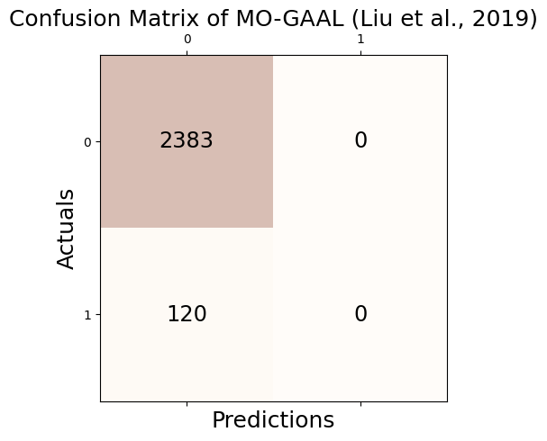
Accuracy: 0.952
Precision: 0.000
Recall: 0.000
F1 Score: 0.000/home/csy/anaconda3/envs/pygsp/lib/python3.10/site-packages/sklearn/metrics/_classification.py:1469: UndefinedMetricWarning: Precision is ill-defined and being set to 0.0 due to no predicted samples. Use `zero_division` parameter to control this behavior.
_warn_prf(average, modifier, msg_start, len(result))# check
print('Accuracy(TP + TN / TP + TN + FP + FN): %.3f' % round((_conf.conf_matrix[0][0] + _conf.conf_matrix[1][1])/1000,3))
print('Precision(TP / TP + FP): %.3f' % round(_conf.conf_matrix[1][1]/(_conf.conf_matrix[0][1] + _conf.conf_matrix[1][1]),3))
print('Recall(TP / TP + FN): %.3f' % round(_conf.conf_matrix[1][1]/(_conf.conf_matrix[1][0] + _conf.conf_matrix[1][1]),3))
print('F1 Score(2*precision*recall/precision+recall): %.3f' % round((2*(_conf.conf_matrix[1][1]/(_conf.conf_matrix[0][1] + _conf.conf_matrix[1][1]))*(_conf.conf_matrix[1][1]/(_conf.conf_matrix[1][0] + _conf.conf_matrix[1][1]))) / (_conf.conf_matrix[1][1]/(_conf.conf_matrix[0][1] + _conf.conf_matrix[1][1]) + _conf.conf_matrix[1][1]/(_conf.conf_matrix[1][0] + _conf.conf_matrix[1][1])),3))Accuracy(TP + TN / TP + TN + FP + FN): 2.383
Precision(TP / TP + FP): nan
Recall(TP / TP + FN): 0.000
F1 Score(2*precision*recall/precision+recall): nan/tmp/ipykernel_3852735/4166638268.py:3: RuntimeWarning: invalid value encountered in long_scalars
print('Precision(TP / TP + FP): %.3f' % round(_conf.conf_matrix[1][1]/(_conf.conf_matrix[0][1] + _conf.conf_matrix[1][1]),3))
/tmp/ipykernel_3852735/4166638268.py:5: RuntimeWarning: invalid value encountered in long_scalars
print('F1 Score(2*precision*recall/precision+recall): %.3f' % round((2*(_conf.conf_matrix[1][1]/(_conf.conf_matrix[0][1] + _conf.conf_matrix[1][1]))*(_conf.conf_matrix[1][1]/(_conf.conf_matrix[1][0] + _conf.conf_matrix[1][1]))) / (_conf.conf_matrix[1][1]/(_conf.conf_matrix[0][1] + _conf.conf_matrix[1][1]) + _conf.conf_matrix[1][1]/(_conf.conf_matrix[1][0] + _conf.conf_matrix[1][1])),3))fpr, tpr, thresh = roc_curve(outlier_true_bunny,clf.decision_function(_df[['x', 'y','fnoise']]))79/79 [==============================] - 0s 1ms/stepauc(fpr, tpr)0.6595030773534759tab_bunny = pd.concat([tab_bunny,
pd.DataFrame({"Accuracy":[_conf.acc],"Precision":[_conf.pre],"Recall":[_conf.rec],"F1":[_conf.f1],"AUC":[auc(fpr, tpr)]},index = [_conf.name])]);tab_bunny| Accuracy | Precision | Recall | F1 | AUC | |
|---|---|---|---|---|---|
| GODE | 0.988414 | 0.864000 | 0.900000 | 0.881633 | 0.996227 |
| LOF (Breunig et al., 2000) | 0.943268 | 0.412698 | 0.433333 | 0.422764 | 0.819111 |
| kNN (Ramaswamy et al., 2000) | 0.987215 | 0.849206 | 0.891667 | 0.869919 | 0.984438 |
| CBLOF (He et al., 2003) | 0.980823 | 0.785714 | 0.825000 | 0.804878 | 0.970545 |
| OCSVM (Sch ̈olkopf et al., 2001) | 0.916500 | 0.322709 | 0.675000 | 0.436658 | 0.857550 |
| MCD (Hardin and Rocke, 2004) | 0.978426 | 0.761905 | 0.800000 | 0.780488 | 0.972398 |
| Feature Bagging (Lazarevic and Kumar, 2005) | 0.948861 | 0.468254 | 0.491667 | 0.479675 | 0.833809 |
| ABOD (Kriegel et al., 2008) | 0.979225 | 0.769841 | 0.808333 | 0.788618 | 0.971576 |
| Isolation Forest (Liu et al., 2008) | 0.972034 | 0.698413 | 0.733333 | 0.715447 | 0.967954 |
| HBOS (Goldstein and Dengel, 2012) | 0.932082 | 0.301587 | 0.316667 | 0.308943 | 0.859192 |
| SOS (Janssens et al., 2012) | 0.908909 | 0.071429 | 0.075000 | 0.073171 | 0.557431 |
| SO-GAAL (Liu et al., 2019) | 0.952058 | 0.000000 | 0.000000 | 0.000000 | 0.673010 |
| MO-GAAL (Liu et al., 2019) | 0.952058 | 0.000000 | 0.000000 | 0.000000 | 0.659503 |
LSCP_Bunny
detectors = [KNN(), LOF(), OCSVM()]
clf = LSCP(detectors,contamination=0.05, random_state=77)
clf.fit(_df[['x', 'y','fnoise']])/home/csy/anaconda3/envs/pygsp/lib/python3.10/site-packages/pyod/models/lscp.py:382: UserWarning: The number of histogram bins is greater than the number of classifiers, reducing n_bins to n_clf.
warnings.warn(LSCP(contamination=0.05,
detector_list=[KNN(algorithm='auto', contamination=0.1, leaf_size=30, method='largest',
metric='minkowski', metric_params=None, n_jobs=1, n_neighbors=5, p=2,
radius=1.0), LOF(algorithm='auto', contamination=0.1, leaf_size=30, metric='minkowski',
metric_params=None, n_jobs=1, n_neighbors=20, novelty=True, p=2), OCSVM(cache_size=200, coef0=0.0, contamination=0.1, degree=3, gamma='auto',
kernel='rbf', max_iter=-1, nu=0.5, shrinking=True, tol=0.001,
verbose=False)],
local_max_features=1.0, local_region_size=30, n_bins=3,
random_state=RandomState(MT19937) at 0x7FD5E1460D40)outlier_LSCP_one = list(clf.labels_)_conf = Conf_matrx(outlier_true_bunny,outlier_LSCP_one)
_conf.conf("LSCP (Zhao et al., 2019)")Accuracy: 0.982
Precision: 0.802
Recall: 0.842
F1 Score: 0.821# check
print('Accuracy(TP + TN / TP + TN + FP + FN): %.3f' % round((_conf.conf_matrix[0][0] + _conf.conf_matrix[1][1])/1000,3))
print('Precision(TP / TP + FP): %.3f' % round(_conf.conf_matrix[1][1]/(_conf.conf_matrix[0][1] + _conf.conf_matrix[1][1]),3))
print('Recall(TP / TP + FN): %.3f' % round(_conf.conf_matrix[1][1]/(_conf.conf_matrix[1][0] + _conf.conf_matrix[1][1]),3))
print('F1 Score(2*precision*recall/precision+recall): %.3f' % round((2*(_conf.conf_matrix[1][1]/(_conf.conf_matrix[0][1] + _conf.conf_matrix[1][1]))*(_conf.conf_matrix[1][1]/(_conf.conf_matrix[1][0] + _conf.conf_matrix[1][1]))) / (_conf.conf_matrix[1][1]/(_conf.conf_matrix[0][1] + _conf.conf_matrix[1][1]) + _conf.conf_matrix[1][1]/(_conf.conf_matrix[1][0] + _conf.conf_matrix[1][1])),3))Accuracy(TP + TN / TP + TN + FP + FN): 2.459
Precision(TP / TP + FP): 0.802
Recall(TP / TP + FN): 0.842
F1 Score(2*precision*recall/precision+recall): 0.821fpr, tpr, thresh = roc_curve(outlier_true_bunny,clf.decision_function(_df[['x', 'y','fnoise']]))/home/csy/anaconda3/envs/pygsp/lib/python3.10/site-packages/scipy/stats/_stats_py.py:4068: PearsonRConstantInputWarning: An input array is constant; the correlation coefficient is not defined.
warnings.warn(PearsonRConstantInputWarning())auc(fpr, tpr)0.982259756609316tab_bunny = pd.concat([tab_bunny,
pd.DataFrame({"Accuracy":[_conf.acc],"Precision":[_conf.pre],"Recall":[_conf.rec],"F1":[_conf.f1],"AUC":[auc(fpr, tpr)]},index = [_conf.name])]);tab_bunny| Accuracy | Precision | Recall | F1 | AUC | |
|---|---|---|---|---|---|
| GODE | 0.988414 | 0.864000 | 0.900000 | 0.881633 | 0.996227 |
| LOF (Breunig et al., 2000) | 0.943268 | 0.412698 | 0.433333 | 0.422764 | 0.819111 |
| kNN (Ramaswamy et al., 2000) | 0.987215 | 0.849206 | 0.891667 | 0.869919 | 0.984438 |
| CBLOF (He et al., 2003) | 0.980823 | 0.785714 | 0.825000 | 0.804878 | 0.970545 |
| OCSVM (Sch ̈olkopf et al., 2001) | 0.916500 | 0.322709 | 0.675000 | 0.436658 | 0.857550 |
| MCD (Hardin and Rocke, 2004) | 0.978426 | 0.761905 | 0.800000 | 0.780488 | 0.972398 |
| Feature Bagging (Lazarevic and Kumar, 2005) | 0.948861 | 0.468254 | 0.491667 | 0.479675 | 0.833809 |
| ABOD (Kriegel et al., 2008) | 0.979225 | 0.769841 | 0.808333 | 0.788618 | 0.971576 |
| Isolation Forest (Liu et al., 2008) | 0.972034 | 0.698413 | 0.733333 | 0.715447 | 0.967954 |
| HBOS (Goldstein and Dengel, 2012) | 0.932082 | 0.301587 | 0.316667 | 0.308943 | 0.859192 |
| SOS (Janssens et al., 2012) | 0.908909 | 0.071429 | 0.075000 | 0.073171 | 0.557431 |
| SO-GAAL (Liu et al., 2019) | 0.952058 | 0.000000 | 0.000000 | 0.000000 | 0.673010 |
| MO-GAAL (Liu et al., 2019) | 0.952058 | 0.000000 | 0.000000 | 0.000000 | 0.659503 |
| LSCP (Zhao et al., 2019) | 0.982421 | 0.801587 | 0.841667 | 0.821138 | 0.982260 |
tab_bunny
round(tab_bunny,3)| Accuracy | Precision | Recall | F1 | AUC | |
|---|---|---|---|---|---|
| GODE | 0.988 | 0.864 | 0.900 | 0.882 | 0.996 |
| LOF (Breunig et al., 2000) | 0.943 | 0.413 | 0.433 | 0.423 | 0.819 |
| kNN (Ramaswamy et al., 2000) | 0.987 | 0.849 | 0.892 | 0.870 | 0.984 |
| CBLOF (He et al., 2003) | 0.981 | 0.786 | 0.825 | 0.805 | 0.971 |
| OCSVM (Sch ̈olkopf et al., 2001) | 0.917 | 0.323 | 0.675 | 0.437 | 0.858 |
| MCD (Hardin and Rocke, 2004) | 0.978 | 0.762 | 0.800 | 0.780 | 0.972 |
| Feature Bagging (Lazarevic and Kumar, 2005) | 0.949 | 0.468 | 0.492 | 0.480 | 0.834 |
| ABOD (Kriegel et al., 2008) | 0.979 | 0.770 | 0.808 | 0.789 | 0.972 |
| Isolation Forest (Liu et al., 2008) | 0.972 | 0.698 | 0.733 | 0.715 | 0.968 |
| HBOS (Goldstein and Dengel, 2012) | 0.932 | 0.302 | 0.317 | 0.309 | 0.859 |
| SOS (Janssens et al., 2012) | 0.909 | 0.071 | 0.075 | 0.073 | 0.557 |
| SO-GAAL (Liu et al., 2019) | 0.952 | 0.000 | 0.000 | 0.000 | 0.673 |
| MO-GAAL (Liu et al., 2019) | 0.952 | 0.000 | 0.000 | 0.000 | 0.660 |
| LSCP (Zhao et al., 2019) | 0.982 | 0.802 | 0.842 | 0.821 | 0.982 |